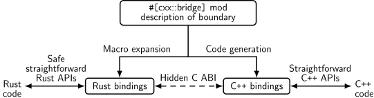

Bem-vindos ao Comprehensive Rust 🦀


Este é um curso gratuito de Rust desenvolvido pela equipe do Android no Google. O curso abrange o espectro completo da linguagem, desde sintaxe básica até tópicos avançados como ‘generics’ e tratamento de erros.
A versão mais recente do curso pode ser encontrada em https://google.github.io/comprehensive-rust/. Se você estiver lendo em outro lugar, por favor verifique lá por atualizações.
O curso está disponível em outros idiomas. Selecione seu idioma preferido no canto superior direito da página ou verifique a página de Traduções para uma lista de todas as traduções disponíveis.
O curso também está disponível como PDF.
O objetivo do curso é ensinar Rust a você. Nós assumimos que você não saiba nada sobre Rust e esperamos:
- Dar a você uma compreensão abrangente da linguagem e da sintaxe de Rust.
- Permitir que você modifique programas existentes e escreva novos programas em Rust.
- Demonstrar expressões idiomáticas comuns de Rust.
Nós chamamos os quatro primeiros dias do curso de Fundamentos do Rust.
Em seguida, você está convidado(a) a mergulhar a fundo em um ou mais tópicos especializados:
- Android: um curso de meio dia sobre a utilização de Rust no desenvolvimento para a plataforma Android (AOSP). Isto inclui interoperabilidade com C, C++ e Java.
- Chromium: um curso de meio dia sobre a utilização de Rust em navegadores baseados em Chromium. Isto inclui interoperabilidade com C++ e como incluir crates de terceiros no Chromium.
- Bare-metal: uma aula de um dia sobre a utilização de Rust para o desenvolvimento “bare metal” (sistema embarcado). Tanto micro-controladores quanto processadores de aplicação são cobertos.
- Concorrência: uma aula de um dia inteiro sobre concorrência em Rust. Nós cobrimos tanto concorrência clássica (escalonamento preemptivo utilizando threads e mutexes) quanto concorrência async/await (multitarefa cooperativa utilizando futures).
Fora do escopo
Rust é uma linguagem extensa e não conseguiremos cobrir tudo em poucos dias. Alguns assuntos que não são objetivos deste curso são:
- Aprender a criar macros: por favor confira Capítulo 19.5 em Rust Book e Rust by Example para esse fim.
Premissas
O curso pressupõe que você já saiba programar. Rust é uma linguagem de tipagem estática e ocasionalmente faremos comparações com C e C++ para melhor explicar ou contrastar a abordagem do Rust.
Se você sabe programar em uma linguagem de tipagem dinâmica, como Python ou JavaScript, então você também será capaz de acompanhar.
Este é um exemplo de uma nota do instrutor. Nós as usaremos para adicionar informações complementares aos slides. Elas podem ser tanto pontos-chave que o instrutor deve cobrir quanto respostas a perguntas típicas que surgem em sala de aula.
Conduzindo o Curso
Esta página é para o instrutor do curso.
Aqui estão algumas informações básicas sobre como estamos conduzindo o curso internamente no Google.
Normalmente realizamos as aulas das 9h às 16h, com uma pausa de 1 hora para o almoço no meio. Isso deixa 3 horas para a aula da manhã e 3 horas para a aula da tarde. Ambas as sessões contêm várias pausas e tempo para os alunos trabalharem nos exercícios.
Antes de oferecer o curso, você precisa:
-
Familiarize-se com o material do curso. Incluímos notas do instrutor para ajudar a destacar os pontos principais (ajude-nos contribuindo com mais notas!). Ao apresentar, certifique-se de abrir as notas do instrutor em um pop-up (clique no link com uma pequena seta ao lado de “Speaker Notes” ou “Notas do Instrutor”). Desta forma você tem uma tela limpa para apresentar à turma.
-
Decida as datas. Como o curso leva pelo menos quatro dias completos, recomendamos que você agende os dias ao longo de duas semanas. Os participantes do curso disseram que eles acham útil ter um espaço no curso, pois os ajuda a processar todas as informações que lhes damos.
-
Encontre uma sala grande o suficiente para seus participantes presenciais. Recomendamos turmas de 15 a 25 pessoas. Isso é pequeno o suficiente para que as pessoas se sintam confortáveis fazendo perguntas — também é pequeno o suficiente para que um instrutor tenha tempo para responder às perguntas. Certifique-se de que a sala tenha mesas para você e para os alunos: todos vocês precisam ser capazes de sentar e trabalhar com seus laptops. Em particular, você fará muita codificação ao vivo como instrutor, portanto, um pódio não será muito útil para você.
-
No dia do seu curso, chegue um pouco mais cedo na sala para acertar as coisas. Recomendamos apresentar diretamente usando
mdbook serverodando em seu laptop (consulte as instruções de instalação). Isso garante um desempenho ideal sem atrasos conforme você muda de página. Usar seu laptop também permitirá que você corrija erros de digitação enquanto você ou os participantes do curso os identificam. -
Deixe as pessoas resolverem os exercícios sozinhas ou em pequenos grupos. Normalmente gastamos de 30 a 45 minutos em exercícios pela manhã e à tarde (incluindo o tempo para revisar as soluções). Tenha certeza de perguntar às pessoas se elas estão em dificuldades ou se há algo em que você possa ajudar. Quando você vir que várias pessoas têm o mesmo problema, chame a turma e ofereça uma solução, por exemplo, mostrando às pessoas onde encontrar as informações relevantes na biblioteca padrão (“standard library”).
Isso é tudo, boa sorte no curso! Esperamos que seja tão divertido para você como tem sido para nós!
Por favor, dê seu feedback depois para que possamos continuar melhorando o curso. Adoraríamos saber o que funcionou bem para você e o que pode ser melhorado. Seus alunos também são muito bem-vindos para nos enviar feedback!
Estrutura do Curso
Esta página é para o instrutor do curso.
Fundamentos do Rust
Os primeiros quatro dias compõem os Fundamentos do Rust. Os dias são rápidos e cobrimos bastante counteúdo!
Agenda do curso:
- Dia 1 Manhã (2 horas e 5 minutos, incluindo intervalos)
| Segment | Duration |
|---|---|
| Bem-vindos | 5 minutes |
| Olá, Mundo | 15 minutes |
| Tipos e Valores | 40 minutes |
| Fundamentos de Controle de Fluxo | 40 minutes |
- Dia 1 Tarde (2 horas e 35 minutos, incluindo intervalos)
| Segment | Duration |
|---|---|
| Tuplas e Matrizes | 35 minutes |
| Referências | 55 minutes |
| Tipos Definidos pelo Usuário | 50 minutes |
- Dia 2 Manhã (2 horas and 10 minutos, incluindo intervalos)
| Segment | Duration |
|---|---|
| Bem-vindos | 3 minutes |
| Correspondência de Padrões | 1 hour |
| Métodos e Traits | 50 minutes |
- Dia 2 Tarde (3 horas e 15 minutos, incluindo intervalos)
| Segment | Duration |
|---|---|
| Genéricos (Generics) | 45 minutes |
| Tipos da Biblioteca Padrão | 1 hour |
| Traits da Biblioteca Padrão | 1 hour and 10 minutes |
- Dia 3 Manhã (2 horas and 20 minutos, incluindo intervalos)
| Segment | Duration |
|---|---|
| Bem-vindos | 3 minutes |
| Gerenciamento de Memória | 1 hour |
| Ponteiros Inteligentes (Smart Pointers) | 55 minutes |
- Dia 3 Tarde (1 hora and 55 minutos, incluindo intervalos)
| Segment | Duration |
|---|---|
| Empréstimo (Borrowing) | 55 minutes |
| Tempos de Vida (Lifetimes) | 50 minutes |
- Dia 4 Manhã (2 horas and 40 minutos, incluindo intervalos)
| Segment | Duration |
|---|---|
| Bem-vindos | 3 minutes |
| Iteradores | 45 minutes |
| Módulos | 40 minutes |
| Testes | 45 minutes |
- Dia 4 Tarde (2 horas and 15 minutos, incluindo intervalos)
| Segment | Duration |
|---|---|
| Tratamento de Erros | 1 hour |
| Rust Inseguro (Unsafe) | 1 hour and 5 minutes |
Análises Detalhadas
Além do curso de 4 dias sobre Fundamentos de Rust, nós abordamos alguns tópicos mais especializados:
Rust para Android
O Rust para Android é um curso de meio dia sobre o uso de Rust para o desenvolvimento na plataforma Android. Isso inclui interoperabilidade com C, C++ e Java.
Você precisará de um checkout do AOSP. Faça um checkout do repositório do curso no mesmo computador e mova o diretório src/android/ para a raiz do seu checkout do AOSP. Isso garantirá que o sistema de compilação do Android veja os arquivos Android.bp em src/android/.
Certifique-se de que adb sync funcione com seu emulador ou dispositivo físico e pré-compile todos os exemplos do Android usando src/android/build_all.sh. Leia o roteiro para ver os comandos executados e verifique se eles funcionam quando você os executa manualmente.
Rust para Chromium
O Rust para Chromium é um curso de meio dia sobre o uso de Rust como parte do navegador Chromium. Ele inclui o uso de Rust no sistema de compilação gn do Chromium, a inclusão de bibliotecas de terceiros (“crates”) e interoperabilidade com C++.
Você precisará ser capaz de compilar o Chromium — uma compilação de componentes de depuração é recomendada para velocidade, mas qualquer compilação funcionará. Certifique-se de que você possa executar o navegador Chromium que você compilou.
Rust Bare-Metal
O Rust Bare-Metal é uma aula de um dia inteiro sobre o uso de Rust para o desenvolvimento bare-metal (sistema embarcado). Tanto micro-controladores quanto processadores de aplicação são cobertos.
Para a parte do micro-controlador, você precisará comprar a placa de desenvolvimento BBC micro:bit v2 com antecedência. Todos precisarão instalar vários pacotes, conforme descrito na página inicial.
Concorrência em Rust
Concorrência em Rust é uma aula de um dia sobre concorrência clássica e concorrência async/await.
Você precisará de um novo crate configurado e as dependências baixadas e prontas para uso. Você pode então copiar/colar os exemplos para src/main.rs para experimentá-los:
cargo init concurrency
cd concurrency
cargo add tokio --features full
cargo run
Agenda do curso:
- Morning (3 hours and 20 minutes, including breaks)
| Segment | Duration |
|---|---|
| Threads | 30 minutes |
| Canais (Channels) | 20 minutes |
| Send e Sync | 15 minutes |
| Estado Compartilhado | 30 minutes |
| Exercícios | 1 hour and 10 minutes |
- Afternoon (3 hours and 20 minutes, including breaks)
| Segment | Duration |
|---|---|
| Fundamentos de Async (Assincronicidade) | 30 minutes |
| Canais e Controle de Fluxo | 20 minutes |
| Armadilhas | 55 minutes |
| Exercícios | 1 hour and 10 minutes |
Formato
O curso foi projetado para ser bastante interativo e recomendamos deixar as perguntas conduzirem a exploração do Rust!
Atalhos de Teclado
Existem vários atalhos de teclado úteis no mdBook:
- Arrow-Left: Navigate to the previous page.
- Arrow-Right: Navigate to the next page.
- Ctrl + Enter: Execute the code sample that has focus.
- s: Activate the search bar.
Traduções
O curso foi traduzido para outros idiomas por um grupo de voluntários maravilhosos:
- Português do Brasil por @rastringer, @hugojacob, @joaovicmendes e @henrif75.
- Chinês (Simplificado) por @suetfei, @wnghl, @anlunx, @kongy, @noahdragon, @superwhd, @SketchK e @nodmp.
- Chinês (Tradicional) por @hueich, @victorhsieh, @mingyc, @kuanhungchen e @johnathan79717.
- Japonês por @CoinEZ-JPN, @momotaro1105, @HidenoriKobayashi e @kantasv.
- Coreano por @keispace, @jiyongp, @jooyunghan, e @namhyung.
- Espanhol por @deavid.
- Ucraniano por @git-user-cpp, @yaremam e @reta.
Use o seletor de idioma no canto superior direito para alternar entre os idiomas.
Traduções Incompletas
Há um grande número de traduções em andamento. Nós referenciamos as traduções mais recentemente atualizadas:
- Árabe por @younies
- Bengali por @raselmandol.
- Francês por @KookaS, @vcaen e @AdrienBaudemont.
- Alemão por @Throvn e @ronaldfw.
- Italiano por @henrythebuilder e @detro.
Se você quiser ajudar com essa iniciativa, consulte nossas instruções sobre como proceder. As traduções são coordenadas no issue tracker.
Usando o Cargo
Quando você começar a ler sobre Rust, logo conhecerá o Cargo, a ferramenta padrão usada no ecossistema Rust para criar e executar aplicativos Rust. Aqui nós queremos dar uma breve visão geral do que é o Cargo e como ele se encaixa no ecossistema mais amplo e como ele se encaixa neste treinamento.
Instalação
Por favor, siga as instruções em https://rustup.rs/.
Isso fornecerá a ferramenta de compilação Cargo (cargo) e o compilador Rust (rustc). Você também obterá o rustup, um utilitário de linha de comando que você pode usar para instalar diferentes versões do compilador.
Depois de instalar o Rust, você deve configurar seu editor ou IDE para trabalhar com o Rust. A maioria dos editores faz isso conversando com o rust-analyzer, que fornece auto-completar e funcionalidade de salto para definição para VS Code, Emacs, Vim/Neovim e muitos outros. Também há um IDE diferente disponível chamado RustRover.
-
No Debian/Ubuntu, você também pode instalar o Cargo, o código-fonte do Rust e o formatador Rust com
apt. Entretanto, isto lhe fornece uma versão desatualizada do Rust e pode levar a comportamentos inesperados. O comando seria:sudo apt install cargo rust-src rustfmt -
No macOS, você pode usar o Homebrew para instalar o Rust, mas isso pode fornecer uma versão desatualizada. Portanto, é recomendado instalar o Rust a partir do site oficial.
O Ecossistema Rust
O ecossistema Rust consiste em várias ferramentas, das quais as principais são:
-
rustc: o compilador Rust que converte arquivos.rsem binários e outros formatos intermediários. -
cargo: o gerenciador de dependências e ferramenta de compilação do Rust. O Cargo sabe como baixar dependências, normalmente hospedadas em https://crates.io, e as passará para orustcquando compilar o seu projeto. O Cargo também vem com um gerenciador de testes embutido que é utilizado para a execução de testes unitários. -
rustup: o instalador e atualizador do conjunto de ferramentas do Rust. Esta ferramenta é utilizada para instalar e atualizar orustce ocargoquando novas versões do Rust forem lançadas. Além disso,rustuptambém pode baixar a documentação da biblioteca padrão. Você pode ter múltiplas versões do Rust instaladas ao mesmo tempo erustuppermitirá que você alterne entre elas conforme necessário.
Pontos chave:
-
O Rust tem um cronograma de lançamento rápido com um novo lançamento saindo a cada seis semanas. Novos lançamentos mantêm compatibilidade com versões anteriores — além disso, eles habilitam novas funcionalidades.
-
Existem três canais de lançamento: “stable”, “beta” e “nightly”.
-
Novos recursos estão sendo testados em “nightly”, “beta” é o que se torna “stable” a cada seis semanas.
-
Dependências também podem ser resolvidas a partir de registros alternativos, git, pastas, e outros mais.
-
O Rust também tem edições: a edição atual é o Rust 2021. As edições anteriores foram o Rust 2015 e o Rust 2018.
-
As edições podem fazer alterações incompatíveis com versões anteriores da linguagem.
-
Para evitar quebra de código, as edições são opcionais: você seleciona a edição para o seu crate através do arquivo
Cargo.toml. -
Para evitar a divisão do ecossistema, os compiladores Rust podem misturar código escrito para diferentes edições.
-
Mencione que é muito raro usar o compilador diretamente, não através do
cargo(a maioria dos usuários nunca o faz). -
Pode valer a pena mencionar que o próprio Cargo é uma ferramenta extremamente poderosa e abrangente. Ele é capaz de muitos recursos avançados, incluindo, entre outros:
- Estrutura do projeto/pacote
- Espaços de trabalho
- Dependências de desenvolvimento e gerenciamento/cache de dependência de tempo de execução
- Criar scripts
- Instalação global
- Também é extensível com plugins de sub-comando (tais como cargo clippy).
-
Leia mais no Livro Oficial do Cargo
-
Exemplos de Código neste Treinamento
Para este treinamento, exploraremos principalmente a linguagem Rust por meio de exemplos que podem ser executados através do seu navegador. Isso torna a instalação muito mais fácil e garante uma experiência consistente para todos.
A instalação do Cargo ainda assim é incentivada: será mais fácil para você fazer os exercícios. No último dia, faremos um exercício maior que mostra como trabalhar com dependências e para isso você precisará do Cargo.
Os blocos de código neste curso são totalmente interativos:
fn main() {
println!("Edite-me!");
}You can use Ctrl + Enter to execute the code when focus is in the text box.
A maioria dos exemplos de código são editáveis, como mostrado acima. Alguns exemplos de código não são editáveis por vários motivos:
-
Os playgrounds embutidos não conseguem executar testes unitários. Copie o código e cole no Playground real para demonstrar os testes unitários.
-
Os playgrounds embutidos perdem seu estado no momento em que você navega para outra página! Esta é a razão pela qual os alunos devem resolver os exercícios usando uma instalação do Rust local ou via Playground real.
Executando Código Localmente com o Cargo
Se você quiser experimentar o código em seu próprio sistema, precisará primeiro instalar o Rust. Faça isso seguindo as instruções no Livro do Rust. Isso deve fornecer o rustc e o cargo funcionando. Quando este curso foi escrito, as últimas versões estáveis do Rust são:
% rustc --version
rustc 1.69.0 (84c898d65 2023-04-16)
% cargo --version
cargo 1.69.0 (6e9a83356 2023-04-12)
Você também pode usar qualquer versão posterior, pois o Rust mantém compatibilidade com versões anteriores.
Com isso finalizado, siga estas etapas para criar um binário Rust a partir de um dos exemplos deste treinamento:
-
Clique no botão “Copy to clipboard” (“Copiar para a área de transferência”) no exemplo que deseja copiar.
-
Use
cargo new exercisepara criar um novo diretórioexercise/para o seu código:$ cargo new exercise Created binary (application) `exercise` package -
Navegue até
exercise/e usecargo runpara compilar e executar seu binário:$ cd exercise $ cargo run Compiling exercise v0.1.0 (/home/mgeisler/tmp/exercise) Finished dev [unoptimized + debuginfo] target(s) in 0.75s Running `target/debug/exercise` Hello, world! -
Substitua o código gerado em
src/main.rspelo seu próprio código. Por exemplo, usando o exemplo da página anterior, façasrc/main.rsparecer comofn main() { println!("Edite-me!"); } -
Use
cargo runpara compilar e executar seu binário atualizado:$ cargo run Compiling exercise v0.1.0 (/home/mgeisler/tmp/exercise) Finished dev [unoptimized + debuginfo] target(s) in 0.24s Running `target/debug/exercise` Edit me! -
Use
cargo checkpara verificar rapidamente se há erros em seu projeto, usecargo buildpara compilá-lo sem executá-lo. Você encontrará a saída emtarget/debug/para uma compilação de depuração normal. Usecargo build --releasepara produzir um binário otimizado emtarget/release/. -
Você pode adicionar dependências para seu projeto editando
Cargo.toml. Quando você execute os comandoscargo, ele irá baixar e compilar automaticamente dependências para você.
Tente encorajar os participantes do curso a instalar o Cargo e usar um editor local. Isso facilitará a vida deles, pois eles terão um ambiente normal de desenvolvimento.
Bem-vindos ao Dia 1
Este é o primeiro dia de Fundamentos do Rust. Nós iremos cobrir muitos pontos hoje:
- Sintaxe Rust básica: variáveis, tipos escalares e compostos, enums, structs, referências, funções e métodos.
- Tipos e Inferência de Tipo
- Construções de fluxo de controle: loops, condicionais, e assim por diante.
- Tipos definidos pelo usuário: structs e enums.
- Correspondência de padrões: desestruturando enums, structs, e matrizes.
Agenda
Including 10 minute breaks, this session should take about 2 hours and 5 minutes. It contains:
| Segment | Duration |
|---|---|
| Bem-vindos | 5 minutes |
| Olá, Mundo | 15 minutes |
| Tipos e Valores | 40 minutes |
| Fundamentos de Controle de Fluxo | 40 minutes |
Lembre aos alunos que:
- Eles devem fazer perguntas na hora, não as guarde para o fim.
- A aula é para ser interativa e as discussões são muito encorajadas!
- Como instrutor, você deve tentar manter as discussões relevantes, ou seja, mantenha as discussões relacionadas a como o Rust faz as coisas versus alguma outra linguagem. Pode ser difícil encontrar o equilíbrio certo, mas procure permitir mais discussões, uma vez que elas engajam as pessoas muito mais do que uma comunicação unidirecional.
- As perguntas provavelmente farão com que falemos sobre coisas antes dos slides.
- Isso está perfeitamente OK! A repetição é uma parte importante do aprendizado. Lembre-se que os slides são apenas um suporte e você está livre para ignorá-los quando quiser.
A ideia para o primeiro dia é mostrar as coisas “básicas” em Rust que devem ter paralelos imediatos em outras linguagens. As partes mais avançadas do Rust vêm nos dias subsequentes.
Se você estiver ensinando isso em uma sala de aula, este é um bom lugar para revisar a agenda. Observe que há um exercício no final de cada segmento, seguido por uma pausa. Planeje cobrir a solução do exercício após a pausa. Os horários listados aqui são uma sugestão para manter o curso no horário. Sinta-se à vontade para ser flexível e ajustar conforme necessário!
Olá, Mundo
This segment should take about 15 minutes. It contains:
| Slide | Duration |
|---|---|
| O que é Rust? | 10 minutes |
| Benefícios do Rust | 3 minutes |
| Playground | 2 minutes |
O que é Rust?
Rust é uma nova linguagem de programação que teve sua versão 1.0 lançada em 2015:
- Rust é uma linguagem compilada estaticamente e tem um papel semelhante ao C++
rustcusa o LLVM como seu backend.
- Rust suporta muitas plataformas e arquiteturas:
- x86, ARM, WebAssembly, …
- Linux, Mac, Windows, …
- Rust é usado em uma ampla gama de dispositivos:
- firmware e carregadores de boot,
- smart displays,
- celulares,
- desktops,
- servidores.
Rust se encaixa na mesma área que C++:
- Alta flexibilidade.
- Alto nível de controle.
- Pode ser reduzido para dispositivos com menor poder computacional, tais como microcontroladores.
- Não possui runtime ou coletor de lixo (garbage collection).
- Concentra-se em confiabilidade e segurança sem sacrificar o desempenho.
Benefícios do Rust
Alguns pontos exclusivos do Rust:
-
Segurança de memória em tempo de compilação - classes inteiras de bugs de memória são prevenidas em tempo de compilação
- Sem variáveis não inicializadas.
- Sem double-frees.
- Sem use-after-free.
- Sem ponteiros
NULL. - Sem mutexes bloqueados esquecidos.
- Sem concorrência de dados entre threads.
- Sem invalidação de iteradores.
-
Sem comportamento indefinido em tempo de execução - o que uma instrução Rust executa nunca é deixado indefinido
- O acesso a matrizes tem limites verificados.
- Estouro de números inteiros é definido (“pânico” ou wrap-around).
-
Recursos de linguagem modernos - tão expressivos e ergonômicos quanto linguagens de alto nível
- Enums e correspondência de padrões.
- Genéricos (Generics).
- FFI sem overhead.
- Abstrações de custo zero.
- Excelentes mensagens de erro do compilador.
- Gerenciador de dependências integrado.
- Suporte integrado para testes.
- Excelente suporte ao protocolo de servidor de linguagem (LSP).
Não gaste muito tempo aqui. Todos esses pontos serão abordados em maior profundidade mais tarde.
Certifique-se de perguntar à classe com quais linguagens de programação eles têm experiência. Dependendo da resposta você pode destacar diferentes características do Rust:
-
Experiência com C ou C++: Rust elimina toda uma classe de erros em tempo de execução através do verificador de empréstimos (borrow checker). Você obtém desempenho como em C e C++, mas sem os problemas de insegurança de memória. Além disso, você tem uma linguagem com funcionalidades modernas como correspondência de padrões e gerenciamento de dependência integrado.
-
Experiência com Java, Go, Python, JavaScript…: Você tem a mesma segurança de memória como nessas linguagens, além de uma semelhança com linguagens de alto nível. Além disso você obtém desempenho rápido e previsível como C e C++ (sem coletor de lixo ou “garbage collector”) bem como acesso a hardware de baixo nível (caso você precise)
Playground
O Rust Playground fornece uma maneira fácil de executar pequenos programas em Rust, e é a base para os exemplos e exercícios neste curso. Tente executar o programa “hello-world” com o qual ele começa. Ele vem com algumas funcionalidades úteis:
-
Em “Tools”, use a opção
rustfmtpara formatar seu código da maneira “padrão”. -
Rust tem dois principais “perfis” (profiles) para gerar código: Debug (verificações de tempo de execução extras, menos otimização) e Release (menos verificações de tempo de execução, muita otimização). Estes são acessíveis em “Debug” no topo.
-
Se você estiver interessado, use “ASM” em “…” para ver o código assembly gerado.
Conforme os alunos se dirigem para o intervalo, incentive-os a abrir o playground e experimentar um pouco. Incentive-os a manter a guia aberta e experimentar durante o resto do curso. Isso é particularmente útil para alunos avançados que desejam saber mais sobre as otimizações do Rust ou assembly gerado.
Tipos e Valores
This segment should take about 40 minutes. It contains:
| Slide | Duration |
|---|---|
| Olá, Mundo | 5 minutes |
| Variáveis | 5 minutes |
| Valores | 5 minutes |
| Aritimética | 3 minutes |
| Inferência de Tipo | 3 minutes |
| Exercício: Fibonacci | 15 minutes |
Olá, Mundo
Vamos pular para o programa em Rust mais simples possível, o clássico “Olá Mundo”:
fn main() {
println!("Hello 🌍!");
}O que você vê:
- Funções são introduzidas com
fn. - Os blocos são delimitados por chaves como em C e C++.
- A função
mainé o ponto de entrada do programa. - Rust tem macros “higiênicas”,
println!é um exemplo disso. - As strings Rust são codificadas em UTF-8 e podem conter qualquer caractere Unicode.
Este slide tenta deixar os alunos familiarizados com o código em Rust. Eles irão ver bastante conteúdo nos próximos quatro dias, então começamos devagar com algo familiar.
Pontos chave:
-
Rust é muito parecido com outras linguagens na tradição C/C++/Java. É imperativo (não funcional) e não tenta reinventar as coisas, a menos que seja absolutamente necessário.
-
Rust é moderno com suporte total para coisas como Unicode.
-
Rust usa macros para situações em que você deseja ter um número variável de argumentos (sem sobrecarga de função).
-
Macros “higiênicas” significam que elas não capturam acidentalmente identificadores do escopo em que são usadas. As macros em Rust são, na verdade, apenas parcialmente “higiênicas”.
-
Rust é multi-paradigma. Por exemplo, ele possui funcionalidades de programação orientada à objetos poderosas, e, embora não seja uma linguagem funcional, inclui uma série de conceitos funcionais.
Variáveis
Rust fornece segurança de tipo por meio de tipagem estática. Variáveis são vinculadas com let (let bindings):
fn main() {
let x: i32 = 10;
println!("x: {x}");
// x = 20;
// println!("x: {x}");
}-
Remova o comentário em
x = 20para demonstrar que as variáveis são imutáveis por padrão. Adicione a palavra-chavemutpara permitir alterações. -
O
i32aqui é o tipo da variável. Isso deve ser conhecido em tempo de compilação, mas a inferência de tipo (abordada posteriormente) permite que o programador o omita em muitos casos.
Valores
Aqui estão alguns tipos básicos integrados, e a sintaxe para valores literais de cada tipo.
| Tipos | Literais | |
|---|---|---|
| Inteiros com sinal | i8, i16, i32, i64, i128, isize | -10, 0, 1_000, 123_i64 |
| Inteiros sem sinal | u8, u16, u32, u64, u128, usize | 0, 123, 10_u16 |
| Números de ponto flutuante | f32, f64 | 3.14, -10.0e20, 2_f32 |
| Valores escalares Unicode | char | 'a', 'α', '∞' |
| Booleanos | bool | true, false |
Os tipos têm os seguintes tamanhos:
iN,uNefNtêm N bits,isizeeusizesão do tamanho de um ponteiro,chartem 32 bits,booltem 8 bits.
Há algumas sintaxes que não são mostradas acima:
- Todos os sublinhados em números podem ser omitidos, eles são apenas para legibilidade. Por exemplo,
1_000pode ser escrito como1000(ou10_00), e123_i64pode ser escrito como123i64.
Aritimética
fn interproduct(a: i32, b: i32, c: i32) -> i32 {
return a * b + b * c + c * a;
}
fn main() {
println!("result: {}", interproduct(120, 100, 248));
}Esta é a primeira vez que vemos uma função diferente de main, mas o significado deve ser claro: ela recebe três inteiros e retorna um inteiro. Funções serão abordadas com mais detalhes posteriormente.
Aritmética é muito semelhante a outras linguagens, com precedência semelhante.
E quanto ao estouro de inteiros? Em C e C++, o estouro de inteiros com sinal é realmente indefinido, e pode executar coisas desconhecidas em tempo de execução. Em Rust, isto é definido.
Altere os i32 para i16 para ver um estouro de inteiro, que causa um pânico (verificado) em uma compilação de debug e um wrap-around em uma compilação de release. Existem outras opções, como overflowing, saturação e carrying. Estes são acessados com sintaxe de método, por exemplo, (a * b).saturating_add(b * c).saturating_add(c * a).
Na verdade, o compilador detectará o estouro de expressões constantes, é por isso que o exemplo requer uma função separada.
Inferência de Tipo
Rust verá como a variável é usada para determinar o tipo:
fn takes_u32(x: u32) {
println!("u32: {x}");
}
fn takes_i8(y: i8) {
println!("i8: {y}");
}
fn main() {
let x = 10;
let y = 20;
takes_u32(x);
takes_i8(y);
// takes_u32(y);
}Este slide demonstra como o compilador Rust infere tipos com base em restrições dadas por declarações e usos de variáveis.
É muito importante enfatizar que variáveis declaradas assim não são de um tipo dinâmico “qualquer tipo” que possa armazenar quaisquer dados. O código de máquina gerado por tal declaração é idêntico à declaração explícita de um tipo. O compilador faz o trabalho para nós e nos ajuda a escrever um código mais conciso.
Quando nada restringe o tipo de um literal inteiro, Rust assume i32. Isso às vezes aparece como {integer} nas mensagens de erro. Da mesma forma, os literais de ponto flutuante assumem f64.
fn main() {
let x = 3.14;
let y = 20;
assert_eq!(x, y);
// ERRO: nenhuma implementação para `{float} == {integer}`
}Exercício: Fibonacci
A sequência de Fibonacci começa com [0,1]. Para n>1, o n-ésimo número de Fibonacci é calculado recursivamente como a soma dos n-1-ésimos e n-2-ésimos números de Fibonacci.
Escreva uma função fib(n) que calcula o n-ésimo número de Fibonacci. Quando esta função causará um pânico?
fn fib(n: u32) -> u32 {
if n < 2 {
// O caso base.
todo!("Implemente isso")
} else {
// O caso recursivo.
todo!("Implemente isso")
}
}
fn main() {
let n = 20;
println!("fib({n}) = {}", fib(n));
}Solução
fn fib(n: u32) -> u32 {
if n < 2 {
return n;
} else {
return fib(n - 1) + fib(n - 2);
}
}
fn main() {
let n = 20;
println!("fib({n}) = {}", fib(n));
}Fundamentos de Controle de Fluxo
This segment should take about 40 minutes. It contains:
| Slide | Duration |
|---|---|
| Expressões if | 4 minutes |
| Loops | 5 minutes |
| break e continue | 4 minutes |
| Blocos e Escopos | 5 minutes |
| Funções | 3 minutes |
| Macros | 2 minutes |
| Exercício: Sequência de Collatz | 15 minutes |
Expressões if
Você usa expressões if exatamente como declarações if em outras linguagens:
fn main() {
let x = 10;
if x == 0 {
println!("zero!");
} else if x < 100 {
println!("grande");
} else {
println!("enorme");
}
}Além disso, você pode usá-lo como uma expressão. A última expressão de cada bloco se torna o valor da expressão if
fn main() {
let x = 10;
let size = if x < 20 { "pequeno" } else { "grande" };
println!("tamanho do número: {}", size);
}Como if é uma expressão e deve ter um tipo específico, ambos os blocos de ramificação devem ter o mesmo tipo. Considere mostrar o que acontece se você adicionar um ; depois de "pequeno" no segundo exemplo.
Quando if é usado em uma expressão, a expressão deve ter um ; para separá-la da próxima instrução. Remova o ; antes de println! para ver o erro do compilador.
Loops
Há três palavras-chave de loop em Rust: while, loop e for:
while
A palavra-chave while funciona de maneira muito similar a outras linguagens, executando o corpo do loop enquanto a condição for verdadeira.
fn main() {
let mut x = 200;
while x >= 10 {
x = x / 2;
}
println!("X final: {x}");
}for
O loop for itera sobre intervalos de valores ou os itens em uma coleção:
fn main() {
for x in 1..5 {
println!("x: {x}");
}
for elem in [1, 2, 3, 4, 5] {
println!("item: {elem}");
}
}- Por baixo dos panos, os loops
forusam um conceito chamado “iteradores” para lidar com a iteração sobre diferentes tipos de intervalos/coleções. Iteradores serão discutidos com mais detalhes posteriormente. - Observe que o loop
foritera apenas até4. Mostre a sintaxe1..=5para um intervalo inclusivo.
loop
O loop loop apenas executa um loop para sempre, até um break.
fn main() {
let mut i = 0;
loop {
i += 1;
println!("{i}");
if i > 100 {
break;
}
}
}break e continue
Se você quiser iniciar imediatamente a próxima iteração use continue.
Se você quiser sair de qualquer loop cedo, use break. Para loop, isso pode receber uma expressão opcional que se torna o valor da expressão loop.
fn main() {
let mut i = 0;
loop {
i += 1;
if i > 5 {
break;
}
if i % 2 == 0 {
continue;
}
println!("{}", i);
}
}Rótulos (Labels)
Ambos continue e break podem opcionalmente receber um label (rótulo) como argumento que é usado para sair de loops aninhados:
fn main() {
let s = [[5, 6, 7], [8, 9, 10], [21, 15, 32]];
let mut elements_searched = 0;
let target_value = 10;
'outer: for i in 0..=2 {
for j in 0..=2 {
elements_searched += 1;
if s[i][j] == target_value {
break 'outer;
}
}
}
print!("elementos pesquisados: {elements_searched}");
}- Observe que
loopé a única construção de loop que retorna um valor não trivial . Isso ocorre porque é garantido que ele será executado pelo menos uma vez (diferente de loopswhileefor).
Blocos e Escopos
Blocos
Um bloco em Rust contêm uma sequência de expressões, delimitadas por chaves {}. Cada bloco tem um valor e um tipo, que são os da última expressão do bloco:
fn main() {
let z = 13;
let x = {
let y = 10;
println!("y: {y}");
z - y
};
println!("x: {x}");
}Se a última expressão terminar com ;, o valor resultante e o tipo será ().
- Você pode mostrar como o valor do bloco muda alterando a última linha do bloco. Por exemplo, adicionar/remover um ponto e vírgula (
;) ou usar umreturn.
Escopos e Shadowing (Sobreposição)
O escopo de uma variável é limitado ao bloco que a contém.
Você pode sobrepor (shadow) variáveis, tanto aquelas de escopos externos quanto variáveis do mesmo escopo:
fn main() {
let a = 10;
println!("antes: {a}");
{
let a = "olá";
println!("escopo interno: {a}");
let a = true;
println!("sobreposto no escopo interno: {a}");
}
println!("depois: {a}");
}- Mostre que o escopo de uma variável é limitado adicionando um
bno bloco interno no último exemplo e, em seguida, tentando acessá-lo fora desse bloco. - Shadowing é diferente da mutação, porque após a sobreposição (shadowing), os locais de memória de ambas as variáveis existem ao mesmo tempo. Ambas estão disponíveis com o mesmo nome, dependendo de onde você as usa no código.
- Uma variável sobreposta pode ter um tipo diferente.
- Shadowing (sobreposição) parece obscura a princípio, mas é conveniente para manter os valores após
.unwrap().
Funções
fn gcd(a: u32, b: u32) -> u32 {
if b > 0 {
gcd(b, a % b)
} else {
a
}
}
fn main() {
println!("gcd: {}", gcd(143, 52));
}- Os parâmetros de declaração são seguidos por um tipo (o inverso de algumas linguagens de programação) e, em seguida, um tipo de retorno.
- A última expressão em um corpo de uma função (ou qualquer bloco) torna-se o valor de retorno. Simplesmente omita o
;no final da expressão. A palavra-chavereturnpode ser usada para retorno antecipado, mas a forma “valor nu” é idiomática no final de uma função (refatoregcdpara usar umreturn). - Algumas funções não têm valor de retorno e retornam o ‘tipo unitário’,
(). O compilador irá inferir isso se o tipo de retorno-> ()for omitido. - Sobrecarga não é suportada - cada função tem uma única implementação.
- Sempre usa um número fixo de parâmetros. Argumentos padrão não são suportados. Macros podem ser usadas para suportar funções variádicas.
- Sempre usa um único conjunto de tipos de parâmetros. Estes tipos podem ser genéricos, o que será abordado mais tarde.
Macros
Macros são expandidas em código Rust durante a compilação e podem receber um número variável de argumentos. Elas são distinguidas por um ! no final. A biblioteca padrão do Rust inclui uma variedade de macros úteis.
println!(format, ..)imprime uma linha na saída padrão, aplicando a formatação descrita emstd::fmt.format!(format, ..)funciona exatamente comoprintln!, mas retorna o resultado como uma string.- dbg!(expressão) registra o valor da expressão e o retorna.
todo!()marca um trecho de código como não implementado. Se executado, gerará um pânico.unreachable!()marca um trecho de código como inalcançável. Se executado, gerará um pânico.
fn factorial(n: u32) -> u32 {
let mut product = 1;
for i in 1..=n {
product *= dbg!(i);
}
product
}
fn fizzbuzz(n: u32) -> u32 {
todo!()
}
fn main() {
let n = 4;
println!("{n}! = {}", factorial(n));
}A lição desta seção é que essas conveniências comuns existem e como usá-las. Por que elas são definidas como macros e no que elas se expandem não é especialmente crítico.
O curso não cobre a definição de macros, mas uma seção posterior descreverá o uso de macros derive (derivadas).
Exercício: Sequência de Collatz
The Collatz Sequence is defined as follows, for an arbitrary n1 greater than zero:
- If ni is 1, then the sequence terminates at ni.
- If ni is even, then ni+1 = ni / 2.
- If ni is odd, then ni+1 = 3 * ni + 1.
For example, beginning with n1 = 3:
- 3 is odd, so n2 = 3 * 3 + 1 = 10;
- 10 is even, so n3 = 10 / 2 = 5;
- 5 is odd, so n4 = 3 * 5 + 1 = 16;
- 16 is even, so n5 = 16 / 2 = 8;
- 8 is even, so n6 = 8 / 2 = 4;
- 4 is even, so n7 = 4 / 2 = 2;
- 2 is even, so n8 = 1; and
- a sequência termina.
Escreva uma função para calcular o comprimento da sequência de Collatz para um dado n inicial.
/// Determine o comprimento da sequência de Collatz começando em `n`.
fn collatz_length(mut n: i32) -> u32 {
todo!("Implemente isso")
}
fn main() {
todo!("Implemente isso")
}Solução
/// Determine o comprimento da sequência de Collatz começando em `n`.
fn collatz_length(mut n: i32) -> u32 {
let mut len = 1;
while n > 1 {
n = if n % 2 == 0 { n / 2 } else { 3 * n + 1 };
len += 1;
}
len
}
#[test]
fn test_collatz_length() {
assert_eq!(collatz_length(11), 15);
}
fn main() {
println!("Comprimento: {}", collatz_length(11));
}Bem-vindos de volta
Including 10 minute breaks, this session should take about 2 hours and 35 minutes. It contains:
| Segment | Duration |
|---|---|
| Tuplas e Matrizes | 35 minutes |
| Referências | 55 minutes |
| Tipos Definidos pelo Usuário | 50 minutes |
Tuplas e Matrizes
This segment should take about 35 minutes. It contains:
| Slide | Duration |
|---|---|
| Matrizes | 5 minutes |
| Tuplas | 5 minutes |
| Iterator de Matrizes | 3 minutes |
| Padrões e Desestruturação | 5 minutes |
| Exercício: Matrizes Aninhadas | 15 minutes |
Matrizes
fn main() {
let mut a: [i8; 10] = [42; 10];
a[5] = 0;
println!("a: {a:?}");
}-
O valor do tipo matriz
[T; N]comportaNelementos (constante em tempo de compilação) do mesmo tipoN. Note que o tamanho de uma matriz é parte do seu tipo, o que significa que[u8; 3]e[u8; 4]são considerados dois tipos diferentes. Slices (fatias), que têm um tamanho determinado em tempo de execução, são abordados mais tarde. -
Tente acessar um elemento de matriz fora dos limites. Os acessos a matrizes são verificados em tempo de execução. Rust geralmente pode otimizar essas verificações e elas podem ser evitadas usando Rust inseguro.
-
Nós podemos usar literais para atribuir valores para matrizes.
-
A macro
println!pede a implementação de depuração com o parâmetro de formato?:{}dá a saída padrão,{:?}dá a saída de depuração. Tipos como inteiros e strings implementam a saída padrão, mas matrizes implementam apenas a saída de depuração. Isso significa que devemos usar a saída de depuração aqui. -
Adicionando
#, p.ex.{a:#?}, invoca um formato “pretty printing”, que pode ser mais legível.
Tuplas
fn main() {
let t: (i8, bool) = (7, true);
println!("t.0: {}", t.0);
println!("t.1: {}", t.1);
}-
Assim como matrizes, tuplas têm tamanho fixo.
-
Tuplas agrupam valores de diferentes tipos em um tipo composto.
-
Campos de uma tupla podem ser acessados com um ponto e o índice do valor, p.ex.
t.0,t.1. -
A tupla vazia
()é referida como o “tipo unitário” e significa a ausência de um valor de retorno, semelhante aovoidem outras linguagens.
Iterator de Matrizes
O comando for suporta iteração sobre matrizes (mas não tuplas).
fn main() {
let primes = [2, 3, 5, 7, 11, 13, 17, 19];
for prime in primes {
for i in 2..prime {
assert_ne!(prime % i, 0);
}
}
}Esta funcionalidade usa o trait IntoIterator, mas ainda não a abordamos.
A macro assert_ne! é nova aqui. Existem também macros assert_eq! e assert!. Estes são sempre verificados enquanto as variantes apenas para debug como debug_assert! não compilam nada em compilações de release.
Padrões e Desestruturação
Quando se trabalha com tuplas e outros valores estruturados, é comum querer extrair os valores internos em variáveis locais. Isso pode ser feito manualmente acessando diretamente os valores internos:
fn print_tuple(tuple: (i32, i32)) {
let left = tuple.0;
let right = tuple.1;
println!("esquerda: {left}, direita: {right}");
}No entanto, Rust também suporta o uso de correspondência de padrões (pattern matching) para desestruturar um valor maior em suas partes constituintes:
fn print_tuple(tuple: (i32, i32)) {
let (left, right) = tuple;
println!("esquerda: {left}, direita: {right}");
}- Os padrões usados aqui são “irrefutáveis”, o que significa que o compilador pode verificar estaticamente que o valor à direita de
=tem a mesma estrutura que o padrão. - Um nome de variável é um padrão irrefutável que sempre corresponde a qualquer valor, por isso podemos também usar
letpara declarar uma única variável. - Rust também suporta o uso de padrões em condicionais, permitindo a comparação de igualdade e desestruturação ao mesmo tempo. Esta forma de correspondência de padrões será discutida em mais detalhes posteriormente.
- Edite os exemplos acima para mostrar o erro do compilador quando o padrão não corresponde ao valor sendo correspondido.
Exercício: Matrizes Aninhadas
Matrizes podem conter outras matrizes:
#![allow(unused)]
fn main() {
let array = [[1, 2, 3], [4, 5, 6], [7, 8, 9]];
}Qual é o tipo desta variável?
Use uma matriz como a acima para escrever uma função transpose que transporá uma matriz (transformar linhas em colunas):
Copie o código abaixo para https://play.rust-lang.org/ e implemente as funções: Esta função opera apenas em matrizes 3x3.
// TODO: remova isto quando você terminar sua implementação.
#![allow(unused_variables, dead_code)]
fn transpose(matrix: [[i32; 3]; 3]) -> [[i32; 3]; 3] {
unimplemented!()
}
#[test]
fn test_transpose() {
let matrix = [
[101, 102, 103], //
[201, 202, 203],
[301, 302, 303],
];
let transposed = transpose(matrix);
assert_eq!(
transposed,
[
[101, 201, 301], //
[102, 202, 302],
[103, 203, 303],
]
);
}
fn main() {
let matrix = [
[101, 102, 103], // <-- o comentário faz com que o rustfmt adicione uma nova linha
[201, 202, 203],
[301, 302, 303],
];
println!("matriz: {:#?}", matrix);
let transposed = transpose(matrix);
println!("transposta: {:#?}", transposed);
}Solução
fn transpose(matrix: [[i32; 3]; 3]) -> [[i32; 3]; 3] {
let mut result = [[0; 3]; 3];
for i in 0..3 {
for j in 0..3 {
result[j][i] = matrix[i][j];
}
}
result
}
#[test]
fn test_transpose() {
let matrix = [
[101, 102, 103], //
[201, 202, 203],
[301, 302, 303],
];
let transposed = transpose(matrix);
assert_eq!(
transposed,
[
[101, 201, 301], //
[102, 202, 302],
[103, 203, 303],
]
);
}
fn main() {
let matrix = [
[101, 102, 103], // <-- o comentário faz com que o rustfmt adicione uma nova linha
[201, 202, 203],
[301, 302, 303],
];
println!("matriz: {:#?}", matrix);
let transposed = transpose(matrix);
println!("transposta: {:#?}", transposed);
}Referências
This segment should take about 55 minutes. It contains:
| Slide | Duration |
|---|---|
| Referências Compartilhadas | 10 minutes |
| Referências Exclusivas | 10 minutes |
| Slices: &[T] | 10 minutes |
| Strings | 10 minutes |
| Exercício: Geometria | 15 minutes |
Referências Compartilhadas
Uma referência fornece uma maneira de acessar outro valor sem assumir a responsabilidade pelo valor, e também é chamada de “empréstimo”. Referências compartilhadas são somente leitura e os dados referenciados não podem ser alterados.
fn main() {
let a = 'A';
let b = 'B';
let mut r: &char = &a;
println!("r: {}", *r);
r = &b;
println!("r: {}", *r);
}Uma referência compartilhada a um tipo T tem tipo &T. Um valor de referência é feito com o operador &. O operador * “desreferencia” uma referência, produzindo seu valor.
Rust estaticamente proibirá referências pendentes:
fn x_axis(x: &i32) -> &(i32, i32) {
let point = (*x, 0);
return &point;
}-
Uma referência é dita que “borrow” (empresta) o valor a que se refere, e este é um bom modelo para estudantes não familiarizados com ponteiros: o código pode usar a referência para acessar o valor, mas ainda é “owned” (propriedade) da variável original. O curso entrará em mais detalhes sobre ownership no dia 3.
-
Referências são implementadas como ponteiros, e uma vantagem chave é que podem ser muito menores do que a coisa a que apontam. Os alunos familiarizados com C ou C++ reconhecerão referências como ponteiros. Partes posteriores do curso abordarão como o Rust impede os bugs de segurança de memória que vêm do uso de ponteiros brutos.
-
O Rust não cria automaticamente referências para você - o
&é sempre necessário. -
Em alguns casos, o Rust desreferenciará automaticamente, em particular ao invocar métodos (tente
r.is_ascii()). Não há necessidade de um operador->como em C++. -
Neste exemplo,
ré mutável para que possa ser reatribuído (r = &b). Observe que isso re-associar, de modo que se refere a outra coisa. Isso é diferente do C++, onde a atribuição a uma referência altera o valor referenciado. -
Uma referência compartilhada não permite modificar o valor a que se refere, mesmo que esse valor seja mutável. Tente
*r = 'X'. -
O Rust está rastreando os tempos de vida de todas as referências para garantir que elas vivam tempo suficiente. Referências pendentes não podem ocorrer em Rust seguro.
x_axisretornaria uma referência apoint, maspointserá desalocado quando a função retornar, então isso não será compilado. -
Falaremos mais sobre empréstimos quando chegarmos à ownership.
Referências Exclusivas
Referências exclusivas, também conhecidas como referências mutáveis, permitem alterar o valor a que se referem. Eles têm tipo &mut T.
fn main() {
let mut point = (1, 2);
let x_coord = &mut point.0;
*x_coord = 20;
println!("point: {point:?}");
}Pontos chave:
-
“Exclusivo” significa que apenas esta referência pode ser usada para acessar o valor. Nenhuma outra referência (compartilhada ou exclusiva) pode existir ao mesmo tempo, e o valor referenciado não pode ser acessado enquanto a referência exclusiva existir. Tente fazer um
&point.0ou alterarpoint.0enquantox_coordestiver ativo. -
Certifique-se de observar a diferença entre
let mut x_coord: &i32elet rx_coord: &mut i32. O primeiro representa uma referência mutável que pode ser ligada a diferentes valores, enquanto o segundo representa uma referência exclusiva a um valor mutável.
Slices (Fatias)
Uma slice (fatia) oferece uma visão de uma coleção maior:
fn main() {
let mut a: [i32; 6] = [10, 20, 30, 40, 50, 60];
println!("a: {a:?}");
let s: &[i32] = &a[2..4];
println!("s: {s:?}");
}- Slices pegam dados emprestados (_borrow) do tipo original.
- Pergunta: O que acontece se você modificar
a[3]imediatamente antes de imprimirs?
-
Nós criamos uma slice borrowing (emprestando)
ae especificando os índices de início e fim entre colchetes. -
Se a slice começa no índice 0, a sintaxe de range (faixa) nos permite omitir o índice inicial, o que significa que
&a[0..a.len()]e&a[..a.len()]são idênticos. -
O mesmo vale para o último índice, logo
&a[2..a.len()]e&a[2..]são idênticos. -
Para criar facilmente uma slice de uma matriz completa, podemos utilizar
&a[..]. -
sé uma referência a uma slice dei32. Observe que o tipo des(&[i32]) não menciona mais o tamanho da matriz. Isso nos permite realizar cálculos em slices de tamanhos diferentes. -
As slices sempre pegam emprestado (borrow) de outro objeto. Neste exemplo,
adeve permanecer ‘vivo’ (em escopo) por pelo menos tanto tempo quanto nossa slice. -
A questão sobre a modificação de
a[3]pode gerar uma discussão interessante, mas a resposta é que por motivos de segurança de memória você não pode fazer isso por meio deaneste ponto durante a execução. Porém você pode ler os dados deaescom segurança. Isto funciona antes da criação do slice, e novamente depois deprintln, quando o slice não é mais necessário.
Strings
Agora podemos entender os dois tipos de strings em Rust:
&stré uma slice de bytes codificados em UTF-8, similar a&[u8].Stringé um buffer owned de bytes codificados em UTF-8, similar aVec<T>.
fn main() {
let s1: &str = "Mundo";
println!("s1: {s1}");
let mut s2: String = String::from("Olá ");
println!("s2: {s2}");
s2.push_str(s1);
println!("s2: {s2}");
let s3: &str = &s2[s2.len() - s1.len()..];
println!("s3: {s3}");
}-
&strintroduz uma slice de string, a qual é uma referência imutável para os dados da string UTF-8 armazenados em um bloco de memória. Literais de string ("Olá"), são armazenadas no código binário do programa. -
O tipo
Stringdo Rust é um wrapper (invólucro) ao redor de um vetor de bytes. Assim como umVec<T>, ele é owned. -
Da mesma forma que outros tipos,
String::from()cria uma string a partir de um literal;String::new()cria uma nova string vazia, na qual dados de string podem ser adicionados com os métodospush()epush_str(). -
A macro
format!()é uma maneira conveniente de gerar uma string owned a partir de valores dinâmicos. Ela aceita os mesmos formatadores queprintln!(). -
Você pode pegar emprestado (borrow) slices
&strdeStringvia&e opcionalmente seleção de intervalo. Se você selecionar um intervalo de byte que não está alinhado com os limites dos caracteres, a expressão irá retornar um pânico. O iteradorcharsitera sobre caracteres e é preferível tentar obter os limites dos caracteres corretos. -
Para programadores C++: pense em
&strcomoconst char*de C++, mas que sempre aponta para uma string válida na memória. Em Rust,Stringé um equivalente aproximado destd::stringde C++ (principal diferença: ele só pode conter bytes codificados em UTF-8 e nunca usará uma otimização de string pequena). -
Strings de byte permitem que você crie um valor
&[u8]diretamente:fn main() { println!("{:?}", b"abc"); println!("{:?}", &[97, 98, 99]); } -
Strings brutas permitem que você crie um valor
&strcom caracteres de escape desabilitados:r"\n" == "\\n". Você pode embutir aspas duplas utilizando uma quantidade igual de#em ambos os lados das aspas:fn main() { println!(r#"<a href="link.html">link</a>"#); println!("<a href=\"link.html\">link</a>"); }
Exercício: Geometria
Vamos criar algumas funções de utilidade para geometria tridimensional, representando um ponto como [f64;3]. Cabe a você determinar as assinaturas das funções.
// Calcule a magnitude de um vetor somando os quadrados de suas coordenadas
// e tirando a raiz quadrada. Use o método `sqrt()` para calcular a raiz quadrada,
// como `v.sqrt()`.
fn magnitude(...) -> f64 {
todo!()
}
// Normalize um vetor calculando sua magnitude e dividindo todas as suas
// coordenadas por essa magnitude.
fn normalize(...) {
todo!()
}
// Use o seguinte `main` para testar seu trabalho.
fn main() {
println!("Magnitude de um vetor unitário: {}", magnitude(&[0.0, 1.0, 0.0]));
let mut v = [1.0, 2.0, 9.0];
println!("Magnitude de {v:?}: {}", magnitude(&v));
normalize(&mut v);
println!("Magnitude de {v:?} após normalização: {}", magnitude(&v));
}Solução
/// Calcule a magnitude do vetor dado.
fn magnitude(vector: &[f64; 3]) -> f64 {
let mut mag_squared = 0.0;
for coord in vector {
mag_squared += coord * coord;
}
mag_squared.sqrt()
}
/// Altere a magnitude do vetor para 1.0 sem alterar sua direção.
fn normalize(vector: &mut [f64; 3]) {
let mag = magnitude(vector);
for item in vector {
*item /= mag;
}
}
fn main() {
println!("Magnitude de um vetor unitário: {}", magnitude(&[0.0, 1.0, 0.0]));
let mut v = [1.0, 2.0, 9.0];
println!("Magnitude de {v:?}: {}", magnitude(&v));
normalize(&mut v);
println!("Magnitude de {v:?} após normalização: {}", magnitude(&v));
}Tipos Definidos pelo Usuário
This segment should take about 50 minutes. It contains:
| Slide | Duration |
|---|---|
| Structs (Estruturas) Nomeadas | 10 minutes |
| Structs de Tuplas | 10 minutes |
| Enums (Enumerações) | 5 minutes |
| Static | 5 minutes |
| Aliases (Apelidos) de Tipo | 2 minutes |
| Exercício: Eventos de Elevador | 15 minutes |
Structs (Estruturas) Nomeadas
Como C e C++, Rust tem suporte para structs personalizadas:
struct Person {
name: String,
age: u8,
}
fn describe(person: &Person) {
println!("{} tem {} anos.", person.name, person.age);
}
fn main() {
let mut peter = Person { name: String::from("Peter"), age: 27 };
describe(&peter);
peter.age = 28;
describe(&peter);
let name = String::from("Avery");
let age = 39;
let avery = Person { name, age };
describe(&avery);
let jackie = Person { name: String::from("Jackie"), ..avery };
describe(&jackie);
}Pontos Chave:
- Structs funcionam como em C ou C++.
- Como em C++, e ao contrário de C, nenhum
typedefé necessário para definir um tipo. - Ao contrário do C++, não há herança entre structs.
- Como em C++, e ao contrário de C, nenhum
- Este pode ser um bom momento para que as pessoas saibam que existem diferentes tipos de structs.
- Structs de tamanho zero (por exemplo,
struct Foo;) podem ser usadas ao implementar um trait em algum tipo, mas não possuem nenhum dado que você deseja armazenar nelas. - O próximo slide apresentará as structs de tuplas usadas quando o nome dos campos não são importantes.
- Structs de tamanho zero (por exemplo,
- Se você já tiver variáveis com os nomes corretos, poderá criar a struct usando uma abreviação.
- A sintaxe
..averypermite copiar a maioria dos campos de uma struct sem precisar explicitar seus tipos. Ela deve ser sempre o último elemento.
Structs de Tuplas
Se os nomes dos campos não forem importantes, você pode usar uma struct de tupla:
struct Point(i32, i32);
fn main() {
let p = Point(17, 23);
println!("({}, {})", p.0, p.1);
}Isso é comumente utilizado para wrappers (invólucros) com campo único (chamados newtypes):
struct PoundsOfForce(f64);
struct Newtons(f64);
fn compute_thruster_force() -> PoundsOfForce {
todo!("Pergunte para um cientista de foguetes da NASA")
}
fn set_thruster_force(force: Newtons) {
// ...
}
fn main() {
let force = compute_thruster_force();
set_thruster_force(force);
}- Newtypes são uma ótima maneira de codificar informações adicionais sobre o valor em um tipo primitivo, por exemplo:
- O número é medido em algumas unidades:
Newtonsno exemplo acima. - O valor passou por alguma validação quando foi criado, então não é preciso validá-lo novamente a cada uso:
PhoneNumber(String)ouOddNumber(u32).
- O número é medido em algumas unidades:
- Demonstre como somar um valor
f64em um valor do tipoNewtonsacessando o campo único no newtype.- Geralmente, Rust não gosta de coisas implícitas, como unwrapping automático ou, por exemplo, usar booleanos como inteiros.
- Sobrecarga de operadores é discutido no Dia 3 (genéricos).
- O examplo é uma referência sutil a falha do Orbitador Climático de Marte.
Enums (Enumerações)
A palavra-chave enum permite a criação de um tipo que possui algumas variantes diferentes:
#[derive(Debug)]
enum Direction {
Left,
Right,
}
#[derive(Debug)]
enum PlayerMove {
Pass, // Variante simples
Run(Direction), // Variante tupla
Teleport { x: u32, y: u32 }, // Variante struct
}
fn main() {
let m: PlayerMove = PlayerMove::Run(Direction::Left);
println!("Nesta rodada: {:?}", m);
}Pontos Chave:
- Enumerações permitem coletar um conjunto de valores em um tipo.
Directioné um tipo com variantes. Existem dois valores deDirection:Direction::LefteDirection::Right.PlayerMoveé um tipo com três variantes. Além dos payloads, o Rust armazenará um discriminante para que ele saiba em tempo de execução qual variante está em um valorPlayerMove.- Este pode ser um bom momento para comparar structs e enums:
- Em ambos, você pode ter uma versão simples sem campos (unit struct, ou estrutura unitária) ou uma com diferentes tipos de campo (variant payloads ou cargas de variante).
- Você pode até mesmo implementar as diferentes variantes de uma enum com structs separadas, mas elas não seriam do mesmo tipo, como seriam se todas fossem definidas em uma enum.
- O Rust usa espaço mínimo para armazenar o discriminante.
-
Se necessário, armazena um inteiro do menor tamanho necessário
-
Se os valores de variante permitidos não cobrirem todos os padrões de bits, ele usará padrões de bits inválidos para codificar o discriminante (a “otimização de nicho”). Por exemplo,
Option<&u8>armazena um ponteiro para um inteiro ouNULLpara a varianteNone. -
É possível controlar o discriminante se necessário (p.ex., para compatibilidade com C):
#[repr(u32)] enum Bar { A, // 0 B = 10000, C, // 10001 } fn main() { println!("A: {}", Bar::A as u32); println!("B: {}", Bar::B as u32); println!("C: {}", Bar::C as u32); }Sem
repr, o tipo do discriminante usa 2 bytes, porque 10001 cabe em 2 bytes.
-
Mais para Explorar
O Rust tem várias otimizações que pode empregar para fazer com que as enums ocupem menos espaço.
-
Otimização de ponteiro nulo: para alguns tipos, o Rust garante que
size_of::<T>()é igual asize_of::<Option<T>>().Código de exemplo caso queira mostrar como a representação em bits pode ser na prática. É importante apontar que o compilador não oferece nenhuma garantia a respeito dessa representação, portanto isso é completamente inseguro.
use std::mem::transmute; macro_rules! dbg_bits { ($e:expr, $bit_type:ty) => { println!("- {}: {:#x}", stringify!($e), transmute::<_, $bit_type>($e)); }; } fn main() { unsafe { println!("bool:"); dbg_bits!(false, u8); dbg_bits!(true, u8); println!("Option<bool>:"); dbg_bits!(None::<bool>, u8); dbg_bits!(Some(false), u8); dbg_bits!(Some(true), u8); println!("Option<Option<bool>>:"); dbg_bits!(Some(Some(false)), u8); dbg_bits!(Some(Some(true)), u8); dbg_bits!(Some(None::<bool>), u8); dbg_bits!(None::<Option<bool>>, u8); println!("Option<&i32>:"); dbg_bits!(None::<&i32>, usize); dbg_bits!(Some(&0i32), usize); } }
static
Variáveis estáticas permanecerão válidas durante toda a execução do programa e, portanto, não serão movidas:
static BANNER: &str = "Bem-vindos ao RustOS 3.14";
fn main() {
println!("{BANNER}");
}Conforme observado no Rust RFC Book, eles não são expandidos no local (inlined) quando utilizados e possuem um local de memória real associado. Isso é útil para código inseguro (unsafe) e embarcado, e a variável é válida durante toda a execução do programa. Quando um valor de escopo global não tem uma razão para precisar de identidade de objeto, geralmente const é preferido.
staticé similar a variáveis globais mutáveis em C++.staticfornece identidade de objeto: um endereço na memória e estado conforme exigido por tipos com mutabilidade interior tais comoMutex<T>.
Mais para Explorar
Como variáveis estáticas (static) são acessíveis de qualquer thread, elas precisam ser Sync. A mutabilidade interior é possível através de um Mutex, atômico ou similar.
Dados locais da thread podem ser criados com a macro std::thread_local.
const
Constantes são avaliadas em tempo de compilação e seus valores são expandidos no próprio local (inlined) onde quer que sejam usados:
const DIGEST_SIZE: usize = 3;
const ZERO: Option<u8> = Some(42);
fn compute_digest(text: &str) -> [u8; DIGEST_SIZE] {
let mut digest = [ZERO.unwrap_or(0); DIGEST_SIZE];
for (idx, &b) in text.as_bytes().iter().enumerate() {
digest[idx % DIGEST_SIZE] = digest[idx % DIGEST_SIZE].wrapping_add(b);
}
digest
}
fn main() {
let digest = compute_digest("Hello");
println!("digest: {digest:?}");
}De acordo com o Rust RFC Book, eles são expandidos no próprio local (inline) quando utilizados.
Somente funções marcadas como const podem ser chamadas em tempo de compilação para gerar valores const. As funções const podem, entretanto, ser chamadas em tempo de execução.
- Mencione que
constse comporta semanticamente de maneira similar aoconstexprde C++. - Não é muito comum que alguém precise de uma constante avaliada em tempo de execução, mas é útil e mais seguro do que usar uma variável estática.
Aliases (Apelidos) de Tipo
Um alias de tipo cria um nome para outro tipo. Os dois tipos podem ser usados de forma intercambiável.
enum CarryableConcreteItem {
Left,
Right,
}
type Item = CarryableConcreteItem;
// _Aliases_ são mais úteis com tipos longos e complexos:
use std::cell::RefCell;
use std::sync::{Arc, RwLock};
type PlayerInventory = RwLock<Vec<Arc<RefCell<Item>>>>;Programadores C reconhecerão isso como semelhante a um typedef.
Exercício: Eventos de Elevador
Vamos criar uma estrutura de dados para representar um evento em um sistema de controle de elevador. Cabe a você definir os tipos e funções para construir vários eventos. Use #[derive(Debug)] para permitir que os tipos sejam formatados com {:?}.
Este exercício requer apenas a criação e o preenchimento de estruturas de dados para que o main seja executado sem erros. A próxima parte do curso abordará a obtenção de dados dessas estruturas.
#[derive(Debug)]
/// Um evento no sistema de elevador ao qual o controlador deve reagir.
enum Event {
// TODO: adicionar variantes necessárias
}
/// Uma direção da viagem.
#[derive(Debug)]
enum Direction {
Up,
Down,
}
/// O elevador chegou no andar dado.
fn car_arrived(floor: i32) -> Event {
todo!()
}
/// As portas do elevador se abriram.
fn car_door_opened() -> Event {
todo!()
}
/// As portas do elevador se fecharam.
fn car_door_closed() -> Event {
todo!()
}
/// Um botão direcional foi pressionado em um saguão de elevador no andar dado.
fn lobby_call_button_pressed(floor: i32, dir: Direction) -> Event {
todo!()
}
/// Um botão de andar foi pressionado no elevador.
fn car_floor_button_pressed(floor: i32) -> Event {
todo!()
}
fn main() {
println!(
"Um passageiro do térreo pressionou o botão para subir: {:?}",
lobby_call_button_pressed(0, Direction::Up)
);
println!("O elevador chegou no térreo: {:?}", car_arrived(0));
println!("A porta do elevador se abriu: {:?}", car_door_opened());
println!(
"Um passageiro pressionou o botão do 3º andar: {:?}",
car_floor_button_pressed(3)
);
println!("A porta do elevador se fechou: {:?}", car_door_closed());
println!("O elevador chegou no 3º andar: {:?}", car_arrived(3));
}Solução
#[derive(Debug)]
/// Um evento no sistema de elevador ao qual o controlador deve reagir.
enum Event {
/// Um botão foi pressionado.
ButtonPressed(Button),
/// O elevador chegou no andar dado.
CarArrived(Floor),
/// As portas do elevador se abriram.
CarDoorOpened,
/// As portas do elevador se fecharam.
CarDoorClosed,
}
/// Um andar é representado como um inteiro.
type Floor = i32;
/// Uma direção da viagem.
#[derive(Debug)]
enum Direction {
Up,
Down,
}
/// Um botão acessível ao usuário.
#[derive(Debug)]
enum Button {
/// Um botão no saguão do elevador no andar dado.
LobbyCall(Direction, Floor),
/// Um botão de andar dentro do elevador.
CarFloor(Floor),
}
/// O elevador chegou no andar dado.
fn car_arrived(floor: i32) -> Event {
Event::CarArrived(floor)
}
/// As portas do elevador se abriram.
fn car_door_opened() -> Event {
Event::CarDoorOpened
}
/// As portas do elevador se fecharam.
fn car_door_closed() -> Event {
Event::CarDoorClosed
}
/// Um botão direcional foi pressionado em um saguão de elevador no andar dado.
fn lobby_call_button_pressed(floor: i32, dir: Direction) -> Event {
Event::ButtonPressed(Button::LobbyCall(dir, floor))
}
/// Um botão de andar foi pressionado no elevador.
fn car_floor_button_pressed(floor: i32) -> Event {
Event::ButtonPressed(Button::CarFloor(floor))
}
fn main() {
println!(
"Um passageiro do térreo pressionou o botão para subir: {:?}",
lobby_call_button_pressed(0, Direction::Up)
);
println!("O elevador chegou no térreo: {:?}", car_arrived(0));
println!("A porta do elevador se abriu: {:?}", car_door_opened());
println!(
"Um passageiro pressionou o botão do 3º andar: {:?}",
car_floor_button_pressed(3)
);
println!("A porta do elevador se fechou: {:?}", car_door_closed());
println!("O elevador chegou no 3º andar: {:?}", car_arrived(3));
}Bem-vindos ao Dia 2
Agora que vimos uma boa quantidade de Rust, hoje focaremos no sistema de tipos do Rust:
- Correspondência de padrões: extraindo de dados de estruturas.
- Métodos: associando funções com tipos.
- Traits: comportamentos compartilhados por múltiplos tipos.
- Genéricos: parametrizando tipos em outros tipos.
- Tipos e traits da biblioteca padrão: um passeio pela rica biblioteca padrão do Rust.
Agenda
Including 10 minute breaks, this session should take about 2 hours and 10 minutes. It contains:
| Segment | Duration |
|---|---|
| Bem-vindos | 3 minutes |
| Correspondência de Padrões | 1 hour |
| Métodos e Traits | 50 minutes |
Correspondência de Padrões
This segment should take about 1 hour. It contains:
| Slide | Duration |
|---|---|
| Correspondendo Valores | 10 minutes |
| Desestruturando Structs | 4 minutes |
| Desestruturando Enums | 4 minutes |
| Controle de Fluxo Let | 10 minutes |
| Exercício: Avaliação de Expressões | 30 minutes |
Correspondendo Valores
A palavra-chave match permite que você corresponda um valor a um ou mais padrões (patterns). As comparações são feitas de cima para baixo e a primeira correspondência encontrada é selecionada.
Os padrões podem ser valores simples, similarmente a switch em C e C++:
#[rustfmt::skip]
fn main() {
let input = 'x';
match input {
'q' => println!("Encerrando"),
'a' | 's' | 'w' | 'd' => println!("Movendo por aí"),
'0'..='9' => println!("Entrada de número"),
key if key.is_lowercase() => println!("Minúsculas: {key}"),
_ => println!("Alguma outra coisa"),
}
}O padrão _ é um padrão curinga que corresponde a qualquer valor. As expressões devem ser irrefutáveis, o que significa que cobre todas as possibilidades, então _ é frequentemente usado como o último caso de captura.
Correspondência pode ser usada como uma expressão. Assim como if, cada braço de correspondência deve ter o mesmo tipo. O tipo é a última expressão do bloco, se houver. No exemplo acima, o tipo é ().
Uma variável no padrão (key neste exemplo) criará uma ligação que pode ser usada dentro do braço de correspondência.
Uma guarda de correspondência faz com que o braço corresponda somente se a condição for verdadeira.
Pontos Chave:
-
Você pode apontar como alguns caracteres específicos podem ser usados em um padrão
|como umor..pode expandir o quanto for necessário1..=5representa um intervalo inclusivo_é um curinga
-
Guardas de correspondência, como um recurso de sintaxe separado, são importantes e necessárias quando se quer expressar ideias mais complexas do que somente o padrão permitiria.
-
Eles não são iguais à expressão
ifseparada dentro do bloco de correspondência. Uma expressãoifdentro do bloco de ramificação (depois de=>) acontece depois que a correspondência é selecionada. A falha na condiçãoifdentro desse bloco não resultará em outras verificações de correspondência da expressãomatchoriginal serem consideradas. -
A condição definida na guarda se aplica a todas as expressões em um padrão com um
|.
Structs
Como tuplas, structs também podem ser desestruturados por meio de correspondência:
struct Foo {
x: (u32, u32),
y: u32,
}
#[rustfmt::skip]
fn main() {
let foo = Foo { x: (1, 2), y: 3 };
match foo {
Foo { x: (1, b), y } => println!("x.0 = 1, b = {b}, y = {y}"),
Foo { y: 2, x: i } => println!("y = 2, x = {i:?}"),
Foo { y, .. } => println!("y = {y}, outros campos foram ignorados"),
}
}- Modifique os valores em
foopara corresponder com os outros padrões. - Adicione um novo campo a
Fooe faça mudanças nos padrões conforme necessário. - A diferença entre uma captura (capture) e uma expressão constante pode ser difícil de perceber. Tente modificar o
2no segundo braço para uma variável, e veja que, de forma sútil, não funciona. Mude paraconste veja funcionando novamente.
Enums (Enumerações)
Como tuplas, enums também podem ser desestruturados por meio de correspondência:
Os padrões também podem ser usados para vincular variáveis a partes de seus valores. É assim que você inspeciona a estrutura de seus tipos. Vamos começar com um tipo enum simples:
enum Result {
Ok(i32),
Err(String),
}
fn divide_in_two(n: i32) -> Result {
if n % 2 == 0 {
Result::Ok(n / 2)
} else {
Result::Err(format!("não é possível dividir {n} em duas partes iguais"))
}
}
fn main() {
let n = 100;
match divide_in_two(n) {
Result::Ok(half) => println!("{n} divido em dois é {half}"),
Result::Err(msg) => println!("desculpe, aconteceu um erro: {msg}"),
}
}Aqui usamos a verificação de correspondência para desestruturar o valor contido em Result. Na primeira verificação de correspondência, half está vinculado ao valor dentro da variante Ok. Na segunda, msg está vinculado à mensagem de erro.
- A expressão
if/elseestá retornando umenumque é posteriormente descompactado com ummatch. - Você pode tentar adicionar uma terceira variante à definição de Enum e exibir os erros ao executar o código. Aponte os lugares onde seu código agora é “não exaustivo” e como o compilador tenta lhe dar dicas.
- Os valores nas variantes de uma enum só podem ser acessados após uma correspondência de padrão.
- Demonstre o que acontece quando a busca não abrange todas as possibilidades. Observe a vantagem que o compilador Rust fornece ao confirmar quando todos os casos são tratados.
- Salve o resultado de
divide_in_twona variávelresulte faça uma correspondência de padrão (match) em um loop. Isso não irá compilar porquemsgé consumido quando correspondido. Para corrigir, faça uma correspondência de padrão em&resultao invés deresult. Isso fará com quemsgseja uma referência, de forma que não será consumido. Essa “ergonomia de correspondência” apareceu no Rust 2018. Se você quiser suportar versões mais antigas do Rust, substituamsgporref msgno padrão.
Controle de Fluxo Let
Rust possui algumas construções de fluxo de controle que diferem de outras linguagens. Elas são usadas para correspondência de padrões:
- Expressões
if let - Expressões
let else - Expressões
while let
Expressões if let
A expressão if let lhe permite executar um código diferente caso um valor corresponde a um padrão:
use std::time::Duration;
fn sleep_for(secs: f32) {
if let Ok(dur) = Duration::try_from_secs_f32(secs) {
std::thread::sleep(dur);
println!("dormiu por {:?}", dur);
}
}
fn main() {
sleep_for(-10.0);
sleep_for(0.8);
}Expressões let else
Para o caso comum de corresponder a um padrão e retornar da função, use let else. O caso “else” deve divergir (return, break ou pânico - qualquer coisa, exceto cair no final do bloco).
fn hex_or_die_trying(maybe_string: Option<String>) -> Result<u32, String> {
let s = if let Some(s) = maybe_string {
s
} else {
return Err(String::from("obteve None"));
};
let first_byte_char = if let Some(first_byte_char) = s.chars().next() {
first_byte_char
} else {
return Err(String::from("obteve uma string vazia"));
};
if let Some(digit) = first_byte_char.to_digit(16) {
Ok(digit)
} else {
Err(String::from("não é um dígito hexadecimal"))
}
}
fn main() {
println!("result: {:?}", hex_or_die_trying(Some(String::from("foo"))));
}Similar a if let, há uma variante while let que testa repetidamente se um valor corresponde a um padrão:
fn main() {
let mut name = String::from("Comprehensive Rust 🦀");
while let Some(c) = name.pop() {
println!("character: {c}");
}
// (There are more efficient ways to reverse a string!)
}Aqui String::pop retorna Some(c) até que a string esteja vazia e depois ela retornará None. O while let nos permite iterar por todos os itens.
if-let
- Ao contrário de
match,if letnão precisa cobrir todas as ramificações. Isso pode torná-lo mais conciso do quematch. - Um uso comum é lidar com valores
Someao trabalhar-se comOption. - Ao contrário de
match,if letnão suporta cláusulas de guarda para correspondência de padrões.
let-else
if-lets podem se acumular, como mostrado. A construção let-else permite o “achatamento” desse código aninhado. Reescreva a versão “estranha” para os alunos, para que eles possam ver a transformação.
A versão reescrita é:
#![allow(unused)]
fn main() {
fn hex_or_die_trying(maybe_string: Option<String>) -> Result<u32, String> {
let Some(s) = maybe_string else {
return Err(String::from("obteve None"));
};
let Some(first_byte_char) = s.chars().next() else {
return Err(String::from("obteve uma string vazia"));
};
let Some(digit) = first_byte_char.to_digit(16) else {
return Err(String::from("não é um dígito hexadecimal"));
};
return Ok(digit);
}
}while-let
- Ressalte que o loop
while letcontinuará executando enquanto o valor corresponder ao padrão. - Você pode reescrever o loop
while letcomo um loop infinito com uma instruçãoifque é interrompido quando não houver mais nenhum valor para unwrap (desempacotar) paraname.pop(). Owhile letfornece um atalho para o cenário acima.
Exercício: Avaliação de Expressões
Vamos escrever um interpretador recursivo simples para expressões aritméticas.
O tipo Box aqui é um ponteiro inteligente (smart pointer) e será abordado em detalhes mais adiante no curso. Uma expressão pode ser “encaixotada” com Box::new como visto nos testes. Para avaliar uma expressão encaixotada, use o operador de desreferência (*) para o “desencaixotar”: eval(*boxed_expr).
Algumas expressões não podem ser avaliadas e retornarão um erro. O tipo padrão Result<Value, String> é um enum que representa um valor de sucesso (Ok(Value)) ou um erro (Err(String)). Abordaremos esse tipo em detalhes mais adiante.
Copie e cole o código no playground do Rust e comece a implementar eval. O produto final deve passar nos testes. Pode ser útil usar todo!() e fazer os testes passarem um por um. Você também pode ignorar um teste temporariamente com #[ignore]:
#[test]
#[ignore]
fn test_value() { .. }
Se você terminar cedo, tente escrever um teste que resulte em divisão por zero ou integer overflow. Como você poderia lidar com isso com Result em vez de um pânico?
#![allow(unused)]
fn main() {
/// Uma operação a ser realizada em duas subexpressões.
#[derive(Debug)]
enum Operation {
Add,
Sub,
Mul,
Div,
}
/// Uma expressão, em forma de árvore.
#[derive(Debug)]
enum Expression {
/// Uma operação em duas subexpressões.
Op { op: Operation, left: Box<Expression>, right: Box<Expression> },
/// Um valor literal
Value(i64),
}
fn eval(e: Expression) -> Result<i64, String> {
todo!()
}
#[test]
fn test_value() {
assert_eq!(eval(Expression::Value(19)), Ok(19));
}
#[test]
fn test_sum() {
assert_eq!(
eval(Expression::Op {
op: Operation::Add,
left: Box::new(Expression::Value(10)),
right: Box::new(Expression::Value(20)),
}),
Ok(30)
);
}
#[test]
fn test_recursion() {
let term1 = Expression::Op {
op: Operation::Mul,
left: Box::new(Expression::Value(10)),
right: Box::new(Expression::Value(9)),
};
let term2 = Expression::Op {
op: Operation::Mul,
left: Box::new(Expression::Op {
op: Operation::Sub,
left: Box::new(Expression::Value(3)),
right: Box::new(Expression::Value(4)),
}),
right: Box::new(Expression::Value(5)),
};
assert_eq!(
eval(Expression::Op {
op: Operation::Add,
left: Box::new(term1),
right: Box::new(term2),
}),
Ok(85)
);
}
#[test]
fn test_error() {
assert_eq!(
eval(Expression::Op {
op: Operation::Div,
left: Box::new(Expression::Value(99)),
right: Box::new(Expression::Value(0)),
}),
Err(String::from("divisão por zero"))
);
}
}Solução
/// Uma operação a ser realizada em duas subexpressões.
#[derive(Debug)]
enum Operation {
Add,
Sub,
Mul,
Div,
}
/// Uma expressão, em forma de árvore.
#[derive(Debug)]
enum Expression {
/// Uma operação em duas subexpressões.
Op { op: Operation, left: Box<Expression>, right: Box<Expression> },
/// Um valor literal
Value(i64),
}
fn eval(e: Expression) -> Result<i64, String> {
match e {
Expression::Op { op, left, right } => {
let left = match eval(*left) {
Ok(v) => v,
e @ Err(_) => return e,
};
let right = match eval(*right) {
Ok(v) => v,
e @ Err(_) => return e,
};
Ok(match op {
Operation::Add => left + right,
Operation::Sub => left - right,
Operation::Mul => left * right,
Operation::Div => {
if right == 0 {
return Err(String::from("divisão por zero"));
} else {
left / right
}
}
})
}
Expression::Value(v) => Ok(v),
}
}
#[test]
fn test_value() {
assert_eq!(eval(Expression::Value(19)), Ok(19));
}
#[test]
fn test_sum() {
assert_eq!(
eval(Expression::Op {
op: Operation::Add,
left: Box::new(Expression::Value(10)),
right: Box::new(Expression::Value(20)),
}),
Ok(30)
);
}
#[test]
fn test_recursion() {
let term1 = Expression::Op {
op: Operation::Mul,
left: Box::new(Expression::Value(10)),
right: Box::new(Expression::Value(9)),
};
let term2 = Expression::Op {
op: Operation::Mul,
left: Box::new(Expression::Op {
op: Operation::Sub,
left: Box::new(Expression::Value(3)),
right: Box::new(Expression::Value(4)),
}),
right: Box::new(Expression::Value(5)),
};
assert_eq!(
eval(Expression::Op {
op: Operation::Add,
left: Box::new(term1),
right: Box::new(term2),
}),
Ok(85)
);
}
#[test]
fn test_error() {
assert_eq!(
eval(Expression::Op {
op: Operation::Div,
left: Box::new(Expression::Value(99)),
right: Box::new(Expression::Value(0)),
}),
Err(String::from("divisão por zero"))
);
}
fn main() {
let expr = Expression::Op {
op: Operation::Sub,
left: Box::new(Expression::Value(20)),
right: Box::new(Expression::Value(10)),
};
println!("expr: {:?}", expr);
println!("result: {:?}", eval(expr));
}Métodos e Traits
This segment should take about 50 minutes. It contains:
| Slide | Duration |
|---|---|
| Métodos | 10 minutes |
| Traits | 15 minutes |
| Derivando | 3 minutes |
| Exercício: Logger Genérico | 20 minutes |
Métodos
Rust permite que você associe funções aos seus novos tipos. Você faz isso com um bloco impl:
#[derive(Debug)]
struct Race {
name: String,
laps: Vec<i32>,
}
impl Race {
// Sem receptor, um método estático
fn new(name: &str) -> Self {
Self { name: String::from(name), laps: Vec::new() }
}
// Empréstimo único com acesso de leitura e escrita em self
fn add_lap(&mut self, lap: i32) {
self.laps.push(lap);
}
// Empréstimo compartilhado com acesso apenas de leitura em self
fn print_laps(&self) {
println!("Registrou {} voltas para {}:", self.laps.len(), self.name);
for (idx, lap) in self.laps.iter().enumerate() {
println!("Volta {idx}: {lap} seg");
}
}
// Propriedade exclusiva de self
fn finish(self) {
let total: i32 = self.laps.iter().sum();
println!("Corrida {} foi encerrada, tempo total de voltas: {}", self.name, total);
}
}
fn main() {
let mut race = Race::new("Monaco Grand Prix");
race.add_lap(70);
race.add_lap(68);
race.print_laps();
race.add_lap(71);
race.print_laps();
race.finish();
// race.add_lap(42);
}Os argumentos self especificam o “receptor” - o objeto em que o método age. Existem vários receptores comuns para um método:
&self: pega emprestado o objeto do chamador como uma referência compartilhada e imutável. O objeto pode ser usado novamente depois.&mut self: pega emprestado o objeto do chamador como uma referência única e mutável. O objeto pode ser usado novamente depois.self: toma posse do objeto e o move do chamador. O método se torna o proprietário do objeto. O objeto será descartado (desalocado) quando o método retorna, a menos que sua ownership (posse) seja explicitamente transmitida. Posse completa não significa automaticamente mutabilidade.mut self: o mesmo que acima, mas o método pode modificar o objeto.- Sem receptor: isso se torna um método estático (static) no struct. Normalmente usado para criar construtores que, por convenção, são chamados
new.
Pontos Chave:
- Pode ser útil introduzir métodos comparando-os com funções.
- Métodos são chamados em uma instância de um tipo (como struct ou enum), o primeiro parâmetro representa a instância como
self. - Desenvolvedores podem optar por usar métodos para aproveitar a sintaxe do receptor do método e ajudar a mantê-los mais organizados. Usando métodos, podemos manter todo o código de implementação em um local previsível.
- Métodos são chamados em uma instância de um tipo (como struct ou enum), o primeiro parâmetro representa a instância como
- Destaque o uso da palavra-chave
self, um receptor de método.- Mostre que é um termo abreviado para
self: Selfe talvez mostre como o nome da struct também poderia ser usado. - Explique que
Selfé um alias de tipo para o tipo em que o blocoimplestá e pode ser usado em qualquer outro lugar no bloco. - Observe como
selfé usado como outras structs e a notação de ponto pode ser usada para se referir a campos individuais. - Este pode ser um bom momento para demonstrar como
&selfdifere deselfmodificando o código e tentando executarfinishduas vezes. - Além das variantes de
self, também existem tipos especiais de wrapper que podem ser tipos de receptores, comoBox<Self>.
- Mostre que é um termo abreviado para
Traits
Rust permite abstrair características dos tipos usando trait. Eles são semelhantes a interfaces:
trait Pet {
/// Retorna uma frase deste animal de estimação.
fn talk(&self) -> String;
/// Imprime uma string no terminal saudando este animal de estimação.
fn greet(&self);
}-
Um trait define um número de métodos que os tipos devem ter para implementar o trait.
-
No segmento “Genéricos”, a seguir, veremos como construir funcionalidades que são genéricas para todos os tipos que implementam um trait.
Implementando Traits
trait Pet {
fn talk(&self) -> String;
fn greet(&self) {
println!("Oh, você é adorável! Qual é o seu nome? {}", self.talk());
}
}
struct Dog {
name: String,
age: i8,
}
impl Pet for Dog {
fn talk(&self) -> String {
format!("Auau, meu nome é {}", self.name)
}
}
fn main() {
let fido = Dog { name: String::from("Bidu"), age: 5 };
fido.greet();
}-
Para implementar
TraitparaType, você usa um blocoimpl Trait for Type { .. }. -
Ao contrário das interfaces Go, apenas ter métodos correspondentes não é suficiente: um tipo
Catcom um métodotalk()não satisfaria automaticamentePeta menos que esteja em um blocoimpl Pet. -
Os traits podem fornecer implementações padrão de alguns métodos. As implementações padrão podem depender de todos os métodos do trait. Neste caso,
greeté fornecido e depende detalk.
Supertraits
Um trait pode exigir que os tipos que o implementam também implementem outros traits, chamados supertraits. Aqui, qualquer tipo que implemente Pet deve implementar Animal.
trait Animal {
fn leg_count(&self) -> u32;
}
trait Pet: Animal {
fn name(&self) -> String;
}
struct Dog(String);
impl Animal for Dog {
fn leg_count(&self) -> u32 {
4
}
}
impl Pet for Dog {
fn name(&self) -> String {
self.0.clone()
}
}
fn main() {
let puppy = Dog(String::from("Rex"));
println!("{} tem {} pernas", puppy.name(), puppy.leg_count());
}Isso é às vezes chamado de “herança de trait”, mas os alunos não devem esperar que isso se comporte como herança de Orientação a Objetos. Ele apenas especifica um requisito adicional nas implementações de um trait.
Tipos Associados
Tipos associados são tipos de espaço reservado que são fornecidos pela implementação do trait.
#[derive(Debug)]
struct Meters(i32);
#[derive(Debug)]
struct MetersSquared(i32);
trait Multiply {
type Output;
fn multiply(&self, other: &Self) -> Self::Output;
}
impl Multiply for Meters {
type Output = MetersSquared;
fn multiply(&self, other: &Self) -> Self::Output {
MetersSquared(self.0 * other.0)
}
}
fn main() {
println!("{:?}", Meters(10).multiply(&Meters(20)));
}-
Os tipos associados são às vezes também chamados de “tipos de saída”. A observação chave é que o implementador, e não o chamador, escolhe esse tipo.
-
Muitos traits da biblioteca padrão têm tipos associados, incluindo operadores aritméticos e
Iterator.
Derivando
Os traits suportados podem ser implementados automaticamente para seus tipos personalizados, como segue:
#[derive(Debug, Clone, Default)]
struct Player {
name: String,
strength: u8,
hit_points: u8,
}
fn main() {
let p1 = Player::default(); // O _trait_ `Default` adiciona um construtor `default`.
let mut p2 = p1.clone(); // O _trait_ `Clone` adiciona um método `clone`.
p2.name = String::from("EldurScrollz");
// O _trait_ `Debug` adiciona suporte para impressão com `{:?}`.
println!("{:?} vs. {:?}", p1, p2);
}A derivação é implementada com macros e muitas crates fornecem macros de derivação úteis para adicionar funcionalidades úteis. Por exemplo, serde pode derivar suporte de serialização para uma struct usando #[derive(Serialize)].
Exercício: Trait de Logger
Vamos projetar um utilitário de registro (log) simples, usando um trait Logger com um método log. O código que pode registrar seu progresso pode então receber um &impl Logger. Nos testes, isso pode colocar mensagens no arquivo de log de teste, enquanto em uma compilação de produção, ele enviaria mensagens para um servidor de log.
No entanto, o StderrLogger fornecido abaixo registra todas as mensagens, independentemente da verbosidade. Sua tarefa é escrever um tipo VerbosityFilter que ignorará mensagens acima de uma verbosidade máxima.
Este é um padrão comum: uma struct que envolve uma implementação de trait e implementa esse mesmo trait, adicionando comportamento no processo. Que outros tipos de wrappers podem ser úteis em um utilitário de registro?
use std::fmt::Display;
pub trait Logger {
/// Registra uma mensagem no nível de verbosidade fornecido.
fn log(&self, verbosity: u8, message: impl Display);
}
struct StderrLogger;
impl Logger for StderrLogger {
fn log(&self, verbosity: u8, message: impl Display) {
eprintln!("verbosidade={verbosity}: {message}");
}
}
fn do_things(logger: &impl Logger) {
logger.log(5, "PSC (_FYI_)");
logger.log(2, "oh-oh");
}
// TODO: Definir e implementar `VerbosityFilter`.
fn main() {
let l = VerbosityFilter { max_verbosity: 3, inner: StderrLogger };
do_things(&l);
}Solução
use std::fmt::Display;
pub trait Logger {
/// Registra uma mensagem no nível de verbosidade fornecido.
fn log(&self, verbosity: u8, message: impl Display);
}
struct StderrLogger;
impl Logger for StderrLogger {
fn log(&self, verbosity: u8, message: impl Display) {
eprintln!("verbosidade={verbosity}: {message}");
}
}
fn do_things(logger: &impl Logger) {
logger.log(5, "PSC (_FYI_)");
logger.log(2, "oh-oh");
}
/// Registra apenas mensagens até o nível de verbosidade fornecido.
struct VerbosityFilter {
max_verbosity: u8,
inner: StderrLogger,
}
impl Logger for VerbosityFilter {
fn log(&self, verbosity: u8, message: impl Display) {
if verbosity <= self.max_verbosity {
self.inner.log(verbosity, message);
}
}
}
fn main() {
let l = VerbosityFilter { max_verbosity: 3, inner: StderrLogger };
do_things(&l);
}Bem-vindos de volta
Including 10 minute breaks, this session should take about 3 hours and 15 minutes. It contains:
| Segment | Duration |
|---|---|
| Genéricos (Generics) | 45 minutes |
| Tipos da Biblioteca Padrão | 1 hour |
| Traits da Biblioteca Padrão | 1 hour and 10 minutes |
Genéricos (Generics)
This segment should take about 45 minutes. It contains:
| Slide | Duration |
|---|---|
| Funções Genéricas | 5 minutes |
| Tipos de Dados Genéricos | 10 minutes |
| Trait Bounds (Limites de Trait) | 10 minutes |
| impl Trait | 5 minutes |
| dyn Trait | 5 minutes |
| Exercício: min Genérico | 10 minutes |
Funções Genéricas
Rust suporta genéricos, o que permite abstrair algoritmos ou estruturas de dados (como ordenação ou uma árvore binária) sobre os tipos usados ou armazenados.
/// Escolhe `even` (par) ou `odd` (ímpar) dependendo do valor de `n`.
fn pick<T>(n: i32, even: T, odd: T) -> T {
if n % 2 == 0 {
even
} else {
odd
}
}
fn main() {
println!("escolheu um número: {:?}", pick(97, 222, 333));
println!("escolheu uma tupla: {:?}", pick(28, ("cachorro", 1), ("gato", 2)));
}-
Rust infere um tipo para T com base nos tipos dos argumentos e valor de retorno.
-
Isto é semelhante aos templates C++, mas Rust compila parcialmente a função genérica imediatamente, de modo que a função deve ser válida para todos os tipos que correspondem às restrições. Por exemplo, tente modificar
pickpara retornareven + oddsen == 0. Mesmo que apenas a instânciapickcom inteiros seja usada, Rust ainda a considera inválida. C++ permitiria que você fizesse isso. -
O código genérico é transformado em código não genérico com base nos locais de chamada. Esta é uma abstração sem custo: você obtém exatamente o mesmo resultado como se tivesse codificado as estruturas de dados sem a abstração.
Tipos de Dados Genéricos
Você pode usar genéricos para abstrair o tipo concreto do campo:
#[derive(Debug)]
struct Point<T> {
x: T,
y: T,
}
impl<T> Point<T> {
fn coords(&self) -> (&T, &T) {
(&self.x, &self.y)
}
fn set_x(&mut self, x: T) {
self.x = x;
}
}
fn main() {
let integer = Point { x: 5, y: 10 };
let float = Point { x: 1.0, y: 4.0 };
println!("{integer:?} e {float:?}");
println!("coords: {:?}", integer.coords());
}-
Pergunta: Por que
Té especificado duas vezes emimpl<T> Point<T> {}? Isso não é redundante?- Isso ocorre porque é uma seção de implementação genérica para tipo genérico. Eles são genéricos de forma independente.
- Significa que esses métodos são definidos para qualquer
T. - É possível escrever
impl Point<u32> { .. }.Pointainda é genérico e você pode usarPoint<f64>, mas os métodos neste bloco só estarão disponíveis paraPoint<u32>.
-
Tente declarar uma nova variável
let p = Point { x: 5, y: 10.0 };. Atualize o código para permitir pontos que tenham elementos de tipos diferentes, usando duas variáveis de tipo, por exemplo,TeU.
Traits Genéricos
Traits também podem ser genéricos, assim como tipos e funções. Os parâmetros de um trait recebem tipos concretos quando ele é usado.
#[derive(Debug)]
struct Foo(String);
impl From<u32> for Foo {
fn from(from: u32) -> Foo {
Foo(format!("Convertido de inteiro: {from}"))
}
}
impl From<bool> for Foo {
fn from(from: bool) -> Foo {
Foo(format!("Convertido de booleano: {from}"))
}
}
fn main() {
let from_int = Foo::from(123);
let from_bool = Foo::from(true);
println!("{from_int:?}, {from_bool:?}");
}-
O trait
Fromserá abordado mais tarde no curso, mas sua definição na documentaçãostdé simples. -
As implementações do trait não precisam cobrir todos os possíveis parâmetros de tipo. Aqui,
Foo::from("hello")não seria compilado porque não há implementaçãoFrom<&str>paraFoo. -
Os traits genéricos recebem tipos como “entrada”, enquanto os tipos associados são uma espécie de tipo de “saída”. Um trait pode ter várias implementações para diferentes tipos de entrada.
-
Na verdade, o Rust exige que no máximo uma implementação de um trait corresponda a qualquer tipo T. Ao contrário de algumas outras linguagens, o Rust não tem uma heurística para escolher a correspondência “mais específica”. Há trabalho em adicionar esse suporte, chamado especialização.
Trait Bounds (Limites de Trait)
Ao trabalhar com genéricos, muitas vezes você exigir que os tipos implementem algum trait para poder utilizar os métodos do trait.
Você consegue fazer isso com T:Trait ou impl Trait:
fn duplicate<T: Clone>(a: T) -> (T, T) {
(a.clone(), a.clone())
}
// struct NotClonable;
fn main() {
let foo = String::from("foo");
let pair = duplicate(foo);
println!("{pair:?}");
}-
Tente criar um
NonClonablee passá-lo paraduplicate. -
Quando vários traits são necessários, use
+para uni-los. -
Mostre uma cláusula
where, estudantes irão encontrá-la quando lerem código.fn duplicate<T>(a: T) -> (T, T) where T: Clone, { (a.clone(), a.clone()) }- Organiza a assinatura da função se você tiver muitos parâmetros.
- Possui recursos adicionais tornando-o mais poderoso.
- Se alguém perguntar, o recurso extra é que o tipo à esquerda de “:” pode ser arbitrário, como
Option<T>.
- Se alguém perguntar, o recurso extra é que o tipo à esquerda de “:” pode ser arbitrário, como
-
Observe que o Rust ainda não suporta especialização. Por exemplo, dada a função
duplicateoriginal, é inválido adicionar uma especializaçãoduplicate(a: u32).
impl Trait
Semelhante aos limites de trait, a sintaxe do trait impl pode ser usada em argumentos de funções e em valores de retorno:
// Código simplificado para:
// fn add_42_millions<T: Into<i32>>(x: T) -> i32 {
fn add_42_millions(x: impl Into<i32>) -> i32 {
x.into() + 42_000_000
}
fn pair_of(x: u32) -> impl std::fmt::Debug {
(x + 1, x - 1)
}
fn main() {
let many = add_42_millions(42_i8);
println!("{many}");
let many_more = add_42_millions(10_000_000);
println!("{many_more}");
let debuggable = pair_of(27);
println!("debuggable: {debuggable:?}");
}O impl Trait permite que você trabalhe com tipos que você não pode nomear. O significado de impl Trait é um pouco diferente nas diferentes posições.
-
Como parâmetro, o trait
implé como um parâmetro genérico anônimo com um limitador de características (trait). -
Como tipo de retorno, significa que o tipo de retorno é algum tipo concreto que implementa o trait, sem nomear o tipo. Isso pode ser útil quando você não deseja expor o tipo concreto em uma API pública.
A inferência é difícil na posição de retorno. Uma função que retorna
impl Fooescolhe o tipo concreto que retorna, sem escrevê-lo na fonte. Uma função que retorna um tipo genérico comocollect<B>() -> Bpode retornar qualquer tipo que satisfaçaB, e o chamador pode precisar escolher um, como comlet x: Vec<_> = foo.collect()ou com o turbofish,foo.collect::<Vec<_>>().
Qual é o tipo de debuggable? Tente let debuggable: () = .. para ver o que a mensagem de erro mostra.
dyn Trait
Além de usar traits para despacho estático via genéricos, o Rust também suporta usá-los para despacho dinâmico, apagamento de tipo, via objetos de trait:
struct Dog {
name: String,
age: i8,
}
struct Cat {
lives: i8,
}
trait Pet {
fn talk(&self) -> String;
}
impl Pet for Dog {
fn talk(&self) -> String {
format!("Auau, meu nome é {}", self.name)
}
}
impl Pet for Cat {
fn talk(&self) -> String {
String::from("Miau!")
}
}
// Usa genéricos e despacho estático.
fn generic(pet: &impl Pet) {
println!("Olá, quem é você? {}", pet.talk());
}
// Usa apagamento de tipo e despacho dinâmico.
fn dynamic(pet: &dyn Pet) {
println!("Olá, quem é você? {}", pet.talk());
}
fn main() {
let cat = Cat { lives: 9 };
let dog = Dog { name: String::from("Bidu"), age: 5 };
generic(&cat);
generic(&dog);
dynamic(&cat);
dynamic(&dog);
}-
Os genéricos, incluindo
impl Trait, usam a monomorfização para criar uma instância especializada da função para cada tipo diferente com o qual o genérico é instanciado. Isso significa que chamar um método de trait de dentro de uma função genérica ainda usa despacho estático, pois o compilador tem todas as informações de tipo e pode resolver qual tipo de implementação do trait ele deverá utilizar. -
Quando se usa
dyn Trait, ele usa despacho dinâmico através de uma tabela de métodos virtuais (vtable). Isso significa que há uma única versão defn dynamicque é usada independentemente do tipo dePetque é passado. -
Quando se usa
dyn Trait, o objeto de trait precisa estar atrás de algum tipo de indireção. Neste caso, é uma referência, embora tipos de ponteiro inteligente (smart comoBoxtambém possam ser usados (isso será demonstrado no dia 3). -
Em tempo de execução, um
&dyn Peté representado como um “ponteiro gordo”, ou seja, um par de dois ponteiros: Um ponteiro aponta para o objeto concreto que implementaPet, e o outro aponta para a tabela de métodos virtuais para a implementação do trait para esse tipo. Ao chamar o métodotalkem&dyn Pet, o compilador procura o ponteiro de função paratalkna tabela de métodos virtuais e então invoca a função, passando o ponteiro para oDogouCatpara essa função. O compilador não precisa saber o tipo concreto doPetpara fazer isso. -
Um
dyn Traité considerado “apagado de tipo”, porque não temos mais conhecimento em tempo de compilação sobre qual é o tipo concreto.
Exercício: min Genérico
Neste exercício curto, você implementará uma função genérica min que determina o mínimo de dois valores, usando um trait LessThan.
use std::cmp::Ordering;
// TODO: implemente a função `min` usada em `main`.
fn main() {
assert_eq!(min(0, 10), 0);
assert_eq!(min(500, 123), 123);
assert_eq!(min('a', 'z'), 'a');
assert_eq!(min('7', '1'), '1');
assert_eq!(min("olá", "até logo"), "até logo");
assert_eq!(min("boi", "arara"), "arara");
}Solução
use std::cmp::Ordering;
fn min<T: Ord>(l: T, r: T) -> T {
match l.cmp(&r) {
Ordering::Less | Ordering::Equal => l,
Ordering::Greater => r,
}
}
fn main() {
assert_eq!(min(0, 10), 0);
assert_eq!(min(500, 123), 123);
assert_eq!(min('a', 'z'), 'a');
assert_eq!(min('7', '1'), '1');
assert_eq!(min("olá", "até logo"), "até logo");
assert_eq!(min("boi", "arara"), "arara");
}Tipos da Biblioteca Padrão
This segment should take about 1 hour. It contains:
| Slide | Duration |
|---|---|
| Biblioteca Padrão | 3 minutes |
| Documentação | 5 minutes |
| Option | 10 minutes |
| Result | 5 minutes |
| String | 5 minutes |
| Vec | 5 minutes |
| HashMap | 5 minutes |
| Exercício: Contador | 20 minutes |
Para cada um dos slides desta seção, reserve um tempo para revisar as páginas de documentação, destacando alguns dos métodos mais comuns.
Biblioteca Padrão
Rust vem com uma biblioteca padrão (standard library) que ajuda a estabelecer um conjunto de tipos comuns usados por bibliotecas e programas Rust. Dessa forma, duas bibliotecas podem trabalhar juntas sem problemas porque ambas usam o mesmo tipo String.
Na verdade, o Rust contém várias camadas de Biblioteca Padrão: core, alloc e std.
coreinclui os tipos e funções mais básicos que não dependem delibc, alocador ou até mesmo a presença de um sistema operacional.allocinclui tipos que requerem um alocador de heap global, tais comoVec,BoxeArc.- Os aplicativos Rust embarcados geralmente usam apenas
coree, às vezes,alloc.
Documentação
O Rust vem com uma extensa documentação. Por exemplo:
- Todos os detalhes sobre loops.
- Tipos primitivos como
u8. - Tipos da biblioteca padrão como
OptionouBinaryHeap.
Na verdade, você pode documentar seu próprio código:
/// Determine se o primeiro argumento é divisível pelo segundo argumento.
///
/// Se o segundo argumento for zero, o resultado é falso.
fn is_divisible_by(lhs: u32, rhs: u32) -> bool {
if rhs == 0 {
return false;
}
lhs % rhs == 0
}O conteúdo é tratado como Markdown. Todos os crates publicados na biblioteca Rust são documentados automaticamente em docs.rs utilizando a ferramenta rustdoc. É idiomático documentar todos os itens públicos em uma API usando este padrão.
Para documentar um item de dentro do item (como dentro de um módulo), use //! ou /*! .. */, chamado de “comentários de documentação interna”:
//! Este módulo contém funcionalidades relacionadas à divisibilidade de inteiros.- Mostre aos alunos os documentos gerados para o crate
randem [https://docs.rs/rand.
Option
Já vimos algum uso de Option<T>. Ele armazena um valor do tipo T ou nada. Por exemplo, String::find retorna um Option<usize>.
fn main() {
let name = "Löwe 老虎 Léopard Gepardi";
let mut position: Option<usize> = name.find('é');
println!("find retornou {position:?}");
assert_eq!(position.unwrap(), 14);
position = name.find('Z');
println!("find retornou {position:?}");
assert_eq!(position.expect("Caractere não encontrado"), 0);
}Optioné amplamente utilizado, não apenas na biblioteca padrão.unwrapretornará o valor em umOption, ou entrará em pânico.expecté semelhante, mas recebe uma mensagem de erro.- Você pode entrar em pânico em
None, mas não pode “acidentalmente” esquecer de verificarNone. - É comum
unwrap/expectem todos os lugares ao hackear algo, mas o código de produção normalmente lida comNonede uma maneira mais elegante.
- Você pode entrar em pânico em
- A otimização de nicho significa que
Option<T>muitas vezes tem o mesmo tamanho na memória queT.
Result
Result é semelhante a Option, mas indica o sucesso ou falha de uma operação, cada um com um tipo diferente. Isso é genérico: Result<T, E> onde T é usado na variante Ok e E aparece na variante Err.
use std::fs::File;
use std::io::Read;
fn main() {
let file: Result<File, std::io::Error> = File::open("diary.txt");
match file {
Ok(mut file) => {
let mut contents = String::new();
if let Ok(bytes) = file.read_to_string(&mut contents) {
println!("Querido diário: {contents} ({bytes} bytes)");
} else {
println!("Não foi possível ler o conteúdo do arquivo");
}
}
Err(err) => {
println!("Não foi possível abrir o diário: {err}");
}
}
}- Como em
Option, o valor bem-sucedido fica dentro deResult, forçando o desenvolvedor a extraí-lo explicitamente. Isso encoraja a verificação de erros. No caso em que um erro nunca deve acontecer,unwrap()ouexpect()podem ser chamados, e isso também sinaliza a intenção do desenvolvedor. - A documentação de
Resulté uma leitura recomendada. Não durante o curso, mas vale a pena mencioná-la. Ele contém muitos métodos e funções de conveniência que ajudam na programação ao estilo funcional. Resulté o tipo padrão para implementar tratamento de erros, como veremos no Dia 4.
String
String é uma string UTF-8 expansível:
fn main() {
let mut s1 = String::new();
s1.push_str("Olá");
println!("s1: tam = {}, capacidade = {}", s1.len(), s1.capacity());
let mut s2 = String::with_capacity(s1.len() + 1);
s2.push_str(&s1);
s2.push('!');
println!("s2: tam = {}, capacidade = {}", s2.len(), s2.capacity());
let s3 = String::from("🇧🇷");
println!("s3: tam = {}, número de caracteres = {}", s3.len(), s3.chars().count());
}String implementa Deref<Target = str>, o que significa que você pode chamar todos os métodos de str em uma String.
String::newretorna uma nova string vazia, useString::with_capacityquando você sabe a quantidade de dados que você deseja colocar na string.String::lenretorna o tamanho daStringem bytes (que pode ser diferente de seu comprimento em caracteres).String::charsretorna um iterador com os caracteres de fato. Observe que umcharpode ser diferente do que um humano considerará um “caracter” devido a agrupamentos de grafemas (grapheme clusters).- Quando as pessoas se referem a strings, elas podem estar falando sobre
&strouString. - Quando um tipo implementa
Deref<Target = T>, o compilador permitirá que você transparentemente chame métodos deT.- Ainda não discutimos o trait
Deref, então, neste ponto, isso explica principalmente a estrutura da barra lateral na documentação. StringimplementaDeref<Target = str>que, de forma transparente, dá acesso aos métodos destr.- Escreva e compare
let s3 = s1.deref();elet s3 = &*s1;.
- Ainda não discutimos o trait
Stringé implementado como um wrapper em torno de um vetor de bytes, muitas das operações que você vê suportadas em vetores também são suportadas emString, mas com algumas garantias extras.- Compare as diferentes formas de indexar uma
String:- Para um caracter usando
s3.chars().nth(i).unwrap()ondeiestá dentro dos limites, fora dos limites. - Para uma substring usando
s3[0..4], onde essa slice está nos limites dos caracteres ou não.
- Para um caracter usando
- Muitos tipos podem ser convertidos para uma string com o método
to_string. Este trait é implementado automaticamente para todos os tipos que implementamDisplay, então qualquer coisa que possa ser formatada também pode ser convertida para uma string.
Vec
Vec é o buffer padrão redimensionável alocado no heap:
fn main() {
let mut v1 = Vec::new();
v1.push(42);
println!("v1: tamanho = {}, capacidade = {}", v1.len(), v1.capacity());
let mut v2 = Vec::with_capacity(v1.len() + 1);
v2.extend(v1.iter());
v2.push(9999);
println!("v2: tamanho = {}, capacidade = {}", v2.len(), v2.capacity());
// Macro canônica para inicializar um vetor com elementos.
let mut v3 = vec![0, 0, 1, 2, 3, 4];
// Mantém apenas os elementos pares.
v3.retain(|x| x % 2 == 0);
println!("{v3:?}");
// Remove duplicatas consecutivas.
v3.dedup();
println!("{v3:?}");
}Vec implementa Deref<Target = [T]>, o que significa que você pode chamar métodos de slice em um Vec.
Vecé um tipo de coleção, comoStringeHashMap. Os dados que ele contém são armazenados no heap. Isso significa que a quantidade de dados não precisa ser conhecida em tempo de compilação. Ela pode crescer ou encolher em tempo de execução.- Observe como
Vec<T>também é um tipo genérico, mas você não precisa especificarTexplicitamente. Como sempre, com a inferência de tipos do Rust,Tfoi estabelecido durante a primeira chamada depush. vec![...]é uma macro canônica para usar em vez deVec::new()e suporta a adição de elementos iniciais ao vetor.- Para indexar o vetor, você usa
[], mas uma exceção do tipo pânico (panic) será gerada se o índice estiver fora dos limites. Alternativamente, usandogetvocê obterá umOption. A funçãopopremoverá o último elemento. - Os slices são abordados no dia 3. Por enquanto, os alunos só precisam saber que um valor do tipo
Vecdá acesso a todos os métodos de slice documentados, também.
HashMap
Hash map (Mapa de hash) padrão com proteção contra ataques HashDoS:
use std::collections::HashMap;
fn main() {
let mut page_counts = HashMap::new();
page_counts.insert("Adventures of Huckleberry Finn", 207);
page_counts.insert("Grimms' Fairy Tales", 751);
page_counts.insert("Pride and Prejudice", 303);
if !page_counts.contains_key("Les Misérables") {
println!(
"Nós sabemos sobre livros {}, mas não Les Misérables.",
page_counts.len()
);
}
for book in ["Pride and Prejudice", "Alice's Adventure in Wonderland"] {
match page_counts.get(book) {
Some(count) => println!("{book}: {count} páginas"),
None => println!("{book} é desconhecido."),
}
}
// Use o método .entry() para inserir um valor caso nada seja encontrado.
for book in ["Pride and Prejudice", "Alice's Adventure in Wonderland"] {
let page_count: &mut i32 = page_counts.entry(book).or_insert(0);
*page_count += 1;
}
println!("{page_counts:#?}");
}-
HashMapnão está definido no prelúdio e precisa ser incluído no escopo. -
Tente as seguintes linhas de código. A primeira linha verá se um livro está no hash map e, caso não esteja, retorna um valor alternativo. A segunda linha irá inserir o valor alternativo no hash map se o livro não for encontrado.
let pc1 = page_counts .get("Harry Potter and the Sorcerer's Stone") .unwrap_or(&336); let pc2 = page_counts .entry("The Hunger Games".to_string()) .or_insert(374); -
Ao contrário de
vec!, infelizmente não existe uma macrohashmap!padrão.-
Entretanto, desde o Rust 1.56, o HashMap implementa
From<[(K, V); N]>, o que nos permite inicializar facilmente um hash map a partir de uma matriz literal:let page_counts = HashMap::from([ ("Harry Potter and the Sorcerer's Stone".to_string(), 336), ("The Hunger Games".to_string(), 374), ]);
-
-
Alternativamente, o HashMap pode ser construído a partir de qualquer
Iteratorque produz tuplas de chave-valor. -
Estamos mostrando
HashMap<String, i32>, e evite usar&strcomo chave para facilitar os exemplos. É claro que o uso de referências em coleções pode ser feito, mas isto pode levar a complicações com o verificador de empréstimos.- Tente remover
to_string()do exemplo acima e veja se ele ainda compila. Onde você acha que podemos ter problemas?
- Tente remover
-
Este tipo tem vários tipos de retorno “específicos do método”, como
std::collections::hash_map::Keys. Esses tipos geralmente aparecem em pesquisas nos documentos do Rust. Mostre aos alunos os documentos para este tipo e o link útil de volta ao métodokeys.
Exercício: Contador
Neste exercício, você usará uma estrutura de dados muito simples e a tornará genérica. Ela usa um std::collections::HashMap para acompanhar quais valores foram vistos e quantas vezes cada um apareceu.
A versão inicial de Counter é codificada para funcionar apenas para valores u32. Faça a estrutura e seus métodos genéricos sobre o tipo de valor sendo rastreado, dessa forma Counter pode rastrear qualquer tipo de valor.
Se você terminar cedo, tente usar o método entry para reduzir pela metade o número de pesquisas de hash necessárias para implementar o método count.
use std::collections::HashMap;
/// Counter conta o número de vezes que cada valor do tipo T foi visto.
struct Counter {
values: HashMap<u32, u64>,
}
impl Counter {
/// Cria um novo Counter.
fn new() -> Self {
Counter {
values: HashMap::new(),
}
}
/// Conta uma ocorrência do valor fornecido.
fn count(&mut self, value: u32) {
if self.values.contains_key(&value) {
*self.values.get_mut(&value).unwrap() += 1;
} else {
self.values.insert(value, 1);
}
}
/// Retorna o número de vezes que o valor fornecido foi visto.
fn times_seen(&self, value: u32) -> u64 {
self.values.get(&value).copied().unwrap_or_default()
}
}
fn main() {
let mut ctr = Counter::new();
ctr.count(13);
ctr.count(14);
ctr.count(16);
ctr.count(14);
ctr.count(14);
ctr.count(11);
for i in 10..20 {
println!("viu {} valores iguais a {}", ctr.times_seen(i), i);
}
let mut strctr = Counter::new();
strctr.count("apple");
strctr.count("orange");
strctr.count("apple");
println!("obteve {} maçãs", strctr.times_seen("apple"));
}Solução
use std::collections::HashMap;
use std::hash::Hash;
/// Counter conta o número de vezes que cada valor do tipo T foi visto.
struct Counter<T> {
values: HashMap<T, u64>,
}
impl<T: Eq + Hash> Counter<T> {
/// Cria um novo Counter.
fn new() -> Self {
Counter { values: HashMap::new() }
}
/// Conta uma ocorrência do valor fornecido.
fn count(&mut self, value: T) {
*self.values.entry(value).or_default() += 1;
}
/// Retorna o número de vezes que o valor fornecido foi visto.
fn times_seen(&self, value: T) -> u64 {
self.values.get(&value).copied().unwrap_or_default()
}
}
fn main() {
let mut ctr = Counter::new();
ctr.count(13);
ctr.count(14);
ctr.count(16);
ctr.count(14);
ctr.count(14);
ctr.count(11);
for i in 10..20 {
println!("viu {} valores iguais a {}", ctr.times_seen(i), i);
}
let mut strctr = Counter::new();
strctr.count("apple");
strctr.count("orange");
strctr.count("apple");
println!("obteve {} maçãs", strctr.times_seen("apple"));
}Traits da Biblioteca Padrão
This segment should take about 1 hour and 10 minutes. It contains:
| Slide | Duration |
|---|---|
| Comparações | 5 minutes |
| Operadores | 5 minutes |
| From e Into | 5 minutes |
| Conversões | 5 minutes |
| Read e Write | 5 minutes |
| Default, sintaxe de atualização de struct | 5 minutes |
| Closures | 10 minutes |
| Exercício: ROT13 | 30 minutes |
Como nos tipos da biblioteca padrão, reserve um tempo para revisar a documentação de cada trait.
Esta seção é longa. Faça uma pausa no meio.
Comparações
Esses traits suportam comparações entre valores. Todos os traits podem ser derivados para tipos que contêm campos que implementam esses traits.
PartialEq e Eq
PartialEq é uma relação de equivalência parcial, com o método eq obrigatório e o método ne fornecido. Os operadores == e != chamarão esses métodos.
struct Key {
id: u32,
metadata: Option<String>,
}
impl PartialEq for Key {
fn eq(&self, other: &Self) -> bool {
self.id == other.id
}
}Eq é uma relação de equivalência completa (reflexiva, simétrica e transitiva) e implica PartialEq. Funções que exigem equivalência completa usarão Eq como um limite de trait.
PartialOrd e Ord
PartialOrd define uma ordenação parcial, com um método partial_cmp. Ele é usado para implementar os operadores <, <=, >= e >.
use std::cmp::Ordering;
#[derive(Eq, PartialEq)]
struct Citation {
author: String,
year: u32,
}
impl PartialOrd for Citation {
fn partial_cmp(&self, other: &Self) -> Option<Ordering> {
match self.author.partial_cmp(&other.author) {
Some(Ordering::Equal) => self.year.partial_cmp(&other.year),
author_ord => author_ord,
}
}
}Ord é uma ordenação total, com cmp retornando Ordering.
PartialEq pode ser implementado entre diferentes tipos, mas Eq não pode, porque é reflexivo:
struct Key {
id: u32,
metadata: Option<String>,
}
impl PartialEq<u32> for Key {
fn eq(&self, other: &u32) -> bool {
self.id == *other
}
}Na prática, é comum derivar esses traits, mas incomum implementá-los.
Operadores
A sobrecarga de operadores é implementada por meio do trait contido em std::ops:
#[derive(Debug, Copy, Clone)]
struct Point {
x: i32,
y: i32,
}
impl std::ops::Add for Point {
type Output = Self;
fn add(self, other: Self) -> Self {
Self { x: self.x + other.x, y: self.y + other.y }
}
}
fn main() {
let p1 = Point { x: 10, y: 20 };
let p2 = Point { x: 100, y: 200 };
println!("{:?} + {:?} = {:?}", p1, p2, p1 + p2);
}Pontos de discussão:
- Você pode implementar
Addpara&Point. Em quais situações isso é útil?- Resposta:
Add:addconsomeself. Se o tipoTpara o qual você está sobrecarregando o operador não implementaCopy, você deve considerar sobrecarregar o operador para&Ttambém. Isso evita a clonagem desnecessária no local da chamada.
- Resposta:
- Por que
Outputé um tipo associado? Poderia ser feito um parâmetro de tipo do método?- Resposta curta: os parâmetros de tipo de função são controlados pelo chamador, mas os tipos associados (como
Output) são controlados pelo implementador de umtrait.
- Resposta curta: os parâmetros de tipo de função são controlados pelo chamador, mas os tipos associados (como
- Você pode implementar
Addpara dois tipos diferentes, por exemplo,impl Add<(i32, i32)> for Pointadicionaria uma tupla a umPoint.
From e Into
Os tipos implementam From e Into para facilitar as conversões de tipo:
fn main() {
let s = String::from("olá");
let addr = std::net::Ipv4Addr::from([127, 0, 0, 1]);
let one = i16::from(true);
let bigger = i32::from(123_i16);
println!("{s}, {addr}, {one}, {bigger}");
}Into é implementado automaticamente quando From é implementado:
fn main() {
let s: String = "olá".into();
let addr: std::net::Ipv4Addr = [127, 0, 0, 1].into();
let one: i16 = true.into();
let bigger: i32 = 123_i16.into();
println!("{s}, {addr}, {one}, {bigger}");
}- É por isso que é comum implementar apenas
From, já que seu tipo também receberá a implementação deInto. - Ao declarar um tipo de entrada de argumento de função como “qualquer coisa que possa ser convertida em
String”, a regra é oposta, você deve usarInto. Sua função aceitará tipos que implementamFrome aqueles que apenas implementamInto.
Conversões
O Rust não tem conversões de tipo implícitas, mas suporta conversões explícitas com as. Essas geralmente seguem a semântica de C onde elas são definidas.
fn main() {
let value: i64 = 1000;
println!("como u16: {}", value as u16);
println!("como i16: {}", value as i16);
println!("como u8: {}", value as u8);
}Os resultados de as são sempre definidos no Rust e consistentes em todas as plataformas. Isso pode não corresponder à sua intuição para alterar o sinal ou converter para um tipo menor - verifique a documentação e comente
Converter com as é uma ferramenta relativamente afiada que é fácil de usar incorretamente e pode ser uma fonte de bugs sutis à medida que o trabalho de manutenção futuro altera os tipos que são usados ou os intervalos de valores nos tipos. As conversões são melhores usadas apenas quando a intenção é indicar truncamento incondicional (por exemplo, selecionar os 32 bits inferiores de um u64 com as u32, independentemente do que estava nos bits altos).
Para conversões infalíveis (por exemplo, u32 para u64), prefira usar From ou Into em vez de as para confirmar que a conversão é de fato infalível. Para conversões falíveis, TryFrom e TryInto estão disponíveis quando você deseja lidar com conversões que se encaixam de maneira diferente daquelas que não se encaixam.
Considere fazer uma pausa após este slide.
as é semelhante a um cast estático do C++. O uso de as em casos em que os dados podem ser perdidos geralmente é desencorajado, ou pelo menos merece um comentário explicativo.
Isso é comum na conversão de inteiros para usize para uso como índice.
Read e Write
Usando Read e BufRead, você pode abstrair as fontes de dados do tipo u8:
use std::io::{BufRead, BufReader, Read, Result};
fn count_lines<R: Read>(reader: R) -> usize {
let buf_reader = BufReader::new(reader);
buf_reader.lines().count()
}
fn main() -> Result<()> {
let slice: &[u8] = b"foo\nbar\nbaz\n";
println!("linhas na _slice_: {}", count_lines(slice));
let file = std::fs::File::open(std::env::current_exe()?)?;
println!("linhas no arquivo: {}", count_lines(file));
Ok(())
}Da mesma forma, Write permite abstrair a escrita de dados do tipo u8:
use std::io::{Result, Write};
fn log<W: Write>(writer: &mut W, msg: &str) -> Result<()> {
writer.write_all(msg.as_bytes())?;
writer.write_all("\n".as_bytes())
}
fn main() -> Result<()> {
let mut buffer = Vec::new();
log(&mut buffer, "Olá")?;
log(&mut buffer, "Mundo")?;
println!("Registrado: {:?}", buffer);
Ok(())
}O Trait Default
O trait Default fornece uma implementação padrão para um tipo.
#[derive(Debug, Default)]
struct Derived {
x: u32,
y: String,
z: Implemented,
}
#[derive(Debug)]
struct Implemented(String);
impl Default for Implemented {
fn default() -> Self {
Self("John Smith".into())
}
}
fn main() {
let default_struct = Derived::default();
println!("{default_struct:#?}");
let almost_default_struct =
Derived { y: "Y está definido!".into(), ..Derived::default() };
println!("{almost_default_struct:#?}");
let nothing: Option<Derived> = None;
println!("{:#?}", nothing.unwrap_or_default());
}- Ele pode ser implementado diretamente ou derivado usando
#[derive(Default)]. - A implementação usando
deriveproduz um valor onde todos os campos são preenchidos com seus valores padrão.- Consequentemente, todos os tipos usados no struct devem implementar
Defaulttambém.
- Consequentemente, todos os tipos usados no struct devem implementar
- Frequentemente, os tipos padrão do Rust implementam
Defaultcom valores razoáveis (p.ex.:0,"", etc). - A inicialização parcial do struct funciona bem com o default.
- A bilioteca padrão do Rust sabe que tipos podem implementar o
traitDefaulte, convenientemente, provê métodos para isso. - A sintaxe
..é chamada de sintaxe de atualização de struct.
Closures
Closures ou expressões lambda têm tipos que não podem ser nomeados. No entanto, eles implementam os traits especiais Fn, FnMut e FnOnce:
fn apply_with_log(func: impl FnOnce(i32) -> i32, input: i32) -> i32 {
println!("Chamando a função com {input}");
func(input)
}
fn main() {
let add_3 = |x| x + 3;
println!("add_3: {}", apply_with_log(add_3, 10));
println!("add_3: {}", apply_with_log(add_3, 20));
let mut v = Vec::new();
let mut accumulate = |x: i32| {
v.push(x);
v.iter().sum::<i32>()
};
println!("accumulate: {}", apply_with_log(&mut accumulate, 4));
println!("accumulate: {}", apply_with_log(&mut accumulate, 5));
let multiply_sum = |x| x * v.into_iter().sum::<i32>();
println!("multiply_sum: {}", apply_with_log(multiply_sum, 3));
}Um Fn (p.ex. add_3) não consome nem muda os valores capturados ou talvez não capture nada, podendo então ser chamado várias vezes simultaneamente.
Um FnMut (p.ex. accumulate) pode alterar os valores capturados, logo você pode chamá-lo várias vezes, mas não simultaneamente.
Se você tiver um FnOnce (p.ex. multiply_sum), poderá chamá-lo apenas uma vez. Ele pode consumir os valores capturados.
FnMut é um subtipo de FnOnce. Fn é um subtipo de FnMut e FnOnce. Ou seja, você pode usar um FnMut sempre que um FnOnce é chamado e você pode usar um Fn sempre que um FnMut ou um FnOnce é chamado.
Quando você define uma função que recebe um closure, você deve usar FnOnce se puder (ou seja, você o chama uma vez) ou FnMut caso contrário, e por último Fn. Isso permite a maior flexibilidade para o chamador.
Em contraste, quando você tem um closure, o mais flexível que você pode ter é Fn (ele pode ser passado para qualquer lugar), então FnMut e, por último, FnOnce.
O compilador também infere Copy (p.ex. para add_3) e Clone (p.ex.
Por padrão, os closures capturam por referência se puderem. A palavra-chave move faz com que eles capturem por valor.
fn make_greeter(prefix: String) -> impl Fn(&str) {
return move |name| println!("{} {}", prefix, name);
}
fn main() {
let hi = make_greeter("Olá".to_string());
hi("Greg");
}Exercício: ROT13
Neste exemplo, você implementará o clássico cifra “ROT13”. Copie este código para o playground e implemente as partes que faltam. Apenas rotacione caracteres alfabéticos ASCII para garantir que o resultado ainda seja UTF-8 válido.
use std::io::Read;
struct RotDecoder<R: Read> {
input: R,
rot: u8,
}
// Implemente o trait `Read` para `RotDecoder`.
fn main() {
let mut rot =
RotDecoder { input: "Gb trg gb gur bgure fvqr!".as_bytes(), rot: 13 };
let mut result = String::new();
rot.read_to_string(&mut result).unwrap();
println!("{}", result);
}
#[cfg(test)]
mod test {
use super::*;
#[test]
fn joke() {
let mut rot =
RotDecoder { input: "Gb trg gb gur bgure fvqr!".as_bytes(), rot: 13 };
let mut result = String::new();
rot.read_to_string(&mut result).unwrap();
assert_eq!(&result, "To get to the other side!");
}
#[test]
fn binary() {
let input: Vec<u8> = (0..=255u8).collect();
let mut rot = RotDecoder::<&[u8]> { input: input.as_ref(), rot: 13 };
let mut buf = [0u8; 256];
assert_eq!(rot.read(&mut buf).unwrap(), 256);
for i in 0..=255 {
if input[i] != buf[i] {
assert!(input[i].is_ascii_alphabetic());
assert!(buf[i].is_ascii_alphabetic());
}
}
}
}O que acontece se você encadear duas instâncias de RotDecoder, cada uma rotacionando 13 caracteres?
Solução
use std::io::Read;
struct RotDecoder<R: Read> {
input: R,
rot: u8,
}
impl<R: Read> Read for RotDecoder<R> {
fn read(&mut self, buf: &mut [u8]) -> std::io::Result<usize> {
let size = self.input.read(buf)?;
for b in &mut buf[..size] {
if b.is_ascii_alphabetic() {
let base = if b.is_ascii_uppercase() { 'A' } else { 'a' } as u8;
*b = (*b - base + self.rot) % 26 + base;
}
}
Ok(size)
}
}
fn main() {
let mut rot =
RotDecoder { input: "Gb trg gb gur bgure fvqr!".as_bytes(), rot: 13 };
let mut result = String::new();
rot.read_to_string(&mut result).unwrap();
println!("{}", result);
}
#[cfg(test)]
mod test {
use super::*;
#[test]
fn joke() {
let mut rot =
RotDecoder { input: "Gb trg gb gur bgure fvqr!".as_bytes(), rot: 13 };
let mut result = String::new();
rot.read_to_string(&mut result).unwrap();
assert_eq!(&result, "To get to the other side!");
}
#[test]
fn binary() {
let input: Vec<u8> = (0..=255u8).collect();
let mut rot = RotDecoder::<&[u8]> { input: input.as_ref(), rot: 13 };
let mut buf = [0u8; 256];
assert_eq!(rot.read(&mut buf).unwrap(), 256);
for i in 0..=255 {
if input[i] != buf[i] {
assert!(input[i].is_ascii_alphabetic());
assert!(buf[i].is_ascii_alphabetic());
}
}
}
}Bem-vindos ao Dia 3
Hoje, vamos cobrir:
- Gerenciamento de memória, tempos de vida (lifetimes) e o verificador de empréstimo (borrow checker): como o Rust garante a segurança da memória.
- Ponteiros inteligentes (smart pointers): tipos de ponteiros da biblioteca padrão.
Agenda
Including 10 minute breaks, this session should take about 2 hours and 20 minutes. It contains:
| Segment | Duration |
|---|---|
| Bem-vindos | 3 minutes |
| Gerenciamento de Memória | 1 hour |
| Ponteiros Inteligentes (Smart Pointers) | 55 minutes |
Gerenciamento de Memória
This segment should take about 1 hour. It contains:
| Slide | Duration |
|---|---|
| Revisão da Memória de Programa | 5 minutes |
| Abordagens para Gerenciamento de Memória | 10 minutes |
| Ownership | 5 minutes |
| Semântica de Movimento | 5 minutes |
| Clone | 2 minutes |
| Tipos Copiáveis | 5 minutes |
| Drop | 10 minutes |
| Exercício: Tipo Builder | 20 minutes |
Revisão da Memória de Programa
Os programas alocam memória de duas maneiras:
-
Pilha: Área contínua de memória para variáveis locais.
- Os valores têm tamanhos fixos conhecidos em tempo de compilação.
- Extremamente rápida: basta mover um ponteiro de pilha.
- Fácil de gerenciar: segue chamadas de função.
- Ótima localidade de memória.
-
Heap: Armazenamento de valores fora das chamadas de função.
- Valores possuem tamanhos dinâmicos determinados em tempo de execução.
- Ligeiramente mais devagar que a pilha: é necessário um pouco de gerenciamento.
- Sem garantias de localidade de memória.
Exemplo
A criação de uma String coloca metadados de tamanho fixo na pilha e dados dinamicamente dimensionados - a string propriamente dita - no heap:
fn main() {
let s1 = String::from("Olá");
}-
Mencione que uma
Stringé suportada por umVec, portanto ela tem um tamanho e capacidade e pode crescer se for mutável por meio de realocação no heap. -
Se os alunos perguntarem sobre isso, você pode mencionar que a memória subjacente é alocada no heap usando o System Allocator e os alocadores personalizados podem ser implementados usando a API Allocator.
Mais para Explorar
Podemos inspecionar o layout da memória com Rust inseguro (unsafe). No entanto, você deve apontar que isso é legitimamente inseguro!
fn main() {
let mut s1 = String::from("Olá");
s1.push(' ');
s1.push_str("mundo");
// NÃO FAÇA ISSO EM CASA! Somente com propósito educacional.
// String não fornece nenhuma garantia sobre o seu layout, então isso pode causar
// um comportamento indefinido.
unsafe {
let (capacity, ptr, len): (usize, usize, usize) = std::mem::transmute(s1);
println!("capacidade = {capacity}, ptr = {ptr:#x}, compr = {len}");
}
}Abordagens para Gerenciamento de Memória
Tradicionalmente, as linguagens se dividem em duas grandes categorias:
- Controle total através do gerenciamento manual de memória: C, C++, Pascal, …
- Programador decide quando alocar ou liberar memória do heap.
- Programador deve determinar se um ponteiro ainda aponta para uma memória válida.
- Estudos mostram que os programadores cometem erros.
- Segurança total através do gerenciamento automático de memória em tempo de execução: Java, Python, Go, Haskell, …
- Um sistema em tempo de execução garante que a memória não seja liberada até que não possa mais ser referenciada.
- Normalmente implementado com contagem de referência, coleta de lixo ou RAII.
Rust oferece uma nova combinação:
Controle total e segurança por imposição do correto gerenciamento de memória em tempo de compilação.
Ele faz isso com um conceito de ownership (posse) explícito.
Este slide tem a intenção de ajudar os alunos que vêm de outras linguagens a colocar o Rust em contexto.
-
Em C, o gerenciamento do heap é feito manualmente com
mallocefree. Os erros comuns incluem esquecer de chamarfree, chamá-lo várias vezes para o mesmo ponteiro ou desreferenciar um ponteiro depois que a memória para a qual ele aponta foi liberada. -
O C++ possui ferramentas como ponteiros inteligentes (
unique_ptr,shared_ptr) que aproveitam as garantias da linguagem sobre a chamada de destrutores para garantir que a memória seja liberada quando uma função retorna. Ainda é muito fácil usar essas ferramentas de maneira incorreta e criar bugs semelhantes aos do C. -
Java, Go e Python dependem do coletor de lixo para identificar a memória que não é mais acessível e descartá-la. Isso garante que qualquer ponteiro possa ser desreferenciado, eliminando o uso após a liberação e outras classes de bugs. Mas, o coletor de lixo tem um custo de tempo de execução e é difícil de ajustar corretamente.
O modelo de ownership e borrowing do Rust pode, em muitos casos, obter o desempenho do C, com operações de alocação e liberação precisamente onde elas são necessárias - custo zero. Ele também fornece ferramentas semelhantes aos ponteiros inteligentes do C++. Quando necessário, outras opções, como contagem de referência, estão disponíveis, e até mesmo crates de terceiros estão disponíveis para suportar a coleta de lixo em tempo de execução (não abordada nesta aula).
Ownership
Todas as associações de variáveis têm um escopo onde são válidas e é um erro usar uma variável fora de seu escopo:
struct Point(i32, i32);
fn main() {
{
let p = Point(3, 4);
println!("x: {}", p.0);
}
println!("y: {}", p.1);
}Dizemos que a variável owns (possui) o valor. Todo valor em Rust tem precisamente um owner (dono) em todos os momentos.
No final do escopo, a variável é descartada e os dados são liberados. Um destrutor pode ser executado aqui para liberar recursos.
Os alunos familiarizados com implementações de coleta de lixo saberão que um coletor de lixo começa com um conjunto de “raízes” para encontrar toda a memória acessível. O princípio do “single owner” (“único dono”) do Rust é uma ideia semelhante.
Semântica de Movimento
Uma atribuição transferirá o ownership entre variáveis:
fn main() {
let s1: String = String::from("Olá!");
let s2: String = s1;
println!("s2: {s2}");
// println!("s1: {s1}");
}- A atribuição de
s1as2transfere o ownership. - Quando
s1sai do escopo, nada acontece: ele não tem ownership. - Quando
s2sai do escopo, os dados da string são liberados.
Antes de mover para s2:
Depois de mover para s2:
Quando você passa um valor para uma função, o valor é atribuído ao parâmetro da função. Isso transfere a ownership:
fn say_hello(name: String) {
println!("Olá {name}")
}
fn main() {
let name = String::from("Alice");
say_hello(name);
// say_hello(name);
}-
Mencione que isso é o oposto dos defaults (padrões) em C++, que copia por valor, a menos que você use
std::move(e seu construtor esteja definido!). -
Apenas o ownership é movido. A geração de código de máquina para manipular os dados é uma questão de otimização, e essas cópias são agressivamente otimizadas.
-
Valores simples (tais como inteiros) podem ser marcados como
Copy(cópia) (veja slides mais adiante). -
No Rust, clones são explícitos (utilizando-se
clone).
No exemplo say_hello:
- Com a primeira chamada para
diga_ola,maindesiste da ownership denome. Depois disso,nomenão pode mais ser usado dentro demain. - A memória do heap alocada para
nameserá liberada no final da funçãosay_hello. mainpode manter a ownership se passarnomecomo uma referência (&name) e sesay_helloaceitar uma referência como um parâmetro.- Alternativamente,
mainpode passar um clone denomena primeira chamada (name.clone()). - Rust torna mais difícil a criação de cópias inadvertidamente do que o C++, tornando padrão a semântica de movimento e forçando os programadores a tornar os clones explícitos.
Mais para Explorar
Cópias Defensivas em C++ Moderno
O C++ moderno resolve isso de maneira diferente:
std::string s1 = "Cpp";
std::string s2 = s1; // Duplica os dados em s1.
- Os dados de
s1no heap são duplicados es2obtém sua própria cópia independente. - Quando
s1es2saem de escopo, cada um libera sua própria memória.
Antes da atribuição por cópia:
Após atribuição por cópia:
Pontos chave:
-
O C++ fez uma escolha ligeiramente diferente do Rust. Como
=copia dados, os dados da string devem ser clonados. Caso contrário, obteríamos uma dupla liberação quando qualquer string saísse de escopo. -
O C++ também possui
std::move, que é usado para indicar quando um valor pode ser movido. Se o exemplo fosses2 = std::move(s1), nenhuma alocação de heap seria feita. Após a movimentação,s1estaria em um estado válido, mas não especificado. Diferentemente do Rust, o programador pode continuar usandos1. -
Diferentemente do Rust,
=em C++ pode executar código arbitrário conforme determinado pelo tipo que está sendo copiado ou movido.
Clone
Às vezes você quer fazer uma cópia de um valor. O trait Clone consegue isso.
fn say_hello(name: String) {
println!("Olá {name}")
}
fn main() {
let name = String::from("Alice");
say_hello(name.clone());
say_hello(name);
}-
A ideia de
Cloneé tornar fácil identificar onde as alocações de heap estão ocorrendo. Procure por.clone()e alguns outros comovec!ouBox::new. -
É comum “clonar sua saída” de problemas com o verificador de empréstimo e retornar mais tarde para tentar otimizar esses clones.
-
clonegeralmente realiza uma cópia profunda do valor, o que significa que se você, por exemplo, clonar um array, todos os elementos do array também são clonados. -
O comportamento para
cloneé definido pelo(a) usuário(a), então ele(a) pode executar lógica de clonagem personalizada, se necessário.
Tipos Copiáveis
Embora a semântica de movimento seja o padrão, certos tipos são copiados por padrão:
fn main() {
let x = 42;
let y = x;
println!("x: {x}"); // would not be accessible if not Copy
println!("y: {y}");
}Esses tipos implementam o trait Copy.
Você pode habilitar seus próprios tipos para usar a semântica de cópia:
#[derive(Copy, Clone, Debug)]
struct Point(i32, i32);
fn main() {
let p1 = Point(3, 4);
let p2 = p1;
println!("p1: {p1:?}");
println!("p2: {p2:?}");
}- Após a atribuição, tanto
p1quantop2possuem seus próprios dados. - Também podemos usar
p1.clone()para copiar os dados explicitamente.
Copia e clonagem não são a mesma coisa:
- Cópia refere-se a cópias bit a bit de regiões de memória e não funciona em objetos arbitrários.
- Cópia não permite lógica personalizada (ao contrário dos construtores de cópia em C++).
- Clonagem é uma operação mais geral e também permite um comportamento personalizado através da implementação do trait
Clone. - Cópia não funciona em tipos que implementam o trait
Drop.
No exemplo acima, tente o seguinte:
- Adicione um campo
Stringaostruct Point. Ele não irá compilar porqueStringnão é um tipoCopy. - Remova
Copydo atributoderive. O erro do compilador agora está noprintln!parap1. - Mostre que ele funciona se ao invés disso você clonar
p1.
Mais para Explorar
- Referências compartilhadas são
Copy/Clone, referências mutáveis não. Isso porque Rust requer que referências mutáveis sejam exclusivas, então, embora seja válido fazer uma cópia de uma referência compartilhada, criar uma cópia de uma referência mutável violaria as regras de empréstimo do Rust.
O Trait Drop
Valores que implementam Drop podem especificar o código a ser executado quando saem do escopo:
struct Droppable {
name: &'static str,
}
impl Drop for Droppable {
fn drop(&mut self) {
println!("Descartando {}", self.name);
}
}
fn main() {
let a = Droppable { name: "a" };
{
let b = Droppable { name: "b" };
{
let c = Droppable { name: "c" };
let d = Droppable { name: "d" };
println!("Saindo do bloco B");
}
println!("Saindo do bloco A");
}
drop(a);
println!("Saindo do main");
}- Observe que
std::mem::dropnão é o mesmo questd::ops::Drop::drop. - Os valores são descartados automaticamente quando saem do escopo.
- Quando um valor é descartado, se ele implementa
std::ops::Dropentão sua implementaçãoDrop::dropserá chamada. - Todas as seus campos serão descartadas também, independentemente de implementar
Drop. std::mem::dropé apenas uma função vazia que recebe qualquer valor. A importância é que ela assume a ownership do valor, então no final de seu escopo ele é descartado. Isso torna uma maneira conveniente de descartar explicitamente valores mais cedo do que eles sairiam do escopo.- Isso pode ser útil para objetos que fazem algum trabalho em
drop: liberando travas, fechando arquivos, etc.
- Isso pode ser útil para objetos que fazem algum trabalho em
Pontos de discussão:
- Por que
Drop::dropnão recebeself?- Resposta curta: Se recebesse,
std::mem::dropseria chamado no final do bloco, resultando em outra chamada paraDrop::dropocasionando um estouro de pilha.
- Resposta curta: Se recebesse,
- Tente substituir
drop(a)pora.drop().
Exercício: Tipo Builder
Neste exemplo, implementaremos um tipo de dados complexo que possui todos os seus dados. Usaremos o “builder pattern” para suportar a construção de um novo valor peça por peça, usando funções de conveniência.
Preencha as peças que faltam.
#[derive(Debug)]
enum Language {
Rust,
Java,
Perl,
}
#[derive(Clone, Debug)]
struct Dependency {
name: String,
version_expression: String,
}
/// Uma representação de um pacote de software.
#[derive(Debug)]
struct Package {
name: String,
version: String,
authors: Vec<String>,
dependencies: Vec<Dependency>,
language: Option<Language>,
}
impl Package {
/// Retorna uma representação deste pacote como uma dependência, para uso na
/// construção de outros pacotes.
fn as_dependency(&self) -> Dependency {
todo!("1")
}
}
/// Um construtor para um Pacote. Use `build()` para criar o próprio `Package`.
struct PackageBuilder(Package);
impl PackageBuilder {
fn new(name: impl Into<String>) -> Self {
todo!("2")
}
/// Define a versão do pacote.
fn version(mut self, version: impl Into<String>) -> Self {
self.0.version = version.into();
self
}
/// Define os autores do pacote.
fn authors(mut self, authors: Vec<String>) -> Self {
todo!("3")
}
/// Adiciona uma dependência adicional.
fn dependency(mut self, dependency: Dependency) -> Self {
todo!("4")
}
/// Define a linguagem. Se não definida, a linguagem é None.
fn language(mut self, language: Language) -> Self {
todo!("5")
}
fn build(self) -> Package {
self.0
}
}
fn main() {
let base64 = PackageBuilder::new("base64").version("0.13").build();
println!("base64: {base64:?}");
let log =
PackageBuilder::new("log").version("0.4").language(Language::Rust).build();
println!("log: {log:?}");
let serde = PackageBuilder::new("serde")
.authors(vec!["djmitche".into()])
.version(String::from("4.0"))
.dependency(base64.as_dependency())
.dependency(log.as_dependency())
.build();
println!("serde: {serde:?}");
}Solução
#[derive(Debug)]
enum Language {
Rust,
Java,
Perl,
}
#[derive(Clone, Debug)]
struct Dependency {
name: String,
version_expression: String,
}
/// Uma representação de um pacote de software.
#[derive(Debug)]
struct Package {
name: String,
version: String,
authors: Vec<String>,
dependencies: Vec<Dependency>,
language: Option<Language>,
}
impl Package {
/// Retorna uma representação deste pacote como uma dependência, para uso na
/// construção de outros pacotes.
fn as_dependency(&self) -> Dependency {
Dependency {
name: self.name.clone(),
version_expression: self.version.clone(),
}
}
}
/// Um construtor para um Pacote. Use `build()` para criar o próprio `Package`.
struct PackageBuilder(Package);
impl PackageBuilder {
fn new(name: impl Into<String>) -> Self {
Self(Package {
name: name.into(),
version: "0.1".into(),
authors: vec![],
dependencies: vec![],
language: None,
})
}
/// Define a versão do pacote.
fn version(mut self, version: impl Into<String>) -> Self {
self.0.version = version.into();
self
}
/// Define os autores do pacote.
fn authors(mut self, authors: Vec<String>) -> Self {
self.0.authors = authors;
self
}
/// Adiciona uma dependência adicional.
fn dependency(mut self, dependency: Dependency) -> Self {
self.0.dependencies.push(dependency);
self
}
/// Define a linguagem. Se não definida, a linguagem é None.
fn language(mut self, language: Language) -> Self {
self.0.language = Some(language);
self
}
fn build(self) -> Package {
self.0
}
}
fn main() {
let base64 = PackageBuilder::new("base64").version("0.13").build();
println!("base64: {base64:?}");
let log =
PackageBuilder::new("log").version("0.4").language(Language::Rust).build();
println!("log: {log:?}");
let serde = PackageBuilder::new("serde")
.authors(vec!["djmitche".into()])
.version(String::from("4.0"))
.dependency(base64.as_dependency())
.dependency(log.as_dependency())
.build();
println!("serde: {serde:?}");
}Ponteiros Inteligentes (Smart Pointers)
This segment should take about 55 minutes. It contains:
| Slide | Duration |
|---|---|
| Box | 10 minutes |
| Rc | 5 minutes |
| Objetos de Trait Proprietários | 10 minutes |
| Exercício: Árvore Binária | 30 minutes |
Box<T>
Box é um ponteiro owned para dados no heap:
fn main() {
let five = Box::new(5);
println!("cinco: {}", *five);
}Box<T> implementa Deref<Target = T>, o que significa que você pode chamar métodos de T diretamente em um Box<T>.
Tipos de dados recursivos ou tipos de dados com tamanhos dinâmicos precisam usar uma Box:
#[derive(Debug)]
enum List<T> {
/// Uma lista não vazia: primeiro elemento e o resto da lista.
Element(T, Box<List<T>>),
/// Uma lista vazia.
Nil,
}
fn main() {
let list: List<i32> =
List::Element(1, Box::new(List::Element(2, Box::new(List::Nil))));
println!("{list:?}");
}-
Boxé parecido comstd::unique_ptrem C++, exceto que ele é garantidamente não nulo. -
Uma
Boxé útil quando você:- há um tipo cujo tamanho não está disponível em tempo de compilação, mas o compilador Rust precisa saber o tamanho exato.
- quer transferir o ownership de um grande volume de dados. Ao invés de copiar grandes volumes de dados na pilha, eles são armazenados usando uma
Boxno heap e apenas o ponteiro é movido.
-
Se
Boxnão for usado e tentarmos incorporar umListdiretamente noList, o compilador não conseguiria calcular um tamanho fixo da struct na memória (Listteria tamanho infinito). -
Boxresolve esse problema, pois tem o mesmo tamanho de um ponteiro normal e apenas aponta para o próximo elemento daListno heap. -
Remova o
Boxna definição deListe mostre o erro de compilação. Nós obtemos a mensagem “recursive without indirection” (recursivo sem indireção), porque para recursão de dados, temos que usar indireção, umBoxou referência de algum tipo, ao invés de armazenar o valor diretamente.
Mais para Explorar
Otimização de Nicho
Embora Box pareça com std::unique_ptr em C++, ele não pode ser vazio/nulo. Isso faz com que Box seja um dos tipos que permitem ao compilador otimizar o armazenamento de alguns enums.
Por exemplo, Option<Box<T>> tem o mesmo tamanho que apenas Box<T>, porque o compilador usa o valor NULL para discriminar as variantes em vez de usar uma tag explícita (“Null Pointer Optimization”):
use std::mem::size_of_val;
struct Item(String);
fn main() {
let just_box: Box<Item> = Box::new(Item("Apenas box".into()));
let optional_box: Option<Box<Item>> =
Some(Box::new(Item("Box opcional".into())));
let none: Option<Box<Item>> = None;
assert_eq!(size_of_val(&just_box), size_of_val(&optional_box));
assert_eq!(size_of_val(&just_box), size_of_val(&none));
println!("Tamanho de just_box: {}", size_of_val(&just_box));
println!("Tamanho de optional_box: {}", size_of_val(&optional_box));
println!("Tamanho de none: {}", size_of_val(&none));
}Rc
Rc é um ponteiro compartilhado com contagem de referência. Use-o quando precisar consultar os mesmos dados a partir de vários locais:
use std::rc::Rc;
fn main() {
let a = Rc::new(10);
let b = Rc::clone(&a);
println!("a: {a}");
println!("b: {b}");
}- Veja
ArceMutexse você estiver em um contexto multi-thread. - Você pode demover (downgrade) um ponteiro compartilhado para um ponteiro
Weak(fraco) para criar ciclos que serão descartados.
- O contador do
Rcgarante que os seus valores contidos sejam válidos enquanto houver referências. Rcem Rust é comostd::shared_ptrem C++.Rc::cloneé barato: ele cria um ponteiro para a mesma alocação e aumenta a contagem de referência. Ele não faz um “clone profundo” (deep clone) e geralmente pode ser ignorado ao procurar problemas de desempenho no código.make_mutrealmente clona o valor interno se necessário (“clone-on-write”) e retorna uma referência mutável.- Use
Rc::strong_countpara verificar a contagem de referência. Rc::downgradefornece um objeto com contagem de referência fraca (weakly reference-counted) para criar ciclos que serão descartados corretamente (provavelmente em combinação comRefCell).
Objetos de Trait Proprietários
Anteriormente vimos como objetos de trait podem ser usados com referências, por exemplo, &dyn Pet. No entanto, também podemos usar objetos de trait com ponteiros inteligentes como Box para criar um objeto de trait owned: Box<dyn Pet>.
struct Dog {
name: String,
age: i8,
}
struct Cat {
lives: i8,
}
trait Pet {
fn talk(&self) -> String;
}
impl Pet for Dog {
fn talk(&self) -> String {
format!("Auau, meu nome é {}", self.name)
}
}
impl Pet for Cat {
fn talk(&self) -> String {
String::from("Miau!")
}
}
fn main() {
let pets: Vec<Box<dyn Pet>> = vec![
Box::new(Cat { lives: 9 }),
Box::new(Dog { name: String::from("Bidu"), age: 5 }),
];
for pet in pets {
println!("Olá, quem é você? {}", pet.talk());
}
}Layout da memória após alocar pets:
- Tipos que implementam um dado
traitpodem ter tamanhos diferentes. Isto torna impossível haver coisas comoVec<dyn Pet>no exemplo anterior. dyn Peté uma maneira de dizer ao compilador sobre um tipo de tamanho dinâmico que implementaPet.- No exemplo,
petsé alocado na pilha e os dados do vetor estão no heap. Os dois elementos do vetor são fat pointers (ponteiros “gordos”):- Um fat pointer é um ponteiro de dupla largura. Ele tem dois componentes: um ponteiro para o objeto real e um ponteiro para a tabela de métodos virtuais (vtable) para a implementação
Petdesse objeto em particular. - Os dados para o
Dogchamado Fido são os camposnameeage. OCattem um campolives.
- Um fat pointer é um ponteiro de dupla largura. Ele tem dois componentes: um ponteiro para o objeto real e um ponteiro para a tabela de métodos virtuais (vtable) para a implementação
- Compare estas saídas no exemplo anterior::
println!("{} {}", std::mem::size_of::<Dog>(), std::mem::size_of::<Cat>()); println!("{} {}", std::mem::size_of::<&Dog>(), std::mem::size_of::<&Cat>()); println!("{}", std::mem::size_of::<&dyn Pet>()); println!("{}", std::mem::size_of::<Box<dyn Pet>>());
Exercício: Árvore Binária
Uma árvore binária é uma estrutura de dados do tipo árvore onde cada nó tem dois filhos (esquerdo e direito). Criaremos uma árvore onde cada nó armazena um valor. Para um determinado nó N, todos os nós na subárvore esquerda de N contêm valores menores, e todos os nós na subárvore direita de N conterão valores maiores.
Implemente os seguintes tipos, para que os testes fornecidos passem.
Extra: implemente um iterador sobre uma árvore binária que retorna os valores em ordem.
/// Um nó na árvore binária.
#[derive(Debug)]
struct Node<T: Ord> {
value: T,
left: Subtree<T>,
right: Subtree<T>,
}
/// Uma subárvore possivelmente vazia.
#[derive(Debug)]
struct Subtree<T: Ord>(Option<Box<Node<T>>>);
/// Um contêiner que armazena um conjunto de valores, usando uma árvore binária.
///
/// Se o mesmo valor for adicionado várias vezes, ele é armazenado apenas uma vez.
#[derive(Debug)]
pub struct BinaryTree<T: Ord> {
root: Subtree<T>,
}
impl<T: Ord> BinaryTree<T> {
fn new() -> Self {
Self { root: Subtree::new() }
}
fn insert(&mut self, value: T) {
self.root.insert(value);
}
fn has(&self, value: &T) -> bool {
self.root.has(value)
}
fn len(&self) -> usize {
self.root.len()
}
}
// Implemente `new`, `insert`, `len` e `has` para `Subtree`.
#[cfg(test)]
mod tests {
use super::*;
#[test]
fn len() {
let mut tree = BinaryTree::new();
assert_eq!(tree.len(), 0);
tree.insert(2);
assert_eq!(tree.len(), 1);
tree.insert(1);
assert_eq!(tree.len(), 2);
tree.insert(2); // não é um item único
assert_eq!(tree.len(), 2);
}
#[test]
fn has() {
let mut tree = BinaryTree::new();
fn check_has(tree: &BinaryTree<i32>, exp: &[bool]) {
let got: Vec<bool> =
(0..exp.len()).map(|i| tree.has(&(i as i32))).collect();
assert_eq!(&got, exp);
}
check_has(&tree, &[false, false, false, false, false]);
tree.insert(0);
check_has(&tree, &[true, false, false, false, false]);
tree.insert(4);
check_has(&tree, &[true, false, false, false, true]);
tree.insert(4);
check_has(&tree, &[true, false, false, false, true]);
tree.insert(3);
check_has(&tree, &[true, false, false, true, true]);
}
#[test]
fn unbalanced() {
let mut tree = BinaryTree::new();
for i in 0..100 {
tree.insert(i);
}
assert_eq!(tree.len(), 100);
assert!(tree.has(&50));
}
}Solução
use std::cmp::Ordering;
/// Um nó na árvore binária.
#[derive(Debug)]
struct Node<T: Ord> {
value: T,
left: Subtree<T>,
right: Subtree<T>,
}
/// Uma subárvore possivelmente vazia.
#[derive(Debug)]
struct Subtree<T: Ord>(Option<Box<Node<T>>>);
/// Um contêiner que armazena um conjunto de valores, usando uma árvore binária.
///
/// Se o mesmo valor for adicionado várias vezes, ele é armazenado apenas uma vez.
#[derive(Debug)]
pub struct BinaryTree<T: Ord> {
root: Subtree<T>,
}
impl<T: Ord> BinaryTree<T> {
fn new() -> Self {
Self { root: Subtree::new() }
}
fn insert(&mut self, value: T) {
self.root.insert(value);
}
fn has(&self, value: &T) -> bool {
self.root.has(value)
}
fn len(&self) -> usize {
self.root.len()
}
}
impl<T: Ord> Subtree<T> {
fn new() -> Self {
Self(None)
}
fn insert(&mut self, value: T) {
match &mut self.0 {
None => self.0 = Some(Box::new(Node::new(value))),
Some(n) => match value.cmp(&n.value) {
Ordering::Less => n.left.insert(value),
Ordering::Equal => {}
Ordering::Greater => n.right.insert(value),
},
}
}
fn has(&self, value: &T) -> bool {
match &self.0 {
None => false,
Some(n) => match value.cmp(&n.value) {
Ordering::Less => n.left.has(value),
Ordering::Equal => true,
Ordering::Greater => n.right.has(value),
},
}
}
fn len(&self) -> usize {
match &self.0 {
None => 0,
Some(n) => 1 + n.left.len() + n.right.len(),
}
}
}
impl<T: Ord> Node<T> {
fn new(value: T) -> Self {
Self { value, left: Subtree::new(), right: Subtree::new() }
}
}
fn main() {
let mut tree = BinaryTree::new();
tree.insert("foo");
assert_eq!(tree.len(), 1);
tree.insert("bar");
assert!(tree.has(&"foo"));
}
#[cfg(test)]
mod tests {
use super::*;
#[test]
fn len() {
let mut tree = BinaryTree::new();
assert_eq!(tree.len(), 0);
tree.insert(2);
assert_eq!(tree.len(), 1);
tree.insert(1);
assert_eq!(tree.len(), 2);
tree.insert(2); // não é um item único
assert_eq!(tree.len(), 2);
}
#[test]
fn has() {
let mut tree = BinaryTree::new();
fn check_has(tree: &BinaryTree<i32>, exp: &[bool]) {
let got: Vec<bool> =
(0..exp.len()).map(|i| tree.has(&(i as i32))).collect();
assert_eq!(&got, exp);
}
check_has(&tree, &[false, false, false, false, false]);
tree.insert(0);
check_has(&tree, &[true, false, false, false, false]);
tree.insert(4);
check_has(&tree, &[true, false, false, false, true]);
tree.insert(4);
check_has(&tree, &[true, false, false, false, true]);
tree.insert(3);
check_has(&tree, &[true, false, false, true, true]);
}
#[test]
fn unbalanced() {
let mut tree = BinaryTree::new();
for i in 0..100 {
tree.insert(i);
}
assert_eq!(tree.len(), 100);
assert!(tree.has(&50));
}
}Bem-vindos de volta
Including 10 minute breaks, this session should take about 1 hour and 55 minutes. It contains:
| Segment | Duration |
|---|---|
| Empréstimo (Borrowing) | 55 minutes |
| Tempos de Vida (Lifetimes) | 50 minutes |
Empréstimo (Borrowing)
This segment should take about 55 minutes. It contains:
| Slide | Duration |
|---|---|
| Emprestando um Valor | 10 minutes |
| Verificação de Empréstimo | 10 minutes |
| Erros de Empréstimo | 3 minutes |
| Mutabilidade Interior | 10 minutes |
| Exercício: Estatísticas de Saúde | 20 minutes |
Emprestando um Valor
Como vimos antes, ao invés de transferir a ownership ao chamar uma função, você pode deixar uma função emprestar (borrow) o valor:
#[derive(Debug)]
struct Point(i32, i32);
fn add(p1: &Point, p2: &Point) -> Point {
Point(p1.0 + p2.0, p1.1 + p2.1)
}
fn main() {
let p1 = Point(3, 4);
let p2 = Point(10, 20);
let p3 = add(&p1, &p2);
println!("{p1:?} + {p2:?} = {p3:?}");
}- A função
addpega emprestado (borrows) dois pontos e retorna um novo ponto. - O chamador mantém a ownership das entradas.
Este slide é uma revisão do material sobre referências do dia 1, expandindo um pouco para incluir argumentos e valores de retorno de funções.
Mais para Explorar
Notas sobre os retornos da pilha e inlining:
-
Demonstre que o retorno de
somaré barato porque o compilador pode eliminar a operação de cópia. Modifique o código acima para imprimir endereços da pilha e execute-o no Playground ou veja o código assembly em Godbolt. No nível de otimização “DEBUG”, os endereços devem mudar, enquanto eles permanecem os mesmos quando a configuração é alterada para “RELEASE”:#[derive(Debug)] struct Point(i32, i32); fn add(p1: &Point, p2: &Point) -> Point { let p = Point(p1.0 + p2.0, p1.1 + p2.1); println!("&p.0: {:p}", &p.0); p } pub fn main() { let p1 = Point(3, 4); let p2 = Point(10, 20); let p3 = add(&p1, &p2); println!("&p3.0: {:p}", &p3.0); println!("{p1:?} + {p2:?} = {p3:?}"); } -
O compilador Rust pode fazer inlining automático, que pode ser desativado em um nível de função com
#[inline(never)]. -
Uma vez desativado, o endereço impresso mudará em todos os níveis de otimização. Olhando para Godbolt ou Playground, pode-se ver que, neste caso, o retorno do valor depende do ABI, por exemplo, no amd64 os dois i32 que compõem o ponto serão retornados em 2 registradores (eax e edx).
Verificação de Empréstimo
O verificador de empréstimo (borrow checker) do Rust impõe restrições sobre as maneiras como você pode emprestar valores. Para um determinado valor, a qualquer momento:
- Você pode ter uma ou mais referências compartilhadas para o valor, ou
- Você pode ter exatamente uma referência exclusiva para o valor.
fn main() {
let mut a: i32 = 10;
let b: &i32 = &a;
{
let c: &mut i32 = &mut a;
*c = 20;
}
println!("a: {a}");
println!("b: {b}");
}- Observe que o requisito é que as referências conflitantes não existam no mesmo ponto. Não importa onde a referência é desreferenciada.
- O código acima não compila porque
aé emprestado como mutável (através dec) e como imutável (através deb) ao mesmo tempo. - Mova a instrução
println!parabantes do escopo que introduzcpara fazer o código compilar. - Após essa alteração, o compilador percebe que
bsó é usado antes do novo empréstimo mutável deaatravés dec. Este é um recurso do verificador de empréstimo (borrow checker) chamado “tempos de vida não lexicais”. - A restrição de referência exclusiva é bastante forte. O Rust a usa para que data races (corridas de dados) não ocorram. O Rust também depende dessa restrição para otimizar o código. Por exemplo, um valor atrás de uma referência compartilhada pode ser armazenado com segurança em um registrador pelo tempo de vida dessa referência.
- O verificador de empréstimo (borrow checker) é projetado para acomodar muitos padrões comuns, como obter referências exclusivas para campos diferentes em uma struct ao mesmo tempo. Mas, há algumas situações em que ele não entende muito bem e isso geralmente resulta em “lutar com o verificador de empréstimo”.
Erros de Empréstimo
Como um exemplo concreto de como essas regras de empréstimo evitam erros de memória, considere o caso de modificar uma coleção enquanto há referências para os seus elementos:
fn main() {
let mut vec = vec![1, 2, 3, 4, 5];
let elem = &vec[2];
vec.push(6);
println!("{elem}");
}Da mesma forma, considere o caso de invalidação do iterador:
fn main() {
let mut vec = vec![1, 2, 3, 4, 5];
for elem in &vec {
vec.push(elem * 2);
}
}- Em ambos os casos, modificar a coleção ao adicionar novos elementos a ela pode potencialmente invalidar referências existentes para os elementos da coleção se a coleção tiver que realocar.
Mutabilidade Interior
Em algumas situações, é necessário modificar dados atrás de uma referência compartilhada (somente leitura). Por exemplo, uma estrutura de dados compartilhada pode ter um cache interno e desejar atualizar esse cache a partir de métodos somente leitura.
O padrão de “mutabilidade interna” permite acesso exclusivo (mutável) por trás de uma referência compartilhada. A biblioteca padrão fornece várias maneiras de fazer isso, garantindo segurança, geralmente realizando uma verificação em tempo de execução.
RefCell
use std::cell::RefCell;
fn main() {
// Observe que `cell` NÃO é declarado como mutável.
let cell = RefCell::new(5);
{
let mut cell_ref = cell.borrow_mut();
*cell_ref = 123;
// Isso gera um erro em tempo de execução.
// let other = cell.borrow();
// println!("{}", *other);
}
println!("{cell:?}");
}Cell
Cell envolve um valor e permite obter ou definir o valor, mesmo com uma referência compartilhada para o Cell. No entanto, não permite nenhuma referência ao valor. Como não há referências, as regras de empréstimo não podem ser quebradas.
use std::cell::Cell;
fn main() {
// Observe que `cell` NÃO é declarado como mutável.
let cell = Cell::new(5);
cell.set(123);
println!("{}", cell.get());
}O principal a ser observado neste slide é que o Rust fornece maneiras seguras de modificar dados por trás de uma referência compartilhada. Há uma variedade de maneiras de garantir essa segurança, e RefCell e Cell são duas delas.
-
RefCellfaz cumprir as regras de empréstimo usuais do Rust (ou várias referências compartilhadas ou uma única referência exclusiva) com uma verificação em tempo de execução. Neste caso, todos os empréstimos são muito curtos e nunca se sobrepõem, então as verificações sempre têm sucesso.- O bloco extra no exemplo de
RefCellé para encerrar o empréstimo criado pela chamada aborrow_mutantes de imprimir ocell. Tentar imprimir umRefCellemprestado mostra apenas a mensagem"{borrowed}".
- O bloco extra no exemplo de
-
Cellé um meio mais simples de garantir a segurança: ele tem um métodosetque recebe&self. Isso não precisa de uma verificação em tempo de execução, mas requer mover valores, o que pode ter seu próprio custo. -
Tanto
RefCellquantoCellsão!Sync, o que significa que&RefCelle&Cellnão podem ser passados entre threads. Isso impede que duas threads tentem acessar ocellao mesmo tempo.
Exercício: Estatísticas de Saúde
Você está trabalhando na implementação de um sistema de monitoramento de saúde. Como parte disso, você precisa acompanhar as estatísticas de saúde dos usuários.
Você começará com um esboço de função em um bloco impl e também uma definição de struct User. Seu objetivo é implementar o método esboçado na struct User definida no bloco impl.
Copie o código abaixo em https://play.rust-lang.org/ e implemente os métodos que estão faltando:
// TODO: remova isto quando você terminar sua implementação.
#![allow(unused_variables, dead_code)]
#![allow(dead_code)]
pub struct User {
name: String,
age: u32,
height: f32,
visit_count: usize,
last_blood_pressure: Option<(u32, u32)>,
}
pub struct Measurements {
height: f32,
blood_pressure: (u32, u32),
}
pub struct HealthReport<'a> {
patient_name: &'a str,
visit_count: u32,
height_change: f32,
blood_pressure_change: Option<(i32, i32)>,
}
impl User {
pub fn new(name: String, age: u32, height: f32) -> Self {
Self { name, age, height, visit_count: 0, last_blood_pressure: None }
}
pub fn visit_doctor(&mut self, measurements: Measurements) -> HealthReport {
todo!("Atualiza as estatísticas de um usuário com base nas medições de uma visita ao médico")
}
}
fn main() {
let bob = User::new(String::from("Bob"), 32, 155.2);
println!("Eu sou {} e minha idade é {}", bob.name, bob.age);
}
#[test]
fn test_visit() {
let mut bob = User::new(String::from("Bob"), 32, 155.2);
assert_eq!(bob.visit_count, 0);
let report =
bob.visit_doctor(Measurements { height: 156.1, blood_pressure: (120, 80) });
assert_eq!(report.patient_name, "Bob");
assert_eq!(report.visit_count, 1);
assert_eq!(report.blood_pressure_change, None);
let report =
bob.visit_doctor(Measurements { height: 156.1, blood_pressure: (115, 76) });
assert_eq!(report.visit_count, 2);
assert_eq!(report.blood_pressure_change, Some((-5, -4)));
}Solução
#![allow(dead_code)]
pub struct User {
name: String,
age: u32,
height: f32,
visit_count: usize,
last_blood_pressure: Option<(u32, u32)>,
}
pub struct Measurements {
height: f32,
blood_pressure: (u32, u32),
}
pub struct HealthReport<'a> {
patient_name: &'a str,
visit_count: u32,
height_change: f32,
blood_pressure_change: Option<(i32, i32)>,
}
impl User {
pub fn new(name: String, age: u32, height: f32) -> Self {
Self { name, age, height, visit_count: 0, last_blood_pressure: None }
}
pub fn visit_doctor(&mut self, measurements: Measurements) -> HealthReport {
self.visit_count += 1;
let bp = measurements.blood_pressure;
let report = HealthReport {
patient_name: &self.name,
visit_count: self.visit_count as u32,
height_change: measurements.height - self.height,
blood_pressure_change: match self.last_blood_pressure {
Some(lbp) => {
Some((bp.0 as i32 - lbp.0 as i32, bp.1 as i32 - lbp.1 as i32))
}
None => None,
},
};
self.height = measurements.height;
self.last_blood_pressure = Some(bp);
report
}
}
fn main() {
let bob = User::new(String::from("Bob"), 32, 155.2);
println!("Eu sou {} e minha idade é {}", bob.name, bob.age);
}
#[test]
fn test_visit() {
let mut bob = User::new(String::from("Bob"), 32, 155.2);
assert_eq!(bob.visit_count, 0);
let report =
bob.visit_doctor(Measurements { height: 156.1, blood_pressure: (120, 80) });
assert_eq!(report.patient_name, "Bob");
assert_eq!(report.visit_count, 1);
assert_eq!(report.blood_pressure_change, None);
let report =
bob.visit_doctor(Measurements { height: 156.1, blood_pressure: (115, 76) });
assert_eq!(report.visit_count, 2);
assert_eq!(report.blood_pressure_change, Some((-5, -4)));
}Tempos de Vida (Lifetimes)
This segment should take about 50 minutes. It contains:
| Slide | Duration |
|---|---|
| Anotações de Tempo de Vida | 10 minutes |
| Elisão de Tempo de Vida | 5 minutes |
| Tempos de Vida de Structs | 5 minutes |
| Exercício: Análise de Protobuf | 30 minutes |
Anotações de Tempo de Vida
Uma referência tem um tempo de vida (lifetime), que não deve “sobreviver” ao valor ao qual se refere. Isso é verificado pelo borrow checker (verificador de empréstimo).
O tempo de vida pode ser implícito - isso é o que vimos até agora. Os tempos de vida também podem ser explícitos: &'a Point, &'document str. Os tempos de vida começam com ' e 'a é um nome padrão típico. Leia &'a Point como “um Point emprestado que é válido por pelo menos o tempo de vida a”.
Os tempos de vida são sempre inferidos pelo compilador: você não pode atribuir um tempo de vida por conta própria. Anotações explícitas de tempo de vida criam restrições onde há ambiguidade; o compilador verifica se há uma solução válida.
Os tempos de vida se tornam mais complicados ao considerar a passagem de valores para e a devolução de valores de funções.
#[derive(Debug)]
struct Point(i32, i32);
fn left_most(p1: &Point, p2: &Point) -> &Point {
if p1.0 < p2.0 {
p1
} else {
p2
}
}
fn main() {
let p1: Point = Point(10, 10);
let p2: Point = Point(20, 20);
let p3 = left_most(&p1, &p2); // Qual é o tempo de vida de p3?
println!("p3: {p3:?}");
}Neste exemplo, o compilador não sabe qual tempo de vida inferir para p3. Olhando dentro do corpo da função nos mostra que ele só pode assumir com segurança que o tempo de vida de p3 é o mais curto de p1 e p2. Mas assim como os tipos, o Rust requer anotações explícitas de tempos de vida nos argumentos e valores de retorno da função.
Adicione 'a apropriadamente a left_most (mais à esquerda):
fn left_most<'a>(p1: &'a Point, p2: &'a Point) -> &'a Point {Isto diz, “dado p1 e p2 que sobrevivem a 'a, o valor de retorno vive por pelo menos 'a.
Em casos comuns, os tempos de vida podem ser omitidos, como descrito no próximo slide.
Tempos de vida (Lifetimes) em Chamadas de Função
Tempos de vida para argumentos de função e valores de retorno precisam ser completamente especificados, mas o Rust permite que eles sejam omitidos na maioria das vezes com algumas regras simples. Isso não é inferência - é apenas uma abreviação sintática.
- Cada argumento que não tem uma anotação de tempo de vida é dado um.
- Se houver apenas um tempo de vida de argumento, ele é dado a todos os valores de retorno não anotados.
- Se houver vários tempos de vida de argumento, mas o primeiro for para
self(self), esse tempo de vida é dado a todos os valores de retorno não anotados.
#[derive(Debug)]
struct Point(i32, i32);
fn cab_distance(p1: &Point, p2: &Point) -> i32 {
(p1.0 - p2.0).abs() + (p1.1 - p2.1).abs()
}
fn nearest<'a>(points: &'a [Point], query: &Point) -> Option<&'a Point> {
let mut nearest = None;
for p in points {
if let Some((_, nearest_dist)) = nearest {
let dist = cab_distance(p, query);
if dist < nearest_dist {
nearest = Some((p, dist));
}
} else {
nearest = Some((p, cab_distance(p, query)));
};
}
nearest.map(|(p, _)| p)
}
fn main() {
println!(
"{:?}",
nearest(
&[Point(1, 0), Point(1, 0), Point(-1, 0), Point(0, -1),],
&Point(0, 2)
)
);
}Neste exemplo, cab_distance é trivialmente omitido.
A função nearest fornece outro exemplo de uma função com várias referências em seus argumentos que requer anotação explícita.
Tente ajustar a assinatura para “mentir” sobre os tempos de vida retornados:
fn nearest<'a, 'q>(points: &'a [Point], query: &'q Point) -> Option<&'q Point> {Isso não irá compilar, demonstrando que as anotações são verificadas quanto à validade pelo compilador. Observe que esse não é o caso dos ponteiros brutos (raw pointers) (inseguros), e essa é uma fonte comum de erros com Rust inseguro.
Os alunos podem perguntar quando usar tempos de vida. Os empréstimos do Rust sempre têm tempos de vida. Na maioria das vezes, a omissão e a inferência de tipo significam que eles não precisam ser escritos. Em casos mais complicados, as anotações de tempo de vida podem ajudar a resolver a ambiguidade. Muitas vezes, especialmente ao prototipar, é mais fácil trabalhar com dados owned (owned data) clonando valores quando necessário.
Tempos de Vida em Estruturas de Dados
Se um tipo de dados armazena dados emprestados, ele deve ser anotado com um tempo de vida:
#[derive(Debug)]
struct Highlight<'doc>(&'doc str);
fn erase(text: String) {
println!("Até logo {text}!");
}
fn main() {
let text = String::from("The quick brown fox jumps over the lazy dog.");
let fox = Highlight(&text[4..19]);
let dog = Highlight(&text[35..43]);
// erase(text);
println!("{fox:?}");
println!("{dog:?}");
}- No exemplo acima, a anotação em
Highlightimpõe que os dados subjacentes ao&strcontido vivam pelo menos tanto quanto qualquer instância deHighlightque use esses dados. - Se
textfor consumido antes do final do tempo de vida defox(oudog), o borrow checker (verificador de empréstimo) lançará um erro. - Tipos com borrowed data (dados emprestados) forçam os usuários a manter os dados originais. Isso pode ser útil para criar exibições leves, mas geralmente as tornam um pouco mais difíceis de usar.
- Quando possível, faça com que as estruturas de dados possuam (own) seus dados diretamente.
- Algumas structs com múltiplas referências internas podem ter mais de uma anotação de tempo de vida. Isso pode ser necessário se houver a necessidade de descrever-se relacionamentos de tempo de vida entre as próprias referências, além do tempo de vida da própria struct. Esses são casos de uso bastante avançados.
Exercício: Análise de Protobuf
Neste exercício, você construirá um analisador (parser) para a codificação binária de protobuf. Não se preocupe, é mais simples do que parece! Isso ilustra um padrão de análise comum, passando slices de dados. Os próprios dados subjacentes nunca são copiados.
Analisar (parse) completamente uma mensagem protobuf requer conhecer os tipos dos campos, indexados por seus números de campo. Isso é normalmente fornecido em um arquivo proto. Neste exercício, codificaremos essas informações em declarações match em funções que são chamadas para cada campo.
Usaremos o seguinte proto:
message PhoneNumber {
optional string number = 1;
optional string type = 2;
}
message Person {
optional string name = 1;
optional int32 id = 2;
repeated PhoneNumber phones = 3;
}
Uma mensagem proto é codificada como uma série de campos, um após o outro. Cada um é implementado como uma “tag” seguida pelo valor. A tag contém um número de campo (por exemplo, 2 para o campo id de uma mensagem Person) e um tipo de fio (wire type) definindo como a carga útil deve ser determinada a partir do fluxo (stream) de bytes.
Números inteiros, incluindo a tag, são representados com uma codificação de comprimento variável chamada VARINT. Felizmente, parse_varint é definido para você abaixo. O código fornecido também define callbacks para lidar com campos Person e PhoneNumber, e para analisar uma mensagem em uma série de chamadas para esses callbacks.
O que resta para você é implementar a função parse_field e o trait ProtoMessage para Person e PhoneNumber.
/// Um wire type como visto no wire.
enum WireType {
/// O Varint WireType indica que o valor é um único VARINT.
Varint,
//I64, -- não é necessário para este exercício
/// O Len WireType indica que o valor é um comprimento representado como um
/// VARINT seguido exatamente por esse número de bytes.
Len,
/// O I32 WireType indica que o valor é precisamente 4 bytes em
/// ordem little-endian contendo um inteiro de 32 bits com sinal.
I32,
}
#[derive(Debug)]
/// O valor de um campo, digitado com base no wire type.
enum FieldValue<'a> {
Varint(u64),
//I64(i64), -- não é necessário para este exercício
Len(&'a [u8]),
I32(i32),
}
#[derive(Debug)]
/// Um campo, contendo o número do campo e seu valor.
struct Field<'a> {
field_num: u64,
value: FieldValue<'a>,
}
trait ProtoMessage<'a>: Default + 'a {
fn add_field(&mut self, field: Field<'a>);
}
impl From<u64> for WireType {
fn from(value: u64) -> Self {
match value {
0 => WireType::Varint,
//1 => WireType::I64, -- não é necessário para este exercício
2 => WireType::Len,
5 => WireType::I32,
_ => panic!("Wire-type inválido: {value}"),
}
}
}
impl<'a> FieldValue<'a> {
fn as_string(&self) -> &'a str {
let FieldValue::Len(data) = self else {
panic!("Esperava-se que a string fosse um campo `Len`");
};
std::str::from_utf8(data).expect("String inválida")
}
fn as_bytes(&self) -> &'a [u8] {
let FieldValue::Len(data) = self else {
panic!("Esperava-se que os bytes fossem um campo `Len`");
};
data
}
fn as_u64(&self) -> u64 {
let FieldValue::Varint(value) = self else {
panic!("Esperava-se que `u64` fosse um campo `Varint");
};
*value
}
#[allow(dead_code)]
fn as_i32(&self) -> i32 {
let FieldValue::I32(value) = self else {
panic!("Esperava-se que `i32` fosse um campo `I32");
};
*value
}
}
/// Analise (_parse_) um VARINT, retornando o valor analisado e os bytes restantes.
fn parse_varint(data: &[u8]) -> (u64, &[u8]) {
for i in 0..7 {
let Some(b) = data.get(i) else {
panic!("Não há bytes suficientes para o varint");
};
if b & 0x80 == 0 {
// Este é o último byte do VARINT, então converta-o para
// um u64 e retorne-o.
let mut value = 0u64;
for b in data[..=i].iter().rev() {
value = (value << 7) | (b & 0x7f) as u64;
}
return (value, &data[i + 1..]);
}
}
// Mais de 7 bytes é inválido.
panic!("Bytes demais para varint");
}
/// Converta uma tag em um número de campo e um WireType.
fn unpack_tag(tag: u64) -> (u64, WireType) {
let field_num = tag >> 3;
let wire_type = WireType::from(tag & 0x7);
(field_num, wire_type)
}
/// Analise (_parse_) um campo, retornando os bytes restantes
fn parse_field(data: &[u8]) -> (Field, &[u8]) {
let (tag, remainder) = parse_varint(data);
let (field_num, wire_type) = unpack_tag(tag);
let (fieldvalue, remainder) = match wire_type {
_ => todo!("Com base no wire type, construa um Field, consumindo quantos bytes forem necessários.")
};
todo!("Retorne o campo e quaisquer bytes não consumidos.")
}
/// Analise (_parse_) uma mensagem nos dados fornecidos, chamando `T::add_field` para cada campo na
/// mensagem.
///
/// Todo o input é consumido.
fn parse_message<'a, T: ProtoMessage<'a>>(mut data: &'a [u8]) -> T {
let mut result = T::default();
while !data.is_empty() {
let parsed = parse_field(data);
result.add_field(parsed.0);
data = parsed.1;
}
result
}
#[derive(Debug, Default)]
struct PhoneNumber<'a> {
number: &'a str,
type_: &'a str,
}
#[derive(Debug, Default)]
struct Person<'a> {
name: &'a str,
id: u64,
phone: Vec<PhoneNumber<'a>>,
}
// TODO: Implemente ProtoMessage para Person e PhoneNumber.
fn main() {
let person: Person = parse_message(&[
0x0a, 0x07, 0x6d, 0x61, 0x78, 0x77, 0x65, 0x6c, 0x6c, 0x10, 0x2a, 0x1a,
0x16, 0x0a, 0x0e, 0x2b, 0x31, 0x32, 0x30, 0x32, 0x2d, 0x35, 0x35, 0x35,
0x2d, 0x31, 0x32, 0x31, 0x32, 0x12, 0x04, 0x68, 0x6f, 0x6d, 0x65, 0x1a,
0x18, 0x0a, 0x0e, 0x2b, 0x31, 0x38, 0x30, 0x30, 0x2d, 0x38, 0x36, 0x37,
0x2d, 0x35, 0x33, 0x30, 0x38, 0x12, 0x06, 0x6d, 0x6f, 0x62, 0x69, 0x6c,
0x65,
]);
println!("{:#?}", person);
}- Neste exercício, há vários casos em que a análise de protobuf pode falhar, por exemplo, se você tentar analisar um
i32quando houver menos de 4 bytes restantes no buffer de dados. Em código Rust normal, lidaríamos com isso com o enumResult, mas para simplicidade neste exercício, lançamos um pânico se ocorrerem erros. No dia 4, abordaremos o tratamento de erros em Rust com mais detalhes.
Solução
/// Um wire type como visto no wire.
enum WireType {
/// O Varint WireType indica que o valor é um único VARINT.
Varint,
//I64, -- não é necessário para este exercício
/// O Len WireType indica que o valor é um comprimento representado como um
/// VARINT seguido exatamente por esse número de bytes.
Len,
/// O I32 WireType indica que o valor é precisamente 4 bytes em
/// ordem little-endian contendo um inteiro de 32 bits com sinal.
I32,
}
#[derive(Debug)]
/// O valor de um campo, digitado com base no wire type.
enum FieldValue<'a> {
Varint(u64),
//I64(i64), -- não é necessário para este exercício
Len(&'a [u8]),
I32(i32),
}
#[derive(Debug)]
/// Um campo, contendo o número do campo e seu valor.
struct Field<'a> {
field_num: u64,
value: FieldValue<'a>,
}
trait ProtoMessage<'a>: Default + 'a {
fn add_field(&mut self, field: Field<'a>);
}
impl From<u64> for WireType {
fn from(value: u64) -> Self {
match value {
0 => WireType::Varint,
//1 => WireType::I64, -- não é necessário para este exercício
2 => WireType::Len,
5 => WireType::I32,
_ => panic!("Wire-type inválido: {value}"),
}
}
}
impl<'a> FieldValue<'a> {
fn as_string(&self) -> &'a str {
let FieldValue::Len(data) = self else {
panic!("Esperava-se que a string fosse um campo `Len`");
};
std::str::from_utf8(data).expect("String inválida")
}
fn as_bytes(&self) -> &'a [u8] {
let FieldValue::Len(data) = self else {
panic!("Esperava-se que os bytes fossem um campo `Len`");
};
data
}
fn as_u64(&self) -> u64 {
let FieldValue::Varint(value) = self else {
panic!("Esperava-se que `u64` fosse um campo `Varint");
};
*value
}
#[allow(dead_code)]
fn as_i32(&self) -> i32 {
let FieldValue::I32(value) = self else {
panic!("Esperava-se que `i32` fosse um campo `I32");
};
*value
}
}
/// Analise (_parse_) um VARINT, retornando o valor analisado e os bytes restantes.
fn parse_varint(data: &[u8]) -> (u64, &[u8]) {
for i in 0..7 {
let Some(b) = data.get(i) else {
panic!("Não há bytes suficientes para o varint");
};
if b & 0x80 == 0 {
// Este é o último byte do VARINT, então converta-o para
// um u64 e retorne-o.
let mut value = 0u64;
for b in data[..=i].iter().rev() {
value = (value << 7) | (b & 0x7f) as u64;
}
return (value, &data[i + 1..]);
}
}
// Mais de 7 bytes é inválido.
panic!("Bytes demais para varint");
}
/// Converta uma tag em um número de campo e um WireType.
fn unpack_tag(tag: u64) -> (u64, WireType) {
let field_num = tag >> 3;
let wire_type = WireType::from(tag & 0x7);
(field_num, wire_type)
}
/// Analise (_parse_) um campo, retornando os bytes restantes
fn parse_field(data: &[u8]) -> (Field, &[u8]) {
let (tag, remainder) = parse_varint(data);
let (field_num, wire_type) = unpack_tag(tag);
let (fieldvalue, remainder) = match wire_type {
WireType::Varint => {
let (value, remainder) = parse_varint(remainder);
(FieldValue::Varint(value), remainder)
}
WireType::Len => {
let (len, remainder) = parse_varint(remainder);
let len: usize = len.try_into().expect("len não é um `usize` válido");
if remainder.len() < len {
panic!("EOF inesperado");
}
let (value, remainder) = remainder.split_at(len);
(FieldValue::Len(value), remainder)
}
WireType::I32 => {
if remainder.len() < 4 {
panic!("EOF inesperado");
}
let (value, remainder) = remainder.split_at(4);
// Unwrap o erro porque `value` definitivamente tem 4 bytes.
let value = i32::from_le_bytes(value.try_into().unwrap());
(FieldValue::I32(value), remainder)
}
};
(Field { field_num, value: fieldvalue }, remainder)
}
/// Analise (_parse_) uma mensagem nos dados fornecidos, chamando `T::add_field` para cada campo na
/// mensagem.
///
/// Todo o input é consumido.
fn parse_message<'a, T: ProtoMessage<'a>>(mut data: &'a [u8]) -> T {
let mut result = T::default();
while !data.is_empty() {
let parsed = parse_field(data);
result.add_field(parsed.0);
data = parsed.1;
}
result
}
#[derive(Debug, Default)]
struct PhoneNumber<'a> {
number: &'a str,
type_: &'a str,
}
#[derive(Debug, Default)]
struct Person<'a> {
name: &'a str,
id: u64,
phone: Vec<PhoneNumber<'a>>,
}
impl<'a> ProtoMessage<'a> for Person<'a> {
fn add_field(&mut self, field: Field<'a>) {
match field.field_num {
1 => self.name = field.value.as_string(),
2 => self.id = field.value.as_u64(),
3 => self.phone.push(parse_message(field.value.as_bytes())),
_ => {} // pule todo o resto
}
}
}
impl<'a> ProtoMessage<'a> for PhoneNumber<'a> {
fn add_field(&mut self, field: Field<'a>) {
match field.field_num {
1 => self.number = field.value.as_string(),
2 => self.type_ = field.value.as_string(),
_ => {} // pule todo o resto
}
}
}
fn main() {
let person: Person = parse_message(&[
0x0a, 0x07, 0x6d, 0x61, 0x78, 0x77, 0x65, 0x6c, 0x6c, 0x10, 0x2a, 0x1a,
0x16, 0x0a, 0x0e, 0x2b, 0x31, 0x32, 0x30, 0x32, 0x2d, 0x35, 0x35, 0x35,
0x2d, 0x31, 0x32, 0x31, 0x32, 0x12, 0x04, 0x68, 0x6f, 0x6d, 0x65, 0x1a,
0x18, 0x0a, 0x0e, 0x2b, 0x31, 0x38, 0x30, 0x30, 0x2d, 0x38, 0x36, 0x37,
0x2d, 0x35, 0x33, 0x30, 0x38, 0x12, 0x06, 0x6d, 0x6f, 0x62, 0x69, 0x6c,
0x65,
]);
println!("{:#?}", person);
}Bem-vindos ao Dia 4
Hoje abordaremos tópicos relacionados à construção de software em larga escala em Rust:
- Iteradores: uma análise profunda do trait
Iterator. - Módulos e visibilidade.
- Testes.
- Tratamento de erros: pânicos,
Resulte o operador?. - Rust inseguro: a saída de emergência quando você não consegue se expressar em Rust seguro.
Agenda
Including 10 minute breaks, this session should take about 2 hours and 40 minutes. It contains:
| Segment | Duration |
|---|---|
| Bem-vindos | 3 minutes |
| Iteradores | 45 minutes |
| Módulos | 40 minutes |
| Testes | 45 minutes |
Iteradores
This segment should take about 45 minutes. It contains:
| Slide | Duration |
|---|---|
| Iterator | 5 minutes |
| IntoIterator | 5 minutes |
| FromIterator | 5 minutes |
| Exercício: Encadeamento de Métodos de Iterador | 30 minutes |
Iterator
O trait Iterator suporta a iteração sobre valores em uma coleção. Ele requer um método next e fornece muitos métodos. Muitos tipos da biblioteca padrão implementam Iterator, e você também pode implementá-lo:
struct Fibonacci {
curr: u32,
next: u32,
}
impl Iterator for Fibonacci {
type Item = u32;
fn next(&mut self) -> Option<Self::Item> {
let new_next = self.curr + self.next;
self.curr = self.next;
self.next = new_next;
Some(self.curr)
}
}
fn main() {
let fib = Fibonacci { curr: 0, next: 1 };
for (i, n) in fib.enumerate().take(5) {
println!("fib({i}): {n}");
}
}-
O trait
Iteratorimplementa muitas operações comuns de programação funcional sobre coleções (por exemplo,map,filter,reduce, etc). Este é o trait onde você pode encontrar toda a documentação sobre eles. Em Rust, essas funções devem produzir o código tão eficiente quanto as implementações imperativas equivalentes. -
IntoIteratoré o trait que faz os laçosforfuncionarem. Ele é implementado por tipos de coleção comoVec<T>e referências a eles como&Vec<T>e&[T]. Intervalos (ranges) também o implementam. É por isso que você pode iterar sobre um vetor comfor i in some_vec { .. }, massome_vec.next()não existe.
IntoIterator
O trait Iterator informa como iterar depois de criar um iterador. O trait relacionado IntoIterator define como criar um iterador para um tipo. Ele é usado automaticamente pelo laço for.
struct Grid {
x_coords: Vec<u32>,
y_coords: Vec<u32>,
}
impl IntoIterator for Grid {
type Item = (u32, u32);
type IntoIter = GridIter;
fn into_iter(self) -> GridIter {
GridIter { grid: self, i: 0, j: 0 }
}
}
struct GridIter {
grid: Grid,
i: usize,
j: usize,
}
impl Iterator for GridIter {
type Item = (u32, u32);
fn next(&mut self) -> Option<(u32, u32)> {
if self.i >= self.grid.x_coords.len() {
self.i = 0;
self.j += 1;
if self.j >= self.grid.y_coords.len() {
return None;
}
}
let res = Some((self.grid.x_coords[self.i], self.grid.y_coords[self.j]));
self.i += 1;
res
}
}
fn main() {
let grid = Grid { x_coords: vec![3, 5, 7, 9], y_coords: vec![10, 20, 30, 40] };
for (x, y) in grid {
println!("point = {x}, {y}");
}
}Clique na documentação para IntoIterator. Toda implementação de IntoIterator deve declarar dois tipos:
Item: o tipo sobre o qual iteramos, comoi8,IntoIter: o tipoIteratorretornado pelo métodointo_iter.
Observe que IntoIter e Item estão vinculados: o iterador deve ter o mesmo tipo Item, o que significa que ele retorna Option<Item>
O exemplo itera sobre todas as combinações de coordenadas x e y.
Tente iterar sobre o grid duas vezes em main. Por que isso falha? Observe que IntoIterator::into_iter assume a propriedade de self.
Corrija este problema implementando IntoIterator para &Grid e armazenando uma referência ao Grid em GridIter.
O mesmo problema pode ocorrer para tipos da biblioteca padrão: for e in some_vector assumirá a propriedade de some_vector e iterará sobre elementos owned desse vetor. Use for e in &some_vector em vez disso, para iterar sobre referências aos elementos de some_vector.
FromIterator
FromIterator permite que você construa uma coleção a partir de um Iterator.
fn main() {
let primes = vec![2, 3, 5, 7];
let prime_squares = primes.into_iter().map(|p| p * p).collect::<Vec<_>>();
println!("prime_squares: {prime_squares:?}");
}Iterator implementa
fn collect<B>(self) -> B
where
B: FromIterator<Self::Item>,
Self: SizedExistem duas maneiras de especificar B para este método:
- Com o “turbofish”:
some_iterator.collect::<COLLECTION_TYPE>(), como mostrado. O shorthand_usado aqui permite que o Rust infira o tipo dos elementos doVec. - Com inferência de tipo:
let prime_squares: Vec<_> = some_iterator.collect(). Reescreva o exemplo para usar esta forma.
Há implementações básicas de FromIterator para Vec, HashMap, etc. Também existem implementações mais especializadas que permitem fazer coisas legais, como converter um Iterator<Item = Result<V, E>> em um Result<Vec<V>, E>.
Exercício: Encadeamento de Métodos de Iterador
Neste exercício, você precisará encontrar e usar alguns dos métodos fornecidos no trait Iterator para implementar um cálculo complexo.
Copie o seguinte código para https://play.rust-lang.org/ e faça os testes passarem. Use uma expressão de iterador e collect o resultado para construir o valor de retorno.
#![allow(unused)]
fn main() {
/// Calcule as diferenças entre os elementos de `values` deslocados por `offset`,
/// voltando ao início de `values` no final.
///
/// O elemento `n` do resultado é `values[(n+offset)%len] - values[n]`.
fn offset_differences<N>(offset: usize, values: Vec<N>) -> Vec<N>
where
N: Copy + std::ops::Sub<Output = N>,
{
unimplemented!()
}
#[test]
fn test_offset_one() {
assert_eq!(offset_differences(1, vec![1, 3, 5, 7]), vec![2, 2, 2, -6]);
assert_eq!(offset_differences(1, vec![1, 3, 5]), vec![2, 2, -4]);
assert_eq!(offset_differences(1, vec![1, 3]), vec![2, -2]);
}
#[test]
fn test_larger_offsets() {
assert_eq!(offset_differences(2, vec![1, 3, 5, 7]), vec![4, 4, -4, -4]);
assert_eq!(offset_differences(3, vec![1, 3, 5, 7]), vec![6, -2, -2, -2]);
assert_eq!(offset_differences(4, vec![1, 3, 5, 7]), vec![0, 0, 0, 0]);
assert_eq!(offset_differences(5, vec![1, 3, 5, 7]), vec![2, 2, 2, -6]);
}
#[test]
fn test_custom_type() {
assert_eq!(
offset_differences(1, vec![1.0, 11.0, 5.0, 0.0]),
vec![10.0, -6.0, -5.0, 1.0]
);
}
#[test]
fn test_degenerate_cases() {
assert_eq!(offset_differences(1, vec![0]), vec![0]);
assert_eq!(offset_differences(1, vec![1]), vec![0]);
let empty: Vec<i32> = vec![];
assert_eq!(offset_differences(1, empty), vec![]);
}
}Solução
/// Calcule as diferenças entre os elementos de `values` deslocados por `offset`,
/// voltando ao início de `values` no final.
///
/// O elemento `n` do resultado é `values[(n+offset)%len] - values[n]`.
fn offset_differences<N>(offset: usize, values: Vec<N>) -> Vec<N>
where
N: Copy + std::ops::Sub<Output = N>,
{
let a = (&values).into_iter();
let b = (&values).into_iter().cycle().skip(offset);
a.zip(b).map(|(a, b)| *b - *a).collect()
}
#[test]
fn test_offset_one() {
assert_eq!(offset_differences(1, vec![1, 3, 5, 7]), vec![2, 2, 2, -6]);
assert_eq!(offset_differences(1, vec![1, 3, 5]), vec![2, 2, -4]);
assert_eq!(offset_differences(1, vec![1, 3]), vec![2, -2]);
}
#[test]
fn test_larger_offsets() {
assert_eq!(offset_differences(2, vec![1, 3, 5, 7]), vec![4, 4, -4, -4]);
assert_eq!(offset_differences(3, vec![1, 3, 5, 7]), vec![6, -2, -2, -2]);
assert_eq!(offset_differences(4, vec![1, 3, 5, 7]), vec![0, 0, 0, 0]);
assert_eq!(offset_differences(5, vec![1, 3, 5, 7]), vec![2, 2, 2, -6]);
}
#[test]
fn test_custom_type() {
assert_eq!(
offset_differences(1, vec![1.0, 11.0, 5.0, 0.0]),
vec![10.0, -6.0, -5.0, 1.0]
);
}
#[test]
fn test_degenerate_cases() {
assert_eq!(offset_differences(1, vec![0]), vec![0]);
assert_eq!(offset_differences(1, vec![1]), vec![0]);
let empty: Vec<i32> = vec![];
assert_eq!(offset_differences(1, empty), vec![]);
}
fn main() {}Módulos
This segment should take about 40 minutes. It contains:
| Slide | Duration |
|---|---|
| Módulos | 3 minutes |
| Hierarquia do Sistema de Arquivos | 5 minutes |
| Visibilidade | 5 minutes |
| use, super, self | 10 minutes |
| Exercício: Módulos para uma Biblioteca GUI | 15 minutes |
Módulos
Vimos como os blocos impl nos permitem usar namespaces (espaços de nomes) de funções para um tipo.
Da mesma forma, mod nos permite usar namespaces de tipos e funções:
mod foo {
pub fn do_something() {
println!("No módulo foo");
}
}
mod bar {
pub fn do_something() {
println!("No módulo bar");
}
}
fn main() {
foo::do_something();
bar::do_something();
}- Pacotes (packages) fornecem funcionalidades e incluem um arquivo
Cargo.tomlque descreve como gerar um pacote com um ou mais crates. - Crates são arvores de módulos, onde um crate binário cria um executável e um crate de biblioteca é compilado em uma biblioteca.
- Módulos definem organização, escopo e são o foco desta seção.
Hierarquia do Sistema de Arquivos
Omitir o conteúdo do módulo dirá ao Rust para procurá-lo em outro arquivo:
mod garden;Isto diz ao Rust que o conteúdo do módulo garden é encontrado em src/garden.rs. Da mesma forma, um módulo garden::vegetables pode ser encontrado em src/garden/vegetables.rs.
A raiz do crate está em:
src/lib.rs(para um crate de biblioteca)src/main.rs(para um crate binário)
Módulos definidos em arquivos também podem ser documentados usando “comentários internos de documento” (inner doc comments). Estes documentam o item que os contém - neste caso, um módulo.
//! Este módulo implementa o jardim (_garden_), incluindo uma implementação de germinação
//! de alto desempenho.
// Re-exporta tipos deste módulo.
pub use garden::Garden;
pub use seeds::SeedPacket;
/// Semeia os pacotes de semente fornecidos.
pub fn sow(seeds: Vec<SeedPacket>) {
todo!()
}
/// Colhe os vegetais no jardim que está pronto.
pub fn harvest(garden: &mut Garden) {
todo!()
}-
Antes do Rust 2018, os módulos precisavam estar localizados em
module/mod.rsao invés demodule.rs, e esta ainda é uma alternativa funcional para edições posteriores a 2018. -
A principal razão para introduzir
nome_de_arquivo.rscomo alternativa anome_de_arquivo/mod.rsfoi porque muitos arquivos denominadosmod.rspodem ser difíceis de distinguir em IDEs. -
O aninhamento mais profundo pode usar pastas, mesmo que o módulo principal seja um arquivo:
src/ ├── main.rs ├── top_module.rs └── top_module/ └── sub_module.rs -
O local no qual o Rust irá procurar por módulos pode ser alterado por meio de uma diretiva de compilador:
#[path = "algum/caminho.rs"] mod some_module;Isto é útil, por exemplo, se você quiser colocar testes para um módulo em um arquivo chamado
algum_modulo_teste.rs, semelhante à convenção em Go.
Visibilidade
Módulos são limitadores de privacidade:
- Itens do módulo são privados por padrão (ocultam detalhes de implementação).
- Itens paternos e fraternos são sempre visíveis.
- Em outras palavras, se um item é visível no módulo
foo, ele é visível em todos os descendentes defoo.
mod outer {
fn private() {
println!("outer::private");
}
pub fn public() {
println!("outer::public");
}
mod inner {
fn private() {
println!("outer::inner::private");
}
pub fn public() {
println!("outer::inner::public");
super::private();
}
}
}
fn main() {
outer::public();
}- Use a palavra reservada
pubpara tornar módulos públicos.
Adicionamente, existem especificadores pub(...) avançados para restringir o escopo de visibilidade pública.
- Veja a Referência Rust.
- A configuração de visibilidade
pub(crate)é um padrão comum. - Menos comum, você pode dar visibilidade para um caminho específico.
- Em todo caso, a visibilidade deve ser concedida a um módulo ancestral (e a todos os seus descendentes).
use, super, self
Um módulo pode trazer símbolos de outro módulo para o escopo com use. Normalmente, você verá algo assim na parte superior de cada módulo:
use std::collections::HashSet;
use std::process::abort;Caminhos (Paths)
Caminhos são resolvidos da seguinte forma:
-
Como um caminho relativo:
fooouself::fooreferem-se àfoono módulo atual,super::foorefere-se àfoono módulo pai.
-
Como um caminho absoluto:
crate::foorefere-se àfoona raiz do crate atual,bar::foorefere-se afoono cratebar.
-
É comum “re-exportar” símbolos em um caminho mais curto. Por exemplo, o nível superior
lib.rsem um crate pode termod storage; pub use storage::disk::DiskStorage; pub use storage::network::NetworkStorage;tornando
DiskStorageeNetworkStoragedisponíveis para outros crates com um caminho conveniente e curto. -
Na maior parte, apenas itens que aparecem em um módulo precisam ser
use. No entanto, um trait deve estar no escopo para chamar quaisquer métodos nesse trait, mesmo que um tipo que implemente esse trait já esteja no escopo. Por exemplo, para usar o métodoread_to_stringem um tipo que implementa o traitRead, você precisause std::io::Read. -
A instrução
usepode ter um curinga:use std::io::*. Isso é desencorajado porque não está claro quais itens são importados, e eles podem mudar ao longo do tempo.
Exercício: Módulos para uma Biblioteca GUI
Neste exercício, você reorganizará uma pequena implementação de uma biblioteca GUI. Esta biblioteca define um trait Widget e algumas implementações desse trait, bem como uma função main.
É típico colocar cada tipo ou conjunto de tipos intimamente relacionados em seu próprio módulo, então cada tipo de widget deve ter seu próprio módulo.
Configuração do Cargo
O playground do Rust suporta apenas um arquivo, então você precisará criar um projeto Cargo em seu sistema de arquivos local:
cargo init gui-modules
cd gui-modules
cargo run
Edite o src/main.rs resultante para adicionar declarações mod, e adicione arquivos adicionais no diretório src.
Código-fonte
Aqui está a implementação de um único módulo da biblioteca GUI:
pub trait Widget {
/// Largura natural de `self`.
fn width(&self) -> usize;
/// Desenha o _widget_ em um buffer.
fn draw_into(&self, buffer: &mut dyn std::fmt::Write);
/// Desenha o _widget_ na saída padrão.
fn draw(&self) {
let mut buffer = String::new();
self.draw_into(&mut buffer);
println!("{buffer}");
}
}
pub struct Label {
label: String,
}
impl Label {
fn new(label: &str) -> Label {
Label { label: label.to_owned() }
}
}
pub struct Button {
label: Label,
}
impl Button {
fn new(label: &str) -> Button {
Button { label: Label::new(label) }
}
}
pub struct Window {
title: String,
widgets: Vec<Box<dyn Widget>>,
}
impl Window {
fn new(title: &str) -> Window {
Window { title: title.to_owned(), widgets: Vec::new() }
}
fn add_widget(&mut self, widget: Box<dyn Widget>) {
self.widgets.push(widget);
}
fn inner_width(&self) -> usize {
std::cmp::max(
self.title.chars().count(),
self.widgets.iter().map(|w| w.width()).max().unwrap_or(0),
)
}
}
impl Widget for Window {
fn width(&self) -> usize {
// Adiciona 4 preenchimentos para as bordas
self.inner_width() + 4
}
fn draw_into(&self, buffer: &mut dyn std::fmt::Write) {
let mut inner = String::new();
for widget in &self.widgets {
widget.draw_into(&mut inner);
}
let inner_width = self.inner_width();
// TODO: Altere draw_into para retornar Result<(), std::fmt::Error>. Então use
// o operador ? aqui em vez de .unwrap().
writeln!(buffer, "+-{:-<inner_width$}-+", "").unwrap();
writeln!(buffer, "| {:^inner_width$} |", &self.title).unwrap();
writeln!(buffer, "+={:=<inner_width$}=+", "").unwrap();
for line in inner.lines() {
writeln!(buffer, "| {:inner_width$} |", line).unwrap();
}
writeln!(buffer, "+-{:-<inner_width$}-+", "").unwrap();
}
}
impl Widget for Button {
fn width(&self) -> usize {
self.label.width() + 8 // adicione um pouco de preenchimento
}
fn draw_into(&self, buffer: &mut dyn std::fmt::Write) {
let width = self.width();
let mut label = String::new();
self.label.draw_into(&mut label);
writeln!(buffer, "+{:-<width$}+", "").unwrap();
for line in label.lines() {
writeln!(buffer, "|{:^width$}|", &line).unwrap();
}
writeln!(buffer, "+{:-<width$}+", "").unwrap();
}
}
impl Widget for Label {
fn width(&self) -> usize {
self.label.lines().map(|line| line.chars().count()).max().unwrap_or(0)
}
fn draw_into(&self, buffer: &mut dyn std::fmt::Write) {
writeln!(buffer, "{}", &self.label).unwrap();
}
}
fn main() {
let mut window = Window::new("Rust GUI Demo 1.23");
window.add_widget(Box::new(Label::new("Este é um pequeno demo de GUI em texto.")));
window.add_widget(Box::new(Button::new("Clique em mim!")));
window.draw();
}Incentive os alunos a dividir o código de uma maneira que pareça natural para eles, e se acostumem com as declarações mod, use e pub necessárias. Depois, discuta quais organizações são mais idiomáticas.
Solução
src
├── main.rs
├── widgets
│ ├── button.rs
│ ├── label.rs
│ └── window.rs
└── widgets.rs
// ---- src/widgets.rs ----
mod button;
mod label;
mod window;
pub trait Widget {
/// Largura natural de `self`.
fn width(&self) -> usize;
/// Desenha o _widget_ em um buffer.
fn draw_into(&self, buffer: &mut dyn std::fmt::Write);
/// Desenha o _widget_ na saída padrão.
fn draw(&self) {
let mut buffer = String::new();
self.draw_into(&mut buffer);
println!("{buffer}");
}
}
pub use button::Button;
pub use label::Label;
pub use window::Window;// ---- src/widgets/label.rs ----
use super::Widget;
pub struct Label {
label: String,
}
impl Label {
pub fn new(label: &str) -> Label {
Label { label: label.to_owned() }
}
}
impl Widget for Label {
fn width(&self) -> usize {
// ANCHOR_END: Label-width
self.label.lines().map(|line| line.chars().count()).max().unwrap_or(0)
}
// ANCHOR: Label-draw_into
fn draw_into(&self, buffer: &mut dyn std::fmt::Write) {
// ANCHOR_END: Label-draw_into
writeln!(buffer, "{}", &self.label).unwrap();
}
}// ---- src/widgets/button.rs ----
use super::{Label, Widget};
pub struct Button {
label: Label,
}
impl Button {
pub fn new(label: &str) -> Button {
Button { label: Label::new(label) }
}
}
impl Widget for Button {
fn width(&self) -> usize {
// ANCHOR_END: Button-width
self.label.width() + 8 // adicione um pouco de preenchimento
}
// ANCHOR: Button-draw_into
fn draw_into(&self, buffer: &mut dyn std::fmt::Write) {
// ANCHOR_END: Button-draw_into
let width = self.width();
let mut label = String::new();
self.label.draw_into(&mut label);
writeln!(buffer, "+{:-<width$}+", "").unwrap();
for line in label.lines() {
writeln!(buffer, "|{:^width$}|", &line).unwrap();
}
writeln!(buffer, "+{:-<width$}+", "").unwrap();
}
}// ---- src/widgets/window.rs ----
use super::Widget;
pub struct Window {
title: String,
widgets: Vec<Box<dyn Widget>>,
}
impl Window {
pub fn new(title: &str) -> Window {
Window { title: title.to_owned(), widgets: Vec::new() }
}
pub fn add_widget(&mut self, widget: Box<dyn Widget>) {
self.widgets.push(widget);
}
fn inner_width(&self) -> usize {
std::cmp::max(
self.title.chars().count(),
self.widgets.iter().map(|w| w.width()).max().unwrap_or(0),
)
}
}
impl Widget for Window {
fn width(&self) -> usize {
// ANCHOR_END: Window-width
// Adiciona 4 preenchimentos para as bordas
self.inner_width() + 4
}
// ANCHOR: Window-draw_into
fn draw_into(&self, buffer: &mut dyn std::fmt::Write) {
// ANCHOR_END: Window-draw_into
let mut inner = String::new();
for widget in &self.widgets {
widget.draw_into(&mut inner);
}
let inner_width = self.inner_width();
// TODO: depois de aprender sobre tratamento de erros, você pode alterar
// draw_into para retornar Result<(), std::fmt::Error>. Então use
// o operador ? aqui em vez de .unwrap().
writeln!(buffer, "+-{:-<inner_width$}-+", "").unwrap();
writeln!(buffer, "| {:^inner_width$} |", &self.title).unwrap();
writeln!(buffer, "+={:=<inner_width$}=+", "").unwrap();
for line in inner.lines() {
writeln!(buffer, "| {:inner_width$} |", line).unwrap();
}
writeln!(buffer, "+-{:-<inner_width$}-+", "").unwrap();
}
}// ---- src/main.rs ----
mod widgets;
use widgets::Widget;
fn main() {
let mut window = widgets::Window::new("Rust GUI Demo 1.23");
window
.add_widget(Box::new(widgets::Label::new("Este é um pequeno demo de GUI em texto.")));
window.add_widget(Box::new(widgets::Button::new("Clique em mim!")));
window.draw();
}Testes
This segment should take about 45 minutes. It contains:
| Slide | Duration |
|---|---|
| Módulos de Teste | 5 minutes |
| Outros Tipos de Testes | 5 minutes |
| Lints do Compilador e Clippy | 3 minutes |
| Exercício: Algoritmo de Luhn | 30 minutes |
Testes Unitários
Rust e Cargo vêm com uma estrutura de testes unitários simples:
-
Testes unitários são suportados em todo o seu código.
-
Testes de integração são suportados através do diretório
tests/.
Testes são marcados com #[test]. Testes unitários são frequentemente colocados em um módulo aninhado tests, usando #[cfg(test)] para compilá-los condicionalmente apenas ao construir testes.
fn first_word(text: &str) -> &str {
match text.find(' ') {
Some(idx) => &text[..idx],
None => &text,
}
}
#[cfg(test)]
mod tests {
use super::*;
#[test]
fn test_empty() {
assert_eq!(first_word(""), "");
}
#[test]
fn test_single_word() {
assert_eq!(first_word("Olá"), "Olá");
}
#[test]
fn test_multiple_words() {
assert_eq!(first_word("Hello World"), "Olá");
}
}- Isso permite que você tenha testes unitários auxiliares privados.
- O atributo
#[cfg(test)]somente fica ativo quando você executacargo test.
Execute os testes no playground para mostrar seus resultados.
Outros Tipos de Testes
Testes de Integração
Se quiser testar sua biblioteca como um cliente, use um teste de integração.
Crie um arquivo .rs em tests/:
// tests/my_library.rs
use my_library::init;
#[test]
fn test_init() {
assert!(init().is_ok());
}Esses testes têm acesso somente à API pública do seu crate.
Testes de Documentação
Rust tem suporte embutido para testes de documentação:
#![allow(unused)]
fn main() {
/// Reduz uma string para o comprimento fornecido.
///
/// ```
/// # use playground::shorten_string;
/// assert_eq!(shorten_string("Hello World", 5), "Hello");
/// assert_eq!(shorten_string("Hello World", 20), "Hello World");
/// ```
pub fn shorten_string(s: &str, length: usize) -> &str {
&s[..std::cmp::min(length, s.len())]
}
}- Blocos de código em comentários
///são vistos automaticamente como código Rust. - O código será compilado e executado como parte do
cargo test. - Adicionar
#no código o ocultará da documentação, mas ainda o compilará/executará. - Teste o código acima no Rust Playground.
Lints do Compilador e Clippy
O compilador Rust produz mensagens de erro fantásticas, bem como alertas/lints úteis embutidos. Clippy fornece ainda mais lints, organizados em grupos que podem ser habilitados por projeto.
#[deny(clippy::cast_possible_truncation)]
fn main() {
let x = 3;
while (x < 70000) {
x *= 2;
}
println!("X provavelmente cabe em um u16, certo? {}", x as u16);
}Execute o exemplo de código e examine a mensagem de erro. Existem também alertas/lints visíveis aqui, mas esses não serão mostrados uma vez que o código seja compilado. Mude para o site do Playground para mostrar esses lints.
Depois de resolver os lints, execute clippy no site do playground para mostrar alertas/lints do clippy. Clippy tem uma extensa documentação de seus lints, e adiciona novos lints (incluindo lints de negação padrão) o tempo todo.
Observe que erros ou alertas/lints com help: ... podem ser corrigidos com cargo fix ou via seu editor.
Exercício: Algoritmo de Luhn
Algoritmo de Luhn
O algoritmo de Luhn é usado para validar números de cartão de crédito. O algoritmo recebe uma string como entrada e faz o seguinte para validar o número do cartão de crédito:
-
Ignore todos os espaços. Rejeite números com menos de dois dígitos.
-
Movendo-se da direita para a esquerda, dobre cada segundo dígito: para o número
1234, dobramos3e1. Para o número98765, dobramos6e8. -
Depois de dobrar um dígito, some os dígitos se o resultado for maior que 9. Então, dobrar
7se torna14que se torna1 + 4 = 5. -
Some todos os dígitos, dobrados ou não.
-
O número do cartão de crédito é válido se a soma terminar em
0.
O código fornecido provê uma implementação com bugs do algoritmo de Luhn, junto com dois testes unitários básicos que confirmam que a maior parte do algoritmo é implementada corretamente.
Copie o código abaixo para https://play.rust-lang.org/ e escreva testes adicionais para descobrir bugs na implementação fornecida, corrigindo quaisquer bugs que você encontrar.
#![allow(unused)]
fn main() {
pub fn luhn(cc_number: &str) -> bool {
let mut sum = 0;
let mut double = false;
for c in cc_number.chars().rev() {
if let Some(digit) = c.to_digit(10) {
if double {
let double_digit = digit * 2;
sum +=
if double_digit > 9 { double_digit - 9 } else { double_digit };
} else {
sum += digit;
}
double = !double;
} else {
continue;
}
}
sum % 10 == 0
}
#[cfg(test)]
mod test {
use super::*;
#[test]
fn test_valid_cc_number() {
assert!(luhn("4263 9826 4026 9299"));
assert!(luhn("4539 3195 0343 6467"));
assert!(luhn("7992 7398 713"));
}
#[test]
fn test_invalid_cc_number() {
assert!(!luhn("4223 9826 4026 9299"));
assert!(!luhn("4539 3195 0343 6476"));
assert!(!luhn("8273 1232 7352 0569"));
}
}
}Solução
// Esta é a versão com bugs que aparece no problema.
#[cfg(never)]
pub fn luhn(cc_number: &str) -> bool {
let mut sum = 0;
let mut double = false;
for c in cc_number.chars().rev() {
if let Some(digit) = c.to_digit(10) {
if double {
let double_digit = digit * 2;
sum +=
if double_digit > 9 { double_digit - 9 } else { double_digit };
} else {
sum += digit;
}
double = !double;
} else {
continue;
}
}
sum % 10 == 0
}
// Esta é a solução e passa em todos os testes abaixo.
pub fn luhn(cc_number: &str) -> bool {
let mut sum = 0;
let mut double = false;
let mut digits = 0;
for c in cc_number.chars().rev() {
if let Some(digit) = c.to_digit(10) {
digits += 1;
if double {
let double_digit = digit * 2;
sum +=
if double_digit > 9 { double_digit - 9 } else { double_digit };
} else {
sum += digit;
}
double = !double;
} else if c.is_whitespace() {
continue;
} else {
return false;
}
}
digits >= 2 && sum % 10 == 0
}
fn main() {
let cc_number = "1234 5678 1234 5670";
println!(
"O número do cartão de crédito {cc_number} é válido? {}",
if luhn(cc_number) { "sim" } else { "não" }
);
}
#[cfg(test)]
mod test {
use super::*;
#[test]
fn test_valid_cc_number() {
assert!(luhn("4263 9826 4026 9299"));
assert!(luhn("4539 3195 0343 6467"));
assert!(luhn("7992 7398 713"));
}
#[test]
fn test_invalid_cc_number() {
assert!(!luhn("4223 9826 4026 9299"));
assert!(!luhn("4539 3195 0343 6476"));
assert!(!luhn("8273 1232 7352 0569"));
}
#[test]
fn test_non_digit_cc_number() {
assert!(!luhn("foo"));
assert!(!luhn("foo 0 0 "));
}
#[test]
fn test_empty_cc_number() {
assert!(!luhn(""));
assert!(!luhn(" "));
assert!(!luhn(" "));
assert!(!luhn(" "));
}
#[test]
fn test_single_digit_cc_number() {
assert!(!luhn("0"));
}
#[test]
fn test_two_digit_cc_number() {
assert!(luhn(" 0 0 "));
}
}Bem-vindos de volta
Including 10 minute breaks, this session should take about 2 hours and 15 minutes. It contains:
| Segment | Duration |
|---|---|
| Tratamento de Erros | 1 hour |
| Rust Inseguro (Unsafe) | 1 hour and 5 minutes |
Tratamento de Erros
This segment should take about 1 hour. It contains:
| Slide | Duration |
|---|---|
| Pânicos (Panics) | 3 minutes |
| Result | 5 minutes |
| Operador Try | 5 minutes |
| Conversões Try | 5 minutes |
| Trait Error | 5 minutes |
| thiserror e anyhow | 5 minutes |
| Exercício: Reescrevendo com Result | 30 minutes |
Pânicos (Panics)
Rust lida com erros fatais com um “pânico”.
O Rust irá disparar um panic (pânico) se um erro fatal ocorrer em tempo de execução:
fn main() {
let v = vec![10, 20, 30];
println!("v[100]: {}", v[100]);
}- Pânicos são para erros irrecuperáveis e inesperados.
- Pânicos são sintomas de bugs no programa.
- Falhas em tempo de execução como verificações de limites falhadas podem disparar um pânico
- Asserções (como
assert!) disparam um pânico em caso de falha - Pânicos com moticos específicos podem usar a macro
panic!.
- Um pânico irá “desenrolar” a pilha, descartando valores como se as funções tivessem retornado.
- Use APIs que não disparam erros do tipo pânico (como
Vec::get) se não for aceitável o travamento do programa.
Por padrão, um pânico causará a resolução da pilha. A resolução pode ser capturada:
use std::panic;
fn main() {
let result = panic::catch_unwind(|| "Nenhum problema aqui!");
println!("{result:?}");
let result = panic::catch_unwind(|| {
panic!("ah não!");
});
println!("{result:?}");
}- Capturar é incomum; não tente implementar exceções com
catch_unwind! - Isso pode ser útil em servidores que devem continuar rodando mesmo se uma requisição tenha falhado.
- Isso não funciona se
panic = 'abort'estiver definido em seuCargo.toml.
Result
Nosso mecanismo primário para tratamento de erros em Rust é o enum Result, que vimos brevemente ao discutir tipos da biblioteca padrão.
use std::fs::File;
use std::io::Read;
fn main() {
let file: Result<File, std::io::Error> = File::open("diary.txt");
match file {
Ok(mut file) => {
let mut contents = String::new();
if let Ok(bytes) = file.read_to_string(&mut contents) {
println!("Querido diário: {contents} ({bytes} bytes)");
} else {
println!("Não foi possível ler o conteúdo do arquivo");
}
}
Err(err) => {
println!("Não foi possível abrir o diário: {err}");
}
}
}-
Resulttem duas variantes:Okque contém o valor de sucesso, eErrque contém um valor de erro de algum tipo. -
Se uma função pode ou não produzir um erro é codificado na assinatura de tipo da função, fazendo-a retornar um valor
Result. -
Assim como com
Option, não há como esquecer de lidar com um erro: você não pode acessar nem o valor de sucesso nem o valor de erro sem primeiro corresponder a um padrão noResultpara verificar qual variante você tem. Métodos comounwrapfacilitam a escrita de código rápido e sujo que não faz um tratamento de erros robusto, mas significa que você sempre pode ver em seu código-fonte onde o tratamento de erros adequado está sendo ignorado.
Mais para Explorar
Pode ser útil comparar o tratamento de erros em Rust com convenções de tratamento de erros com as quais os alunos podem estar familiarizados de outras linguagens de programação.
Exceções
-
Muitas linguagens usam exceções, por exemplo, C++, Java, Python.
-
Na maioria das linguagens com exceções, se uma função pode ou não lançar uma exceção não é visível como parte de sua assinatura de tipo. Isso geralmente significa que você não pode dizer ao chamar uma função se ela pode lançar uma exceção ou não.
-
Exceções geralmente desmontam a pilha de chamadas, propagando-se para cima até que um bloco
tryseja alcançado. Um erro originado profundamente na pilha de chamadas pode impactar uma função não relacionada mais acima.
Números de Erro
-
Algumas linguagens têm funções que retornam um número de erro (ou algum outro valor de erro) separadamente do valor de retorno bem-sucedido da função. Exemplos incluem C e Go.
-
Dependendo da linguagem, pode ser possível esquecer de verificar o valor de erro, caso em que você pode estar acessando um valor de sucesso não inicializado ou de outra forma inválido.
Operador Try
Erros em tempo de execução como conexão recusada ou arquivo não encontrado são tratados com o tipo Result, mas combinar esse tipo em cada chamada pode ser complicado. O operador ? é usado para retornar erros ao chamador. Ele permite que você transforme o comum
match some_expression {
Ok(value) => value,
Err(err) => return Err(err),
}no muito mais simples
some_expression?Podemos usar isso para simplificar nosso código de tratamento de erros:
use std::io::Read;
use std::{fs, io};
fn read_username(path: &str) -> Result<String, io::Error> {
let username_file_result = fs::File::open(path);
let mut username_file = match username_file_result {
Ok(file) => file,
Err(err) => return Err(err),
};
let mut username = String::new();
match username_file.read_to_string(&mut username) {
Ok(_) => Ok(username),
Err(err) => Err(err),
}
}
fn main() {
//fs::write("config.dat", "alice").unwrap();
let username = read_username("config.dat");
println!("username ou erro: {username:?}");
}Simplifique a função read_username para usar ?.
Pontos chave:
- A variável
usernamepode serOk(string)ouErr(error). - Use a chamada
fs::writepara testar os diferentes cenários: nenhum arquivo, arquivo vazio e arquivo com nome de usuário. - Observe que
mainpode retornar umResult<(), E>desde que implementestd::process:Termination. Na prática, isso significa queEimplementaDebug. O executável irá imprimir a varianteErre retornar um status de saída diferente de zero em caso de erro.
Conversões Try
A expansão efetiva do operador ? é um pouco mais complicada do que indicado anteriormente:
expression?funciona da mesma forma que
match expression {
Ok(value) => value,
Err(err) => return Err(From::from(err)),
}A chamada From::from aqui significa que tentamos converter o tipo de erro para o tipo retornado pela função. Isso torna fácil encapsular erros em erros de nível superior.
Exemplo
use std::error::Error;
use std::fmt::{self, Display, Formatter};
use std::fs::File;
use std::io::{self, Read};
#[derive(Debug)]
enum ReadUsernameError {
IoError(io::Error),
EmptyUsername(String),
}
impl Error for ReadUsernameError {}
impl Display for ReadUsernameError {
fn fmt(&self, f: &mut Formatter) -> fmt::Result {
match self {
Self::IoError(e) => write!(f, "Erro E/S: {e}"),
Self::EmptyUsername(path) => write!(f, "Nome de usuário não encontrado em {path}"),
}
}
}
impl From<io::Error> for ReadUsernameError {
fn from(err: io::Error) -> Self {
Self::IoError(err)
}
}
fn read_username(path: &str) -> Result<String, ReadUsernameError> {
let mut username = String::with_capacity(100);
File::open(path)?.read_to_string(&mut username)?;
if username.is_empty() {
return Err(ReadUsernameError::EmptyUsername(String::from(path)));
}
Ok(username)
}
fn main() {
//std::fs::write("config.dat", "").unwrap();
let username = read_username("config.dat");
println!("username ou erro: {username:?}");
}O operador ? deve retornar um valor compatível com o tipo de retorno da função. Para Result, isso significa que os tipos de erro devem ser compatíveis. Uma função que retorna Result<T, ErrorOuter> só pode usar ? em um valor do tipo Result<U, ErrorInner> se ErrorOuter e ErrorInner forem do mesmo tipo ou se ErrorOuter implementar From<ErrorInner>.
Uma alternativa comum a uma implementação From é Result::map_err, especialmente quando a conversão ocorre apenas em um local.
Não há requisito de compatibilidade para Option. Uma função que retorna Option<T> pode usar o operador ? em Option<U> para tipos T e U arbitrários.
Uma função que retorna Result não pode usar ? em Option e vice-versa. No entanto, Option::ok_or converte Option em Result, enquanto Result::ok transforma Result em Option.
Tipos de Erros Dinâmicos
Às vezes, queremos permitir que qualquer tipo de erro seja retornado sem escrever nosso próprio enum cobrindo todas as possibilidades diferentes. O trait std::error::Error torna fácil criar um objeto trait que pode conter qualquer erro.
use std::error::Error;
use std::fs;
use std::io::Read;
fn read_count(path: &str) -> Result<i32, Box<dyn Error>> {
let mut count_str = String::new();
fs::File::open(path)?.read_to_string(&mut count_str)?;
let count: i32 = count_str.parse()?;
Ok(count)
}
fn main() {
fs::write("count.dat", "1i3").unwrap();
match read_count("count.dat") {
Ok(count) => println!("Contagem: {count}"),
Err(err) => println!("Erro: {err}"),
}
}A função read_count pode retornar std::io::Error (de operações de arquivo) ou std::num::ParseIntError (de String::parse).
Encaixotar (boxing) erros economiza código, mas sacrifica a capacidade de lidar elegantemente com diferentes casos de erro de forma individualizada no programa. Como tal, geralmente não é uma boa ideia usar Box<dyn Error> na API pública de uma biblioteca, mas pode ser uma boa opção em um programa onde você só quer exibir a mensagem de erro em algum lugar.
Certifique-se de implementar o trait std::error::Error ao definir um tipo de erro personalizado para que ele possa ser encaixotado. Mas se você precisa suportar o atributo no_std, tenha em mente que o trait std.error::Error é atualmente compatível com no_std apenas em nightly.
thiserror e anyhow
Os crates thiserror e anyhow são amplamente utilizados para simplificar o tratamento de erros.
thiserroré frequentemente usado em bibliotecas para criar tipos de erro personalizados que implementamFrom<T>.anyhowé frequentemente usado por aplicações para ajudar no tratamento de erros em funções, incluindo adicionar informações contextuais aos seus erros.
use anyhow::{bail, Context, Result};
use std::fs;
use std::io::Read;
use thiserror::Error;
#[derive(Clone, Debug, Eq, Error, PartialEq)]
#[error("Nome de usuário não encontrado em {0}")]
struct EmptyUsernameError(String);
fn read_username(path: &str) -> Result<String> {
let mut username = String::with_capacity(100);
fs::File::open(path)
.with_context(|| format!("Falha ao abrir {path}"))?
.read_to_string(&mut username)
.context("Falha ao ler")?;
if username.is_empty() {
bail!(EmptyUsernameError(path.to_string()));
}
Ok(username)
}
fn main() {
//fs::write("config.dat", "").unwrap();
match read_username("config.dat") {
Ok(username) => println!("Nome do usuário: {username}"),
Err(err) => println!("Erro: {err:?}"),
}
}thiserror
- A macro
Erroré fornecida porthiserrore possui vários atributos úteis para ajudar a definir tipos de erro de forma compacta. - O trait
std::error::Erroré derivado automaticamente. - A mensagem de
#[error]é usada para derivar o traitDisplay.
anyhow
anyhow::Erroré essencialmente um wrapper em torno deBox<dyn Error>. Como tal, geralmente não é uma boa escolha para a API pública de uma biblioteca, mas é amplamente utilizado em aplicações.anyhow::Result<V>é um alias de tipo paraResult<V, anyhow::Error>.- O tipo de erro real dentro dele pode ser extraído para exame, se necessário.
- A funcionalidade fornecida por
anyhow::Result<T>pode ser familiar para desenvolvedores Go, pois fornece padrões de uso e ergonomia semelhantes a(T, error)de Go. anyhow::Contexté um trait implementado para os tipos padrãoResulteOption.use anyhow::Contexté necessário para habilitar.context()e.with_context()nesses tipos.
Exercício: Reescrevendo com Result
O seguinte implementa um analisador muito simples para uma linguagem de expressão. No entanto, ele lida com erros disparando um pânico. Reescreva-o para usar o tratamento de erros idiomático e propagar erros para um retorno de main. Sinta-se à vontade para usar thiserror e anyhow.
DICA: comece corrigindo o tratamento de erros na função parse. Depois que isso estiver funcionando corretamente, atualize Tokenizer para implementar Iterator<Item=Result<Token, TokenizerError>> e trate isso no analisador (parser).
use std::iter::Peekable;
use std::str::Chars;
/// Um operador aritmético.
#[derive(Debug, PartialEq, Clone, Copy)]
enum Op {
Add,
Sub,
}
/// Um token na linguagem de expressão.
#[derive(Debug, PartialEq)]
enum Token {
Number(String),
Identifier(String),
Operator(Op),
}
/// Uma expressão na linguagem de expressão.
#[derive(Debug, PartialEq)]
enum Expression {
/// Uma referência a uma variável.
Var(String),
/// Um número literal.
Number(u32),
/// Uma operação binária.
Operation(Box<Expression>, Op, Box<Expression>),
}
fn tokenize(input: &str) -> Tokenizer {
return Tokenizer(input.chars().peekable());
}
struct Tokenizer<'a>(Peekable<Chars<'a>>);
impl<'a> Tokenizer<'a> {
fn collect_number(&mut self, first_char: char) -> Token {
let mut num = String::from(first_char);
while let Some(&c @ '0'..='9') = self.0.peek() {
num.push(c);
self.0.next();
}
Token::Number(num)
}
fn collect_identifier(&mut self, first_char: char) -> Token {
let mut ident = String::from(first_char);
while let Some(&c @ ('a'..='z' | '_' | '0'..='9')) = self.0.peek() {
ident.push(c);
self.0.next();
}
Token::Identifier(ident)
}
}
impl<'a> Iterator for Tokenizer<'a> {
type Item = Token;
fn next(&mut self) -> Option<Token> {
let c = self.0.next()?;
match c {
'0'..='9' => Some(self.collect_number(c)),
'a'..='z' => Some(self.collect_identifier(c)),
'+' => Some(Token::Operator(Op::Add)),
'-' => Some(Token::Operator(Op::Sub)),
_ => panic!("Caractere inesperado {c}"),
}
}
}
fn parse(input: &str) -> Expression {
let mut tokens = tokenize(input);
fn parse_expr<'a>(tokens: &mut Tokenizer<'a>) -> Expression {
let Some(tok) = tokens.next() else {
panic!("Fim de entrada inesperado");
};
let expr = match tok {
Token::Number(num) => {
let v = num.parse().expect("Inteiro de 32 bits inválido'");
Expression::Number(v)
}
Token::Identifier(ident) => Expression::Var(ident),
Token::Operator(_) => panic!("Token inesperado {tok:?}"),
};
// Olhe adiante para analisar uma operação binária, se presente.
match tokens.next() {
None => expr,
Some(Token::Operator(op)) => Expression::Operation(
Box::new(expr),
op,
Box::new(parse_expr(tokens)),
),
Some(tok) => panic!("Token inesperado {tok:?}"),
}
}
parse_expr(&mut tokens)
}
fn main() {
let expr = parse("10+foo+20-30");
println!("{expr:?}");
}Solução
use thiserror::Error;
use std::iter::Peekable;
use std::str::Chars;
/// Um operador aritmético.
#[derive(Debug, PartialEq, Clone, Copy)]
enum Op {
Add,
Sub,
}
/// Um token na linguagem de expressão.
#[derive(Debug, PartialEq)]
enum Token {
Number(String),
Identifier(String),
Operator(Op),
}
/// Uma expressão na linguagem de expressão.
#[derive(Debug, PartialEq)]
enum Expression {
/// Uma referência a uma variável.
Var(String),
/// Um número literal.
Number(u32),
/// Uma operação binária.
Operation(Box<Expression>, Op, Box<Expression>),
}
fn tokenize(input: &str) -> Tokenizer {
return Tokenizer(input.chars().peekable());
}
#[derive(Debug, Error)]
enum TokenizerError {
#[error("Caractere '{0}' inesperado na entrada")]
UnexpectedCharacter(char),
}
struct Tokenizer<'a>(Peekable<Chars<'a>>);
impl<'a> Tokenizer<'a> {
fn collect_number(&mut self, first_char: char) -> Token {
let mut num = String::from(first_char);
while let Some(&c @ '0'..='9') = self.0.peek() {
num.push(c);
self.0.next();
}
Token::Number(num)
}
fn collect_identifier(&mut self, first_char: char) -> Token {
let mut ident = String::from(first_char);
while let Some(&c @ ('a'..='z' | '_' | '0'..='9')) = self.0.peek() {
ident.push(c);
self.0.next();
}
Token::Identifier(ident)
}
}
impl<'a> Iterator for Tokenizer<'a> {
type Item = Result<Token, TokenizerError>;
fn next(&mut self) -> Option<Result<Token, TokenizerError>> {
let c = self.0.next()?;
match c {
'0'..='9' => Some(Ok(self.collect_number(c))),
'a'..='z' | '_' => Some(Ok(self.collect_identifier(c))),
'+' => Some(Ok(Token::Operator(Op::Add))),
'-' => Some(Ok(Token::Operator(Op::Sub))),
_ => Some(Err(TokenizerError::UnexpectedCharacter(c))),
}
}
}
#[derive(Debug, Error)]
enum ParserError {
#[error("Erro de tokenizador: {0}")]
TokenizerError(#[from] TokenizerError),
#[error("Fim de entrada inesperado")]
UnexpectedEOF,
#[error("Token inesperado {0:?}")]
UnexpectedToken(Token),
#[error("Número inválido")]
InvalidNumber(#[from] std::num::ParseIntError),
}
fn parse(input: &str) -> Result<Expression, ParserError> {
let mut tokens = tokenize(input);
fn parse_expr<'a>(
tokens: &mut Tokenizer<'a>,
) -> Result<Expression, ParserError> {
let tok = tokens.next().ok_or(ParserError::UnexpectedEOF)??;
let expr = match tok {
Token::Number(num) => {
let v = num.parse()?;
Expression::Number(v)
}
Token::Identifier(ident) => Expression::Var(ident),
Token::Operator(_) => return Err(ParserError::UnexpectedToken(tok)),
};
// Olhe adiante para analisar uma operação binária, se presente.
Ok(match tokens.next() {
None => expr,
Some(Ok(Token::Operator(op))) => Expression::Operation(
Box::new(expr),
op,
Box::new(parse_expr(tokens)?),
),
Some(Err(e)) => return Err(e.into()),
Some(Ok(tok)) => return Err(ParserError::UnexpectedToken(tok)),
})
}
parse_expr(&mut tokens)
}
fn main() -> anyhow::Result<()> {
let expr = parse("10+foo+20-30")?;
println!("{expr:?}");
Ok(())
}Rust Inseguro (Unsafe)
This segment should take about 1 hour and 5 minutes. It contains:
| Slide | Duration |
|---|---|
| Inseguro (Unsafe) | 5 minutes |
| Desreferenciando Ponteiros Brutos | 10 minutes |
| Variáveis Estáticas Mutáveis | 5 minutes |
| Uniões | 5 minutes |
| Funções Inseguras | 5 minutes |
| Traits Inseguros | 5 minutes |
| Exercício: Wrapper FFI | 30 minutes |
Rust Inseguro (Unsafe)
A linguagem Rust tem duas partes:
- Rust Seguro (Safe): memória segura, nenhum comportamento indefinido é possível.
- Rust Inseguro (Unsafe): pode desencadear comportamento indefinido se pré-condições forem violadas.
Veremos principalmente Rust seguro neste curso, mas é importante saber o que é Rust inseguro.
Código inseguro é geralmente pequeno e isolado, e seu funcionamento correto deve ser cuidadosamente documentado. Geralmente é envolto em uma camada de abstração segura.
O código inseguro do Rust oferece acesso a cinco novos recursos:
- Desreferenciar ponteiros brutos (raw pointers).
- Acessar ou modificar variáveis estáticas mutáveis.
- Acessar os campos de uma
union. - Chamar funções
unsafe(inseguras), incluindo funçõesextern(externas). - Implementar traits
unsafe.
A seguir, abordaremos brevemente os recursos inseguros. Para detalhes completos, consulte o Capítulo 19.1 no Rust Book e o Rustonomicon.
Rust inseguro não significa que o código esteja incorreto. Significa que os desenvolvedores desligaram os recursos de segurança do compilador e precisam escrever o código corretamente por eles mesmos. Significa também que o compilador não impõe mais as regras de segurança de memória do Rust.
Desreferenciando Ponteiros Brutos
Criar ponteiros é seguro, mas desreferenciá-los requer unsafe:
fn main() {
let mut s = String::from("cuidado!");
let r1 = &mut s as *mut String;
let r2 = r1 as *const String;
// SEGURANÇA: r1 e r2 foram obtidos através de referências e logo é
// garantido que eles não sejam nulos e sejam propriamente alinhados, os objetos
// cujas referências foram obtidas são válidos por
// todo o bloco inseguro, e eles não sejam acessados tanto através das
// referências ou concorrentemente através de outros ponteiros.
unsafe {
println!("r1 é: {}", *r1);
*r1 = String::from("oh-oh");
println!("r2 é: {}", *r2);
}
// INSEGURO. NÃO FAÇA ISSO.
/*
let r3: &String = unsafe { &*r1 };
drop(s);
println!("r3 é: {}", *r3);
*/
}É uma boa prática (e exigida pelo guia de estilo do Android Rust) escrever um comentário para cada bloco unsafe explicando como o código dentro dele satisfaz os requisitos de segurança para a operação insegura que está fazendo.
No caso de desreferência de ponteiros, isso significa que os ponteiros devem ser válidos, ou seja:
- O ponteiro deve ser não nulo.
- O ponteiro deve ser desreferenciável (dentro dos limites de um único objeto alocado).
- O objeto não deve ter sido desalocado.
- Não deve haver acessos simultâneos à mesma localização.
- Se o ponteiro foi obtido lançando uma referência, o objeto subjacente deve estar válido e nenhuma referência pode ser usada para acessar a memória.
Na maioria dos casos, o ponteiro também deve estar alinhado corretamente.
A seção “NÃO É SEGURO” dá um exemplo de um tipo comum de bug UB: *r1 tem o tempo de vida 'static, então r3 tem o tipo &'static String, e portanto sobrevive a s. Criar uma referência a partir de um ponteiro requer muito cuidado.
Variáveis Estáticas Mutáveis
É seguro ler uma variável estática imutável:
static HELLO_WORLD: &str = "Olá, mundo!";
fn main() {
println!("HELLO_WORLD: {HELLO_WORLD}");
}No entanto, como podem ocorrer corridas de dados (data races), não é seguro ler e gravar dados em variáveis estáticas mutáveis:
static mut COUNTER: u32 = 0;
fn add_to_counter(inc: u32) {
// SEGURANÇA: Não há outras _threads_ que poderiam estar acessando `COUNTER`.
unsafe {
COUNTER += inc;
}
}
fn main() {
add_to_counter(42);
// SEGURANÇA: Não há outras _threads_ que poderiam estar acessando `COUNTER`.
unsafe {
println!("COUNTER: {COUNTER}");
}
}-
O programa aqui é seguro porque é single-threaded. No entanto, o compilador Rust é conservador e assumirá o pior. Tente remover o
unsafee veja como o compilador explica que é um comportamento indefinido alterar uma variável estática de várias threads. -
Usar uma variável estática mutável geralmente é uma má ideia, mas há alguns casos em que isso pode fazer sentido, tais como em código
no_stdde baixo nível, como implementar um alocador de heap ou trabalhar com algumas APIs C.
Uniões
Unions são como enums, mas você mesmo precisa rastrear o campo ativo:
#[repr(C)]
union MyUnion {
i: u8,
b: bool,
}
fn main() {
let u = MyUnion { i: 42 };
println!("int: {}", unsafe { u.i });
println!("bool: {}", unsafe { u.b }); // Comportamento indefinido!
}Unions raramente são necessárias no Rust, pois geralmente você pode usar um enum. Elas são ocasionalmente necessárias para interagir com as APIs da biblioteca C.
Se você deseja apenas reinterpretar os bytes como um tipo diferente, você provavelmente deveria usar std::mem::transmute ou um wrapper seguro como o crate zerocopy.
Funções Inseguras
Chamando Funções Inseguras
Uma função ou método pode ser marcado como unsafe se houver pré-condições extras que você deve respeitar para evitar comportamento indefinido:
extern "C" {
fn abs(input: i32) -> i32;
}
fn main() {
let emojis = "🗻∈🌏";
// SEGURANÇA: Os índices estão na ordem correta, dentro dos limites da
// slice da string, e contido dentro da sequência UTF-8.
unsafe {
println!("emoji: {}", emojis.get_unchecked(0..4));
println!("emoji: {}", emojis.get_unchecked(4..7));
println!("emoji: {}", emojis.get_unchecked(7..11));
}
println!("contador de caracteres: {}", count_chars(unsafe { emojis.get_unchecked(0..7) }));
// SEGURANÇA: `abs` não lida com ponteiros e não tem nenhum requisito de
// segurança.
unsafe {
println!("Valor absoluto de -3 de acordo com C: {}", abs(-3));
}
// Não manter o requerimento de codificação UTF-8 viola segurança de memória!
// println!("emoji: {}", unsafe { emojis.get_unchecked(0..3) });
// println!("contador caracter: {}", count_chars(unsafe {
// emojis.get_unchecked(0..3) }));
}
fn count_chars(s: &str) -> usize {
s.chars().count()
}Escrevendo Funções Inseguras
Você pode marcar suas próprias funções como inseguras (unsafe) se elas exigirem condições específicas para evitar comportamentos indefinidos.
/// Troca os valores apontadoes pelos ponteiros fornecidos.
///
/// # Segurança
///
/// Os ponteiros precisam ser válidos e corretamente alinhados.
unsafe fn swap(a: *mut u8, b: *mut u8) {
let temp = *a;
*a = *b;
*b = temp;
}
fn main() {
let mut a = 42;
let mut b = 66;
// SEGURANÇA: ...
unsafe {
swap(&mut a, &mut b);
}
println!("a = {}, b = {}", a, b);
}Chamando Funções Inseguras
get_unchecked, como a maioria das funções _unchecked, é insegura, porque pode criar UB se o intervalo estiver incorreto. abs está incorreto por um motivo diferente: é uma função externa (FFI). Chamar funções externas é geralmente um problema apenas quando essas funções fazem coisas com ponteiros que podem violar o modelo de memória do Rust, mas, em geral, qualquer função C pode ter comportamento indefinido sob quaisquer circunstâncias arbitrárias.
O "C" neste exemplo é o ABI; outros ABIs também estão disponíveis.
Escrevendo Funções Inseguras
Na verdade, não usaríamos ponteiros para uma função swap - isto pode ser feito com referências com segurança.
Observe que o código inseguro é permitido dentro de uma função insegura sem um bloco unsafe. Podemos proibir isso com #[deny(unsafe_op_in_unsafe_fn)]. Tente adicioná-lo e veja o que acontece. Isso provavelmente mudará em uma edição futura do Rust.
Implementando Traits Inseguros
Assim como nas funções, você pode marcar um trait como unsafe se a implementação precisa garantir condições particulares para evitar comportamento indefinido.
Por exemplo, o crate zerocopy tem um trait inseguro que parece algo assim:
use std::mem::size_of_val;
use std::slice;
/// ...
/// # Segurança
/// O tipo precisa ter uma representação definida e nenhum preenchimento.
pub unsafe trait AsBytes {
fn as_bytes(&self) -> &[u8] {
unsafe {
slice::from_raw_parts(
self as *const Self as *const u8,
size_of_val(self),
)
}
}
}
// SEGURANÇA: `u32` possui uma representação definida e sem preenchimento.
unsafe impl AsBytes for u32 {}Deve haver uma seção # Safety no Rustdoc para o trait explicando os requisitos para ser implementado com segurança.
Na verdade, a seção de segurança para AsBytes é bem mais longa e complicada.
Os traits integrados Send e Sync são inseguros.
Wrapper FFI seguro
Rust tem ótimo suporte para chamar funções por meio de uma interface para funções externas (Function Foreign Interface - FFI). Usaremos isso para construir um wrapper (invólucro) seguro para as funções da libc de C que você usaria para ler os nomes dos arquivos de um diretório.
Você vai querer consultar as páginas do manual:
Você também vai querer navegar pelo módulo std::ffi. Lá você encontrará um número de tipos de string que você precisará para o exercício:
| Tipos | Codificação | Uso |
|---|---|---|
str e String | UTF-8 | Processamento de texto em Rust |
CStr e CString | terminado em NUL | Comunicação com funções em C |
OsStr e OsString | específico ao SO | Comunicação com o SO |
Você irá converter entre todos estes tipos:
&strparaCString: você precisa alocar espaço para o caracter terminador\0,CStringpara*const i8: você precisa de um ponteiro para chamar funções em C,*const i8para&CStr: você você precisa de algo que pode encontrar o caracter terminador\0,&CStrpara&[u8]: um slice de bytes é a interface universal para “algum dado desconhecido”,&[u8]para&OsStr:&OsStré um passo em direção aOsString, useOsStrExtpara criá-lo,&OsStrparaOsString: você precisa clonar os dados em&OsStrpara poder retorná-lo e chamarreaddirnovamente.
O Nomicon também tem um capítulo bastante útil sobre FFI.
Copie o código abaixo para https://play.rust-lang.org/ e implemente as funções e métodos que faltam:
// TODO: remova isto quando você terminar sua implementação.
#![allow(unused_imports, unused_variables, dead_code)]
mod ffi {
use std::os::raw::{c_char, c_int};
#[cfg(not(target_os = "macos"))]
use std::os::raw::{c_long, c_uchar, c_ulong, c_ushort};
// Tipo opaco. Veja https://doc.rust-lang.org/nomicon/ffi.html.
#[repr(C)]
pub struct DIR {
_data: [u8; 0],
_marker: core::marker::PhantomData<(*mut u8, core::marker::PhantomPinned)>,
}
// Layout de acordo com a página man do Linux para readdir(3), onde ino_t e
// off_t são resolvidos de acordo com as definições em
// /usr/include/x86_64-linux-gnu/{sys/types.h, bits/typesizes.h}.
#[cfg(not(target_os = "macos"))]
#[repr(C)]
pub struct dirent {
pub d_ino: c_ulong,
pub d_off: c_long,
pub d_reclen: c_ushort,
pub d_type: c_uchar,
pub d_name: [c_char; 256],
}
// Layout de acordo com a página man do macOS man page para dir(5).
#[cfg(all(target_os = "macos"))]
#[repr(C)]
pub struct dirent {
pub d_fileno: u64,
pub d_seekoff: u64,
pub d_reclen: u16,
pub d_namlen: u16,
pub d_type: u8,
pub d_name: [c_char; 1024],
}
extern "C" {
pub fn opendir(s: *const c_char) -> *mut DIR;
#[cfg(not(all(target_os = "macos", target_arch = "x86_64")))]
pub fn readdir(s: *mut DIR) -> *const dirent;
// Veja https://github.com/rust-lang/libc/issues/414 e a seção sobre
// _DARWIN_FEATURE_64_BIT_INODE na página man do macOS para stat(2).
//
// "Plataformas que existiram antes destas atualizações estarem disponíveis" refere-se
// ao macOS (ao contrário do iOS / wearOS / etc.) em Intel e PowerPC.
#[cfg(all(target_os = "macos", target_arch = "x86_64"))]
#[link_name = "readdir$INODE64"]
pub fn readdir(s: *mut DIR) -> *const dirent;
pub fn closedir(s: *mut DIR) -> c_int;
}
}
use std::ffi::{CStr, CString, OsStr, OsString};
use std::os::unix::ffi::OsStrExt;
#[derive(Debug)]
struct DirectoryIterator {
path: CString,
dir: *mut ffi::DIR,
}
impl DirectoryIterator {
fn new(path: &str) -> Result<DirectoryIterator, String> {
// Chama opendir e retorna um valor Ok se funcionar,
// ou retorna Err com uma mensagem.
unimplemented!()
}
}
impl Iterator for DirectoryIterator {
type Item = OsString;
fn next(&mut self) -> Option<OsString> {
// Continua chamando readdir até nós obtermos um ponteiro NULL de volta.
unimplemented!()
}
}
impl Drop for DirectoryIterator {
fn drop(&mut self) {
// Chama closedir se necessário.
unimplemented!()
}
}
fn main() -> Result<(), String> {
let iter = DirectoryIterator::new(".")?;
println!("files: {:#?}", iter.collect::<Vec<_>>());
Ok(())
}Solução
mod ffi {
use std::os::raw::{c_char, c_int};
#[cfg(not(target_os = "macos"))]
use std::os::raw::{c_long, c_uchar, c_ulong, c_ushort};
// Tipo opaco. Veja https://doc.rust-lang.org/nomicon/ffi.html.
#[repr(C)]
pub struct DIR {
_data: [u8; 0],
_marker: core::marker::PhantomData<(*mut u8, core::marker::PhantomPinned)>,
}
// Layout de acordo com a página man do Linux para readdir(3), onde ino_t e
// off_t são resolvidos de acordo com as definições em
// /usr/include/x86_64-linux-gnu/{sys/types.h, bits/typesizes.h}.
#[cfg(not(target_os = "macos"))]
#[repr(C)]
pub struct dirent {
pub d_ino: c_ulong,
pub d_off: c_long,
pub d_reclen: c_ushort,
pub d_type: c_uchar,
pub d_name: [c_char; 256],
}
// Layout de acordo com a página man do macOS man page para dir(5).
#[cfg(all(target_os = "macos"))]
#[repr(C)]
pub struct dirent {
pub d_fileno: u64,
pub d_seekoff: u64,
pub d_reclen: u16,
pub d_namlen: u16,
pub d_type: u8,
pub d_name: [c_char; 1024],
}
extern "C" {
pub fn opendir(s: *const c_char) -> *mut DIR;
#[cfg(not(all(target_os = "macos", target_arch = "x86_64")))]
pub fn readdir(s: *mut DIR) -> *const dirent;
// Veja https://github.com/rust-lang/libc/issues/414 e a seção sobre
// _DARWIN_FEATURE_64_BIT_INODE na página man do macOS para stat(2).
//
// "Plataformas que existiram antes destas atualizações estarem disponíveis" refere-se
// ao macOS (ao contrário do iOS / wearOS / etc.) em Intel e PowerPC.
#[cfg(all(target_os = "macos", target_arch = "x86_64"))]
#[link_name = "readdir$INODE64"]
pub fn readdir(s: *mut DIR) -> *const dirent;
pub fn closedir(s: *mut DIR) -> c_int;
}
}
use std::ffi::{CStr, CString, OsStr, OsString};
use std::os::unix::ffi::OsStrExt;
#[derive(Debug)]
struct DirectoryIterator {
path: CString,
dir: *mut ffi::DIR,
}
impl DirectoryIterator {
fn new(path: &str) -> Result<DirectoryIterator, String> {
// Chama opendir e retorna um valor Ok se funcionar,
// ou retorna Err com uma mensagem.
let path =
CString::new(path).map_err(|err| format!("Caminho inválido: {err}"))?;
// SEGURANÇA: path.as_ptr() não pode ser NULL.
let dir = unsafe { ffi::opendir(path.as_ptr()) };
if dir.is_null() {
Err(format!("Não foi possível abrir {:?}", path))
} else {
Ok(DirectoryIterator { path, dir })
}
}
}
impl Iterator for DirectoryIterator {
type Item = OsString;
fn next(&mut self) -> Option<OsString> {
// Continua chamando readdir até nós obtermos um ponteiro NULL de volta.
// SEGURANÇA: self.dir nunca é NULL.
let dirent = unsafe { ffi::readdir(self.dir) };
if dirent.is_null() {
// Chegamos ao final do diretório.
return None;
}
// SEGURANÇA: dirent não é NULL e dirent.d_name é terminado em NUL
let d_name = unsafe { CStr::from_ptr((*dirent).d_name.as_ptr()) };
let os_str = OsStr::from_bytes(d_name.to_bytes());
Some(os_str.to_owned())
}
}
impl Drop for DirectoryIterator {
fn drop(&mut self) {
// Chama closedir se necessário.
if !self.dir.is_null() {
// SEGURANÇA: self.dir não é NULL.
if unsafe { ffi::closedir(self.dir) } != 0 {
panic!("Não foi possível fechar {:?}", self.path);
}
}
}
}
fn main() -> Result<(), String> {
let iter = DirectoryIterator::new(".")?;
println!("files: {:#?}", iter.collect::<Vec<_>>());
Ok(())
}
#[cfg(test)]
mod tests {
use super::*;
use std::error::Error;
#[test]
fn test_nonexisting_directory() {
let iter = DirectoryIterator::new("no-such-directory");
assert!(iter.is_err());
}
#[test]
fn test_empty_directory() -> Result<(), Box<dyn Error>> {
let tmp = tempfile::TempDir::new()?;
let iter = DirectoryIterator::new(
tmp.path().to_str().ok_or("Caracter não UTF-8 no caminho")?,
)?;
let mut entries = iter.collect::<Vec<_>>();
entries.sort();
assert_eq!(entries, &[".", ".."]);
Ok(())
}
#[test]
fn test_nonempty_directory() -> Result<(), Box<dyn Error>> {
let tmp = tempfile::TempDir::new()?;
std::fs::write(tmp.path().join("foo.txt"), "The Foo Diaries\n")?;
std::fs::write(tmp.path().join("bar.png"), "<PNG>\n")?;
std::fs::write(tmp.path().join("crab.rs"), "//! Caranguejo (Crab)\n")?;
let iter = DirectoryIterator::new(
tmp.path().to_str().ok_or("Caracter não UTF-8 no caminho")?,
)?;
let mut entries = iter.collect::<Vec<_>>();
entries.sort();
assert_eq!(entries, &[".", "..", "bar.png", "crab.rs", "foo.txt"]);
Ok(())
}
}Bem-vindos ao Rust para Android
O Rust é suportado para software de sistema no Android. Isso significa que você pode escrever novos serviços, bibliotecas, drivers ou até mesmo firmware em Rust (ou melhorar o código existente conforme necessário).
Hoje tentaremos chamar Rust a partir de um de seus próprios projetos. Então tente encontrar um cantinho da sua base de código onde podemos mover algumas linhas de código para o Rust. Quanto menos dependências e tipos “exóticos”, melhor. Algo que analise alguns bytes brutos seria o ideal.
O instrutor pode mencionar qualquer um dos seguintes, dada a crescente utilização do Rust no Android:
-
Exemplo de serviço: DNS sobre HTTP
-
Bibliotecas: Interface Gráfica Virtual Rutabaga
-
Drivers de kernel: Binder
-
Firmware: firmware pKVM
Configuração
Usaremos um Dispositivo Virtual Android Cuttlefish para testar nosso código. Certifique-se de ter acesso a um ou crie um novo com:
source build/envsetup.sh
lunch aosp_cf_x86_64_phone-trunk_staging-userdebug
acloud create
Consulte o Codelab para Desenvolvedor Android para maiores detalhes.
Pontos chave:
-
Cuttlefish é um dispositivo Android de referência projetado para funcionar em desktops Linux genéricos. O suporte ao MacOS também está planejado.
-
A imagem do sistema Cuttlefish mantém alta fidelidade aos dispositivos reais, e é o emulador ideal para executar muitos casos de uso do Rust.
Regras de Compilação (Build Rules)
O sistema de compilação do Android (Soong) oferece suporte ao Rust por meio de vários módulos:
| Tipo de Módulo | Descrição |
|---|---|
rust_binary | Produz um binário Rust. |
rust_library | Produz uma biblioteca Rust e fornece as variantes rlib e dylib. |
rust_ffi | Produz uma biblioteca Rust C utilizável por módulos cc e fornece variantes estáticas e compartilhadas. |
rust_proc_macro | Produz uma biblioteca Rust proc-macro. Estes são análogos aos plugins do compilador. |
rust_test | Produz um binário de teste Rust que usa a funcionalidade padrão de teste do Rust. |
rust_fuzz | Produz um binário Rust fuzz aproveitando libfuzzer. |
rust_protobuf | Gera o código-fonte e produz uma biblioteca Rust que fornece uma interface para um protobuf específico. |
rust_bindgen | Gera fonte e produz uma biblioteca Rust contendo vínculos em Rust para bibliotecas C. |
Veremos rust_binary e rust_library a seguir.
Itens adicionais que o instrutor pode mencionar:
-
Cargo não é otimizado para repositórios multi-idiomas e também baixa pacotes da internet.
-
Para conformidade e desempenho, o Android deve ter crates no repositório. Também deve interoperar com código C/C++/Java. Soong preenche essa lacuna.
-
Soong tem muitas semelhanças com o Bazel, que é a variante de código aberto do Blaze (usado no google3).
-
Há um plano para transicionar o Android, ChromeOS e Fuchsia para o Bazel.
-
Aprender regras de compilação semelhantes ao Bazel é útil para todos os desenvolvedores Rust de SO.
-
Curiosidade: Data de Star Trek é um Android do tipo Soong.
Binários do Rust
Vamos começar com um aplicativo simples. Na raiz de um checkout AOSP, crie os seguintes arquivos:
hello_rust/Android.bp:
rust_binary {
name: "hello_rust",
crate_name: "hello_rust",
srcs: ["src/main.rs"],
}
hello_rust/src/main.rs:
//! Rust demo.
/// Imprime uma saudação na saída padrão.
fn main() {
println!("Olá do Rust!");
}Agora você pode compilar, enviar e executar o binário:
m hello_rust
adb push "$ANDROID_PRODUCT_OUT/system/bin/hello_rust /data/local/tmp"
adb shell /data/local/tmp/hello_rust
Hello from Rust!
Bibliotecas de Rust
Você usa rust_library para criar uma nova biblioteca Rust para Android.
Aqui declaramos uma dependência em duas bibliotecas:
libgreeting, que definimos abaixo,libtextwrap, que é umcratejá oferecido emexternal/rust/crates/.
hello_rust/Android.bp:
rust_binary {
name: "hello_rust_with_dep",
crate_name: "hello_rust_with_dep",
srcs: ["src/main.rs"],
rustlibs: [
"libgreetings",
"libtextwrap",
],
prefer_rlib: true, // Precisamos disso para evitar erro de ligação dinâmica.
}
rust_library {
name: "libgreetings",
crate_name: "greetings",
srcs: ["src/lib.rs"],
}
hello_rust/src/main.rs:
//! Rust demo.
use greetings::greeting;
use textwrap::fill;
/// Imprime uma saudação na saída padrão.
fn main() {
println!("{}", fill(&greeting("Bob"), 24));
}hello_rust/src/lib.rs:
//! Greeting library.
/// Saudação `nome`.
pub fn greeting(name: &str) -> String {
format!("Olá {nome}, prazer em conhecê-lo!")
}Você constrói, envia e executa o binário como antes:
m hello_rust_with_dep
adb push "$ANDROID_PRODUCT_OUT/system/bin/hello_rust_with_dep /data/local/tmp"
adb shell /data/local/tmp/hello_rust_with_dep
Hello Bob, it is very
nice to meet you!
AIDL
A Linguagem de Definição de Interface Android (AIDL) é compatível com Rust:
- O código Rust pode chamar servidores AIDL existentes,
- Você pode criar novos servidores AIDL em Rust.
Tutorial do Serviço de Aniversário
Para ilustrar como usar Rust com Binder, vamos passar pelo processo de criação de uma interface Binder. Em seguida, vamos implementar o serviço descrito e escrever código do cliente que fala com esse serviço.
Interfaces AIDL
Você declara a API do seu serviço usando uma interface AIDL:
birthday_service/aidl/com/example/birthdayservice/IBirthdayService.aidl:
/** Interface de serviço de aniversário. */
interface IBirthdayService {
/** Gera uma mensagem de feliz aniversário. */
String wishHappyBirthday(String name, int years);
}
birthday_service/aidl/Android.bp:
aidl_interface {
name: "com.example.birthdayservice",
srcs: ["com/example/birthdayservice/*.aidl"],
unstable: true,
backend: {
rust: { // Rust não está ativado por padrão
enabled: true,
},
},
}
- Observe que a estrutura de diretórios sob o diretório
aidl/precisa corresponder ao nome do pacote usado no arquivo AIDL, ou seja, o pacote écom.example.birthdayservicee o arquivo está emaidl/com/example/IBirthdayService.aidl.
API de Serviço Gerada
Binder gera um trait correspondente à definição da interface. trait para falar com o serviço.
birthday_service/aidl/com/example/birthdayservice/IBirthdayService.aidl:
/** Interface de serviço de aniversário. */
interface IBirthdayService {
/** Gera uma mensagem de feliz aniversário. */
String wishHappyBirthday(String name, int years);
}
Trait gerado:
trait IBirthdayService {
fn wishHappyBirthday(&self, name: &str, years: i32) -> binder::Result<String>;
}Seu serviço precisará implementar este trait, e seu cliente usará este trait para falar com o serviço.
- Os vínculos gerados podem ser encontrados em
out/soong/.intermediates/<caminho para o módulo>/. - Aponte como a assinatura da função gerada, especificamente os tipos de argumento e retorno, correspondem à definição da interface.
Stringpara um argumento resulta em um tipo Rust diferente deStringcomo um tipo de retorno.
Implementação do Serviço
Agora podemos implementar o serviço AIDL:
birthday_service/src/lib.rs:
use com_example_birthdayservice::aidl::com::example::birthdayservice::IBirthdayService::IBirthdayService;
use com_example_birthdayservice::binder;
/// A implementação de `IBirthdayService`.
pub struct BirthdayService;
impl binder::Interface for BirthdayService {}
impl IBirthdayService for BirthdayService {
fn wishHappyBirthday(&self, name: &str, years: i32) -> binder::Result<String> {
Ok(format!("Feliz aniversário {name}, parabéns pelos seus {years} anos!"))
}
}birthday_service/Android.bp:
rust_library {
name: "libbirthdayservice",
srcs: ["src/lib.rs"],
crate_name: "birthdayservice",
rustlibs: [
"com.example.birthdayservice-rust",
"libbinder_rs",
],
}
- Aponte o caminho para o trait
IBirthdayServicegerado e explique por que cada um dos segmentos é necessário. - TODO: O que o trait
binder::Interfacefaz? Existem métodos para substituir? Onde está o código-fonte?
Servidor AIDL
Finalmente, podemos criar um servidor que expõe o serviço:
birthday_service/src/server.rs:
//! Birthday service.
use birthdayservice::BirthdayService;
use com_example_birthdayservice::aidl::com::example::birthdayservice::IBirthdayService::BnBirthdayService;
use com_example_birthdayservice::binder;
const SERVICE_IDENTIFIER: &str = "birthdayservice";
/// Ponto de entrada para serviço de aniversário.
fn main() {
let birthday_service = BirthdayService;
let birthday_service_binder = BnBirthdayService::new_binder(
birthday_service,
binder::BinderFeatures::default(),
);
binder::add_service(SERVICE_IDENTIFIER, birthday_service_binder.as_binder())
.expect("Falha ao registrar o serviço");
binder::ProcessState::join_thread_pool()
}birthday_service/Android.bp:
rust_binary {
name: "birthday_server",
crate_name: "birthday_server",
srcs: ["src/server.rs"],
rustlibs: [
"com.example.birthdayservice-rust",
"libbinder_rs",
"libbirthdayservice",
],
prefer_rlib: true, // Para evitar erro de ligação dinâmica.
}
O processo de pegar uma implementação de serviço definida pelo(a) usuário(a) (neste caso o tipo BirthdayService, que implementa o IBirthdayService) e iniciá-la como um serviço Binder tem várias etapas, e pode parecer mais complicado do que os estudantes estão acostumados se eles usaram Binder a partir de C++ ou de outra linguagem. Explique aos estudantes por que cada etapa é necessária.
- Crie uma instância do seu tipo de serviço (
BirthdayService). - Envolva o objeto de serviço no tipo
Bn*correspondente (BnBirthdayServiceneste caso). Este tipo é gerado pelo Binder e fornece a funcionalidade comum do Binder que seria fornecida pela classe baseBnBinderem C++. Não temos herança em Rust, então em vez disso usamos composição, colocando nossoBirthdayServicedentro doBnBinderServicegerado. - Chame
add_service, passando a ele um identificador de serviço e seu objeto de serviço (o objetoBnBirthdayServiceno exemplo). - Chame
join_thread_poolpara adicionar a thread atual ao pool de threads do Binder e começar a ouvir conexões.
Implantar
Agora podemos compilar, enviar e iniciar o serviço:
m birthday_server
adb push "$ANDROID_PRODUCT_OUT/system/bin/birthday_server /data/local/tmp"
adb root
adb shell /data/local/tmp/birthday_server
Em outro terminal, verifique se o serviço está sendo executado:
adb shell service check birthdayservice
Service birthdayservice: found
Você também pode chamar o serviço com service call:
adb shell service call birthdayservice 1 s16 Bob i32 24
Result: Parcel(
0x00000000: 00000000 00000036 00610048 00700070 '....6...H.a.p.p.'
0x00000010: 00200079 00690042 00740072 00640068 'y. .B.i.r.t.h.d.'
0x00000020: 00790061 00420020 0062006f 0020002c 'a.y. .B.o.b.,. .'
0x00000030: 006f0063 0067006e 00610072 00750074 'c.o.n.g.r.a.t.u.'
0x00000040: 0061006c 00690074 006e006f 00200073 'l.a.t.i.o.n.s. .'
0x00000050: 00690077 00680074 00740020 00650068 'w.i.t.h. .t.h.e.'
0x00000060: 00320020 00200034 00650079 00720061 ' .2.4. .y.e.a.r.'
0x00000070: 00210073 00000000 's.!..... ')
Cliente AIDL
Por fim, podemos criar um cliente Rust para nosso novo serviço.
birthday_server/src/client.rs:
use com_example_birthdayservice::aidl::com::example::birthdayservice::IBirthdayService::IBirthdayService;
use com_example_birthdayservice::binder;
const SERVICE_IDENTIFIER: &str = "birthdayservice";
/// Chama o serviço de aniversário.
fn main() -> Result<(), Box<dyn Error>> {
let name = std::env::args().nth(1).unwrap_or_else(|| String::from("Bob"));
let years = std::env::args()
.nth(2)
.and_then(|arg| arg.parse::<i32>().ok())
.unwrap_or(42);
binder::ProcessState::start_thread_pool();
let service = binder::get_interface::<dyn IBirthdayService>(SERVICE_IDENTIFIER)
.map_err(|_| "Falha ao conectar-se a BirthdayService")?;
// Chama o serviço.
let msg = service.wishHappyBirthday(&name, years)?;
println!("{msg}");
}birthday_service/Android.bp:
rust_binary {
name: "birthday_client",
crate_name: "birthday_client",
srcs: ["src/client.rs"],
rustlibs: [
"com.example.birthdayservice-rust",
"libbinder_rs",
],
prefer_rlib: true, // Para evitar erro de ligação dinâmica.
}
Observe que o cliente não depende de libbirthdayservice.
Compile, envie e execute o cliente em seu dispositivo:
m birthday_client
adb push "$ANDROID_PRODUCT_OUT/system/bin/birthday_client /data/local/tmp"
adb shell /data/local/tmp/birthday_client Carlos 60
Happy Birthday Charlie, congratulations with the 60 years!
Strong<dyn IBirthdayService>é o objeto de trait que representa o serviço ao qual o cliente se conectou.Strongé um tipo de ponteiro inteligente personalizado para Binder. Ele manipula tanto uma contagem de referência no processo para o objeto de trait do serviço, quanto a contagem de referência global do Binder que rastreia quantos processos têm uma referência ao objeto.- Observe que o objeto de trait que o cliente usa para falar com o serviço usa exatamente o mesmo trait que o servidor implementa. Para uma interface Binder dada, há um único trait Rust gerado que tanto o cliente quanto o servidor usam.
- Use o mesmo identificador de serviço usado ao registrar o serviço. Isso deve ser idealmente definido em uma crate comum na qual tanto o cliente quanto o servidor possam depender.
Alterando API
Vamos estender a API com mais funcionalidades: queremos permitir que os clientes especifiquem uma lista de frases para o cartão de aniversário:
package com.example.birthdayservice;
/** Interface de serviço de aniversário. */
interface IBirthdayService {
/** Gera uma mensagem de feliz aniversário. */
String wishHappyBirthday(String name, int years, in String[] text);
}
Isso resulta em uma definição de trait atualizada para IBirthdayService.
trait IBirthdayService {
fn wishHappyBirthday(
&self,
name: &str,
years: i32,
text: &[String],
) -> binder::Result<String>;
}- Observe como o
String[]na definição AIDL é traduzido como um&[String]em Rust, ou seja, que tipos de Rust idiomáticos são usados nos vínculos gerados sempre que possível:inargumentos de array são traduzidos para slices.outeinoutargs são traduzidos para&mut Vec<T>.- Valores de retorno são traduzidos para retornar um
Vec<T>.
Atualizando Cliente e Serviço
Atualize o código do cliente e do servidor para considerar a nova API.
birthday_service/src/lib.rs:
impl IBirthdayService for BirthdayService {
fn wishHappyBirthday(
&self,
name: &str,
years: i32,
text: &[String],
) -> binder::Result<String> {
let mut msg = format!(
"Feliz aniversário {name}, parabéns pelos seus {years} anos!",
);
for line in text {
msg.push('\n');
msg.push_str(line);
}
Ok(msg)
}
}birthday_server/src/client.rs:
let msg = service.wishHappyBirthday(
&name,
years,
&[
String::from("Felis aniversárrio para vocêêêêêê"),
String::from("E também: muito mais"),
],
)?;- TODO: Mover trechos de código para arquivos de projeto onde eles realmente serão construídos?
Trabalhando com Tipos AIDL
Os tipos AIDL são traduzidos para o tipo Rust idiomático apropriado:
- Os tipos primitivos mapeiam (em sua maioria) para tipos Rust idiomáticos.
- Tipos de coleção como slices,
Vecs e tipos de string são suportados. - Referências a objetos AIDL e identificadores de arquivo podem ser enviados entre clientes e serviços.
- Identificadores de arquivo e parcelables são totalmente suportados.
Tipos Primitivos
Os tipos primitivos mapeiam (em sua maioria) de forma idiomática:
| Tipo em AIDL | Tipo em Rust | Observe que |
|---|---|---|
boolean | bool | |
byte | i8 | Observe que bytes são assinados. |
char | u16 | Observe o uso de u16, NÃO u32. |
int | i32 | |
long | i64 | |
float | f32 | |
double | f64 | |
String | String |
Tipos de Matriz
Os tipos de array (T[], byte[] e List<T>) são traduzidos para o tipo de array Rust apropriado, dependendo de como são usados na assinatura da função:
| Posição | Tipo em Rust |
|---|---|
Argumento in | &[T] |
Argumento out/inout | &mut Vec<T> |
| Retorno | Vec<T> |
- No Android 13 ou superior, arrays de tamanho fixo são suportados, ou seja,
T[N]se torna[T; N]. Arrays de tamanho fixo podem ter várias dimensões (por exemplo, int[3][4]). No backend Java, arrays de tamanho fixo são representados como tipos de array. - Arrays em campos parcelable sempre são traduzidos para
Vec<T>.
Enviando Objetos
Objetos AIDL podem ser enviados como um tipo AIDL concreto ou como a interface IBinder com tipo apagado:
birthday_service/aidl/com/example/birthdayservice/IBirthdayInfoProvider.aidl:
package com.example.birthdayservice;
interface IBirthdayInfoProvider {
String name();
int years();
}
birthday_service/aidl/com/example/birthdayservice/IBirthdayService.aidl:
import com.example.birthdayservice.IBirthdayInfoProvider;
interface IBirthdayService {
/** A mesma coisa, mas usando um objeto de ligação. */
String wishWithProvider(IBirthdayInfoProvider provider);
/** A mesma coisa, mas usando `IBinder`. */
String wishWithErasedProvider(IBinder provider);
}
birthday_service/src/client.rs:
/// _Struct_ Rust implementando a interface `IBirthdayInfoProvider`.
struct InfoProvider {
name: String,
age: u8,
}
impl binder::Interface for InfoProvider {}
impl IBirthdayInfoProvider for InfoProvider {
fn name(&self) -> binder::Result<String> {
Ok(self.name.clone())
}
fn years(&self) -> binder::Result<i32> {
Ok(self.age as i32)
}
}
fn main() {
binder::ProcessState::start_thread_pool();
let service = connect().expect("Falha ao conectar-se a BirthdayService");
// Cria um objeto de ligação para a interface `IBirthdayInfoProvider`.
let provider = BnBirthdayInfoProvider::new_binder(
InfoProvider { name: name.clone(), age: years as u8 },
BinderFeatures::default(),
);
// Envia o objeto de ligação para o serviço.
service.wishWithProvider(&provider)?;
// Realiza a mesma operação, mas passando o provedor como um `SpIBinder`.
service.wishWithErasedProvider(&provider.as_binder())?;
}- Observe o uso de
BnBirthdayInfoProvider. Isso serve para o mesmo propósito queBnBirthdayServiceque vimos anteriormente.
Parcelables
Binder para Rust suporta o envio de parcelables diretamente:
birthday_service/aidl/com/example/birthdayservice/BirthdayInfo.aidl:
package com.example.birthdayservice;
parcelable BirthdayInfo {
String name;
int years;
}
birthday_service/aidl/com/example/birthdayservice/IBirthdayService.aidl:
import com.example.birthdayservice.BirthdayInfo;
interface IBirthdayService {
/** A mesma coisa, mas com um _parcelable_. */
String wishWithInfo(in BirthdayInfo info);
}
birthday_service/src/client.rs:
fn main() {
binder::ProcessState::start_thread_pool();
let service = connect().expect("Falha ao conectar-se a BirthdayService");
service.wishWithInfo(&BirthdayInfo { name: name.clone(), years })?;
}Enviando Arquivos
Arquivos podem ser enviados entre clientes/servidores Binder usando o tipo ParcelFileDescriptor:
birthday_service/aidl/com/example/birthdayservice/IBirthdayService.aidl:
interface IBirthdayService {
/** A mesma coisa, mas carrega informações de um arquivo. */
String wishFromFile(in ParcelFileDescriptor infoFile);
}
birthday_service/src/client.rs:
fn main() {
binder::ProcessState::start_thread_pool();
let service = connect().expect("Falha ao conectar-se a BirthdayService");
// Abre um arquivo e coloca as informações de aniversário nele.
let mut file = File::create("/data/local/tmp/birthday.info").unwrap();
writeln!(file, "{name}")?;
writeln!(file, "{years}")?;
// Cria um `ParcelFileDescriptor` a partir do arquivo e o envia.
let file = ParcelFileDescriptor::new(file);
service.wishFromFile(&file)?;
}birthday_service/src/lib.rs:
impl IBirthdayService for BirthdayService {
fn wishFromFile(
&self,
info_file: &ParcelFileDescriptor,
) -> binder::Result<String> {
// Converte o descritor de arquivo para um `File`. `ParcelFileDescriptor` envolve
// um `OwnedFd`, que pode ser clonado e então usado para criar um objeto `File`.
let mut info_file = info_file
.as_ref()
.try_clone()
.map(File::from)
.expect("Identificador de arquivo inválido");
let mut contents = String::new();
info_file.read_to_string(&mut contents).unwrap();
let mut lines = contents.lines();
let name = lines.next().unwrap();
let years: i32 = lines.next().unwrap().parse().unwrap();
Ok(format!("Feliz aniversário {name}, parabéns pelos seus {years} anos!"))
}
}ParcelFileDescriptorenvolve umOwnedFd, e assim pode ser criado a partir de umFile(ou qualquer outro tipo que envolva umOwnedFd), e pode ser usado para criar um novo identificador deFileno outro lado.- Outros tipos de descritores de arquivo podem ser envolvidos e enviados, por exemplo, soquetes TCP, UDP e UNIX.
Testes no Android
Continuando em Testes, agora veremos como os testes unitários funcionam no AOSP. Use o módulo rust_test para seus testes unitários:
testing/Android.bp:
rust_library {
name: "libleftpad",
crate_name: "leftpad",
srcs: ["src/lib.rs"],
}
rust_test {
name: "libleftpad_test",
crate_name: "leftpad_test",
srcs: ["src/lib.rs"],
host_supported: true,
test_suites: ["general-tests"],
}
testing/src/lib.rs:
#![allow(unused)]
fn main() {
//! Biblioteca de preenchimento à esquerda.
/// Preenche à esquerda `s` até `width`.
pub fn leftpad(s: &str, width: usize) -> String {
format!("{s:>width$}")
}
#[cfg(test)]
mod tests {
use super::*;
#[test]
fn short_string() {
assert_eq!(leftpad("foo", 5), " foo");
}
#[test]
fn long_string() {
assert_eq!(leftpad("foobar", 6), "foobar");
}
}
}Agora você pode executar o teste com
atest --host libleftpad_test
A saída se parece com isso:
INFO: Elapsed time: 2.666s, Critical Path: 2.40s
INFO: 3 processes: 2 internal, 1 linux-sandbox.
INFO: Build completed successfully, 3 total actions
//comprehensive-rust-android/testing:libleftpad_test_host PASSED in 2.3s
PASSED libleftpad_test.tests::long_string (0.0s)
PASSED libleftpad_test.tests::short_string (0.0s)
Test cases: finished with 2 passing and 0 failing out of 2 test cases
Observe como você menciona apenas a raiz da crate da biblioteca. Os testes são encontrados recursivamente em módulos aninhados.
GoogleTest
O crate GoogleTest permite assertividade de testes flexível usando matchers (correspondentes):
use googletest::prelude::*;
#[googletest::test]
fn test_elements_are() {
let value = vec!["foo", "bar", "baz"];
expect_that!(value, elements_are!(eq("foo"), lt("xyz"), starts_with("b")));
}Se mudarmos o último elemento para "!", o teste falha com uma mensagem de erro estruturada apontando o erro:
---- test_elements_are stdout ----
Value of: value
Expected: has elements:
0. is equal to "foo"
1. is less than "xyz"
2. starts with prefix "!"
Actual: ["foo", "bar", "baz"],
where element #2 is "baz", which does not start with "!"
at src/testing/googletest.rs:6:5
Error: See failure output above
-
GoogleTest não faz parte do playground do Rust, então você precisa executar este exemplo em um ambiente local. Use
cargo add googletestpara adicioná-lo rapidamente a um projeto Cargo existente. -
A linha
use googletest::prelude::*;importa uma série de macros e tipos comumente usados. -
Isso é apenas a ponta do iceberg, existem muitos matchers embutidos. Considere passar pelo primeiro capítulo de “Testes avançados para aplicações Rust”, um curso de Rust autoguiado: ele fornece uma introdução guiada à biblioteca, com exercícios para ajudá-lo a se sentir confortável com os macros do
googletest, seus matchers e sua filosofia geral. -
Uma característica particularmente interessante é que as diferenças em strings de várias linhas são mostradas como uma diferença:
#[test]
fn test_multiline_string_diff() {
let haiku = "Memory safety found,\n\
Rust's strong typing guides the way,\n\
Secure code you'll write.";
assert_that!(
haiku,
eq("Memory safety found,\n\
Rust's silly humor guides the way,\n\
Secure code you'll write.")
);
}mostra uma diferença usando cores (não mostradas aqui):
Value of: haiku
Expected: is equal to "Memory safety found,\nRust's silly humor guides the way,\nSecure code you'll write."
Actual: "Memory safety found,\nRust's strong typing guides the way,\nSecure code you'll write.",
which isn't equal to "Memory safety found,\nRust's silly humor guides the way,\nSecure code you'll write."
Difference(-actual / +expected):
Memory safety found,
-Rust's strong typing guides the way,
+Rust's silly humor guides the way,
Secure code you'll write.
at src/testing/googletest.rs:17:5
- O crate é uma tradução para Rust do GoogleTest para C++.
Mocking
Para mocking, Mockall é uma biblioteca muito usada. Você precisa refatorar seu código para usar traits, que você pode então rapidamente “mockar”:
use std::time::Duration;
#[mockall::automock]
pub trait Pet {
fn is_hungry(&self, since_last_meal: Duration) -> bool;
}
#[test]
fn test_robot_dog() {
let mut mock_dog = MockPet::new();
mock_dog.expect_is_hungry().return_const(true);
assert_eq!(mock_dog.is_hungry(Duration::from_secs(10)), true);
}-
Mockall é a biblioteca de mocking recomendada para Android (AOSP). Existem outras bibliotecas de mocking disponíveis em crates.io, em particular na área de mocking de serviços HTTP. As outras bibliotecas de mocking funcionam de maneira semelhante ao Mockall, o que significa que elas facilitam a obtenção de uma implementação de mock de um determinado trait.
-
Observe que o mocking é um tanto controverso: mocks permitem que você isole completamente um teste de suas dependências. O resultado imediato é uma execução de teste mais rápida e estável. Por outro lado, os mocks podem ser configurados incorretamente e retornar uma saída diferente daquela que as dependências reais fariam.
Se possível, é recomendável que você use as dependências reais. Como exemplo, muitos bancos de dados permitem que você configure um backend em memória. Isso significa que você obtém o comportamento correto em seus testes, além de serem rápidos e limparem automaticamente após si mesmos.
Da mesma forma, muitos frameworks da web permitem que você inicie um servidor em processo que se vincula a uma porta aleatória em
localhost. Sempre prefira isso a mockar o framework pois isso ajuda você a testar seu código no ambiente real. -
Mockall não faz parte do playground do Rust, então você precisa executar este exemplo em um ambiente local. Use
cargo add mockallpara adicionar rapidamente o Mockall a um projeto Cargo existente. -
Mockall tem muito mais funcionalidades. Em particular, você pode configurar expectativas que dependem dos argumentos passados. Aqui usamos isso para “mockar” um gato que fica com fome 3 horas após a última vez que foi
#[test]
fn test_robot_cat() {
let mut mock_cat = MockPet::new();
mock_cat
.expect_is_hungry()
.with(mockall::predicate::gt(Duration::from_secs(3 * 3600)))
.return_const(true);
mock_cat.expect_is_hungry().return_const(false);
assert_eq!(mock_cat.is_hungry(Duration::from_secs(1 * 3600)), false);
assert_eq!(mock_cat.is_hungry(Duration::from_secs(5 * 3600)), true);
}- Você pode usar
.times(n)para limitar o número de vezes que um método mock pode ser chamado paran— o mock automaticamente irá gerar um pânico quando descartado se isso não for satisfeito.
Gerando Registros (Log)
Você deve usar o crate log para logar automaticamente no logcat (no dispositivo) ou stdout (no host):
hello_rust_logs/Android.bp:
rust_binary {
name: "hello_rust_logs",
crate_name: "hello_rust_logs",
srcs: ["src/main.rs"],
rustlibs: [
"liblog_rust",
"liblogger",
],
host_supported: true,
}
hello_rust_logs/src/main.rs:
//! Rust logging demo.
use log::{debug, error, info};
/// Registra uma saudação.
fn main() {
logger::init(
logger::Config::default()
.with_tag_on_device("rust")
.with_min_level(log::Level::Trace),
);
debug!("Iniciando programa.");
info!("As coisas estão indo bem.");
error!("Algo deu errado!");
}Compile, envie e execute o binário em seu dispositivo:
m hello_rust_logs
adb push "$ANDROID_PRODUCT_OUT/system/bin/hello_rust_logs /data/local/tmp"
adb shell /data/local/tmp/hello_rust_logs
Os logs aparecem em adb logcat:
adb logcat -s rust
09-08 08:38:32.454 2420 2420 D rust: hello_rust_logs: Starting program.
09-08 08:38:32.454 2420 2420 I rust: hello_rust_logs: Things are going fine.
09-08 08:38:32.454 2420 2420 E rust: hello_rust_logs: Something went wrong!
Interoperabilidade
O Rust tem excelente suporte para interoperabilidade com outras linguagens. Isso significa que você pode:
- Chamar funções Rust em outras linguagens.
- Chamar funções escritas em outras linguagens no Rust.
Quando você chama funções em outra linguagem, dizemos que você está usando uma interface de função externa, também conhecida como FFI.
Interoperabilidade com C
Rust tem suporte completo para vincular arquivos de objeto com uma convenção de chamada C. Da mesma forma, você pode exportar funções Rust e chamá-las em C.
Você pode fazer isso manualmente se quiser:
extern "C" {
fn abs(x: i32) -> i32;
}
fn main() {
let x = -42;
// SEGURANÇA: `abs` não tem nenhum requisito de segurança.
let abs_x = unsafe { abs(x) };
println!("{x}, {abs_x}");
}Já vimos isso no exercício Safe FFI Wrapper .
Isso pressupõe conhecimento total da plataforma de destino. Não recomendado para produção.
Veremos opções melhores a seguir.
Usando Bindgen
A ferramenta bindgen pode gerar vínculos (bindings) automaticamente a partir de um arquivo de cabeçalho C.
Primeiro crie uma pequena biblioteca C:
interoperability/bindgen/libbirthday.h:
typedef struct card {
const char* name;
int years;
} card;
void print_card(const card* card);
interoperability/bindgen/libbirthday.c:
#include <stdio.h>
#include "libbirthday.h"
void print_card(const card* card) {
printf("+--------------\n");
printf("|Feliz Aniversário %s!\n", card->name);
printf("|Parabéns pelos %i anos!\n", card->years);
printf("+--------------\n");
}
Adicione isto ao seu arquivo Android.bp:
interoperability/bindgen/Android.bp:
cc_library {
name: "libbirthday",
srcs: ["libbirthday.c"],
}
Crie um arquivo de cabeçalho wrapper para a biblioteca (não estritamente necessário neste exemplo):
interoperability/bindgen/libbirthday_wrapper.h:
#include "libbirthday.h"
Agora você pode gerar automaticamente as vinculações (bindings):
interoperability/bindgen/Android.bp:
rust_bindgen {
name: "libbirthday_bindgen",
crate_name: "birthday_bindgen",
wrapper_src: "libbirthday_wrapper.h",
source_stem: "bindings",
static_libs: ["libbirthday"],
}
Finalmente, podemos usar as vinculações (bindings) em nosso programa Rust:
interoperability/bindgen/Android.bp:
rust_binary {
name: "print_birthday_card",
srcs: ["main.rs"],
rustlibs: ["libbirthday_bindgen"],
}
interoperability/bindgen/main.rs:
//! Bindgen demo.
use birthday_bindgen::{card, print_card};
fn main() {
let name = std::ffi::CString::new("Peter").unwrap();
let card = card { name: name.as_ptr(), years: 42 };
// SEGURANÇA: O ponteiro que passamos é válido porque veio de uma referência Rust,
// e o `name` que ele contém se refere a `name` acima, que também permanece
// válido. `print_card` não armazena nenhum dos ponteiros para usar depois
// que ele retorna.
unsafe {
print_card(&card as *const card);
}
}Compile, envie e execute o binário em seu dispositivo:
m print_birthday_card
adb push "$ANDROID_PRODUCT_OUT/system/bin/print_birthday_card /data/local/tmp"
adb shell /data/local/tmp/print_birthday_card
Por fim, podemos executar testes gerados automaticamente para garantir que as vinculações funcionem:
interoperability/bindgen/Android.bp:
rust_test {
name: "libbirthday_bindgen_test",
srcs: [":libbirthday_bindgen"],
crate_name: "libbirthday_bindgen_test",
test_suites: ["general-tests"],
auto_gen_config: true,
clippy_lints: "none", // Arquivo gerado, pule o linting
lints: "none",
}
atest libbirthday_bindgen_test
Chamando Rust
Exportar funções e tipos do Rust para C é fácil:
interoperability/rust/libanalyze/analyze.rs
//! Rust FFI demo.
#![deny(improper_ctypes_definitions)]
use std::os::raw::c_int;
/// Analisar os números.
#[no_mangle]
pub extern "C" fn analyze_numbers(x: c_int, y: c_int) {
if x < y {
println!("x ({x}) é o menor!");
} else {
println!("y ({y}) é provavelmente maior que x ({x})");
}
}interoperability/rust/libanalyze/analyze.h
#ifndef ANALYSE_H
#define ANALYSE_H
extern "C" {
void analyze_numbers(int x, int y);
}
#endif
interoperability/rust/libanalyze/Android.bp
rust_ffi {
name: "libanalyze_ffi",
crate_name: "analyze_ffi",
srcs: ["analyze.rs"],
include_dirs: ["."],
}
Agora podemos chamá-lo a partir de um binário C:
interoperability/rust/analisar/main.c
#include "analyze.h"
int main() {
analyze_numbers(10, 20);
analyze_numbers(123, 123);
return 0;
}
interoperability/rust/analyze/Android.bp
cc_binary {
name: "analyze_numbers",
srcs: ["main.c"],
static_libs: ["libanalyze_ffi"],
}
Compile, envie e execute o binário em seu dispositivo:
m analyze_numbers
adb push "$ANDROID_PRODUCT_OUT/system/bin/analyze_numbers /data/local/tmp"
adb shell /data/local/tmp/analyze_numbers
#[no_mangle] desativa a alteração de name usual do Rust, então o símbolo exportado será apenas o nome da função. Você também pode usar #[export_name = "algum_nome"] para especificar qualquer nome que desejar.
Com C++
O crate CXX possibilita a interoperabilidade segura entre Rust e C++.
A abordagem geral é assim:

O Módulo Bridge
O CXX depende de uma descrição das assinaturas de função que serão expostas de cada linguagem para a outra. Você fornece essa descrição usando blocos externos em um módulo Rust anotado com a macro de atributo #[cxx::bridge].
#[allow(unsafe_op_in_unsafe_fn)]
#[cxx::bridge(namespace = "org::blobstore")]
mod ffi {
// Estruturas compartilhadas com campos visíveis para ambas as linguagens.
struct BlobMetadata {
size: usize,
tags: Vec<String>,
}
// Tipos e assinaturas Rust expostos ao C++.
extern "Rust" {
type MultiBuf;
fn next_chunk(buf: &mut MultiBuf) -> &[u8];
}
// Tipos e assinaturas C++ expostos ao Rust.
unsafe extern "C++" {
include!("include/blobstore.h");
type BlobstoreClient;
fn new_blobstore_client() -> UniquePtr<BlobstoreClient>;
fn put(self: Pin<&mut BlobstoreClient>, parts: &mut MultiBuf) -> u64;
fn tag(self: Pin<&mut BlobstoreClient>, blobid: u64, tag: &str);
fn metadata(&self, blobid: u64) -> BlobMetadata;
}
}- O bridge geralmente é declarado em um módulo
ffidentro do seu crate. - A partir das declarações feitas no módulo bridge, o CXX gerará definições de tipo/função correspondentes em Rust e C++ para expor esses itens para ambas as linguagens.
- Para visualizar o código Rust gerado, use cargo-expand para visualizar a macro de procedimento expandida. Para a maioria dos exemplos, você usaria
cargo expand ::ffipara expandir apenas o móduloffi(embora isso não se aplique a projetos Android). - Para visualizar o código C++ gerado, procure em
target/cxxbridge.
Declarações de Bridge Rust
#[cxx::bridge]
mod ffi {
extern "Rust" {
type MyType; // Tipo opaco
fn foo(&self); // Método em `MyType`
fn bar() -> Box<MyType>; // Função livre
}
}
struct MyType(i32);
impl MyType {
fn foo(&self) {
println!("{}", self.0);
}
}
fn bar() -> Box<MyType> {
Box::new(MyType(123))
}- Os itens declarados em
extern "Rust"referenciam itens que estão no escopo no módulo pai. - O gerador de código CXX usa sua(s) seção(ões)
extern "Rust"para produzir um arquivo de cabeçalho C++ contendo as declarações C++ correspondentes. O cabeçalho gerado tem o mesmo caminho do arquivo de origem Rust contendo a ponte, exceto com uma extensão de arquivo .rs.h.
C++ Gerado
#[cxx::bridge]
mod ffi {
// Tipos e assinaturas Rust expostos ao C++.
extern "Rust" {
type MultiBuf;
fn next_chunk(buf: &mut MultiBuf) -> &[u8];
}
}Resulta (aproximadamente) no seguinte C++:
struct MultiBuf final : public ::rust::Opaque {
~MultiBuf() = delete;
private:
friend ::rust::layout;
struct layout {
static ::std::size_t size() noexcept;
static ::std::size_t align() noexcept;
};
};
::rust::Slice<::std::uint8_t const> next_chunk(::org::blobstore::MultiBuf &buf) noexcept;
Declarações de Bridge C++
#[cxx::bridge]
mod ffi {
// Tipos e assinaturas C++ expostos ao Rust.
unsafe extern "C++" {
include!("include/blobstore.h");
type BlobstoreClient;
fn new_blobstore_client() -> UniquePtr<BlobstoreClient>;
fn put(self: Pin<&mut BlobstoreClient>, parts: &mut MultiBuf) -> u64;
fn tag(self: Pin<&mut BlobstoreClient>, blobid: u64, tag: &str);
fn metadata(&self, blobid: u64) -> BlobMetadata;
}
}Resulta (aproximadamente) no seguinte Rust:
#[repr(C)]
pub struct BlobstoreClient {
_private: ::cxx::private::Opaque,
}
pub fn new_blobstore_client() -> ::cxx::UniquePtr<BlobstoreClient> {
extern "C" {
#[link_name = "org$blobstore$cxxbridge1$new_blobstore_client"]
fn __new_blobstore_client() -> *mut BlobstoreClient;
}
unsafe { ::cxx::UniquePtr::from_raw(__new_blobstore_client()) }
}
impl BlobstoreClient {
pub fn put(&self, parts: &mut MultiBuf) -> u64 {
extern "C" {
#[link_name = "org$blobstore$cxxbridge1$BlobstoreClient$put"]
fn __put(
_: &BlobstoreClient,
parts: *mut ::cxx::core::ffi::c_void,
) -> u64;
}
unsafe {
__put(self, parts as *mut MultiBuf as *mut ::cxx::core::ffi::c_void)
}
}
}
// ...- O programador não precisa prometer que as assinaturas que ele digitou estão corretas. O CXX realiza verificações estáticas de que as assinaturas correspondem exatamente ao que é declarado em C++.
- Os blocos
unsafe externpermitem que você declare funções C++ que podem ser chamadas com segurança do Rust.
Tipos Compartilhados
#[cxx::bridge]
mod ffi {
#[derive(Clone, Debug, Hash)]
struct PlayingCard {
suit: Suit,
value: u8, // A=1, J=11, Q=12, K=13
}
enum Suit {
Clubs,
Diamonds,
Hearts,
Spades,
}
}- Apenas enums C-like (unit) são suportados.
- Um número limitado de traits são suportados para
#[derive()]em tipos compartilhados. A funcionalidade correspondente também é gerada para o código C++, por exemplo, se você derivarHashtambém gera uma implementação destd::hashpara o tipo C++ correspondente.
Enums Compartilhados
#[cxx::bridge]
mod ffi {
enum Suit {
Clubs,
Diamonds,
Hearts,
Spades,
}
}Rust gerado:
#![allow(unused)]
fn main() {
#[derive(Copy, Clone, PartialEq, Eq)]
#[repr(transparent)]
pub struct Suit {
pub repr: u8,
}
#[allow(non_upper_case_globals)]
impl Suit {
pub const Clubs: Self = Suit { repr: 0 };
pub const Diamonds: Self = Suit { repr: 1 };
pub const Hearts: Self = Suit { repr: 2 };
pub const Spades: Self = Suit { repr: 3 };
}
}C++ gerado:
enum class Suit : uint8_t {
Clubs = 0,
Diamonds = 1,
Hearts = 2,
Spades = 3,
};
- No lado Rust, o código gerado para enums compartilhados é realmente uma estrutura que envolve um valor numérico. Isso ocorre porque não é UB em C++ para uma classe enum ter um valor diferente de todas as variantes listadas, e nossa representação Rust precisa ter o mesmo comportamento.
Tratamento de Erros do Rust
#[cxx::bridge]
mod ffi {
extern "Rust" {
fn fallible(depth: usize) -> Result<String>;
}
}
fn fallible(depth: usize) -> anyhow::Result<String> {
if depth == 0 {
return Err(anyhow::Error::msg("fallible1 requer profundidade > 0"));
}
Ok("Sucesso!".into())
}- As funções Rust que retornam
Resultsão traduzidas para exceções no lado C++. - A exceção lançada sempre será do tipo
rust::Error, que expõe principalmente uma maneira de obter a string da mensagem de erro. A mensagem de erro virá da implementaçãoDisplaydo tipo de erro. - Um pânico propagando do Rust para o C++ sempre fará com que o processo
Tratamento de Erros do C++
#[cxx::bridge]
mod ffi {
unsafe extern "C++" {
include!("example/include/example.h");
fn fallible(depth: usize) -> Result<String>;
}
}
fn main() {
if let Err(err) = ffi::fallible(99) {
eprintln!("Erro: {}", err);
process::exit(1);
}
}- As funções C++ declaradas para retornar um
Resultcapturarão qualquer exceção lançada no lado C++ e a retornarão como um valorErrpara a função - Se uma exceção for lançada de uma função externa “C++” que não é declarada pela bridge CXX para retornar
Result, o programa chamastd::terminatedo C++. O comportamento é equivalente à mesma exceção sendo lançada por meio de uma funçãonoexceptC++.
Tipos Adicionais
| Tipo em Rust | Tipo em C++ |
|---|---|
String | rust::String |
&str | rust::Str |
CxxString | std::string |
&[T]/&mut [T] | rust::Slice |
Box<T> | rust::Box<T> |
UniquePtr<T> | std::unique_ptr<T> |
Vec<T> | rust::Vec<T> |
CxxVector<T> | std::vector<T> |
- Esses tipos podem ser usados nos campos de structs compartilhadas e nos argumentos e retornos de funções externas.
- Observe que a
Stringdo Rust não é mapeada diretamente parastd::string. Há algumas razões para isso:std::stringnão mantém a invariante UTF-8 queStringrequer.- Os dois tipos têm layouts diferentes na memória e, portanto, não podem ser passados diretamente entre as linguagens.
std::stringrequer construtores de movimento que não correspondem à semântica de movimento do Rust, portanto, umastd::stringnão pode ser passada por valor para o Rust.
Compilando no Android
Crie uma cc_library_static para compilar a biblioteca C++, incluindo o cabeçalho e o arquivo de origem gerados pelo CXX.
cc_library_static {
name: "libcxx_test_cpp",
srcs: ["cxx_test.cpp"],
generated_headers: [
"cxx-bridge-header",
"libcxx_test_bridge_header"
],
generated_sources: ["libcxx_test_bridge_code"],
}
- Observe que
libcxx_test_bridge_headerelibcxx_test_bridge_codesão as dependências para as vinculações C++ geradas pelo CXX. Mostraremos como essas são configuradas no próximo slide. - Observe que você também precisa depender da biblioteca
cxx-bridge-headerpara puxar as definições CXX comuns. - Documentação completa para usar CXX no Android pode ser encontrada na documentação do Android. Você pode querer compartilhar esse link com a classe para que os alunos saibam onde podem encontrar essas instruções novamente no futuro.
Compilando no Android
Crie duas regras de geração: uma para gerar o cabeçalho CXX e outra para gerar o arquivo de origem CXX. Estes são então usados como entradas para a cc_library_static.
// Gera um cabeçalho C++ contendo as vinculações C++
// para as funções exportadas do Rust em lib.rs.
genrule {
name: "libcxx_test_bridge_header",
tools: ["cxxbridge"],
cmd: "$(location cxxbridge) $(in) --header > $(out)",
srcs: ["lib.rs"],
out: ["lib.rs.h"],
}
// Gera o código C++ que o Rust chama.
genrule {
name: "libcxx_test_bridge_code",
tools: ["cxxbridge"],
cmd: "$(location cxxbridge) $(in) > $(out)",
srcs: ["lib.rs"],
out: ["lib.rs.cc"],
}
- A ferramenta
cxxbridgeé uma ferramenta independente que gera o lado C++ do módulo bridge. Ele está incluído no Android e está disponível como uma ferramenta Soong. - Por convenção, se o seu arquivo de origem Rust for
lib.rs, seu arquivo de cabeçalho será chamadolib.rs.he seu arquivo de origem será chamadolib.rs.cc. Essa convenção de nomenclatura não é aplicada, no entanto.
Compilando no Android
Crie um rust_binary que depende de libcxx e sua cc_library_static.
rust_binary {
name: "cxx_test",
srcs: ["lib.rs"],
rustlibs: ["libcxx"],
static_libs: ["libcxx_test_cpp"],
}
Interoperabilidade com Java
Java pode carregar objetos compartilhados via Java Native Interface (JNI). O crate jni permite que você crie uma biblioteca compatível.
Primeiro, criamos uma função Rust para exportar para Java:
interoperability/java/src/lib.rs:
#![allow(unused)]
fn main() {
//! Rust <-> Java FFI demo.
use jni::objects::{JClass, JString};
use jni::sys::jstring;
use jni::JNIEnv;
/// Implementação do método HelloWorld::hello.
#[no_mangle]
pub extern "system" fn Java_HelloWorld_hello(
env: JNIEnv,
_class: JClass,
name: JString,
) -> jstring {
let input: String = env.get_string(name).unwrap().into();
let greeting = format!("Olá, {input}!");
let output = env.new_string(greeting).unwrap();
output.into_inner()
}
}interoperability/java/Android.bp:
rust_ffi_shared {
name: "libhello_jni",
crate_name: "hello_jni",
srcs: ["src/lib.rs"],
rustlibs: ["libjni"],
}
Podemos então chamar esta função do Java:
interoperability/java/HelloWorld.java:
class HelloWorld {
private static native String hello(String name);
static {
System.loadLibrary("hello_jni");
}
public static void main(String[] args) {
String output = HelloWorld.hello("Alice");
System.out.println(output);
}
}
interoperability/java/Android.bp:
java_binary {
name: "helloworld_jni",
srcs: ["HelloWorld.java"],
main_class: "HelloWorld",
required: ["libhello_jni"],
}
Por fim, você pode criar, sincronizar e executar o binário:
m helloworld_jni
adb sync # requires adb root && adb remount
adb shell /system/bin/helloworld_jni
Exercícios
Este é um exercício em grupo: Nós iremos ver um dos projetos com os quais você trabalha e tentar integrar um pouco de Rust nele. Algumas sugestões:
-
Chame seu serviço AIDL com um cliente escrito em Rust.
-
Mova uma função do seu projeto para o Rust e a chame.
Nenhuma solução é fornecida aqui, pois isso é aberto: depende de você ter uma classe tendo um pedaço de código que você pode transformar em Rust em tempo real.
Bem-vindos ao Rust para Chromium
O Rust é suportado para bibliotecas de terceiros no Chromium, com código original para conectar com o código C++ existente do Chromium.
Hoje, chamaremos o Rust para fazer algo simples com strings. Se você tem um pedacinho do código onde é exibida uma string UTF8 para o usuário, sinta-se à vontade para seguir esta receita em sua parte do código-fonte em vez da parte exata sobre a qual falamos.
Configuração
Certifique-se de que você pode compilar e executar o Chromium. Qualquer plataforma e conjunto de flags de compilação está OK, desde que seu código seja relativamente recente (posição de commit 1223636 em diante, correspondendo a novembro de 2023):
gn gen out/Debug
autoninja -C out/Debug chrome
out/Debug/chrome # or on Mac, out/Debug/Chromium.app/Contents/MacOS/Chromium
(Um componente, compilação de debug é recomendado para o tempo de iteração mais rápido. Este é o padrão!)
Veja Como compilar o Chromium se você ainda não estiver nesse ponto. Atenção: configurar a compilação do Chromium leva tempo.
Também é recomendável que você tenha o Visual Studio Code instalado.
Sobre os exercícios
Esta parte do curso tem uma série de exercícios que se complementam. Faremo-os ao longo do curso em vez de apenas no final. Se você não tiver tempo para concluir uma determinada parte, não se preocupe: você pode alcançar no próximo slot.
Comparando os Ecossistemas do Chromium e do Cargo
A comunidade Rust normalmente usa cargo e bibliotecas de crates.io. O Chromium é compilado usando gn e ninja e um conjunto de dependências selecionadas.
Ao escrever código em Rust, suas escolhas são:
- Use
gneninjacom a ajuda dos templates de//build/rust/*.gni(por exemplo,rust_static_libraryque veremos mais adiante). Isso usa o conjunto de ferramentas e crates auditados do Chromium. - Use
cargo, mas restrinja-se ao conjunto de ferramentas e crates auditados do Chromium - Use
cargo, confiando em um conjunto de ferramentas e/ou crates baixados da internet
Daqui em diante, estaremos focando em gn e ninja, porque é assim que o código Rust pode ser compilado no navegador Chromium. Ao mesmo tempo, o Cargo é uma parte importante do ecossistema Rust e você deve mantê-lo em sua caixa de ferramentas.
Mini exercício
Dividam-se em pequenos grupos e:
- Faça um brainstorm de cenários em que o
cargopode oferecer uma vantagem e avalie o perfil de risco desses cenários. - Discuta quais ferramentas, bibliotecas e grupos de pessoas precisam ser confiáveis ao usar
gneninja,cargooffline, etc.
Peça aos alunos que evitem olhar as notas do apresentador antes de completar o exercício. Supondo que as pessoas que fazem o curso estejam fisicamente juntas, peça-lhes que discutam em pequenos grupos de 3-4 pessoas.
Notas/dicas relacionadas à primeira parte do exercício (“cenários em que o Cargo pode oferecer uma vantagem”):
-
É fantástico que, ao escrever uma ferramenta ou prototipar uma parte do Chromium, tenha-se acesso ao rico ecossistema de bibliotecas do crates.io. Há um crate para quase tudo e eles geralmente são bastante agradáveis de usar. (
clappara análise de linha de comando,serdepara serialização/desserialização para/de vários formatos,itertoolspara trabalhar com iteradores, etc.).- O
cargotorna fácil experimentar uma biblioteca (basta adicionar uma única linha aoCargo.tomle começar a escrever o código) - Pode valer a pena comparar como o CPAN ajudou a tornar o
perluma escolha popular. Ou comparar compython+pip.
- O
-
A experiência de desenvolvimento é tornada realmente agradável não apenas pelas ferramentas principais do Rust (por exemplo, usando
rustuppara alternar para uma versão diferente dorustcao testar um crate que precisa funcionar no nightly, estável atual e estável antigo), mas também por um ecossistema de ferramentas de terceiros (por exemplo, a Mozilla fornececargo vetpara agilizar e compartilhar auditorias de segurança; o cratecriterionfornece uma maneira simplificada de executar benchmarks).- O
cargotorna fácil adicionar uma ferramenta viacargo install --locked cargo-vet. - Pode valer a pena comparar com as extensões do Chrome ou as extensões do VScode.
- O
-
Exemplos amplos e genéricos de projetos em que o
cargopode ser a escolha certa:- Talvez surpreendentemente, o Rust está se tornando cada vez mais popular na indústria para escrever ferramentas de linha de comando. A amplitude e a ergonomia das bibliotecas são comparáveis ao Python, enquanto são mais robustas (graças ao rico sistema de tipos) e executam mais rápido (como uma linguagem compilada, em vez de interpretada).
- Participar do ecossistema Rust requer o uso de ferramentas padrão do Rust, como o Cargo. Bibliotecas que desejam obter contribuições externas e desejam ser usadas fora do Chromium (por exemplo, em ambientes de compilação Bazel ou Android/Soong) devem usar o Cargo.
-
Exemplos de projetos relacionados ao Chromium que são baseados no
cargo:serde_json_lenient(experimentado em outras partes do Google, o que resultou em PRs com melhorias de desempenho)- Bibliotecas Fontations como
font-types - Ferramenta
gnrt(vamos conhecê-la mais adiante no curso) que depende doclappara análise de linha de comando e dotomlpara arquivos de configuração.- Aviso: um motivo único para usar o
cargofoi a indisponibilidade dognao compilar e inicializar a biblioteca padrão do Rust ao compilar o conjunto de ferramentas Rust.) run_gnrt.pyusa a cópia docargoe dorustcdo Chromium.gnrtdepende de bibliotecas de terceiros baixadas da internet, masrun_gnrt.pypede aocargoque apenas o conteúdo--lockedseja permitido viaCargo.lock.)
- Aviso: um motivo único para usar o
Os alunos podem identificar os seguintes itens como sendo implicitamente ou explicitamente confiáveis:
rustc(o compilador Rust), que por sua vez depende das bibliotecas LLVM, do compilador Clang, das fontesrustc(buscadas no GitHub, revisadas pela equipe do compilador Rust), compilador Rust binário baixado para inicializaçãorustup(pode valer a pena observar que orustupé desenvolvido sob a supervisão da organização https://github.com/rust-lang/ - o mesmo que orustc)cargo,rustfmt, etc.- Diversas infraestruturas internas (robôs que compilam
rustc, sistema para distribuir o conjunto de ferramentas pré-compilado para engenheiros do Chromium, etc.) - Ferramentas do Cargo como
cargo audit,cargo vet, etc. - Bibliotecas Rust hospedadas em
//third_party/rust(auditadas por security@chromium.org) - Outras bibliotecas Rust (algumas de nicho, algumas bastante populares e comumente usadas)
Política do Rust para Chromium
O Chromium ainda não permite que Rust seja utlizado diretamente, exceto em casos raros, conforme aprovado pelos Area Tech Leads do Chromium.
A política do Chromium sobre bibliotecas de terceiros é descrita aqui - o Rust é permitido para bibliotecas de terceiros em várias circunstâncias, incluindo se forem a melhor opção para desempenho ou para segurança.
Muito poucas bibliotecas Rust expõem diretamente uma API C/C++, o que significa que quase todas essas bibliotecas exigirão diretamente um pouco de código de integração.
O código próprio de integração Rust para um determinado crate de terceiros deve ser mantido normalmente em
third_party/rust/<crate>/<version>/wrapper.
Por causa disso, o curso de hoje será fortemente focado em:
- Trabalhando com bibliotecas Rust de terceiros (“crates”)
- Escrevendo código de integração para poder usar esses crates a partir do C++ do Chromium.
Se essa política mudar com o tempo, o curso evoluirá para acompanhar.
Regras de Compilação
O código Rust geralmente é compilado usando cargo. O Chromium é compilado com gn e ninja para eficiência — suas regras estáticas permitem a máxima paralelização. O Rust não é exceção.
Adicionando código Rust ao Chromium
Em algum arquivo BUILD.gn existente do Chromium, declare um rust_static_library:
import("//build/rust/rust_static_library.gni")
rust_static_library("my_rust_lib") {
crate_root = "lib.rs"
sources = [ "lib.rs" ]
}
Você também pode adicionar deps em outros módulos Rust. Mais tarde, usaremos isso para depender de código de terceiros.
Você deve especificar ambos o crate root e uma lista completa de fontes. O crate_root é o arquivo fornecido ao compilador Rust que representa o arquivo raiz da unidade de compilação — normalmente lib.rs. sources é uma lista completa de todos os arquivos de código que o ninja precisa para determinar quando as recompilações são necessárias.
(Não existe um source_set Rust, porque em Rust, um crate inteiro é uma unidade de compilação. Uma static_library é a menor unidade.)
Os alunos podem estar se perguntando por que precisamos de um template gn, em vez de usar o suporte integrado do gn para bibliotecas estáticas Rust. A resposta é que este template fornece suporte para interoperabilidade CXX, recursos Rust e testes unitários, alguns dos quais usaremos mais tarde.
Incluindo código Rust unsafe (inseguro)
O código Rust inseguro é proibido em rust_static_library por padrão — não será compilado. Se você precisar de código Rust inseguro, adicione allow_unsafe = true ao alvo gn. (Mais tarde no curso, veremos circunstâncias em que isso é necessário).
import("//build/rust/rust_static_library.gni")
rust_static_library("my_rust_lib") {
crate_root = "lib.rs"
sources = [
"lib.rs",
"hippopotamus.rs"
]
allow_unsafe = true
}
Dependendo de Código Rust do C++ do Chromium
Basta adicionar o alvo acima às deps de algum alvo C++ do Chromium.
import("//build/rust/rust_static_library.gni")
rust_static_library("my_rust_lib") {
crate_root = "lib.rs"
sources = [ "lib.rs" ]
}
# or source_set, static_library etc.
component("preexisting_cpp") {
deps = [ ":my_rust_lib" ]
}
Visual Studio Code
Os tipos são omitidos no código Rust, o que torna um bom IDE ainda mais útil do que para C++. O Visual Studio Code funciona bem para Rust no Chromium. Para usá-lo,
- Verifique se o seu VSCode tem a extensão
rust-analyzer, não as formas anteriores de suporte ao Rust gn gen out/Debug --export-rust-project(ou equivalente para seu diretório de saída)ln -s out/Debug/rust-project.json rust-project.json

Uma demonstração de alguns dos recursos de anotação e exploração de código do rust-analyzer pode ser benéfica se o público for naturalmente cético em relação aos IDEs.
Os seguintes passos podem ajudar na demonstração (mas sinta-se à vontade para usar um pedaço de Rust relacionado ao Chromium com o qual você esteja mais familiarizado):
- Abra
components/qr_code_generator/qr_code_generator_ffi_glue.rs - Coloque o cursor sobre a chamada
QrCode::new(por volta da linha 26) emqr_code_generator_ffi_glue.rs - Demonstre mostrar documentação (teclas de atalho típicas: vscode = ctrl k i; vim/CoC = K).
- Demonstre ir para a definição (teclas de atalho típicas: vscode = F12; vim/CoC = g d). (Isso o levará a
//third_party/rust/.../qr_code-.../src/lib.rs). - Demonstre esboço e navegue até o método
QrCode::with_bits(por volta da linha 164; o esboço está no painel do explorador de arquivos no vscode; teclas de atalho típicas do vim/CoC = space o) - Demonstre anotações de tipo (há muitos exemplos interessantes no método
QrCode::with_bits)
Pode valer a pena observar que gn gen ... --export-rust-project precisará ser executado novamente após a edição dos arquivos BUILD.gn (o que faremos algumas vezes ao longo dos exercícios desta sessão).
Exercício de regras de compilação
Em sua compilação do Chromium, adicione um novo módulo Rust a //ui/base/BUILD.gn contendo:
#![allow(unused)]
fn main() {
#[no_mangle]
pub extern "C" fn hello_from_rust() {
println!("Olá do Rust!")
}
}Importante: observe que no_mangle aqui é considerado um tipo de insegurança pelo compilador Rust, portanto, você precisará permitir código inseguro em seu alvo gn.
Adicione este novo módulo Rust como uma dependência de //ui/base:base. Declare esta função no topo de ui/base/resource/resource_bundle.cc (mais tarde, veremos como isso pode ser automatizado por ferramentas de geração de bindings):
extern "C" void hello_from_rust();
Chame esta função de algum lugar em ui/base/resource/resource_bundle.cc - sugerimos o topo de ResourceBundle::MaybeMangleLocalizedString. Compile e execute o Chromium e verifique se “Hello from Rust!” é impresso muitas vezes.
Se você usar o VSCode, agora configure o Rust para funcionar bem no VSCode. Isto será útil nos exercícios subsequentes. Se você tiver sucesso, poderá usar o botão direito do mouse em “Ir para definição” em println!.
Onde encontrar ajuda
- As opções disponíveis para o
rust_static_librarygn template - Informações sobre
#[no_mangle] - Informações sobre
extern "C" - Informações sobre o
--export-rust-projectdo gn - Como instalar o rust-analyzer no VSCode
Este exemplo é incomum porque se resume à linguagem de interoperabilidade de menor denominador comum, C. Tanto C++ quanto Rust podem declarar e chamar nativamente funções C ABI. Mais tarde no curso, conectaremos C++ diretamente ao Rust.
allow_unsafe = true é necessário aqui porque #[no_mangle] pode permitir que o Rust gere duas funções com o mesmo nome, e o Rust não pode mais garantir que a correta seja chamada.
Se você precisar de um executável Rust puro, também poderá fazer isso usando o template gn rust_executable.
Testes
A comunidade Rust normalmente escreve testes unitários em um módulo colocado no mesmo arquivo de código sendo testado. Isso foi abordado anteriormente no curso e se parece com isso:
#![allow(unused)]
fn main() {
#[cfg(test)]
mod tests {
#[test]
fn my_test() {
todo!()
}
}
}No Chromium, colocamos os testes unitários em um arquivo de código separado e continuamos a seguir essa prática para o Rust — isso torna os testes consistentemente descobríveis e ajuda a evitar a reconstrução de arquivos .rs uma segunda vez (na configuração test).
Isto resulta nas seguintes opções para testar código Rust no Chromium:
- Testes nativos Rust (ou seja,
#[test]). Desencorajado fora de//third_party/rust. - Testes
gtestescritos em C++ e exercitando Rust via chamadas FFI. Suficiente quando o código Rust é apenas uma camada FFI fina e os testes unitários existentes fornecem cobertura suficiente para o recurso. - Testes
gtestescritos em Rust e usando o crate sob teste por meio de sua API pública (usandopub mod for_testing { ... }se necessário). Este é o assunto dos próximos slides.
Mencione que os testes nativos Rust de crates de terceiros devem eventualmente ser exercitados pelos robôs do Chromium. (Esses testes são raramente necessários — apenas após adicionar ou atualizar crates de terceiros.)
Alguns exemplos podem ajudar a ilustrar quando o gtest C++ vs Rust gtest deve ser usado:
-
QR tem muito pouca funcionalidade na camada Rust original (é apenas uma cola FFI fina) e, portanto, usa os testes unitários C++ existentes para testar tanto a implementação C++ quanto a Rust (parametrizando os testes para que eles ativem ou desativem o Rust usando um
ScopedFeatureList). -
A integração hipotética/em andamento do PNG pode precisar de uma implementação segura de memória das transformações de pixels fornecidas pelo
libpng, mas ausentes no cratepng- por exemplo, RGBA => BGRA ou correção gama. Tal funcionalidade pode se beneficiar de testes separados escritos em Rust.
Biblioteca rust_gtest_interop
A biblioteca [rust_gtest_interop](https://chromium.googlesource.com/chromium/src/+ /main/testing/rust_gtest_interop/README.md) fornece uma maneira de:
- Use uma função Rust como um caso de teste
gtest(usando o atributo#[gtest(...)]) - Use
expect_eq!e macros semelhantes (semelhantes aassert_eq!mas não falhando e não terminando o teste quando a asserção falha).
Exemplo:
use rust_gtest_interop::prelude::*;
#[gtest(MyRustTestSuite, MyAdditionTest)]
fn test_addition() {
expect_eq!(2 + 2, 4);
}Regras GN para Testes em Rust
A maneira mais simples de compilar testes gtest Rust é adicioná-los a um binário de teste existente que já contém testes escritos em C++. Por exemplo:
test("ui_base_unittests") {
...
sources += [ "my_rust_lib_unittest.rs" ]
deps += [ ":my_rust_lib" ]
}
Escrever testes Rust em uma static_library separada também funciona, mas exige a declaração manual da dependência das bibliotecas de suporte:
rust_static_library("my_rust_lib_unittests") {
testonly = true
is_gtest_unittests = true
crate_root = "my_rust_lib_unittest.rs"
sources = [ "my_rust_lib_unittest.rs" ]
deps = [
":my_rust_lib",
"//testing/rust_gtest_interop",
]
}
test("ui_base_unittests") {
...
deps += [ ":my_rust_lib_unittests" ]
}
Macro chromium::import!
Depois de adicionar :my_rust_lib às deps do GN, ainda precisamos aprender como importar e usar my_rust_lib de my_rust_lib_unittest.rs. Não fornecemos um crate_name explícito para my_rust_lib, portanto, seu nome de crate é calculado com base no caminho e nome do alvo completo. Felizmente, podemos evitar trabalhar com um nome tão difícil de usar usando o macro chromium::import! do crate chromium automaticamente importado:
chromium::import! {
"//ui/base:my_rust_lib";
}
use my_rust_lib::my_function_under_test;Por baixo dos panos, a macro se expande para algo semelhante a:
extern crate ui_sbase_cmy_urust_ulib as my_rust_lib;
use my_rust_lib::my_function_under_test;Mais informações podem ser encontradas no comentário de documentação da macro chromium::import.
rust_static_library suporta a especificação de um nome explícito via propriedade crate_name, mas isso é desencorajado. E é desencorajado porque o nome do crate tem que ser globalmente único. crates.io garante a unicidade de seus nomes de crate, portanto, os alvos cargo_crate GN (gerados pela ferramenta gnrt abordada em uma seção posterior) usam nomes curtos de crate.
Exercício sobre testes
Hora de mais um exercício!
Em sua compilação do Chromium:
- Adicione uma função testável ao lado de
hello_from_rust. Algumas sugestões: adicionar dois inteiros recebidos como argumentos, calcular o n-ésimo número de Fibonacci, somar inteiros em uma slice, etc. - Adicione um arquivo
..._unittest.rsseparado com um teste para a nova função. - Adicione os novos testes a
BUILD.gn. - Compile os testes, execute-os e verifique se o novo teste funciona.
Interoperabilidade com C++
A comunidade Rust oferece várias opções para interoperabilidade C++/Rust, com novas ferramentas sendo desenvolvidas o tempo todo. No momento, o Chromium usa uma ferramenta chamada CXX.
Você descreve toda a fronteira da linguagem em uma linguagem de definição de interface (que se parece muito com Rust) e, em seguida, as ferramentas CXX geram declarações para funções e tipos em Rust e C++.
Veja o tutorial CXX para um exemplo completo de como usá-lo.
Fale com o auxílio do diagrama. Explique que, nos bastidores, isso está fazendo exatamente o mesmo que você fez anteriormente. Aponte que automatizar o processo tem os seguintes benefícios:
- A ferramenta garante que os lados C++ e Rust correspondam (por exemplo, você obterá erros de compilação se o
#[cxx::bridge]não corresponder às definições C++ ou Rust reais, mas com bindings manuais fora de sincronia, você obteria Comportamento Indefinido) - A ferramenta automatiza a geração de thunks FFI (pequenas funções livres compatíveis com C-ABI) para recursos não-C (por exemplo, permitindo chamadas FFI para métodos Rust ou C++; bindings manuais exigiriam a autoria de tais funções livres de alto nível manualmente)
- A ferramenta e a biblioteca podem lidar com um conjunto de tipos principais - por exemplo:
&[T]pode ser passado pela fronteira FFI, embora não garanta nenhum layout de memória ou ABI específico. Com bindings manuais,std::span<T>/&[T]devem ser manualmente destruturados e reconstruídos a partir de um ponteiro e comprimento - isso é propenso a erros, dado que cada linguagem representa fatias vazias de maneira ligeiramente diferente)- Ponteiros inteligentes como
std::unique_ptr<T>,std::shared_ptr<T>e/ouBoxsão suportados nativamente. Com bindings manuais, seria necessário passar ponteiros brutos (raw pointers) compatíveis com C-ABI, o que aumentaria os riscos de tempo de vida e segurança de memória. - Os tipos
rust::StringeCxxStringentendem e mantêm as diferenças na representação de strings entre as linguagens (por exemplo,rust::String::lossypode construir uma string Rust a partir de uma entrada não UTF8 erust::String::c_strpode terminar uma string com NUL).
Exemplo de Bindings
O CXX requer que toda a fronteira C++/Rust seja declarada em módulos cxx::bridge dentro do código-fonte .rs.
#[cxx::bridge]
mod ffi {
extern "Rust" {
type MultiBuf;
fn next_chunk(buf: &mut MultiBuf) -> &[u8];
}
unsafe extern "C++" {
include!("example/include/blobstore.h");
type BlobstoreClient;
fn new_blobstore_client() -> UniquePtr<BlobstoreClient>;
fn put(self: &BlobstoreClient, buf: &mut MultiBuf) -> Result<u64>;
}
}
// Definições de tipos e funções Rust vão aquiAponte:
- Embora isso pareça um
modRust regular, a macro procedural#[cxx::bridge]faz coisas complexas com ele. O código gerado é bastante sofisticado - embora isso ainda resulte em ummodchamadoffiem seu código. - Suporte nativo para
std::unique_ptrdo C++ no Rust - Suporte nativo para slices Rust no C++
- Chamadas do C++ para o Rust e tipos Rust (na parte superior)
- Chamadas do Rust para o C++ e tipos C++ (na parte inferior)
Equívocos comuns: Parece que um cabeçalho C++ está sendo analisado pelo Rust, mas isso é enganoso. Este cabeçalho nunca é interpretado pelo Rust, mas simplesmente #included no código C++ gerado para o benefício dos compiladores C++.
Limitações do CXX
Limitações do CXX
De longe, a página mais útil ao usar o CXX é a referência de tipo.
CXX fundamentalmente é adequado para casos em que:
- Sua interface Rust-C++ é suficientemente simples para que você possa declarar tudo.
- Você está usando apenas os tipos já suportados nativamente pelo CXX, por exemplo,
std::unique_ptr,std::string,&[u8]etc.
Ele tem muitas limitações — por exemplo, falta de suporte para o tipo Option do Rust.
Essas limitações nos restringem a usar o Rust no Chromium apenas para “leaf nodes” (“nós folha”) bem isolados, em vez de para interoperabilidade Rust-C++ arbitrária. Ao considerar um caso de uso para o Rust no Chromium, um bom ponto de partida é elaborar os bindings CXX para a fronteira entre as linguagens para ver se ela parece simples o suficiente.
Você também deve discutir alguns dos outros pontos problemáticos com o CXX, por exemplo:
- Seu tratamento de erros é baseado em exceções C++ (dado no próximo slide)
- Ponteiros de função são difíceis de usar.
Tratamento de Erros do CXX
O suporte do CXX para Result<T,E> depende de exceções C++, portanto, não podemos usá-lo no Chromium. Alternativas:
-
A parte
TdeResult<T, E>pode ser:- Retornado via parâmetros de saída (por exemplo, via
&mut T). Isso requer queTpossa ser passado pela fronteira FFI - por exemplo,Ttem que ser:- Um tipo primitivo (como
u32ouusize) - Um tipo suportado nativamente por
cxx(comoUniquePtr<T>) que tem um valor padrão adequado para usar em um caso de falha (ao contrário deBox<T>).
- Um tipo primitivo (como
- Mantido no lado Rust e exposto por referência. Isso pode ser necessário quando
Té um tipo Rust, que não pode ser passado pela fronteira FFI e não pode ser armazenado emUniquePtr<T>.
- Retornado via parâmetros de saída (por exemplo, via
-
A parte
EdeResult<T, E>pode ser:- Retornado como um booleano (por exemplo,
truerepresentando sucesso efalserepresentando falha) - A preservação dos detalhes do erro é teoricamente possível, mas até agora não foi necessária na prática.
- Retornado como um booleano (por exemplo,
Tratamento de Erros no CXX: Exemplo QR
O gerador de código QR é um exemplo onde um booleano é usado para comunicar sucesso vs falha e onde o resultado bem-sucedido pode ser passado pela fronteira FFI:
#[cxx::bridge(namespace = "qr_code_generator")]
mod ffi {
extern "Rust" {
fn generate_qr_code_using_rust(
data: &[u8],
min_version: i16,
out_pixels: Pin<&mut CxxVector<u8>>,
out_qr_size: &mut usize,
) -> bool;
}
}Os alunos podem estar curiosos sobre a semântica da saída out_qr_size. Este não é o tamanho do vetor, mas o tamanho do código QR (e, reconhecidamente, é um pouco redundante - esta é a raiz quadrada do tamanho do vetor).
Pode valer a pena destacar a importância de inicializar out_qr_size antes de chamar a função Rust. A criação de uma referência Rust que aponta para a memória não inicializada resulta em Comportamento Indefinido (ao contrário do C++, quando apenas o ato de desreferenciar tal memória resulta em UB).
Se os alunos perguntarem sobre Pin, explique por que o CXX precisa dele para referências mutáveis a dados C++: a resposta é que os dados C++ não podem ser movidos como os dados Rust, porque podem conter ponteiros auto-referenciais.
Tratamento de Erros no CXX: Exemplo PNG
Um protótipo de um decodificador PNG ilustra o que pode ser feito quando o resultado bem-sucedido não pode ser passado pela fronteira FFI:
#[cxx::bridge(namespace = "gfx::rust_bindings")]
mod ffi {
extern "Rust" {
/// Isso retorna um equivalente amigável ao FFI de `Result<PngReader<'a>,
/// ()>`.
fn new_png_reader<'a>(input: &'a [u8]) -> Box<ResultOfPngReader<'a>>;
/// _Bindings_ C++ para o tipo `crate::png::ResultOfPngReader`.
type ResultOfPngReader<'a>;
fn is_err(self: &ResultOfPngReader) -> bool;
fn unwrap_as_mut<'a, 'b>(
self: &'b mut ResultOfPngReader<'a>,
) -> &'b mut PngReader<'a>;
/// _Bindings_ C++ para o tipo `crate::png::PngReader`.
type PngReader<'a>;
fn height(self: &PngReader) -> u32;
fn width(self: &PngReader) -> u32;
fn read_rgba8(self: &mut PngReader, output: &mut [u8]) -> bool;
}
}PngReader e ResultOfPngReader são tipos Rust — objetos desses tipos não podem cruzar a fronteira FFI sem a indireção de um Box<T>. Não podemos ter um out_parameter: &mut PngReader, porque o CXX não permite que o C++ armazene objetos Rust por valor.
Este exemplo ilustra que, embora o CXX não suporte genéricos nem modelos arbitrários, ainda podemos passá-los pela fronteira FFI especializando / monomorfizando-os manualmente em um tipo não genérico. No exemplo, ResultOfPngReader é um tipo não genérico que encaminha para métodos apropriados de Result<T, E> (por exemplo, para is_err, unwrap e/ou as_mut).
Usando CXX no Chromium
Usando CXX no Chromium
No Chromium, definimos um #[cxx::bridge] mod independente para cada nó folha onde queremos usar o Rust. Normalmente, você teria um para cada rust_static_library. Basta adicionar
cxx_bindings = [ "my_rust_file.rs" ]
# list of files containing #[cxx::bridge], not all source files
allow_unsafe = true
para o seu alvo rust_static_library existente ao lado de crate_root e sources.
Cabeçalhos C++ serão gerados em um local sensato, então você pode apenas
#include "ui/base/my_rust_file.rs.h"
Você encontrará algumas funções utilitárias em //base para converter de/ para tipos C++ do Chromium para tipos Rust CXX — por exemplo SpanToRustSlice.
Os alunos podem perguntar — por que ainda precisamos de allow_unsafe = true?
A resposta mais geral é que nenhum código C/C++ é “seguro” pelos padrões normais do Rust. Chamar C/C++ a partir do Rust pode fazer coisas arbitrárias na memória e comprometer a segurança dos próprios layouts de dados do Rust. A presença de muitas palavras-chave unsafe na interoperabilidade C/C++ pode prejudicar a relação sinal-ruído de tal palavra-chave e é controversa, mas estritamente, trazer qualquer código externo para um binário Rust pode causar um comportamento inesperado do ponto de vista do Rust.
A resposta mais específica está no diagrama no topo desta página — nos bastidores, o CXX gera funções Rust unsafe e extern "C" exatamente como fizemos manualmente na seção anterior.
Exercício: Interoperabilidade com C++
Parte um
- No arquivo Rust que você criou anteriormente, adicione um
#[cxx::bridge]que especifica uma única função, a ser chamada do C++, chamadahello_from_rust, sem parâmetros e sem valor de retorno. - Modifique sua função
hello_from_rustanterior para removerextern "C"e#[no_mangle]. Esta é agora apenas uma função Rust padrão. - Modifique seu alvo
gnpara compilar esses bindings. - No seu código C++, remova a declaração antecipada de
hello_from_rust. Em vez disso, inclua o arquivo de cabeçalho gerado. - Compile e execute!
Parte dois
É uma boa ideia brincar um pouco com o CXX. Isso ajuda você a pensar sobre quão flexível o Rust no Chromium realmente é.
Algumas coisas para tentar:
- Chame de volta para o C++ a partir do Rust. Você vai precisar de:
- Um arquivo de cabeçalho adicional que você pode
include!do seucxx::bridge. Você precisará declarar sua função C++ nesse novo arquivo de cabeçalho. - Um bloco
unsafepara chamar tal função, ou alternativamente especifique a palavra-chaveunsafeno seu#[cxx::bridge]conforme descrito aqui. - Você também pode precisar
#include "third_party/rust/cxx/v1/crate/include/cxx.h"
- Um arquivo de cabeçalho adicional que você pode
- Passe uma string C++ para o Rust.
- Passe uma referência a um objeto C++ para o Rust.
- Intencionalmente, obtenha as assinaturas de função Rust incompatíveis com o
#[cxx::bridge]e familiarize-se com os erros que você vê. - Intencionalmente, obtenha as assinaturas de função C++ incompatíveis com o
#[cxx::bridge]e familiarize-se com os erros que você vê. - Passe um
std::unique_ptrde algum tipo do C++ para o Rust, para que o Rust possa own (possuir) algum objeto C++. - Crie um objeto Rust e passe-o para o C++, para que o C++ o possua. (Dica: você precisa de uma
Box). - Declare alguns métodos em um tipo C++. Chame-os do Rust.
- Declare alguns métodos em um tipo Rust. Chame-os do C++.
Parte três
Agora que você entende os pontos fortes e as limitações da interoperabilidade do CXX, pense em alguns casos de uso para o Rust no Chromium, onde a interface seria suficientemente simples. Esboce como você pode definir essa interface.
Onde encontrar ajuda
Algumas das perguntas que você pode encontrar:
- Estou vendo um problema ao inicializar uma variável do tipo X com o tipo Y, onde X e Y são ambos tipos de função. Isso ocorre porque sua função C++ não corresponde exatamente à declaração em sua
cxx::bridge. - Parece que posso converter livremente referências C++ em referências Rust. Isso não arrisca UB? Para os tipos opaque do CXX, não, porque eles têm tamanho zero. Para os tipos triviais do CXX, sim, é possível causar UB, embora o design do CXX torne bastante difícil criar um exemplo assim.
Adicionando Crates de Terceiros
As bibliotecas Rust são chamadas de “crates” e são encontradas em crates.io. É muito fácil para as crates Rust dependerem umas das outras. Então eles fazem!
| Propriedade | Bibliotecas do C++ | Crates de Rust |
|---|---|---|
| Sistema de compilação | Muitos | Consistente: Cargo.toml |
| Tamanho típico da biblioteca | Meio grande | Pequeno |
| Dependências transitivas | Poucos(as) | Muitos |
Para um engenheiro do Chromium, isso tem prós e contras:
- Todas as crates usam um sistema de compilação comum, para que possamos automatizar sua inclusão no Chromium…
- … mas, os crates normalmente têm dependências transitivas, então você provavelmente terá que importar várias bibliotecas.
Vamos discutir:
- Como colocar um crate na árvore do código-fonte do Chromium
- Como criar regras de compilação
gnpara ele - Como auditar seu código-fonte para que ele seja seguro o suficiente.
Configurando o arquivo Cargo.toml para adicionar crates
O Chromium tem um único conjunto de dependências de crates diretos gerenciados centralmente. Eles são gerenciados por meio de um único Cargo.toml:
[dependencies]
bitflags = "1"
cfg-if = "1"
cxx = "1"
# lots more...
Como em qualquer outro Cargo.toml, você pode especificar maiores detalhes sobre as dependências — mais comumente, você desejará especificar os features que deseja ativar no crate.
Ao adicionar um crate ao Chromium, você frequentemente precisará fornecer algumas informações extras em um arquivo adicional, gnrt_config.toml, que conheceremos a seguir.
Configurando gnrt_config.toml
Junto com Cargo.toml está gnrt_config.toml. Isso contém extensões específicas do Chromium para o gerenciamento de crates.
Se você adicionar um novo crate, deverá especificar pelo menos o group. Este é um de:
# 'safe': The library satisfies the rule-of-2 and can be used in any process.
# 'sandbox': The library does not satisfy the rule-of-2 and must be used in
# a sandboxed process such as the renderer or a utility process.
# 'test': The library is only used in tests.
Por exemplo,
[crate.my-new-crate]
group = 'test' # only used in test code
Dependendo do layout do código-fonte do crate, você também pode precisar usar este arquivo para especificar onde seu(s) arquivo(s) LICENSE pode(m) ser encontrado(s).
Mais tarde, veremos algumas outras coisas que você precisará configurar neste arquivo para resolver problemas.
Baixando Crates
Uma ferramenta chamada gnrt sabe como baixar crates e como criar regras BUILD.gn.
Para começar, baixe o crate que você deseja assim:
cd chromium/src
vpython3 tools/crates/run_gnrt.py -- vendor
Embora a ferramenta
gnrtfaça parte do código-fonte do Chromium, ao executar este comando, você estará baixando e executando suas dependências decrates.io. Veja a seção anterior que discute essa decisão de segurança.
Este comando vendor pode baixar:
- Seu crate
- Dependências diretas e transitivas
- Novas versões de outros crates, conforme exigido pelo
cargopara resolver o conjunto completo de crates requeridos pelo Chromium.
O Chromium mantém patches para alguns crates em //third_party/rust/chromium_crates_io/patches. Eles serão reaplicados automaticamente, mas se a aplicação do patch falhar, você poderá precisar realizar manualmente.
Gerando Regras de Compilação gn
Depois de baixar o crate, gere os arquivos BUILD.gn assim:
vpython3 tools/crates/run_gnrt.py -- gen
Agora execute git status. Você deve encontrar:
- Pelo menos um novo código-fonte de crate em
third_party/rust/chromium_crates_io/vendor - Pelo menos um novo
BUILD.gnemthird_party/rust/<nome do _crate_>/v<versão semver principal> - Um
README.chromiumapropriado
A “versão semver principal” é um número de versão “semver” Rust.
Dê uma olhada de perto, especialmente nas coisas geradas em third_party/rust.
Fale um pouco sobre semver — e especificamente a maneira como no Chromium é permitir várias versões incompatíveis de um crate, o que é desencorajado, mas às vezes necessário no ecossistema Cargo.
Resolvendo Problemas
Se a sua compilação falhar, pode ser por causa de um build.rs: programas que fazem coisas arbitrárias no momento da compilação. Isso é fundamentalmente incompatível com o design do gn e do ninja, que visam regras de compilação estáticas e determinísticas para maximizar o paralelismo e a repetibilidade das compilações.
Algumas ações build.rs são suportadas automaticamente; outras exigem ação:
| build script effect | Suportado por nossos templates gn | Trabalho exigido por você |
|---|---|---|
| Verificando a versão do rustc para configurar recursos ativados e desativados | Sim | Nenhum |
| Verificando a plataforma ou CPU para configurar recursos ativados e desativados | Sim | Nenhum |
| Gerando código | Sim | Sim - especifique em gnrt_config.toml |
| Compilando C/C++ | Não | Corrigir |
| Outras ações arbitrárias | Não | Corrigir |
Felizmente, a maioria dos crates não contém um script de compilação e, felizmente, a maioria dos scripts de compilação faz apenas as duas ações principais.
Scripts de Compilação que Geram Código
Se o ninja reclamar sobre arquivos ausentes, verifique o build.rs para
Se for esse o caso, modifique gnrt_config.toml para adicionar build-script-outputs ao crate. Se esta for uma dependência transitiva, ou seja, uma na qual o código do Chromium não deve depender diretamente, adicione também allow-first-party-usage=false. Já existem vários exemplos neste arquivo:
[crate.unicode-linebreak]
allow-first-party-usage = false
build-script-outputs = ["tables.rs"]
Agora, execute novamente gnrt.py -- gen para re-gerar os arquivos BUILD.gn para informar ao ninja que este arquivo de saída específico é a entrada para etapas de compilação subsequentes.
Scripts de Compilação que Compilam C++ ou Tomam Ações Arbitrárias
Alguns crates usam o crate cc para compilar e vincular bibliotecas C/C++. Outros crates analisam C/C++ usando o bindgen em seus scripts de compilação. Essas ações não podem ser suportadas em um contexto do Chromium — nosso sistema de compilação gn, ninja e LLVM é muito específico na expressão de relacionamentos entre ações de compilação.
Então, suas opções são:
- Evite esses crates
- Aplique um patch ao crate.
Os patches devem ser mantidos em third_party/rust/chromium_crates_io/patches/<crate> - veja, por exemplo, os patches para o crate cxx - e serão aplicados automaticamente pelo gnrt sempre que ele atualizar o crate.
Dependendo de um Crate
Depois de adicionar um crate de terceiros e gerar regras de compilação, depender de um crate é simples. Encontre seu alvo rust_static_library e adicione um dep no alvo :lib dentro do seu crate.
Especificamente,
Por exemplo,
rust_static_library("my_rust_lib") {
crate_root = "lib.rs"
sources = [ "lib.rs" ]
deps = [ "//third_party/rust/example_rust_crate/v1:lib" ]
}
Auditoria de Crates de Terceiros
A adição de novas bibliotecas está sujeita às políticas padrão do Chromium (https://chromium.googlesource.com/chromium/src/+/refs/heads/main/docs/rust.md#Third_party-review), mas, é claro, também está sujeita à verificação de segurança. Como você pode estar trazendo não apenas um único crate, mas também dependências transitivas, pode haver muito código para revisar. Por outro lado, o código Rust seguro pode ter efeitos colaterais negativos limitados. Como você deve revisá-lo?
Ao longo do tempo, o Chromium visa a migrar para um processo baseado em cargo vet.
Enquanto isso, para cada nova adição de crate, estamos verificando o seguinte:
- Entenda por que cada crate é usado. Qual é a relação entre os crates? Se o sistema de compilação de cada crate contiver um
build.rsou macros procedurais, descubra para que servem. Eles são compatíveis com a maneira como o Chromium é normalmente construído? - Verifique se cada crate parece estar razoavelmente bem mantido
- Use
cd third-party/rust/chromium_crates_io; cargo auditpara verificar se há vulnerabilidades conhecidas (primeiro você precisarácargo install cargo-audit, o que ironicamente envolve baixar muitas dependências da internet2) - Certifique-se de que qualquer código
unsafeseja bom o suficiente para a Regra de Dois - Verifique se há uso de APIs
fsounet - Leia todo o código em um nível suficiente para procurar qualquer coisa fora do lugar que possa ter sido inserida maliciosamente. (Você não pode realisticamente visar 100% de perfeição aqui: muitas vezes há simplesmente muito código).
Estas são apenas diretrizes — trabalhe com revisores do security@chromium.org para descobrir a maneira certa de se tornar confiante no crate.
Verificando Crates no Código-Fonte do Chromium
git status deve revelar:
- Código do crate em
//third_party/rust/chromium_crates_io - Metadata (
BUILD.gneREADME.chromium) em//third_party/rust/<crate>/<versão>
Por favor, adicione também um arquivo OWNERS no último local.
Você deve depositar tudo isso, junto com suas alterações Cargo.toml e gnrt_config.toml, no repositório do Chromium.
Importante: você precisa usar git add -f porque, caso contrário, os arquivos .gitignore podem resultar na exclusão de alguns arquivos.
Ao fazer isso, você pode descobrir que as verificações de pré-envio (presubmit) falham por causa de linguagem não inclusiva. Isso ocorre porque os dados do crate Rust tendem a incluir nomes de branches do git, e muitos projetos ainda usam terminologia não inclusiva lá. Então você pode precisar executar:
infra/update_inclusive_language_presubmit_exempt_dirs.sh > infra/inclusive_language_presubmit_exempt_dirs.txt
git add -p infra/inclusive_language_presubmit_exempt_dirs.txt # add whatever changes are yours
Mantendo Crates Atualizados
Como o OWNER de qualquer dependência de terceiros do Chromium, você é responsável para mantê-lo atualizado com quaisquer correções de segurança. Espera-se que em breve automatizaremos isso para crates Rust, mas, por enquanto, ainda é sua responsabilidade, assim como para qualquer outra dependência de terceiros.
Exercício
Adicione uwuify ao Chromium, desativando os recursos padrão do crate. Suponha que o crate será usado no release do Chromium, mas não será usado para lidar com entrada não confiável.
(No próximo exercício, usaremos uwuify do Chromium, mas sinta-se à vontade para pular e fazer isso agora, se desejar. Ou você pode criar um novo alvo rust_executable que usa uwuify).
Os alunos precisarão baixar várias dependências transitivas.
Os crates totais necessários são:
instant,lock_api,parking_lot,parking_lot_core,redox_syscall,scopeguard,smallveceuwuify.
Se os alunos estiverem baixando ainda mais do que isso, eles provavelmente esqueceram de desativar os recursos padrão.
Obrigado a Daniel Liu por este crate!
Juntando Tudo — Exercício
Neste exercício, você vai adicionar um novo recurso completo do Chromium, juntando tudo o que você já aprendeu.
O Resumo da Gerência de Produto
Uma comunidade de duendes foi descoberta vivendo em uma floresta tropical remota. É importante que entreguemos o Chromium para Duendes a eles o mais rápido possível.
O requisito é traduzir todas as strings de IU do Chromium para o idioma dos Duendes.
Não há tempo para esperar por traduções adequadas, mas, felizmente, o idioma dos duendes é muito próximo do inglês, e descobriu-se que há um crate Rust que faz a tradução.
Na verdade, você já importou esse crate no exercício anterior.
(Obviamente, as traduções reais do Chrome exigem cuidado e diligência incríveis. Não lance isso!)
Passos
Modifique ResourceBundle::MaybeMangleLocalizedString para que ele uwuifique todas as strings antes da exibição. Nesta compilação especial do Chromium, ele deve sempre fazer isso, independentemente da configuração de mangle_localized_strings_.
Se você fez tudo certo em todos esses exercícios, parabéns, você deve ter criado o Chrome para duendes!

- UTF16 vs UTF8. Os alunos devem estar cientes de que as strings Rust são sempre UTF8 e provavelmente decidirão que é melhor fazer a conversão no lado C++ usando
base::UTF16ToUTF8e vice-versa. - Se os alunos decidirem fazer a conversão no lado Rust, eles precisarão considerar
String::from_utf16, considerar o tratamento de erros e considerar quais tipos suportados pelo CXX podem transferir muitos u16s. - Os alunos podem projetar o limite C++/Rust de várias maneiras diferentes, por exemplo, pegando e retornando strings por valor ou pegando uma referência mutável a uma string. Se uma referência mutável for usada, o CXX provavelmente dirá ao aluno que ele precisa usar
Pin. Você pode precisar explicar o quePinfaz e, em seguida, explicar por que o CXX precisa dele para referências mutáveis a dados C++: a resposta é que os dados C++ não podem ser movidos como dados Rust, porque eles podem conter ponteiros auto-referenciais. - O alvo C++ contendo
ResourceBundle::MaybeMangleLocalizedStringprecisará depender de um alvorust_static_library. O aluno provavelmente já fez isso. - O alvo
rust_static_libraryprecisará depender de//third_party/rust/uwuify/v0_2:lib.
Soluções dos Exercícios
As soluções para os exercícios do Chromium podem ser encontradas nesta série de CLs.
Bem-vindos ao Rust Bare Metal 🦀
Este é um curso independente de um dia sobre Rust bare-metal, destinado a pessoas que estão familiarizadas com o básico do Rust (talvez por completar o curso Comprehensive Rust), e idealmente também têm alguma experiência com programação bare-metal em alguma outra linguagem como C.
Hoje falaremos sobre Rust bare-metal: executando código Rust sem um SO abaixo de nós. Isso será dividido em várias partes:
- O que é Rust
no_std? - Escrevendo firmware para microcontroladores.
- Escrevendo código de bootloader / kernel para processadores de aplicativos.
- Alguns crates úteis para o desenvolvimento de Rust bare-metal.
Para a parte do microcontrolador do curso, usaremos o BBC micro:bit v2 como exemplo. É uma placa de desenvolvimento baseada no microcontrolador Nordic nRF51822 com alguns LEDs e botões, um acelerômetro e uma bússola conectados por I2C e um depurador SWD embarcado.
Para começar, instale algumas ferramentas que precisaremos mais tarde. No gLinux ou Debian:
sudo apt install gcc-aarch64-linux-gnu gdb-multiarch libudev-dev picocom pkg-config qemu-system-arm
rustup update
rustup target add aarch64-unknown-none thumbv7em-none-eabihf
rustup component add llvm-tools-preview
cargo install cargo-binutils
curl --proto '=https' --tlsv1.2 -LsSf https://github.com/probe-rs/probe-rs/releases/latest/download/probe-rs-tools-installer.sh | sh
E dê aos usuários do grupo plugdev acesso ao programador micro:bit:
echo 'SUBSYSTEM=="usb", ATTR{idVendor}=="0d28", MODE="0664", GROUP="plugdev"' |\
sudo tee /etc/udev/rules.d/50-microbit.rules
sudo udevadm control --reload-rules
No MacOS:
xcode-select --install
brew install gdb picocom qemu
brew install --cask gcc-aarch64-embedded
rustup update
rustup target add aarch64-unknown-none thumbv7em-none-eabihf
rustup component add llvm-tools-preview
cargo install cargo-binutils
curl --proto '=https' --tlsv1.2 -LsSf https://github.com/probe-rs/probe-rs/releases/latest/download/probe-rs-tools-installer.sh | sh
no_std
|
|
|
|
|---|---|---|
|
|
|
HashMapdepende de RNG.stdreexporta o conteúdo decoreealloc.
Um programa no_std mínimo
#![no_main]
#![no_std]
use core::panic::PanicInfo;
#[panic_handler]
fn panic(_panic: &PanicInfo) -> ! {
loop {}
}- Isso irá compilar em um binário vazio.
stdfornece um manipulador de pânico; sem ele, devemos fornecer o nosso.- Também pode ser fornecido por outro crate, como
panic-halt. - Dependendo do destino, você pode precisar compilar com
panic = "abort"para evitar um erro sobreeh_personality. - Observe que não há
mainou qualquer outro ponto de entrada; cabe a você definir seu próprio ponto de entrada. Isso normalmente envolverá um script de linker (ligação) e algum código assembly para deixar as coisas prontas para que o código Rust seja executado.
alloc
Para usar alloc, você deve implementar um alocador global (heap).
#![no_main]
#![no_std]
extern crate alloc;
extern crate panic_halt as _;
use alloc::string::ToString;
use alloc::vec::Vec;
use buddy_system_allocator::LockedHeap;
#[global_allocator]
static HEAP_ALLOCATOR: LockedHeap<32> = LockedHeap::<32>::new();
static mut HEAP: [u8; 65536] = [0; 65536];
pub fn entry() {
// SEGURANÇA: `HEAP` é usado apenas aqui e `entry` é chamado apenas uma vez.
unsafe {
// Dê ao alocador alguma memória para alocar.
HEAP_ALLOCATOR.lock().init(HEAP.as_mut_ptr() as usize, HEAP.len());
}
// Agora podemos fazer coisas que exigem alocação de heap.
let mut v = Vec::new();
v.push("Uma string".to_string());
}buddy_system_allocatoré um crate de terceiros que implementa um alocador básico de sistema de buddy. Outros crates estão disponíveis, ou você pode escrever o seu próprio ou conectar-se ao seu alocador existente.- O parâmetro const de
LockedHeapé a ordem máxima do alocador; ou seja, neste caso, ele pode alocar regiões de até 2**32 bytes. - Se algum crate na sua árvore de dependências depender de
alloc, você deve ter exatamente um alocador global definido no seu binário. Normalmente, isso é feito no crate binário de mais alto nível. extern crate panic_halt as _é necessário para garantir que o cratepanic_haltseja vinculado para que obtenhamos seu panic handler.- Este exemplo irá compilar, mas não executará, pois não possui um ponto de entrada.
Microcontroladores
O crate cortex_m_rt fornece (entre outras coisas) um reset handler para microcontroladores Cortex M.
#![no_main]
#![no_std]
extern crate panic_halt as _;
mod interrupts;
use cortex_m_rt::entry;
#[entry]
fn main() -> ! {
loop {}
}Em seguida, veremos como acessar periféricos, com níveis crescentes de abstração.
- A macro
cortex_m_rt::entryrequer que a função tenha o tipofn() -> !, porque retornar para o reset handler não faz sentido. - Execute o exemplo com
cargo embed --bin minimal
MMIO Bruto
A maioria dos microcontroladores acessa periféricos via E/S mapeado em memória. Vamos tentar ligar um LED no nosso micro:bit:
#![no_main]
#![no_std]
extern crate panic_halt as _;
mod interrupts;
use core::mem::size_of;
use cortex_m_rt::entry;
/// Endereço do periférico da porta 0 GPIO
const GPIO_P0: usize = 0x5000_0000;
// _Offsets_ do periférico GPIO
const PIN_CNF: usize = 0x700;
const OUTSET: usize = 0x508;
const OUTCLR: usize = 0x50c;
// Campos PIN_CNF
const DIR_OUTPUT: u32 = 0x1;
const INPUT_DISCONNECT: u32 = 0x1 << 1;
const PULL_DISABLED: u32 = 0x0 << 2;
const DRIVE_S0S1: u32 = 0x0 << 8;
const SENSE_DISABLED: u32 = 0x0 << 16;
#[entry]
fn main() -> ! {
// Configure os pinos 21 e 28 do GPIO 0 como saídas _push-pull_.
let pin_cnf_21 = (GPIO_P0 + PIN_CNF + 21 * size_of::<u32>()) as *mut u32;
let pin_cnf_28 = (GPIO_P0 + PIN_CNF + 28 * size_of::<u32>()) as *mut u32;
// SEGURANÇA: Os ponteiros são para registradores de controle de periféricos válidos e
// nenhum alias existe.
unsafe {
pin_cnf_21.write_volatile(
DIR_OUTPUT
| INPUT_DISCONNECT
| PULL_DISABLED
| DRIVE_S0S1
| SENSE_DISABLED,
);
pin_cnf_28.write_volatile(
DIR_OUTPUT
| INPUT_DISCONNECT
| PULL_DISABLED
| DRIVE_S0S1
| SENSE_DISABLED,
);
}
// Configure o pino 28 baixo e o pino 21 alto para ligar o LED.
let gpio0_outset = (GPIO_P0 + OUTSET) as *mut u32;
let gpio0_outclr = (GPIO_P0 + OUTCLR) as *mut u32;
// SEGURANÇA: Os ponteiros são para registradores de controle de periféricos válidos e
// nenhum alias existe.
unsafe {
gpio0_outclr.write_volatile(1 << 28);
gpio0_outset.write_volatile(1 << 21);
}
loop {}
}- O pino 21 do GPIO 0 está conectado à primeira coluna da matriz de LED e o pino 28 à primeira linha.
Execute o exemplo com:
cargo embed --bin mmio
Crates de Acesso a Periféricos
svd2rust gera wrappers Rust normalmente seguros para periféricos mapeados em memória de arquivos CMSIS-SVD.
#![no_main]
#![no_std]
extern crate panic_halt as _;
use cortex_m_rt::entry;
use nrf52833_pac::Peripherals;
#[entry]
fn main() -> ! {
let p = Peripherals::take().unwrap();
let gpio0 = p.P0;
// Configure os pinos 21 e 28 do GPIO 0 como saídas _push-pull_.
gpio0.pin_cnf[21].write(|w| {
w.dir().output();
w.input().disconnect();
w.pull().disabled();
w.drive().s0s1();
w.sense().disabled();
w
});
gpio0.pin_cnf[28].write(|w| {
w.dir().output();
w.input().disconnect();
w.pull().disabled();
w.drive().s0s1();
w.sense().disabled();
w
});
// Configure o pino 28 baixo e o pino 21 alto para ligar o LED.
gpio0.outclr.write(|w| w.pin28().clear());
gpio0.outset.write(|w| w.pin21().set());
loop {}
}- Os arquivos SVD (System View Description) são arquivos XML normalmente providos por fornecedores de silício que descrevem o mapa de memória do dispositivo.
- Eles são organizados por periférico, registrador, campo e valor, com nomes, descrições, endereços e assim por diante.
- Os arquivos SVD geralmente tem erros e são incompletos, portanto, existem vários projetos que corrigem os erros, adicionam detalhes ausentes e publicam os crates gerados.
cortex-m-rtfornece a tabela de vetores, entre outras coisas.- Se você
cargo install cargo-binutils, poderá executarcargo objdump --bin pac -- -d --no-show-raw-insnpara ver o binário resultante.
Execute o exemplo com:
cargo embed --bin pac
Crates HAL
Os crates HAL (Hardware Abstraction Layer) para muitos microcontroladores fornecem wrappers para vários periféricos. Esses geralmente implementam traits de embedded-hal.
#![no_main]
#![no_std]
extern crate panic_halt as _;
use cortex_m_rt::entry;
use embedded_hal::digital::OutputPin;
use nrf52833_hal::gpio::{p0, Level};
use nrf52833_hal::pac::Peripherals;
#[entry]
fn main() -> ! {
let p = Peripherals::take().unwrap();
// Crie um _wrapper_ HAL para a porta 0 do GPIO.
let gpio0 = p0::Parts::new(p.P0);
// Configure os pinos 21 e 28 do GPIO 0 como saídas _push-pull_.
let mut col1 = gpio0.p0_28.into_push_pull_output(Level::High);
let mut row1 = gpio0.p0_21.into_push_pull_output(Level::Low);
// Configure o pino 28 baixo e o pino 21 alto para ligar o LED.
col1.set_low().unwrap();
row1.set_high().unwrap();
loop {}
}set_loweset_highsão métodos do traitOutputPindoembedded_hal.- Existem crates HAL para vários dispositivos Cortex-M e RISC-V, incluindo vários microcontroladores STM32, GD32, nRF, NXP, MSP430, AVR e PIC.
Execute o exemplo com:
cargo embed --bin hal
Crates de suporte a placas
Os crates de suporte a placas convenientemente fornecem um nível adicional de wrapping para uma placa específica.
#![no_main]
#![no_std]
extern crate panic_halt as _;
use cortex_m_rt::entry;
use embedded_hal::digital::OutputPin;
use microbit::Board;
#[entry]
fn main() -> ! {
let mut board = Board::take().unwrap();
board.display_pins.col1.set_low().unwrap();
board.display_pins.row1.set_high().unwrap();
loop {}
}- Neste caso, o crate de suporte à placa está apenas fornecendo nomes mais úteis e um pouco de inicialização.
- O crate também pode incluir drivers para alguns dispositivos embarcados fora do próprio microcontrolador.
microbit-v2inclui um driver simples para a matriz de LED.
Execute o exemplo com:
cargo embed --bin board_support
O padrão de estado de tipo
#[entry]
fn main() -> ! {
let p = Peripherals::take().unwrap();
let gpio0 = p0::Parts::new(p.P0);
let pin: P0_01<Disconnected> = gpio0.p0_01;
// let gpio0_01_again = gpio0.p0_01; // Erro, movido.
let mut pin_input: P0_01<Input<Floating>> = pin.into_floating_input();
if pin_input.is_high().unwrap() {
// ...
}
let mut pin_output: P0_01<Output<OpenDrain>> = pin_input
.into_open_drain_output(OpenDrainConfig::Disconnect0Standard1, Level::Low);
pin_output.set_high().unwrap();
// pin_input.is_high(); // Erro, movido.
let _pin2: P0_02<Output<OpenDrain>> = gpio0
.p0_02
.into_open_drain_output(OpenDrainConfig::Disconnect0Standard1, Level::Low);
let _pin3: P0_03<Output<PushPull>> =
gpio0.p0_03.into_push_pull_output(Level::Low);
loop {}
}- Pins não implementam
CopyouClone, portanto, apenas uma instância de cada um pode existir. Uma vez que um pin é movido para fora da estrutura da porta, ninguém mais pode pegá-lo. - Alterar a configuração de um pin consome a instância antiga do pin, portanto, você não pode continuar usando a instância antiga depois.
- O tipo de um valor indica o estado em que ele está: por exemplo, neste caso, o estado de configuração de um pin GPIO. Isso codifica a máquina de estados no sistema de tipos e garante que você não tente usar um pin de uma certa maneira sem configurá-lo corretamente primeiro. Transições de estado ilegais são capturadas em tempo de compilação.
- Você pode chamar
is_highem um pin de entrada eset_highem um pin de saída, mas não o contrário. - Muitos crates HAL seguem esse padrão.
embedded-hal
O crate embedded-hal fornece vários traits que cobrem periféricos comuns de microcontroladores.
- GPIO
- PWM
- Temporizadores de atraso
- Barramentos e dispositivos I2C e SPI
Os traits semelhantes para streams de bytes (por exemplo, UARTs), barras CAN e RNGs e quebrados em embedded-io, embedded-can e rand_core, respectivamente.
Outros crates então implementam drivers em termos desses traits, por exemplo, um driver de acelerômetro pode precisar de uma implementação de barramento I2C ou SPI.
- Os traits cobrem o uso dos periféricos, mas não a inicialização ou configuração deles, pois a inicialização e a configuração geralmente são altamente específicas para a plataforma.
- Há implementações para vários microcontroladores, bem como outras plataformas como o Linux no Raspberry Pi.
- O crate
embedded-halfornece vários traits que cobrem periféricos comuns de microcontroladores. embedded-hal-nbfornece outra abordagem para E/S não bloqueante, baseada no cratenb.
probe-rs e cargo-embed
probe-rs é um conjunto de ferramentas útil para depuração embarcada, como o OpenOCD, mas melhor integrado.
- SWD (Serial Wire Debug) e JTAG via CMSIS-DAP, sondas ST-Link e J-Link
- GDB stub e servidor Microsoft DAP (Debug Adapter Protocol)
- Integração com o Cargo
cargo-embed é um subcomando do cargo para compilar e gravar binários, registrar a saída do RTT (Real Time Transfers) e conectar o GDB. Ele é configurado por um arquivo Embed.toml no diretório do seu projeto.
- CMSIS-DAP é um protocolo padrão da Arm sobre USB para um depurador em circuito acessar a porta de acesso de depuração CoreSight de vários processadores Arm Cortex. É o que o depurador embarcado no BBC micro:bit usa.
- ST-Link é uma gama de depuradores em circuito da ST Microelectronics, J-Link é uma gama da SEGGER.
- A porta de acesso de depuração geralmente é uma interface JTAG de 5 pinos ou depuração Serial Wire de 2 pinos.
- probe-rs é uma biblioteca que você pode integrar em suas próprias ferramentas se quiser.
- O Microsoft Debug Adapter Protocol permite que o VSCode e outras IDEs depurem o código executado em qualquer microcontrolador suportado.
- cargo-embed é um binário construído usando a biblioteca probe-rs.
- RTT (Real Time Transfers) é um mecanismo para transferir dados entre o host de depuração e o destino através de um número de ringbuffers.
Depuração
Embed.toml:
[default.general]
chip = "nrf52833_xxAA"
[debug.gdb]
enabled = true
Em um terminal em src/bare-metal/microcontrollers/examples/ (exemplos):
cargo embed --bin board_support debug
Em outro terminal no mesmo diretório:
No gLinux ou Debian:
gdb-multiarch target/thumbv7em-none-eabihf/debug/board_support --eval-command="target remote :1337"
No MacOS:
arm-none-eabi-gdb target/thumbv7em-none-eabihf/debug/board_support --eval-command="target remote :1337"
No GDB, tente executar:
b src/bin/board_support.rs:29
b src/bin/board_support.rs:30
b src/bin/board_support.rs:32
c
c
c
Outros projetos
- RTIC
- “Concorrência controlada por interrupção em tempo real”
- Gerenciamento de recursos compartilhados, passagem de mensagens, agendamento de tarefas, fila de temporizadores
- Embassy
- Executores
asynccom prioridades, temporizadores, rede, USB
- Executores
- TockOS
- RTOS focado em segurança com agendamento preemptivo e suporte a Unidade de Proteção de Memória
- Hubris
- RTOS de microkernel da Oxide Computer Company com proteção de memória, drivers não privilegiados, IPC
- Bindings para FreeRTOS
- Algumas plataformas têm implementações
std, por exemplo, esp-idf.
- O RTIC pode ser considerado um RTOS ou um framework de concorrência.
- Não inclui nenhum HAL.
- Ele usa o NVIC (Nested Virtual Interrupt Controller) Cortex-M para agendamento em vez de um kernel adequado.
- Apenas Cortex-M.
- O Google usa o TockOS no microcontrolador Haven para chaves de segurança Titan.
- O FreeRTOS é escrito principalmente em C, mas existem bindings Rust para escrever aplicativos.
Exercícios
Leremos a direção de uma bússola I2C e registraremos as leituras em uma porta serial.
Depois de ver os exercícios, você pode ver as soluções fornecidas.
Bússola
Leremos a direção de uma bússola I2C e registraremos as leituras em uma porta serial. Se você tiver tempo, tente exibi-lo nos LEDs de alguma forma também, ou use os botões de alguma forma.
Dicas:
- Verifique a documentação dos crates
lsm303agremicrobit-v2, bem como o hardware micro:bit. - A Unidade de Medição Inercial LSM303AGR está conectada ao barramento I2C interno.
- TWI é outro nome para I2C, portanto, o periférico mestre I2C é chamado de TWIM.
- O driver LSM303AGR precisa de algo que implemente o trait
embedded_hal::i2c::I2c. O structmicrobit::hal::Twimimplementa isso. - Você tem um struct
microbit::Boardcom campos para os vários pinos e periféricos. - Você também pode olhar a datasheet nRF52833 se quiser, mas não deve ser necessário para este exercício.
Baixe o modelo de exercício e procure os seguintes arquivos no diretório compass.
src/main.rs:
#![no_main]
#![no_std]
extern crate panic_halt as _;
use core::fmt::Write;
use cortex_m_rt::entry;
use microbit::{hal::{Delay, uarte::{Baudrate, Parity, Uarte}}, Board};
#[entry]
fn main() -> ! {
let mut board = Board::take().unwrap();
// Configure serial port.
let mut serial = Uarte::new(
board.UARTE0,
board.uart.into(),
Parity::EXCLUDED,
Baudrate::BAUD115200,
);
// Use the system timer as a delay provider.
let mut delay = Delay::new(board.SYST);
// Set up the I2C controller and Inertial Measurement Unit.
// TODO
writeln!(serial, "Ready.").unwrap();
loop {
// Read compass data and log it to the serial port.
// TODO
}
}Cargo.toml (você não deve precisar alterar isso):
[workspace]
[package]
name = "compass"
version = "0.1.0"
edition = "2021"
publish = false
[dependencies]
cortex-m-rt = "0.7.3"
embedded-hal = "1.0.0"
lsm303agr = "1.1.0"
microbit-v2 = "0.15.0"
panic-halt = "0.2.0"
Embed.toml (você não deve precisar alterar isso):
[default.general]
chip = "nrf52833_xxAA"
[debug.gdb]
enabled = true
[debug.reset]
halt_afterwards = true
.cargo/config.toml (você não deve precisar alterar isso):
[build]
target = "thumbv7em-none-eabihf" # Cortex-M4F
[target.'cfg(all(target_arch = "arm", target_os = "none"))']
rustflags = ["-C", "link-arg=-Tlink.x"]
Veja a saída serial no Linux com:
picocom --baud 115200 --imap lfcrlf /dev/ttyACM0
Ou no Mac OS algo como (o nome do dispositivo pode ser um pouco diferente):
picocom --baud 115200 --imap lfcrlf /dev/tty.usbmodem14502
Use Ctrl+A Ctrl+Q para sair do picocom.
Exercício da manhã de Rust Bare Metal
Bússola
#![no_main]
#![no_std]
extern crate panic_halt as _;
use core::fmt::Write;
use cortex_m_rt::entry;
use core::cmp::{max, min};
use embedded_hal::digital::InputPin;
use lsm303agr::{
AccelMode, AccelOutputDataRate, Lsm303agr, MagMode, MagOutputDataRate,
};
use microbit::display::blocking::Display;
use microbit::hal::twim::Twim;
use microbit::hal::uarte::{Baudrate, Parity, Uarte};
use microbit::hal::{Delay, Timer};
use microbit::pac::twim0::frequency::FREQUENCY_A;
use microbit::Board;
const COMPASS_SCALE: i32 = 30000;
const ACCELEROMETER_SCALE: i32 = 700;
#[entry]
fn main() -> ! {
let mut board = Board::take().unwrap();
// Configure a porta serial.
let mut serial = Uarte::new(
board.UARTE0,
board.uart.into(),
Parity::EXCLUDED,
Baudrate::BAUD115200,
);
// Use o timer do sistema como provedor de atraso.
let mut delay = Delay::new(board.SYST);
// Configure o controlador I2C e a Unidade de Medição Inercial.
writeln!(serial, "Configurando IMU...").unwrap();
let i2c = Twim::new(board.TWIM0, board.i2c_internal.into(), FREQUENCY_A::K100);
let mut imu = Lsm303agr::new_with_i2c(i2c);
imu.init().unwrap();
imu.set_mag_mode_and_odr(
&mut delay,
MagMode::HighResolution,
MagOutputDataRate::Hz50,
)
.unwrap();
imu.set_accel_mode_and_odr(
&mut delay,
AccelMode::Normal,
AccelOutputDataRate::Hz50,
)
.unwrap();
let mut imu = imu.into_mag_continuous().ok().unwrap();
// Configure o display e o timer.
let mut timer = Timer::new(board.TIMER0);
let mut display = Display::new(board.display_pins);
let mut mode = Mode::Compass;
let mut button_pressed = false;
writeln!(serial, "Pronto.").unwrap();
loop {
// Leia os dados da bússola e registre-os na porta serial.
while !(imu.mag_status().unwrap().xyz_new_data()
&& imu.accel_status().unwrap().xyz_new_data())
{}
let compass_reading = imu.magnetic_field().unwrap();
let accelerometer_reading = imu.acceleration().unwrap();
writeln!(
serial,
"{},{},{}\t{},{},{}",
compass_reading.x_nt(),
compass_reading.y_nt(),
compass_reading.z_nt(),
accelerometer_reading.x_mg(),
accelerometer_reading.y_mg(),
accelerometer_reading.z_mg(),
)
.unwrap();
let mut image = [[0; 5]; 5];
let (x, y) = match mode {
Mode::Compass => (
scale(-compass_reading.x_nt(), -COMPASS_SCALE, COMPASS_SCALE, 0, 4)
as usize,
scale(compass_reading.y_nt(), -COMPASS_SCALE, COMPASS_SCALE, 0, 4)
as usize,
),
Mode::Accelerometer => (
scale(
accelerometer_reading.x_mg(),
-ACCELEROMETER_SCALE,
ACCELEROMETER_SCALE,
0,
4,
) as usize,
scale(
-accelerometer_reading.y_mg(),
-ACCELEROMETER_SCALE,
ACCELEROMETER_SCALE,
0,
4,
) as usize,
),
};
image[y][x] = 255;
display.show(&mut timer, image, 100);
// Se o botão A for pressionado, alterne para o próximo modo e pisque rapidamente todos os LEDs
// ligado.
if board.buttons.button_a.is_low().unwrap() {
if !button_pressed {
mode = mode.next();
display.show(&mut timer, [[255; 5]; 5], 200);
}
button_pressed = true;
} else {
button_pressed = false;
}
}
}
#[derive(Copy, Clone, Debug, Eq, PartialEq)]
enum Mode {
Compass,
Accelerometer,
}
impl Mode {
fn next(self) -> Self {
match self {
Self::Compass => Self::Accelerometer,
Self::Accelerometer => Self::Compass,
}
}
}
fn scale(value: i32, min_in: i32, max_in: i32, min_out: i32, max_out: i32) -> i32 {
let range_in = max_in - min_in;
let range_out = max_out - min_out;
cap(min_out + range_out * (value - min_in) / range_in, min_out, max_out)
}
fn cap(value: i32, min_value: i32, max_value: i32) -> i32 {
max(min_value, min(value, max_value))
}Processadores de aplicações
Até agora, falamos sobre microcontroladores, como a série Arm Cortex-M. Agora vamos tentar escrever algo para Cortex-A. Para simplificar, vamos trabalhar apenas com a placa ‘virt’ aarch64 do QEMU.
- Em termos gerais, os microcontroladores não possuem MMU ou vários níveis de privilégio (níveis de exceção em CPUs Arm, anéis em x86), enquanto os processadores de aplicações possuem.
- O QEMU suporta a emulação de vários modelos de máquinas ou placas diferentes para cada arquitetura. A placa ‘virt’ não corresponde a nenhum hardware real específico, mas é projetada exclusivamente para máquinas virtuais.
Preparando-se para o Rust
Antes de podermos começar a executar o código Rust, precisamos fazer alguma
.section .init.entry, "ax"
.global entry
entry:
/*
* Carregue e aplique a configuração de gerenciamento de memória, pronto para
* habilitar MMU e caches.
adrp x30, idmap
msr ttbr0_el1, x30
mov_i x30, .Lmairval
msr mair_el1, x30
mov_i x30, .Ltcrval
/* Copie o intervalo de PA suportado para TCR_EL1.IPS. */
mrs x29, id_aa64mmfr0_el1
bfi x30, x29, #32, #4
msr tcr_el1, x30
mov_i x30, .Lsctlrval
/*
* Garanta que tudo antes deste ponto tenha sido concluído, então invalida
* quaisquer entradas locais de TLB potencialmente obsoletas antes que elas
*/
isb
tlbi vmalle1
ic iallu
dsb nsh
isb
/*
* Configure sctlr_el1 para habilitar MMU e cache e não prossiga até isto
* tenha sido concluído.
*/
msr sctlr_el1, x30
isb
/* Desative a captura de acesso de ponto flutuante em EL1. */
mrs x30, cpacr_el1
orr x30, x30, #(0x3 << 20)
msr cpacr_el1, x30
isb
/* Zere a seção bss. */
adr_l x29, bss_begin
adr_l x30, bss_end
0: cmp x29, x30
b.hs 1f
stp xzr, xzr, [x29], #16
b 0b
1: /* Prepare a pilha. */
adr_l x30, boot_stack_end
mov sp, x30
/* Configure o vetor de exceção. */
adr x30, vector_table_el1
msr vbar_el1, x30
/* Chame o código Rust. */
bl main
/* Loop infinito esperando por interrupções. */
2: wfi
b 2b
- Isso é o mesmo que seria para C: inicializando o estado do processador, zerando o BSS e configurando o ponteiro da pilha.
- O BSS (bloco de símbolo inicial, por razões históricas) é a parte do arquivo objeto que contém variáveis alocadas estaticamente que são inicializadas como zero. Eles são omitidos da imagem, para evitar desperdício de espaço em zeros. O compilador assume que o carregador cuidará de zerá-los.
- O BSS pode já estar zerado, dependendo de como a memória é inicializada e a imagem é carregada, mas o zeramos para ter certeza.
- É necessário habilitar a MMU e o cache antes de ler ou gravar qualquer memória. Se não fizermos isso:
- Os acessos não alinhados falharão. Construímos o código Rust para o alvo
aarch64-unknown-noneque define+strict-alignpara evitar que o compilador gere acessos não alinhados, portanto, deve estar tudo bem neste caso, mas este não é necessariamente o caso em geral. - Se estivesse sendo executado em uma VM, isso pode levar a problemas de coerência de cache. O problema é que a VM está acessando a memória diretamente com o cache desabilitado, enquanto o host tem aliases cacheáveis para a mesma memória. Mesmo que o host não acesse explicitamente a memória, acessos especulativos podem levar a preenchimentos de cache e, em seguida, alterações de um ou de outro serão perdidas quando o cache for limpo ou a VM habilitar o cache. (O cache é indexado pelo endereço físico, não VA ou IPA.)
- Os acessos não alinhados falharão. Construímos o código Rust para o alvo
- Para simplificar, usamos apenas uma tabela de páginas codificada (consulte
idmap.S) que mapeia a identidade dos primeiros 1 GiB do espaço de endereços para dispositivos, os próximos 1 GiB para DRAM e mais 1 GiB mais acima para mais dispositivos. Isso corresponde ao layout de memória que o QEMU usa. - Também configuramos o vetor de exceção (
vbar_el1), que veremos mais tarde. - Todos os exemplos desta tarde assumem que estaremos executando no nível de exceção 1 (EL1). Se você precisar executar em um nível de exceção diferente, você precisará modificar
entry.Sde acordo.
Assembly inline
Às vezes, precisamos usar assembly para fazer coisas que não são possíveis com o código Rust. Por exemplo, para fazer uma chamada HVC (hypervisor call) para informar ao firmware para desligar o sistema:
#![no_main]
#![no_std]
use core::arch::asm;
use core::panic::PanicInfo;
mod exceptions;
const PSCI_SYSTEM_OFF: u32 = 0x84000008;
#[no_mangle]
extern "C" fn main(_x0: u64, _x1: u64, _x2: u64, _x3: u64) {
// SEGURANÇA: isso só usa os registradores declarados e não faz
// nada com a memória.
unsafe {
asm!("hvc #0",
inout("w0") PSCI_SYSTEM_OFF => _,
inout("w1") 0 => _,
inout("w2") 0 => _,
inout("w3") 0 => _,
inout("w4") 0 => _,
inout("w5") 0 => _,
inout("w6") 0 => _,
inout("w7") 0 => _,
options(nomem, nostack)
);
}
loop {}
}(Se você realmente quiser fazer isso, use o crate smccc que possui wrappers para todas essas funções.)
- PSCI é a Interface de Coordenação de Estado de Energia Arm, um conjunto padrão de funções para gerenciar estados de energia do sistema e da CPU, entre outras coisas. É implementado pelo firmware EL3 e hipervisores em muitos sistemas.
- A sintaxe
0 => _significa inicializar o registrador com 0 antes de executar o código de assembly inline e ignorar seu conteúdo posteriormente. É necessário usarinoutem vez deinporque a chamada pode potencialmente destruir o conteúdo dos registradores. - Esta função
mainprecisa ser#[no_mangle]eextern "C"porque é chamada de nosso ponto de entrada ementry.S. _x0–_x3são os valores dos registradoresx0–x3, que são convencionalmente usados pelo carregador de inicialização para passar coisas como um ponteiro para a árvore de dispositivos. De acordo com a convenção de chamada aarch64 padrão (que é o queextern "C"especifica para usar), os registradoresx0–x7são usados para os primeiros 8 argumentos passados para uma função, portanto,entry.Snão precisa fazer nada especial, exceto garantir que não altere esses registradores.- Execute o exemplo no QEMU com
make qemu_psciemsrc/bare-metal/aps/examples.
Acesso volátil à memória para MMIO
- Use
pointer::read_volatileepointer::write_volatile. - Nunca segure uma referência.
addr_of!permite obter campos de estruturas sem criar uma referência intermediária.
- Acesso volátil: operações de leitura ou gravação podem ter efeitos colaterais, portanto, impedem que o compilador ou o hardware os reordenem, duplicem ou omitam.
- Normalmente, se você gravar e depois ler, por exemplo, por meio de uma referência mutável, o compilador pode assumir que o valor lido é o mesmo que o valor acabou de ser gravado e não se preocupar em ler a memória.
- Algumas crates existentes para acesso volátil ao hardware mantêm referências, mas isso é incorreto. Sempre que uma referência existir, o compilador poderá optar por desreferenciá-la.
- Use a macro
addr_of!para obter ponteiros de campo de um struct de um ponteiro para o struct.
Vamos escrever um driver UART
A máquina ‘virt’ do QEMU possui um UART PL011, então vamos escrever um driver para isso.
const FLAG_REGISTER_OFFSET: usize = 0x18;
const FR_BUSY: u8 = 1 << 3;
const FR_TXFF: u8 = 1 << 5;
/// Driver mínimo para um UART PL011.
#[derive(Debug)]
pub struct Uart {
base_address: *mut u8,
}
impl Uart {
/// Constrói uma nova instância do driver UART para um dispositivo PL011 no endereço
/// base fornecido.
///
/// # Segurança
///
/// O endereço base fornecido deve apontar para os 8 registradores de controle MMIO de um
/// dispositivo PL011, que deve ser mapeado no espaço de endereços do processo
/// como memória de dispositivo e não ter nenhum outro alias.
pub unsafe fn new(base_address: *mut u8) -> Self {
Self { base_address }
}
/// Grava um único byte no UART.
pub fn write_byte(&self, byte: u8) {
// Aguarde até que haja espaço no buffer TX.
while self.read_flag_register() & FR_TXFF != 0 {}
// SEGURANÇA: porque sabemos que o endereço base aponta para o controle
// registradores de um dispositivo PL011 que está mapeado adequadamente.
unsafe {
// Escreva no buffer TX.
self.base_address.write_volatile(byte);
}
// Aguarde até que o UART não esteja mais ocupado.
while self.read_flag_register() & FR_BUSY != 0 {}
}
fn read_flag_register(&self) -> u8 {
// SEGURANÇA: porque sabemos que o endereço base aponta para o controle
// registradores de um dispositivo PL011 que está mapeado adequadamente.
unsafe { self.base_address.add(FLAG_REGISTER_OFFSET).read_volatile() }
}
}- Observe que
Uart::newnão é seguro, enquanto os outros métodos são seguros. Isso ocorre porque, desde que o chamador deUart::newgaranta que seus requisitos de segurança sejam atendidos (ou seja, que haja apenas uma instância do driver para um determinado UART e nada mais que faça alias do seu espaço de endereço), então é sempre seguro chamarwrite_bytemais tarde porque podemos assumir as precondições necessárias. - Poderíamos ter feito o contrário (tornando
newseguro, maswrite_byteinseguro), mas isso seria muito menos conveniente de usar, pois todos os lugares que chamamwrite_byteprecisariam raciocinar sobre a segurança - Este é um padrão comum para escrever invólucros seguros de código inseguro: transferir o ônus da prova de correção de um grande número de lugares para um número menor de lugares.
Mais traits
Derivamos o trait Debug. Seria útil implementar alguns traits a mais também.
use core::fmt::{self, Write};
impl Write for Uart {
fn write_str(&mut self, s: &str) -> fmt::Result {
for c in s.as_bytes() {
self.write_byte(*c);
}
Ok(())
}
}
// SEGURANÇA: `Uart` contém apenas um ponteiro para memória de dispositivo, que pode ser
// acessado de qualquer contexto.
unsafe impl Send for Uart {}- A implementação de
Writenos permite usar os macroswrite!ewriteln!com nosso tipoUart. - Execute o exemplo no QEMU com
make qemu_minimalemsrc/bare-metal/aps/examples.
Um driver UART melhor
O PL011 na verdade tem um monte de outros registradores, e adicionar deslocamentos para construir ponteiros para acessá-los é propenso a erros e difícil de ler. Além disso, alguns deles são campos de bits que seria bom acessar de forma estruturada.
| Deslocamento (offset) | Nome do registrador | Largura |
|---|---|---|
| 0x00 | DR | 12 |
| 0x04 | RSR | 4 |
| 0x18 | FR | 9 |
| 0x20 | ILPR | 8 |
| 0x24 | IBRD | 16 |
| 0x28 | FBRD | 6 |
| 0x2c | LCR_H | 8 |
| 0x30 | CR | 16 |
| 0x34 | IFLS | 6 |
| 0x38 | IMSC | 11 |
| 0x3c | RIS | 11 |
| 0x40 | MIS | 11 |
| 0x44 | ICR | 11 |
| 0x48 | DMACR | 3 |
- Também existem alguns registradores de ID que foram omitidos por brevidade.
Bitflags
O crate bitflags é útil para trabalhar com bitflags.
use bitflags::bitflags;
bitflags! {
/// _Flags_ do registrador de _flags_ do UART.
#[repr(transparent)]
#[derive(Copy, Clone, Debug, Eq, PartialEq)]
struct Flags: u16 {
/// Limpar para enviar.
const CTS = 1 << 0;
/// Dados prontos para envio.
const DSR = 1 << 1;
/// Dados detectados pelo receptor.
const DCD = 1 << 2;
/// UART ocupado transmitindo dados.
const BUSY = 1 << 3;
/// O FIFO de recebimento está vazio.
const RXFE = 1 << 4;
/// O FIFO de transmissão está cheio.
const TXFF = 1 << 5;
/// O FIFO de recebimento está cheio.
const RXFF = 1 << 6;
/// O FIFO de transmissão está vazio.
const TXFE = 1 << 7;
/// Indicador de anel.
const RI = 1 << 8;
}
}- A macro
bitflags!cria um newtype algo comoFlags(u16), junto com um monte de implementações de método para obter e setar flags.
Registradores múltiplos
Podemos usar um struct para representar o layout de memória dos registradores do UART.
#[repr(C, align(4))]
struct Registers {
dr: u16,
_reserved0: [u8; 2],
rsr: ReceiveStatus,
_reserved1: [u8; 19],
fr: Flags,
_reserved2: [u8; 6],
ilpr: u8,
_reserved3: [u8; 3],
ibrd: u16,
_reserved4: [u8; 2],
fbrd: u8,
_reserved5: [u8; 3],
lcr_h: u8,
_reserved6: [u8; 3],
cr: u16,
_reserved7: [u8; 3],
ifls: u8,
_reserved8: [u8; 3],
imsc: u16,
_reserved9: [u8; 2],
ris: u16,
_reserved10: [u8; 2],
mis: u16,
_reserved11: [u8; 2],
icr: u16,
_reserved12: [u8; 2],
dmacr: u8,
_reserved13: [u8; 3],
}#[repr(C)]diz ao compilador para dispor os campos do struct em ordem, seguindo as mesmas regras do C. Isso é necessário para que nosso struct tenha um layout previsível, pois a representação padrão do Rust permite que o compilador (entre outras coisas) reordene os campos como quiser.
Driver
Agora vamos usar o novo struct Registers em nosso driver.
/// Driver para um UART PL011.
#[derive(Debug)]
pub struct Uart {
registers: *mut Registers,
}
impl Uart {
/// Constrói uma nova instância do driver UART para um dispositivo PL011 no endereço
/// base fornecido.
///
/// # Segurança
///
/// O endereço base fornecido deve apontar para os 8 registradores de controle MMIO de um
/// dispositivo PL011, que deve ser mapeado no espaço de endereços do processo
/// como memória de dispositivo e não ter nenhum outro alias.
pub unsafe fn new(base_address: *mut u32) -> Self {
Self { registers: base_address as *mut Registers }
}
/// Grava um único byte no UART.
pub fn write_byte(&self, byte: u8) {
// Aguarde até que haja espaço no buffer TX.
while self.read_flag_register().contains(Flags::TXFF) {}
// SEGURANÇA: Sabemos que self.registers aponta para os registradores
// de controle de um dispositivo PL011 que está mapeado adequadamente.
unsafe {
// Escreva no buffer TX.
addr_of_mut!((*self.registers).dr).write_volatile(byte.into());
}
// Aguarde até que o UART não esteja mais ocupado.
while self.read_flag_register().contains(Flags::BUSY) {}
}
/// Lê e retorna um byte pendente ou `None` se nada foi
/// recebido.
pub fn read_byte(&self) -> Option<u8> {
if self.read_flag_register().contains(Flags::RXFE) {
None
} else {
// SEGURANÇA: Sabemos que self.registers aponta para os registradores
// de controle de um dispositivo PL011 que está mapeado adequadamente.
let data = unsafe { addr_of!((*self.registers).dr).read_volatile() };
// TODO: Verifique as condições de erro nos bits 8-11.
Some(data as u8)
}
}
fn read_flag_register(&self) -> Flags {
// SEGURANÇA: Sabemos que self.registers aponta para os registradores
// de controle de um dispositivo PL011 que está mapeado adequadamente.
unsafe { addr_of!((*self.registers).fr).read_volatile() }
}
}- Observe o uso de
addr_of!/addr_of_mut!para obter ponteiros para campos individuais sem criar uma referência intermediária, o que seria incorreto.
Usando
Vamos escrever um pequeno programa usando nosso driver para escrever no console serial e ecoar os bytes recebidos.
#![no_main]
#![no_std]
mod exceptions;
mod pl011;
use crate::pl011::Uart;
use core::fmt::Write;
use core::panic::PanicInfo;
use log::error;
use smccc::psci::system_off;
use smccc::Hvc;
/// Endereço base do UART PL011 primário.
const PL011_BASE_ADDRESS: *mut u32 = 0x900_0000 as _;
#[no_mangle]
extern "C" fn main(x0: u64, x1: u64, x2: u64, x3: u64) {
// SEGURANÇA: `PL011_BASE_ADDRESS` é o endereço base de um dispositivo PL011,
// e mais nada acessa esse intervalo de endereços.
let mut uart = unsafe { Uart::new(PL011_BASE_ADDRESS) };
writeln!(uart, "main({x0:#x}, {x1:#x}, {x2:#x}, {x3:#x})").unwrap();
loop {
if let Some(byte) = uart.read_byte() {
uart.write_byte(byte);
match byte {
b'\r' => {
uart.write_byte(b'\n');
}
b'q' => break,
_ => {}
}
}
}
writeln!(uart, "Tchau!").unwrap();
system_off::<Hvc>().unwrap();
}- Como no exemplo de assembly inline, esta função
mainé chamada a partir do nosso código de ponto de entrada ementry.S. Veja os speaker notes lá para mais detalhes. - Execute o exemplo no QEMU com
make qemuemsrc/bare-metal/aps/examples.
Gerando Registros (Log)
Seria bom poder usar os macros de logging do crate log. Podemos fazer isso implementando o trait Log.
use crate::pl011::Uart;
use core::fmt::Write;
use log::{LevelFilter, Log, Metadata, Record, SetLoggerError};
use spin::mutex::SpinMutex;
static LOGGER: Logger = Logger { uart: SpinMutex::new(None) };
struct Logger {
uart: SpinMutex<Option<Uart>>,
}
impl Log for Logger {
fn enabled(&self, _metadata: &Metadata) -> bool {
true
}
fn log(&self, record: &Record) {
writeln!(
self.uart.lock().as_mut().unwrap(),
"[{}] {}",
record.level(),
record.args()
)
.unwrap();
}
fn flush(&self) {}
}
/// Inicializa o _logger_ UART.
pub fn init(uart: Uart, max_level: LevelFilter) -> Result<(), SetLoggerError> {
LOGGER.uart.lock().replace(uart);
log::set_logger(&LOGGER)?;
log::set_max_level(max_level);
Ok(())
}- O unwrap em
logé seguro porque inicializamosLOGGERantes de chamarset_logger.
Usando
Precisamos inicializar o logger antes de usá-lo.
#![no_main]
#![no_std]
mod exceptions;
mod logger;
mod pl011;
use crate::pl011::Uart;
use core::panic::PanicInfo;
use log::{error, info, LevelFilter};
use smccc::psci::system_off;
use smccc::Hvc;
/// Endereço base do UART PL011 primário.
const PL011_BASE_ADDRESS: *mut u32 = 0x900_0000 as _;
#[no_mangle]
extern "C" fn main(x0: u64, x1: u64, x2: u64, x3: u64) {
// SEGURANÇA: `PL011_BASE_ADDRESS` é o endereço base de um dispositivo PL011,
// e mais nada acessa esse intervalo de endereços.
let uart = unsafe { Uart::new(PL011_BASE_ADDRESS) };
logger::init(uart, LevelFilter::Trace).unwrap();
info!("main({x0:#x}, {x1:#x}, {x2:#x}, {x3:#x})");
assert_eq!(x1, 42);
system_off::<Hvc>().unwrap();
}
#[panic_handler]
fn panic(info: &PanicInfo) -> ! {
error!("{info}");
system_off::<Hvc>().unwrap();
loop {}
}- Observe que nosso manipulador de pânico agora pode registrar detalhes de panes.
- Execute o exemplo no QEMU com
make qemu_loggeremsrc/bare-metal/aps/examples.
Exceções
AArch64 define uma tabela de vetor de exceção com 16 entradas, para 4 tipos de exceções (síncronas, IRQ, FIQ, SError) de 4 estados (EL atual com SP0, EL atual com SPx, EL inferior usando AArch64, EL inferior usando AArch32). Implementamos isso em assembly para salvar os registradores voláteis na pilha antes de chamar o código Rust:
use log::error;
use smccc::psci::system_off;
use smccc::Hvc;
#[no_mangle]
extern "C" fn sync_exception_current(_elr: u64, _spsr: u64) {
error!("sync_exception_current");
system_off::<Hvc>().unwrap();
}
#[no_mangle]
extern "C" fn irq_current(_elr: u64, _spsr: u64) {
error!("irq_current");
system_off::<Hvc>().unwrap();
}
#[no_mangle]
extern "C" fn fiq_current(_elr: u64, _spsr: u64) {
error!("fiq_current");
system_off::<Hvc>().unwrap();
}
#[no_mangle]
extern "C" fn serr_current(_elr: u64, _spsr: u64) {
error!("serr_current");
system_off::<Hvc>().unwrap();
}
#[no_mangle]
extern "C" fn sync_lower(_elr: u64, _spsr: u64) {
error!("sync_lower");
system_off::<Hvc>().unwrap();
}
#[no_mangle]
extern "C" fn irq_lower(_elr: u64, _spsr: u64) {
error!("irq_lower");
system_off::<Hvc>().unwrap();
}
#[no_mangle]
extern "C" fn fiq_lower(_elr: u64, _spsr: u64) {
error!("fiq_lower");
system_off::<Hvc>().unwrap();
}
#[no_mangle]
extern "C" fn serr_lower(_elr: u64, _spsr: u64) {
error!("serr_lower");
system_off::<Hvc>().unwrap();
}- EL é nível de exceção; todos os nossos exemplos esta tarde são executados em EL1.
- Para simplificar, não estamos distinguindo entre SP0 e SPx para as exceções do EL atual, ou entre AArch32 e AArch64 para as exceções do EL inferior.
- Neste exemplo, apenas registramos a exceção e desligamos, pois não esperamos que nenhuma delas realmente aconteça.
- Podemos pensar nos manipuladores de exceção e no nosso contexto de execução principal mais ou menos como em threads diferentes.
SendeSynccontrolarão o que podemos compartilhar entre eles, assim como com threads. Por exemplo, se quisermos compartilhar algum valor entre os manipuladores de exceção e o restante do programa, e ele forSendmas nãoSync, então precisaremos envolvê-lo em algo como umMutexe colocá-lo em um estático.
Outros projetos
- oreboot
- “coreboot sem o C”
- Suporta x86, aarch64 e RISC-V.
- Depende do LinuxBoot em vez de ter muitos drivers próprios.
- Tutorial do Rust RaspberryPi OS
- Inicialização, driver UART, bootloader simples, JTAG, níveis de exceção, tratamento de exceção, tabelas de páginas
- Algumas coisas estranhas em torno da manutenção e inicialização de cache em Rust, não necessariamente um bom exemplo para copiar para código de produção.
cargo-call-stack- Análise estática para determinar o uso máximo de pilha.
- O tutorial do RaspberryPi OS executa código Rust antes que a MMU e os caches sejam habilitados. Isso lerá e gravará memória (por exemplo, a pilha). No entanto:
- Sem a MMU e o cache, acessos não alinhados falharão. Ele é construído com
aarch64-unknown-noneque define+strict-alignpara evitar que o compilador gere acessos não alinhados, portanto, deve estar tudo bem, mas isso não é necessariamente o caso em geral. - Se estivesse sendo executado em uma VM, isso pode levar a problemas de coerência de cache. O problema é que a VM está acessando a memória diretamente com o cache desabilitado, enquanto o host tem aliases cacheáveis para a mesma memória. Mesmo que o host não acesse explicitamente a memória, acessos especulativos podem levar a preenchimentos de cache e, em seguida, alterações de um ou de outro serão perdidas. Novamente, está tudo bem neste caso particular (executando diretamente no hardware sem hipervisor), mas não é um bom padrão em geral.
- Sem a MMU e o cache, acessos não alinhados falharão. Ele é construído com
Crates Úteis
Vamos ver algumas crates que resolvem alguns problemas comuns na programação bare-metal.
zerocopy
O crate zerocopy (do Fuchsia) fornece traits e macros para converter com segurança entre sequências de bytes e outros tipos.
use zerocopy::AsBytes;
#[repr(u32)]
#[derive(AsBytes, Debug, Default)]
enum RequestType {
#[default]
In = 0,
Out = 1,
Flush = 4,
}
#[repr(C)]
#[derive(AsBytes, Debug, Default)]
struct VirtioBlockRequest {
request_type: RequestType,
reserved: u32,
sector: u64,
}
fn main() {
let request = VirtioBlockRequest {
request_type: RequestType::Flush,
sector: 42,
..Default::default()
};
assert_eq!(
request.as_bytes(),
&[4, 0, 0, 0, 0, 0, 0, 0, 42, 0, 0, 0, 0, 0, 0, 0]
);
}Isso não é adequado para MMIO (pois não usa leituras e gravações voláteis), mas pode ser útil para trabalhar com estruturas compartilhadas com hardware, por exemplo, por DMA, ou enviadas por alguma interface externa.
FromBytespode ser implementado para tipos para os quais qualquer padrão de byte é válido e, portanto, pode ser convertido com segurança de uma sequência de bytes não confiável.- Tentar derivar
FromBytespara esses tipos falharia, porqueRequestTypenão usa todos os valores u32 possíveis como discriminantes, portanto, nem todos os padrões de bytes são válidos. zerocopy::byteordertem tipos para primitivas numéricas que levam em consideração a ordem dos bytes.- Execute o exemplo com
cargo runemsrc/bare-metal/useful-crates/zerocopy-example/. (Não executará no Playground por causa da dependência do crate).
aarch64-paging
O crate aarch64-paging permite criar tabelas de páginas de acordo com a Arquitetura do Sistema de Memória Virtual AArch64.
use aarch64_paging::{
idmap::IdMap,
paging::{Attributes, MemoryRegion},
};
const ASID: usize = 1;
const ROOT_LEVEL: usize = 1;
// Cria uma nova tabela de páginas com mapeamento de identidade.
let mut idmap = IdMap::new(ASID, ROOT_LEVEL);
// Mapeia uma região de memória de 2 MiB como somente leitura.
idmap.map_range(
&MemoryRegion::new(0x80200000, 0x80400000),
Attributes::NORMAL | Attributes::NON_GLOBAL | Attributes::READ_ONLY,
).unwrap();
// Seta `TTBR0_EL1` para ativar a tabela de páginas.
idmap.activate();- Por enquanto, ele suporta apenas EL1, mas o suporte para outros níveis de exceção deve ser fácil de adicionar.
- Isso é usado no Android para o Firmware VM Protegido.
- Não há uma maneira fácil de executar este exemplo, pois ele precisa ser executado em hardware real ou no QEMU.
buddy_system_allocator
buddy_system_allocator é um crate de terceiros que implementa um alocador básico de sistema buddy. Ele pode ser usado tanto para LockedHeap implementando GlobalAlloc para que você possa usar o crate padrão alloc (como vimos antes), ou para alocar outro espaço de endereço. Por exemplo, podemos querer alocar espaço MMIO para os BARs PCI:
use buddy_system_allocator::FrameAllocator;
use core::alloc::Layout;
fn main() {
let mut allocator = FrameAllocator::<32>::new();
allocator.add_frame(0x200_0000, 0x400_0000);
let layout = Layout::from_size_align(0x100, 0x100).unwrap();
let bar = allocator
.alloc_aligned(layout)
.expect("Failed to allocate 0x100 byte MMIO region");
println!("Allocated 0x100 byte MMIO region at {:#x}", bar);
}- Os BARs PCI sempre têm alinhamento igual ao seu tamanho.
- Execute o exemplo com
cargo runemsrc/bare-metal/useful-crates/allocator-example/. (Não executará no Playground por causa da dependência do crate).
tinyvec
Às vezes, você deseja algo que possa ser redimensionado como um Vec, mas sem alocação de heap. tinyvec fornecer isso: um vetor com suporte a um array ou slice, que pode ser alocado estaticamente ou na pilha, que mantém o controle de quantos elementos são usados e gera um panic se você tentar usar mais do que está alocado.
use tinyvec::{array_vec, ArrayVec};
fn main() {
let mut numbers: ArrayVec<[u32; 5]> = array_vec!(42, 66);
println!("{numbers:?}");
numbers.push(7);
println!("{numbers:?}");
numbers.remove(1);
println!("{numbers:?}");
}tinyvecrequer que o tipo de elemento implementeDefaultpara inicialização.- O Rust Playground inclui
tinyvec, portanto, este exemplo será executado corretamente inline.
spin
std::sync::Mutex e os outros primitivos de sincronização de std::sync não estão disponíveis em core ou alloc. Como podemos gerenciar a sincronização ou mutabilidade interna, como para compartilhar estado entre diferentes CPUs?
O crate spin fornece equivalentes baseados em spinlock para muitos dessas primitivas.
use spin::mutex::SpinMutex;
static counter: SpinMutex<u32> = SpinMutex::new(0);
fn main() {
println!("count: {}", counter.lock());
*counter.lock() += 2;
println!("count: {}", counter.lock());
}- Tome cuidado para evitar deadlock se você tomar locks em manipuladores de interrupção.
spintambém possui uma implementação de mutex de ticket lock; equivalentes deRwLock,BarriereOncedestd::sync; eLazypara inicialização lazy (“preguiçosa”).- O crate
once_celltambém possui alguns tipos úteis para inicialização tardia com uma abordagem um pouco diferente despin::once::Once. - O Rust Playground inclui
spin, portanto, este exemplo será executado corretamente inline.
Android
Para compilar um binário Rust bare-metal no AOSP, você precisa usar uma regra Soong rust_ffi_static para compilar seu código Rust, depois um cc_binary com um linker script para produzir o próprio binário e, finalmente, um raw_binary para converter o ELF em um binário bruto pronto para ser executado.
rust_ffi_static {
name: "libvmbase_example",
defaults: ["vmbase_ffi_defaults"],
crate_name: "vmbase_example",
srcs: ["src/main.rs"],
rustlibs: [
"libvmbase",
],
}
cc_binary {
name: "vmbase_example",
defaults: ["vmbase_elf_defaults"],
srcs: [
"idmap.S",
],
static_libs: [
"libvmbase_example",
],
linker_scripts: [
"image.ld",
":vmbase_sections",
],
}
raw_binary {
name: "vmbase_example_bin",
stem: "vmbase_example.bin",
src: ":vmbase_example",
enabled: false,
target: {
android_arm64: {
enabled: true,
},
},
}
vmbase
Para VMs em execução sob crosvm em aarch64, a biblioteca vmbase fornece um linker script e padrões úteis para as regras de compilação, juntamente com um ponto de entrada, logging de console UART e muito mais.
#![no_main]
#![no_std]
use vmbase::{main, println};
main!(main);
pub fn main(arg0: u64, arg1: u64, arg2: u64, arg3: u64) {
println!("Hello world");
}- A macro
main!marca sua função principal, para ser chamada a partir do ponto de entradavmbase. - O ponto de entrada
vmbaselida com a inicialização do console e emite um PSCI_SYSTEM_OFF para desligar a VM se sua função principal retornar.
Exercícios
Vamos escrever um driver para o dispositivo de relógio em tempo real PL031.
Depois de ver os exercícios, você pode ver as soluções fornecidas.
Driver RTC
A máquina QEMU aarch64 virt tem um relógio em tempo real PL031 em 0x9010000. Para este exercício, você deve escrever um driver para ele.
- Use-o para imprimir a hora atual no console serial. Você pode usar o crate
chronopara formatação de data/hora. - Use o registrador de comparação e o status de interrupção bruto para aguardar ocupado até um determinado horário, por exemplo, 3 segundos no futuro. (Chame
core::hint::spin_loopdentro do loop). - Extensão se você tiver tempo: Ative e manipule a interrupção gerada pela correspondência RTC. Você pode usar o driver fornecido no crate
arm-gicpara configurar o Controlador de Interrupção- Use a interrupção RTC, que está conectada ao GIC como
IntId::spi(2). - Depois que a interrupção for ativada, você poderá colocar o core para dormir via
arm_gic::wfi(), o que fará com que o core durma até receber uma interrupção.
- Use a interrupção RTC, que está conectada ao GIC como
Baixe o modelo de exercício e procure os seguintes arquivos no diretório rtc.
src/main.rs:
#![no_main]
#![no_std]
mod exceptions;
mod logger;
mod pl011;
use crate::pl011::Uart;
use arm_gic::gicv3::GicV3;
use core::panic::PanicInfo;
use log::{error, info, trace, LevelFilter};
use smccc::psci::system_off;
use smccc::Hvc;
/// Base addresses of the GICv3.
const GICD_BASE_ADDRESS: *mut u64 = 0x800_0000 as _;
const GICR_BASE_ADDRESS: *mut u64 = 0x80A_0000 as _;
/// Base address of the primary PL011 UART.
const PL011_BASE_ADDRESS: *mut u32 = 0x900_0000 as _;
#[no_mangle]
extern "C" fn main(x0: u64, x1: u64, x2: u64, x3: u64) {
// SAFETY: `PL011_BASE_ADDRESS` is the base address of a PL011 device, and
// nothing else accesses that address range.
let uart = unsafe { Uart::new(PL011_BASE_ADDRESS) };
logger::init(uart, LevelFilter::Trace).unwrap();
info!("main({:#x}, {:#x}, {:#x}, {:#x})", x0, x1, x2, x3);
// SAFETY: `GICD_BASE_ADDRESS` and `GICR_BASE_ADDRESS` are the base
// addresses of a GICv3 distributor and redistributor respectively, and
// nothing else accesses those address ranges.
let mut gic = unsafe { GicV3::new(GICD_BASE_ADDRESS, GICR_BASE_ADDRESS) };
gic.setup();
// TODO: Create instance of RTC driver and print current time.
// TODO: Wait for 3 seconds.
system_off::<Hvc>().unwrap();
}
#[panic_handler]
fn panic(info: &PanicInfo) -> ! {
error!("{info}");
system_off::<Hvc>().unwrap();
loop {}
}src/exceptions.rs (você só precisará alterar isso para a 3ª parte do exercício):
#![allow(unused)]
fn main() {
// Copyright 2023 Google LLC
//
// Licensed under the Apache License, Version 2.0 (the "License");
// you may not use this file except in compliance with the License.
// You may obtain a copy of the License at
//
// http://www.apache.org/licenses/LICENSE-2.0
//
// Unless required by applicable law or agreed to in writing, software
// distributed under the License is distributed on an "AS IS" BASIS,
// WITHOUT WARRANTIES OR CONDITIONS OF ANY KIND, either express or implied.
// See the License for the specific language governing permissions and
// limitations under the License.
use arm_gic::gicv3::GicV3;
use log::{error, info, trace};
use smccc::psci::system_off;
use smccc::Hvc;
#[no_mangle]
extern "C" fn sync_exception_current(_elr: u64, _spsr: u64) {
error!("sync_exception_current");
system_off::<Hvc>().unwrap();
}
#[no_mangle]
extern "C" fn irq_current(_elr: u64, _spsr: u64) {
trace!("irq_current");
let intid =
GicV3::get_and_acknowledge_interrupt().expect("No pending interrupt");
info!("IRQ {intid:?}");
}
#[no_mangle]
extern "C" fn fiq_current(_elr: u64, _spsr: u64) {
error!("fiq_current");
system_off::<Hvc>().unwrap();
}
#[no_mangle]
extern "C" fn serr_current(_elr: u64, _spsr: u64) {
error!("serr_current");
system_off::<Hvc>().unwrap();
}
#[no_mangle]
extern "C" fn sync_lower(_elr: u64, _spsr: u64) {
error!("sync_lower");
system_off::<Hvc>().unwrap();
}
#[no_mangle]
extern "C" fn irq_lower(_elr: u64, _spsr: u64) {
error!("irq_lower");
system_off::<Hvc>().unwrap();
}
#[no_mangle]
extern "C" fn fiq_lower(_elr: u64, _spsr: u64) {
error!("fiq_lower");
system_off::<Hvc>().unwrap();
}
#[no_mangle]
extern "C" fn serr_lower(_elr: u64, _spsr: u64) {
error!("serr_lower");
system_off::<Hvc>().unwrap();
}
}src/logger.rs (você não deverá precisar alterar isso):
#![allow(unused)]
fn main() {
// Copyright 2023 Google LLC
//
// Licensed under the Apache License, Version 2.0 (the "License");
// you may not use this file except in compliance with the License.
// You may obtain a copy of the License at
//
// http://www.apache.org/licenses/LICENSE-2.0
//
// Unless required by applicable law or agreed to in writing, software
// distributed under the License is distributed on an "AS IS" BASIS,
// WITHOUT WARRANTIES OR CONDITIONS OF ANY KIND, either express or implied.
// See the License for the specific language governing permissions and
// limitations under the License.
// ANCHOR: main
use crate::pl011::Uart;
use core::fmt::Write;
use log::{LevelFilter, Log, Metadata, Record, SetLoggerError};
use spin::mutex::SpinMutex;
static LOGGER: Logger = Logger { uart: SpinMutex::new(None) };
struct Logger {
uart: SpinMutex<Option<Uart>>,
}
impl Log for Logger {
fn enabled(&self, _metadata: &Metadata) -> bool {
true
}
fn log(&self, record: &Record) {
writeln!(
self.uart.lock().as_mut().unwrap(),
"[{}] {}",
record.level(),
record.args()
)
.unwrap();
}
fn flush(&self) {}
}
/// Initialises UART logger.
pub fn init(uart: Uart, max_level: LevelFilter) -> Result<(), SetLoggerError> {
LOGGER.uart.lock().replace(uart);
log::set_logger(&LOGGER)?;
log::set_max_level(max_level);
Ok(())
}
}src/pl011.rs (você não deverá precisar alterar isso):
#![allow(unused)]
fn main() {
// Copyright 2023 Google LLC
//
// Licensed under the Apache License, Version 2.0 (the "License");
// you may not use this file except in compliance with the License.
// You may obtain a copy of the License at
//
// http://www.apache.org/licenses/LICENSE-2.0
//
// Unless required by applicable law or agreed to in writing, software
// distributed under the License is distributed on an "AS IS" BASIS,
// WITHOUT WARRANTIES OR CONDITIONS OF ANY KIND, either express or implied.
// See the License for the specific language governing permissions and
// limitations under the License.
#![allow(unused)]
use core::fmt::{self, Write};
use core::ptr::{addr_of, addr_of_mut};
// ANCHOR: Flags
use bitflags::bitflags;
bitflags! {
/// Flags from the UART flag register.
#[repr(transparent)]
#[derive(Copy, Clone, Debug, Eq, PartialEq)]
struct Flags: u16 {
/// Clear to send.
const CTS = 1 << 0;
/// Data set ready.
const DSR = 1 << 1;
/// Data carrier detect.
const DCD = 1 << 2;
/// UART busy transmitting data.
const BUSY = 1 << 3;
/// Receive FIFO is empty.
const RXFE = 1 << 4;
/// Transmit FIFO is full.
const TXFF = 1 << 5;
/// Receive FIFO is full.
const RXFF = 1 << 6;
/// Transmit FIFO is empty.
const TXFE = 1 << 7;
/// Ring indicator.
const RI = 1 << 8;
}
}
// ANCHOR_END: Flags
bitflags! {
/// Flags from the UART Receive Status Register / Error Clear Register.
#[repr(transparent)]
#[derive(Copy, Clone, Debug, Eq, PartialEq)]
struct ReceiveStatus: u16 {
/// Framing error.
const FE = 1 << 0;
/// Parity error.
const PE = 1 << 1;
/// Break error.
const BE = 1 << 2;
/// Overrun error.
const OE = 1 << 3;
}
}
// ANCHOR: Registers
#[repr(C, align(4))]
struct Registers {
dr: u16,
_reserved0: [u8; 2],
rsr: ReceiveStatus,
_reserved1: [u8; 19],
fr: Flags,
_reserved2: [u8; 6],
ilpr: u8,
_reserved3: [u8; 3],
ibrd: u16,
_reserved4: [u8; 2],
fbrd: u8,
_reserved5: [u8; 3],
lcr_h: u8,
_reserved6: [u8; 3],
cr: u16,
_reserved7: [u8; 3],
ifls: u8,
_reserved8: [u8; 3],
imsc: u16,
_reserved9: [u8; 2],
ris: u16,
_reserved10: [u8; 2],
mis: u16,
_reserved11: [u8; 2],
icr: u16,
_reserved12: [u8; 2],
dmacr: u8,
_reserved13: [u8; 3],
}
// ANCHOR_END: Registers
// ANCHOR: Uart
/// Driver for a PL011 UART.
#[derive(Debug)]
pub struct Uart {
registers: *mut Registers,
}
impl Uart {
/// Constructs a new instance of the UART driver for a PL011 device at the
/// given base address.
///
/// # Safety
///
/// The given base address must point to the MMIO control registers of a
/// PL011 device, which must be mapped into the address space of the process
/// as device memory and not have any other aliases.
pub unsafe fn new(base_address: *mut u32) -> Self {
Self { registers: base_address as *mut Registers }
}
/// Writes a single byte to the UART.
pub fn write_byte(&self, byte: u8) {
// Wait until there is room in the TX buffer.
while self.read_flag_register().contains(Flags::TXFF) {}
// SAFETY: We know that self.registers points to the control registers
// of a PL011 device which is appropriately mapped.
unsafe {
// Write to the TX buffer.
addr_of_mut!((*self.registers).dr).write_volatile(byte.into());
}
// Wait until the UART is no longer busy.
while self.read_flag_register().contains(Flags::BUSY) {}
}
/// Reads and returns a pending byte, or `None` if nothing has been
/// received.
pub fn read_byte(&self) -> Option<u8> {
if self.read_flag_register().contains(Flags::RXFE) {
None
} else {
// SAFETY: We know that self.registers points to the control
// registers of a PL011 device which is appropriately mapped.
let data = unsafe { addr_of!((*self.registers).dr).read_volatile() };
// TODO: Check for error conditions in bits 8-11.
Some(data as u8)
}
}
fn read_flag_register(&self) -> Flags {
// SAFETY: We know that self.registers points to the control registers
// of a PL011 device which is appropriately mapped.
unsafe { addr_of!((*self.registers).fr).read_volatile() }
}
}
// ANCHOR_END: Uart
impl Write for Uart {
fn write_str(&mut self, s: &str) -> fmt::Result {
for c in s.as_bytes() {
self.write_byte(*c);
}
Ok(())
}
}
// Safe because it just contains a pointer to device memory, which can be
// accessed from any context.
unsafe impl Send for Uart {}
}Cargo.toml (você não deve precisar alterar isso):
[workspace]
[package]
name = "rtc"
version = "0.1.0"
edition = "2021"
publish = false
[dependencies]
arm-gic = "0.1.0"
bitflags = "2.6.0"
chrono = { version = "0.4.38", default-features = false }
log = "0.4.22"
smccc = "0.1.1"
spin = "0.9.8"
[build-dependencies]
cc = "1.0.105"
build.rs (você não deverá precisar alterar isso):
// Copyright 2023 Google LLC
//
// Licensed under the Apache License, Version 2.0 (the "License");
// you may not use this file except in compliance with the License.
// You may obtain a copy of the License at
//
// http://www.apache.org/licenses/LICENSE-2.0
//
// Unless required by applicable law or agreed to in writing, software
// distributed under the License is distributed on an "AS IS" BASIS,
// WITHOUT WARRANTIES OR CONDITIONS OF ANY KIND, either express or implied.
// See the License for the specific language governing permissions and
// limitations under the License.
use cc::Build;
use std::env;
fn main() {
#[cfg(target_os = "linux")]
env::set_var("CROSS_COMPILE", "aarch64-linux-gnu");
#[cfg(not(target_os = "linux"))]
env::set_var("CROSS_COMPILE", "aarch64-none-elf");
Build::new()
.file("entry.S")
.file("exceptions.S")
.file("idmap.S")
.compile("empty")
}entry.S (você não deverá precisar alterar isso):
/*
* Copyright 2023 Google LLC
*
* Licensed under the Apache License, Version 2.0 (the "License");
* you may not use this file except in compliance with the License.
* You may obtain a copy of the License at
*
* https://www.apache.org/licenses/LICENSE-2.0
*
* Unless required by applicable law or agreed to in writing, software
* distributed under the License is distributed on an "AS IS" BASIS,
* WITHOUT WARRANTIES OR CONDITIONS OF ANY KIND, either express or implied.
* See the License for the specific language governing permissions and
* limitations under the License.
*/
.macro adr_l, reg:req, sym:req
adrp \reg, \sym
add \reg, \reg, :lo12:\sym
.endm
.macro mov_i, reg:req, imm:req
movz \reg, :abs_g3:\imm
movk \reg, :abs_g2_nc:\imm
movk \reg, :abs_g1_nc:\imm
movk \reg, :abs_g0_nc:\imm
.endm
.set .L_MAIR_DEV_nGnRE, 0x04
.set .L_MAIR_MEM_WBWA, 0xff
.set .Lmairval, .L_MAIR_DEV_nGnRE | (.L_MAIR_MEM_WBWA << 8)
/* 4 KiB granule size for TTBR0_EL1. */
.set .L_TCR_TG0_4KB, 0x0 << 14
/* 4 KiB granule size for TTBR1_EL1. */
.set .L_TCR_TG1_4KB, 0x2 << 30
/* Disable translation table walk for TTBR1_EL1, generating a translation fault instead. */
.set .L_TCR_EPD1, 0x1 << 23
/* Translation table walks for TTBR0_EL1 are inner sharable. */
.set .L_TCR_SH_INNER, 0x3 << 12
/*
* Translation table walks for TTBR0_EL1 are outer write-back read-allocate write-allocate
* cacheable.
*/
.set .L_TCR_RGN_OWB, 0x1 << 10
/*
* Translation table walks for TTBR0_EL1 are inner write-back read-allocate write-allocate
* cacheable.
*/
.set .L_TCR_RGN_IWB, 0x1 << 8
/* Size offset for TTBR0_EL1 is 2**39 bytes (512 GiB). */
.set .L_TCR_T0SZ_512, 64 - 39
.set .Ltcrval, .L_TCR_TG0_4KB | .L_TCR_TG1_4KB | .L_TCR_EPD1 | .L_TCR_RGN_OWB
.set .Ltcrval, .Ltcrval | .L_TCR_RGN_IWB | .L_TCR_SH_INNER | .L_TCR_T0SZ_512
/* Stage 1 instruction access cacheability is unaffected. */
.set .L_SCTLR_ELx_I, 0x1 << 12
/* SP alignment fault if SP is not aligned to a 16 byte boundary. */
.set .L_SCTLR_ELx_SA, 0x1 << 3
/* Stage 1 data access cacheability is unaffected. */
.set .L_SCTLR_ELx_C, 0x1 << 2
/* EL0 and EL1 stage 1 MMU enabled. */
.set .L_SCTLR_ELx_M, 0x1 << 0
/* Privileged Access Never is unchanged on taking an exception to EL1. */
.set .L_SCTLR_EL1_SPAN, 0x1 << 23
/* SETEND instruction disabled at EL0 in aarch32 mode. */
.set .L_SCTLR_EL1_SED, 0x1 << 8
/* Various IT instructions are disabled at EL0 in aarch32 mode. */
.set .L_SCTLR_EL1_ITD, 0x1 << 7
.set .L_SCTLR_EL1_RES1, (0x1 << 11) | (0x1 << 20) | (0x1 << 22) | (0x1 << 28) | (0x1 << 29)
.set .Lsctlrval, .L_SCTLR_ELx_M | .L_SCTLR_ELx_C | .L_SCTLR_ELx_SA | .L_SCTLR_EL1_ITD | .L_SCTLR_EL1_SED
.set .Lsctlrval, .Lsctlrval | .L_SCTLR_ELx_I | .L_SCTLR_EL1_SPAN | .L_SCTLR_EL1_RES1
/**
* This is a generic entry point for an image. It carries out the operations required to prepare the
* loaded image to be run. Specifically, it zeroes the bss section using registers x25 and above,
* prepares the stack, enables floating point, and sets up the exception vector. It preserves x0-x3
* for the Rust entry point, as these may contain boot parameters.
*/
.section .init.entry, "ax"
.global entry
entry:
/* Load and apply the memory management configuration, ready to enable MMU and caches. */
adrp x30, idmap
msr ttbr0_el1, x30
mov_i x30, .Lmairval
msr mair_el1, x30
mov_i x30, .Ltcrval
/* Copy the supported PA range into TCR_EL1.IPS. */
mrs x29, id_aa64mmfr0_el1
bfi x30, x29, #32, #4
msr tcr_el1, x30
mov_i x30, .Lsctlrval
/*
* Ensure everything before this point has completed, then invalidate any potentially stale
* local TLB entries before they start being used.
*/
isb
tlbi vmalle1
ic iallu
dsb nsh
isb
/*
* Configure sctlr_el1 to enable MMU and cache and don't proceed until this has completed.
*/
msr sctlr_el1, x30
isb
/* Disable trapping floating point access in EL1. */
mrs x30, cpacr_el1
orr x30, x30, #(0x3 << 20)
msr cpacr_el1, x30
isb
/* Zero out the bss section. */
adr_l x29, bss_begin
adr_l x30, bss_end
0: cmp x29, x30
b.hs 1f
stp xzr, xzr, [x29], #16
b 0b
1: /* Prepare the stack. */
adr_l x30, boot_stack_end
mov sp, x30
/* Set up exception vector. */
adr x30, vector_table_el1
msr vbar_el1, x30
/* Call into Rust code. */
bl main
/* Loop forever waiting for interrupts. */
2: wfi
b 2b
exceptions.S (você não deverá precisar alterar isso):
/*
* Copyright 2023 Google LLC
*
* Licensed under the Apache License, Version 2.0 (the "License");
* you may not use this file except in compliance with the License.
* You may obtain a copy of the License at
*
* https://www.apache.org/licenses/LICENSE-2.0
*
* Unless required by applicable law or agreed to in writing, software
* distributed under the License is distributed on an "AS IS" BASIS,
* WITHOUT WARRANTIES OR CONDITIONS OF ANY KIND, either express or implied.
* See the License for the specific language governing permissions and
* limitations under the License.
*/
/**
* Saves the volatile registers onto the stack. This currently takes 14
* instructions, so it can be used in exception handlers with 18 instructions
* left.
*
* On return, x0 and x1 are initialised to elr_el2 and spsr_el2 respectively,
* which can be used as the first and second arguments of a subsequent call.
*/
.macro save_volatile_to_stack
/* Reserve stack space and save registers x0-x18, x29 & x30. */
stp x0, x1, [sp, #-(8 * 24)]!
stp x2, x3, [sp, #8 * 2]
stp x4, x5, [sp, #8 * 4]
stp x6, x7, [sp, #8 * 6]
stp x8, x9, [sp, #8 * 8]
stp x10, x11, [sp, #8 * 10]
stp x12, x13, [sp, #8 * 12]
stp x14, x15, [sp, #8 * 14]
stp x16, x17, [sp, #8 * 16]
str x18, [sp, #8 * 18]
stp x29, x30, [sp, #8 * 20]
/*
* Save elr_el1 & spsr_el1. This such that we can take nested exception
* and still be able to unwind.
*/
mrs x0, elr_el1
mrs x1, spsr_el1
stp x0, x1, [sp, #8 * 22]
.endm
/**
* Restores the volatile registers from the stack. This currently takes 14
* instructions, so it can be used in exception handlers while still leaving 18
* instructions left; if paired with save_volatile_to_stack, there are 4
* instructions to spare.
*/
.macro restore_volatile_from_stack
/* Restore registers x2-x18, x29 & x30. */
ldp x2, x3, [sp, #8 * 2]
ldp x4, x5, [sp, #8 * 4]
ldp x6, x7, [sp, #8 * 6]
ldp x8, x9, [sp, #8 * 8]
ldp x10, x11, [sp, #8 * 10]
ldp x12, x13, [sp, #8 * 12]
ldp x14, x15, [sp, #8 * 14]
ldp x16, x17, [sp, #8 * 16]
ldr x18, [sp, #8 * 18]
ldp x29, x30, [sp, #8 * 20]
/* Restore registers elr_el1 & spsr_el1, using x0 & x1 as scratch. */
ldp x0, x1, [sp, #8 * 22]
msr elr_el1, x0
msr spsr_el1, x1
/* Restore x0 & x1, and release stack space. */
ldp x0, x1, [sp], #8 * 24
.endm
/**
* This is a generic handler for exceptions taken at the current EL while using
* SP0. It behaves similarly to the SPx case by first switching to SPx, doing
* the work, then switching back to SP0 before returning.
*
* Switching to SPx and calling the Rust handler takes 16 instructions. To
* restore and return we need an additional 16 instructions, so we can implement
* the whole handler within the allotted 32 instructions.
*/
.macro current_exception_sp0 handler:req
msr spsel, #1
save_volatile_to_stack
bl \handler
restore_volatile_from_stack
msr spsel, #0
eret
.endm
/**
* This is a generic handler for exceptions taken at the current EL while using
* SPx. It saves volatile registers, calls the Rust handler, restores volatile
* registers, then returns.
*
* This also works for exceptions taken from EL0, if we don't care about
* non-volatile registers.
*
* Saving state and jumping to the Rust handler takes 15 instructions, and
* restoring and returning also takes 15 instructions, so we can fit the whole
* handler in 30 instructions, under the limit of 32.
*/
.macro current_exception_spx handler:req
save_volatile_to_stack
bl \handler
restore_volatile_from_stack
eret
.endm
.section .text.vector_table_el1, "ax"
.global vector_table_el1
.balign 0x800
vector_table_el1:
sync_cur_sp0:
current_exception_sp0 sync_exception_current
.balign 0x80
irq_cur_sp0:
current_exception_sp0 irq_current
.balign 0x80
fiq_cur_sp0:
current_exception_sp0 fiq_current
.balign 0x80
serr_cur_sp0:
current_exception_sp0 serr_current
.balign 0x80
sync_cur_spx:
current_exception_spx sync_exception_current
.balign 0x80
irq_cur_spx:
current_exception_spx irq_current
.balign 0x80
fiq_cur_spx:
current_exception_spx fiq_current
.balign 0x80
serr_cur_spx:
current_exception_spx serr_current
.balign 0x80
sync_lower_64:
current_exception_spx sync_lower
.balign 0x80
irq_lower_64:
current_exception_spx irq_lower
.balign 0x80
fiq_lower_64:
current_exception_spx fiq_lower
.balign 0x80
serr_lower_64:
current_exception_spx serr_lower
.balign 0x80
sync_lower_32:
current_exception_spx sync_lower
.balign 0x80
irq_lower_32:
current_exception_spx irq_lower
.balign 0x80
fiq_lower_32:
current_exception_spx fiq_lower
.balign 0x80
serr_lower_32:
current_exception_spx serr_lower
idmap.S (você não deverá precisar alterar isso):
/*
* Copyright 2023 Google LLC
*
* Licensed under the Apache License, Version 2.0 (the "License");
* you may not use this file except in compliance with the License.
* You may obtain a copy of the License at
*
* https://www.apache.org/licenses/LICENSE-2.0
*
* Unless required by applicable law or agreed to in writing, software
* distributed under the License is distributed on an "AS IS" BASIS,
* WITHOUT WARRANTIES OR CONDITIONS OF ANY KIND, either express or implied.
* See the License for the specific language governing permissions and
* limitations under the License.
*/
.set .L_TT_TYPE_BLOCK, 0x1
.set .L_TT_TYPE_PAGE, 0x3
.set .L_TT_TYPE_TABLE, 0x3
/* Access flag. */
.set .L_TT_AF, 0x1 << 10
/* Not global. */
.set .L_TT_NG, 0x1 << 11
.set .L_TT_XN, 0x3 << 53
.set .L_TT_MT_DEV, 0x0 << 2 // MAIR #0 (DEV_nGnRE)
.set .L_TT_MT_MEM, (0x1 << 2) | (0x3 << 8) // MAIR #1 (MEM_WBWA), inner shareable
.set .L_BLOCK_DEV, .L_TT_TYPE_BLOCK | .L_TT_MT_DEV | .L_TT_AF | .L_TT_XN
.set .L_BLOCK_MEM, .L_TT_TYPE_BLOCK | .L_TT_MT_MEM | .L_TT_AF | .L_TT_NG
.section ".rodata.idmap", "a", %progbits
.global idmap
.align 12
idmap:
/* level 1 */
.quad .L_BLOCK_DEV | 0x0 // 1 GiB of device mappings
.quad .L_BLOCK_MEM | 0x40000000 // 1 GiB of DRAM
.fill 254, 8, 0x0 // 254 GiB of unmapped VA space
.quad .L_BLOCK_DEV | 0x4000000000 // 1 GiB of device mappings
.fill 255, 8, 0x0 // 255 GiB of remaining VA space
image.ld (você não deverá precisar alterar isso):
/*
* Copyright 2023 Google LLC
*
* Licensed under the Apache License, Version 2.0 (the "License");
* you may not use this file except in compliance with the License.
* You may obtain a copy of the License at
*
* https://www.apache.org/licenses/LICENSE-2.0
*
* Unless required by applicable law or agreed to in writing, software
* distributed under the License is distributed on an "AS IS" BASIS,
* WITHOUT WARRANTIES OR CONDITIONS OF ANY KIND, either express or implied.
* See the License for the specific language governing permissions and
* limitations under the License.
*/
/*
* Code will start running at this symbol which is placed at the start of the
* image.
*/
ENTRY(entry)
MEMORY
{
image : ORIGIN = 0x40080000, LENGTH = 2M
}
SECTIONS
{
/*
* Collect together the code.
*/
.init : ALIGN(4096) {
text_begin = .;
*(.init.entry)
*(.init.*)
} >image
.text : {
*(.text.*)
} >image
text_end = .;
/*
* Collect together read-only data.
*/
.rodata : ALIGN(4096) {
rodata_begin = .;
*(.rodata.*)
} >image
.got : {
*(.got)
} >image
rodata_end = .;
/*
* Collect together the read-write data including .bss at the end which
* will be zero'd by the entry code.
*/
.data : ALIGN(4096) {
data_begin = .;
*(.data.*)
/*
* The entry point code assumes that .data is a multiple of 32
* bytes long.
*/
. = ALIGN(32);
data_end = .;
} >image
/* Everything beyond this point will not be included in the binary. */
bin_end = .;
/* The entry point code assumes that .bss is 16-byte aligned. */
.bss : ALIGN(16) {
bss_begin = .;
*(.bss.*)
*(COMMON)
. = ALIGN(16);
bss_end = .;
} >image
.stack (NOLOAD) : ALIGN(4096) {
boot_stack_begin = .;
. += 40 * 4096;
. = ALIGN(4096);
boot_stack_end = .;
} >image
. = ALIGN(4K);
PROVIDE(dma_region = .);
/*
* Remove unused sections from the image.
*/
/DISCARD/ : {
/* The image loads itself so doesn't need these sections. */
*(.gnu.hash)
*(.hash)
*(.interp)
*(.eh_frame_hdr)
*(.eh_frame)
*(.note.gnu.build-id)
}
}
Makefile (você não deverá precisar alterar isso):
# Copyright 2023 Google LLC
#
# Licensed under the Apache License, Version 2.0 (the "License");
# you may not use this file except in compliance with the License.
# You may obtain a copy of the License at
#
# http://www.apache.org/licenses/LICENSE-2.0
#
# Unless required by applicable law or agreed to in writing, software
# distributed under the License is distributed on an "AS IS" BASIS,
# WITHOUT WARRANTIES OR CONDITIONS OF ANY KIND, either express or implied.
# See the License for the specific language governing permissions and
# limitations under the License.
UNAME := $(shell uname -s)
ifeq ($(UNAME),Linux)
TARGET = aarch64-linux-gnu
else
TARGET = aarch64-none-elf
endif
OBJCOPY = $(TARGET)-objcopy
.PHONY: build qemu_minimal qemu qemu_logger
all: rtc.bin
build:
cargo build
rtc.bin: build
$(OBJCOPY) -O binary target/aarch64-unknown-none/debug/rtc $@
qemu: rtc.bin
qemu-system-aarch64 -machine virt,gic-version=3 -cpu max -serial mon:stdio -display none -kernel $< -s
clean:
cargo clean
rm -f *.bin
.cargo/config.toml (você não deve precisar alterar isso):
[build]
target = "aarch64-unknown-none"
rustflags = ["-C", "link-arg=-Timage.ld"]
Execute o código no QEMU com make qemu.
Bare Metal Rust Tarde
Driver RTC
main.rs:
#![no_main]
#![no_std]
mod exceptions;
mod logger;
mod pl011;
mod pl031;
use crate::pl031::Rtc;
use arm_gic::gicv3::{IntId, Trigger};
use arm_gic::{irq_enable, wfi};
use chrono::{TimeZone, Utc};
use core::hint::spin_loop;
use crate::pl011::Uart;
use arm_gic::gicv3::GicV3;
use core::panic::PanicInfo;
use log::{error, info, trace, LevelFilter};
use smccc::psci::system_off;
use smccc::Hvc;
/// Endereços base do GICv3.
const GICD_BASE_ADDRESS: *mut u64 = 0x800_0000 as _;
const GICR_BASE_ADDRESS: *mut u64 = 0x80A_0000 as _;
/// Endereço base do UART PL011 primário.
const PL011_BASE_ADDRESS: *mut u32 = 0x900_0000 as _;
/// Endereço base do RTC PL031.
const PL031_BASE_ADDRESS: *mut u32 = 0x901_0000 as _;
/// O IRQ usado pelo RTC PL031.
const PL031_IRQ: IntId = IntId::spi(2);
#[no_mangle]
extern "C" fn main(x0: u64, x1: u64, x2: u64, x3: u64) {
// SEGURANÇA: `PL011_BASE_ADDRESS` é o endereço base de um dispositivo PL011,
// e mais nada acessa esse intervalo de endereços.
let uart = unsafe { Uart::new(PL011_BASE_ADDRESS) };
logger::init(uart, LevelFilter::Trace).unwrap();
info!("main({:#x}, {:#x}, {:#x}, {:#x})", x0, x1, x2, x3);
// SEGURANÇA: `GICD_BASE_ADDRESS` e `GICR_BASE_ADDRESS` são os endereços
// base de um distribuidor e redistribuidor GICv3, respectivamente, e mais
// nada acessa esses intervalos de endereços.
let mut gic = unsafe { GicV3::new(GICD_BASE_ADDRESS, GICR_BASE_ADDRESS) };
gic.setup();
// SEGURANÇA: `PL031_BASE_ADDRESS` é o endereço base de um dispositivo PL031,
// e nada mais acessa esse intervalo de endereços.
let mut rtc = unsafe { Rtc::new(PL031_BASE_ADDRESS) };
let timestamp = rtc.read();
let time = Utc.timestamp_opt(timestamp.into(), 0).unwrap();
info!("RTC: {time}");
GicV3::set_priority_mask(0xff);
gic.set_interrupt_priority(PL031_IRQ, 0x80);
gic.set_trigger(PL031_IRQ, Trigger::Level);
irq_enable();
gic.enable_interrupt(PL031_IRQ, true);
// Espere por 3 segundos, sem interrupções.
let target = timestamp + 3;
rtc.set_match(target);
info!("Esperando por {}", Utc.timestamp_opt(target.into(), 0).unwrap());
trace!(
"matched={}, interrupt_pending={}",
rtc.matched(),
rtc.interrupt_pending()
);
while !rtc.matched() {
spin_loop();
}
trace!(
"matched={}, interrupt_pending={}",
rtc.matched(),
rtc.interrupt_pending()
);
info!("Espera finalizada");
// Espere mais 3 segundos por uma interrupção.
let target = timestamp + 6;
info!("Esperando por {}", Utc.timestamp_opt(target.into(), 0).unwrap());
rtc.set_match(target);
rtc.clear_interrupt();
rtc.enable_interrupt(true);
trace!(
"matched={}, interrupt_pending={}",
rtc.matched(),
rtc.interrupt_pending()
);
while !rtc.interrupt_pending() {
wfi();
}
trace!(
"matched={}, interrupt_pending={}",
rtc.matched(),
rtc.interrupt_pending()
);
info!("Espera finalizada");
system_off::<Hvc>().unwrap();
}
#[panic_handler]
fn panic(info: &PanicInfo) -> ! {
error!("{info}");
system_off::<Hvc>().unwrap();
loop {}
}pl031.rs:
#![allow(unused)]
fn main() {
use core::ptr::{addr_of, addr_of_mut};
#[repr(C, align(4))]
struct Registers {
/// Registrador de dados
dr: u32,
/// Registrador de comparação
mr: u32,
/// Registrador de carga
lr: u32,
/// Registrador de controle
cr: u8,
_reserved0: [u8; 3],
/// Registrador de máscara de interrupção ou registrador de limpeza
imsc: u8,
_reserved1: [u8; 3],
/// Status de interrupção bruto
ris: u8,
_reserved2: [u8; 3],
/// Status de interrupção mascarado
mis: u8,
_reserved3: [u8; 3],
/// Registrador de limpeza de interrupção
icr: u8,
_reserved4: [u8; 3],
}
/// Driver para um relógio de tempo real PL031.
#[derive(Debug)]
pub struct Rtc {
registers: *mut Registers,
}
impl Rtc {
/// Constrói uma nova instância do driver RTC para um dispositivo PL031 no endereço
/// base fornecido.
///
/// # Segurança
///
/// O endereço base fornecido deve apontar para os registradores de controle MMIO de um
/// dispositivo PL031, que deve ser mapeado no espaço de endereços do processo
/// como memória de dispositivo e não ter nenhum outro alias.
pub unsafe fn new(base_address: *mut u32) -> Self {
Self { registers: base_address as *mut Registers }
}
/// Lê o valor atual do RTC.
pub fn read(&self) -> u32 {
// SEGURANÇA: Sabemos que self.registers aponta para os registradores de controle
// de um dispositivo PL031 que está mapeado adequadamente.
unsafe { addr_of!((*self.registers).dr).read_volatile() }
}
/// Escreve um valor de comparação. Quando o valor do RTC corresponde a este, então uma interrupção
/// será gerada (se estiver habilitada).
pub fn set_match(&mut self, value: u32) {
// SEGURANÇA: Sabemos que self.registers aponta para os registradores de controle
// de um dispositivo PL031 que está mapeado adequadamente.
unsafe { addr_of_mut!((*self.registers).mr).write_volatile(value) }
}
/// Retorna se o registrador de comparação corresponde ao valor do RTC, habilitada ou não
/// a interrupção.
pub fn matched(&self) -> bool {
// SEGURANÇA: Sabemos que self.registers aponta para os registradores de controle
// de um dispositivo PL031 que está mapeado adequadamente.
let ris = unsafe { addr_of!((*self.registers).ris).read_volatile() };
(ris & 0x01) != 0
}
/// Retorna se há uma interrupção pendente no momento.
///
/// Isso deve ser verdadeiro se e somente se `matched` retornar verdadeiro e a
/// interrupção está mascarada.
pub fn interrupt_pending(&self) -> bool {
// SEGURANÇA: Sabemos que self.registers aponta para os registradores de controle
// de um dispositivo PL031 que está mapeado adequadamente.
let ris = unsafe { addr_of!((*self.registers).mis).read_volatile() };
(ris & 0x01) != 0
}
/// Define ou limpa a máscara de interrupção.
///
/// Quando a máscara é verdadeira, a interrupção é habilitada; quando é falsa
/// a interrupção é desabilitada.
pub fn enable_interrupt(&mut self, mask: bool) {
let imsc = if mask { 0x01 } else { 0x00 };
// SEGURANÇA: Sabemos que self.registers aponta para os registradores de controle
// de um dispositivo PL031 que está mapeado adequadamente.
unsafe { addr_of_mut!((*self.registers).imsc).write_volatile(imsc) }
}
/// Limpa uma interrupção pendente, se houver.
pub fn clear_interrupt(&mut self) {
// SEGURANÇA: Sabemos que self.registers aponta para os registradores de controle
// de um dispositivo PL031 que está mapeado adequadamente.
unsafe { addr_of_mut!((*self.registers).icr).write_volatile(0x01) }
}
}
// SEGURANÇA: `Rtc` contém apenas um ponteiro para memória de dispositivo, que pode ser
// acessado de qualquer contexto.
unsafe impl Send for Rtc {}
}Bem-vindos à Concorrência em Rust
Rust tem suporte completo para concorrência usando threads do SO com mutexes e channels (canais).
O sistema de tipos do Rust desempenha um papel importante, convertendo muitos erros de concorrência em erros em tempo de compilação. Isso geralmente é chamado de concorrência sem medo, pois você pode confiar no compilador para garantir a exatidão em tempo de execução.
Agenda
Including 10 minute breaks, this session should take about 3 hours and 20 minutes. It contains:
| Segment | Duration |
|---|---|
| Threads | 30 minutes |
| Canais (Channels) | 20 minutes |
| Send e Sync | 15 minutes |
| Estado Compartilhado | 30 minutes |
| Exercícios | 1 hour and 10 minutes |
- Rust nos permite acessar o conjunto de ferramentas de concorrência do SO: threads, primitivas de sincronização, etc.
- O sistema de tipos nos dá segurança para concorrência sem nenhum recurso especial.
- As mesmas ferramentas que ajudam com acesso “concorrente” em uma única thread (por exemplo, uma função chamada que pode mutar um argumento ou salvar referências a ele para ler mais tarde) nos poupam de problemas de multi-threading.
Threads
This segment should take about 30 minutes. It contains:
| Slide | Duration |
|---|---|
| Threads Simples | 15 minutes |
| Threads com Escopo | 15 minutes |
Threads Simples
Threads em Rust funcionam de maneira semelhante às threads em outras linguagens:
use std::thread;
use std::time::Duration;
fn main() {
thread::spawn(|| {
for i in 1..10 {
println!("Contagem na _thread_: {i}!");
thread::sleep(Duration::from_millis(5));
}
});
for i in 1..5 {
println!("_Thread_ principal: {i}");
thread::sleep(Duration::from_millis(5));
}
}- Threads são todas “daemon threads”, a thread principal não espera por elas.
- “Panics” em threads são independentes uns dos outros.
- “Panics” podem carregar um payload (carga útil), que pode ser descompactado com
downcast_ref.
- “Panics” podem carregar um payload (carga útil), que pode ser descompactado com
-
As APIs de threads do Rust não parecem muito diferentes das de C++.
-
Execute o exemplo.
- O tempo de 5ms é suficientemente folgado para que a thread principal e as threads filhas permaneçam principalmente em sincronia.
- Observe que o programa termina antes que a thread filha alcance 10!
- Isso ocorre porque o main termina o programa e as threads filhas não o mantêm.
- Compare com pthreads/C++ std::thread/boost::thread se desejar.
-
Como esperamos a thread filha terminar?
-
thread::spawnretorna umJoinHandle. Veja a documentação.JoinHandletem um método.join()bloqueante.
-
Use
let handle = thread::spawn(...)e depoishandle.join()para esperar que a thread termine e fazer o programa contar até 10. -
Agora, e se quisermos retornar um valor?
-
Olhe a documentação novamente:
- O encerramento de
thread::spawnretornaT JoinHandle.join()retornathread::Result<T>
- O encerramento de
-
Use o valor de retorno
Resultdehandle.join()para obter acesso ao valor retornado. -
Ok, e quanto ao outro caso?
- Dispare um panic na thread. Observe como isso não afeta
main. - Acessa o payload do panic. Este é um bom momento para falar sobre
Any.
- Dispare um panic na thread. Observe como isso não afeta
-
Agora podemos retornar valores de threads! E quanto a receber entradas?
- Capture algo por referência no encerramento da thread.
- Uma mensagem de erro indica que devemos movê-lo.
- Mova-o, veja que podemos calcular e depois retornar um valor derivado.
-
E se quisermos emprestar?
- O main mata as threads filhas quando retorna, mas outra função apenas retornaria e as deixaria em execução.
- Isso seria acesso após retorno da pilha, o que viola a segurança de memória!
- Como evitamos isso? Veja o próximo slide.
Threads com Escopo
Threads normais não podem emprestar de seu ambiente:
use std::thread;
fn foo() {
let s = String::from("Olá");
thread::spawn(|| {
println!("Comprimento: {}", s.len());
});
}
fn main() {
foo();
}No entanto, você pode usar uma thread com escopo para isso:
use std::thread;
fn main() {
let s = String::from("Olá");
thread::scope(|scope| {
scope.spawn(|| {
println!("Comprimento: {}", s.len());
});
});
}- A razão para isso é que, quando a função
thread::scopefor concluída, todas as threads serão unidas, para que possam retornar dados emprestados. - As regras normais de empréstimo do Rust se aplicam: você pode emprestar mutavelmente por uma thread, ou imutavelmente por qualquer número de threads.
Canais (Channels)
This segment should take about 20 minutes. It contains:
| Slide | Duration |
|---|---|
| Transmissores e Receptores | 10 minutes |
| Canais Ilimitados | 2 minutes |
| Canais Delimitados | 10 minutes |
Transmissores e Receptores
Os channels (canais) em Rust têm duas partes: um Sender<T> e um Receiver<T>. As duas partes estão conectadas através do channel, mas você só vê os end-points.
use std::sync::mpsc;
fn main() {
let (tx, rx) = mpsc::channel();
tx.send(10).unwrap();
tx.send(20).unwrap();
println!("Recebido: {:?}", rx.recv());
println!("Recebido: {:?}", rx.recv());
let tx2 = tx.clone();
tx2.send(30).unwrap();
println!("Recebido: {:?}", rx.recv());
}mpscsignifica Multi-Produtor, Único-Consumidor.SendereSyncSenderimplementamClone(então você pode criar vários produtores), masReceiver(consumidores) não.send()erecv()retornamResult. Se retornaremErr, significa que a contraparteSenderouReceiveré descartada e o canal é fechado.
Canais Ilimitados
Você obtém um canal ilimitado e assíncrono com mpsc::channel():
use std::sync::mpsc;
use std::thread;
use std::time::Duration;
fn main() {
let (tx, rx) = mpsc::channel();
thread::spawn(move || {
let thread_id = thread::current().id();
for i in 1..10 {
tx.send(format!("Mensagem {i}")).unwrap();
println!("{thread_id:?}: Mensagem {i} enviada");
}
println!("{thread_id:?}: terminado");
});
thread::sleep(Duration::from_millis(100));
for msg in rx.iter() {
println!("Main: obteve {msg}");
}
}Canais Delimitados
Com canais limitados e síncronos, send pode bloquear a thread atual:
use std::sync::mpsc;
use std::thread;
use std::time::Duration;
fn main() {
let (tx, rx) = mpsc::sync_channel(3);
thread::spawn(move || {
let thread_id = thread::current().id();
for i in 1..10 {
tx.send(format!("Mensagem {i}")).unwrap();
println!("{thread_id:?}: Mensagem {i} enviada");
}
println!("{thread_id:?}: terminado");
});
thread::sleep(Duration::from_millis(100));
for msg in rx.iter() {
println!("Main: obteve {msg}");
}
}- Chamar
sendbloqueará a thread atual até que haja espaço no canal para a nova mensagem. A thread pode ser bloqueada indefinidamente se não houver ninguém que leia do canal. - Uma chamada para
sendserá abortada com um erro (é por isso que retornaResult) se o canal estiver fechado. Um canal é fechado quando o receptor é descartado. - Um canal limitado com um tamanho de zero é chamado de “canal de encontro”. Cada envio bloqueará a thread atual até que outra thread chame
recv.
Send e Sync
This segment should take about 15 minutes. It contains:
| Slide | Duration |
|---|---|
| Traits Marker | 2 minutes |
| Send | 2 minutes |
| Sync | 2 minutes |
| Exemplos | 10 minutes |
Traits Marker
Como o Rust sabe proibir o acesso compartilhado entre threads? A resposta está em dois traits:
Send: um tipoTéSendse for seguro mover umTentre threadsSync: um tipoTéSyncse for seguro mover um&Tentre threads
Send e Sync são unsafe traits. O compilador os derivará automaticamente para seus tipos desde que contenham apenas os tipos Send e Sync. Você também pode implementá-los manualmente quando souber que são válidos.
- Pode-se pensar nesses traits como marcadores de que o tipo possui certas propriedades de segurança de threads.
- Eles podem ser usados nas restrições genéricas como traits normais.
Send
Um tipo
TéSendse for seguro mover um valorTpara outro thread.
O efeito de mover a propriedade (ownership) para outro thread é que os destructors serão executados nessa thread. Então a questão é: quando você pode alocar um valor em um thread e desalocá-lo em outro?
Como exemplo, uma conexão com a biblioteca SQLite só pode ser acessada de um único thread.
Sync
Um tipo
TéSyncse for seguro acessar um valorTde várias threads ao mesmo tempo.
Mais precisamente, a definição é:
TéSyncse e somente se&TéSend
Essa instrução é essencialmente uma maneira abreviada de dizer que, se um tipo é thread-safe para uso compartilhado, também é thread-safe passar referências a ele entre threads.
Isso ocorre porque, se um tipo for Sync, significa que ele pode ser compartilhado entre vários threads sem o risco de corridas de dados ou outros problemas de sincronização, portanto, é seguro movê-lo para outro thread. Uma referência ao tipo também é segura para mover para outro thread, porque os dados a que ela faz referência podem ser acessados de qualquer thread com segurança.
Exemplos
Send + Sync
A maioria dos tipos que você encontra são Send + Sync:
i8,f32,bool,char,&str, …(T1, T2),[T; N],&[T],struct { x: T }, …String,Option<T>,Vec<T>,Box<T>, …Arc<T>: Explicitamente thread-safe via contagem de referência atômica.Mutex<T>: Explicitamente thread-safe via bloqueio interno.mpsc::Sender<T>: As of 1.72.0.AtomicBool,AtomicU8, …: Usa instruções atômicas especiais.
Os tipos genéricos são tipicamente Send + Sync quando os parâmetros de tipo são Send + Sync.
Send + !Sync
Esses tipos podem ser movidos para outras threads, mas não são seguros para threads. Normalmente por causa da mutabilidade interior:
mpsc::Receiver<T>Cell<T>RefCell<T>
!Send + Sync
Esses tipos são thread-safe, mas não podem ser movidos para outro thread:
MutexGuard<T>: Usa primitivas a nível de sistema operacional que devem ser desalocadas no thread que as criou.
!Send + !Sync
Esses tipos não são thread-safe e não podem ser movidos para outros threads:
Rc<T>: cadaRc<T>tem uma referência a umRcBox<T>, que contém uma contagem de referência não atômica.*const T,*mut T: Rust assume que ponteiros brutos podem ter considerações de especiais de concorrência.
Estado Compartilhado
This segment should take about 30 minutes. It contains:
| Slide | Duration |
|---|---|
| Arc | 5 minutes |
| Mutex | 15 minutes |
| Exemplo | 10 minutes |
Arc
Arc<T> permite acesso somente-leitura compartilhado por meio de Arc::clone:
use std::sync::Arc;
use std::thread;
fn main() {
let v = Arc::new(vec![10, 20, 30]);
let mut handles = Vec::new();
for _ in 1..5 {
let v = Arc::clone(&v);
handles.push(thread::spawn(move || {
let thread_id = thread::current().id();
println!("{thread_id:?}: {v:?}");
}));
}
handles.into_iter().for_each(|h| h.join().unwrap());
println!("v: {v:?}");
}Arcsignifica “Atomic Reference Counted”, uma versão thread-safe deRcque usa operações atômicas.Arc<T>implementaClonequerTo faça ou não. Ele implementaSendeSyncse e somente seTimplementa os dois.Arc::clone()tem o custo das operações atômicas que são executadas, mas depois disso o uso doTé gratuito.- Cuidado com os ciclos de referência,
Arcnão usa um coletor de lixo para detectá-los.std::sync::Weakpode ajudar.
Mutex
Mutex<T> garante exclusão mútua e permite acesso mutável a T por trás de uma interface somente de leitura (outra forma de mutabilidade interna):
use std::sync::Mutex;
fn main() {
let v = Mutex::new(vec![10, 20, 30]);
println!("v: {:?}", v.lock().unwrap());
{
let mut guard = v.lock().unwrap();
guard.push(40);
}
println!("v: {:?}", v.lock().unwrap());
}Observe como temos uma implementação impl<T: Send> Sync for Mutex<T> encoberta.
Mutexem Rust é semelhante a uma coleção com apenas um elemento — os dados protegidos.- Não é possível esquecer de adquirir o mutex antes de acessar os dados protegidos.
- Você pode obter um
&mut Tde um&Mutex<T>obtendo um lock. OMutexGuardgarante que o&mut Tnão sobrevive além do lock obtido. Mutex<T>implementa ambosSendeSyncsse (se e somente se)TimplementaSend.- Um lock para leitura e gravação:
RwLock. - Por que
lock()retorna umResult?- Se o thread que manteve o
Mutexentrou em pânico, oMutextorna-se “envenenado” para sinalizar que os dados protegidos podem estar em um estado inconsistente. Chamarlock()em um mutex envenenado falha com umPoisonError. Você pode chamarinto_inner()no erro para recuperar os dados de qualquer maneira.
- Se o thread que manteve o
Exemplo
Vamos ver Arc e Mutex em ação:
use std::thread;
// use std::sync::{Arc, Mutex};
fn main() {
let v = vec![10, 20, 30];
let handle = thread::spawn(|| {
v.push(10);
});
v.push(1000);
handle.join().unwrap();
println!("v: {v:?}");
}Solução possível:
use std::sync::{Arc, Mutex};
use std::thread;
fn main() {
let v = Arc::new(Mutex::new(vec![10, 20, 30]));
let v2 = Arc::clone(&v);
let handle = thread::spawn(move || {
let mut v2 = v2.lock().unwrap();
v2.push(10);
});
{
let mut v = v.lock().unwrap();
v.push(1000);
}
handle.join().unwrap();
println!("v: {v:?}");
}Partes notáveis:
vé agrupado em ambosArceMutex, porque seus interesses são ortogonais.- Envolver um
Mutexem umArcé um padrão comum para compartilhar estado mutável entre threads.
- Envolver um
v: Arc<_>precisa ser clonado comov2antes que possa ser movido para outra thread. Note quemovefoi adicionado à assinatura lambda.- Os blocos são introduzidos para restringir o escopo do
LockGuardtanto quanto possível.
Exercícios
This segment should take about 1 hour and 10 minutes. It contains:
| Slide | Duration |
|---|---|
| Jantar dos Filósofos | 20 minutes |
| Verificador de Links Multi-Threads | 20 minutes |
| Soluções | 30 minutes |
Jantar dos Filósofos
O problema do jantar dos filósofos é um problema clássico em concorrência:
Cinco filósofos jantam juntos na mesma mesa. Cada folósofo tem seu próprio lugar à mesa. Há um garfo entre cada prato. O prato servido é uma espécie de espaguete que se come com dois garfos. Cada filósofo pode somente pensar ou comer, alternadamente. Além disso, um filósofo só pode comer seu espaguete quando ele têm garfo esquerdo e direito. Assim, dois garfos só estarão disponíveis quando seus dois vizinhos mais próximos estiverem pensando, não comendo. Depois de um filósofo individual termina de comer, ele abaixa os dois garfos.
Você precisará de uma instalação local do Cargo para esse exercício. Copie o código abaixo para um arquivo chamado src/main.rs, preencha os espaços em branco e teste se cargo run não entra em deadlock:
use std::sync::{mpsc, Arc, Mutex};
use std::thread;
use std::time::Duration;
struct Fork;
struct Philosopher {
name: String,
// left_fork: ...
// right_fork: ...
// thoughts: ...
}
impl Philosopher {
fn think(&self) {
self.thoughts
.send(format!("Eureka! {} tem uma nova ideia!", &self.name))
.unwrap();
}
fn eat(&self) {
// Peguem os garfos...
println!("{} está comendo...", &self.name);
thread::sleep(Duration::from_millis(10));
}
}
static PHILOSOPHERS: &[&str] =
&["Sócrates", "Hipátia", "Platão", "Aristóteles", "Pitágoras"];
fn main() {
// Criem os garfos
// Criem os filósofos
// Façam cada um deles pensar e comer 100 vezes
// Imprimam seus pensamentos
}Você pode usar o seguinte Cargo.toml
[package]
name = "dining-philosophers"
version = "0.1.0"
edition = "2021"
Verificador de Links Multi-Threads
Vamos usar nosso novo conhecimento para criar um verificador de links multi-threads. Comece em uma página da web e verifique se os links na página são válidos. Verifique recursivamente outras páginas no mesmo domínio e continue fazendo isso até que todas as páginas tenham sido validadas.
Para isso, você precisará de um cliente HTTP como reqwest. Você também precisará de uma maneira de encontrar links, podemos usar scraper. Por fim, precisaremos de alguma maneira de lidar com erros, usaremos thiserror.
Crie um novo projeto Cargo e adicione reqwest como uma dependência com:
cargo new link-checker
cd link-checker
cargo add --features blocking,rustls-tls reqwest
cargo add scraper
cargo add thiserror
Se
cargo addfalhar comerror: no such subcommand, edite o arquivoCargo.tomlà mão. Adicione as dependências listadas abaixo.
As chamadas cargo add irão atualizar o arquivo Cargo.toml para ficar assim:
[package]
name = "link-checker"
version = "0.1.0"
edition = "2021"
publish = false
[dependencies]
reqwest = { version = "0.11.12", features = ["blocking", "rustls-tls"] }
scraper = "0.13.0"
thiserror = "1.0.37"
Agora você pode baixar a página inicial. Tente com um pequeno site como https://www.google.org/.
Seu arquivo src/main.rs deve se parecer com isto:
use reqwest::blocking::Client;
use reqwest::Url;
use scraper::{Html, Selector};
use thiserror::Error;
#[derive(Error, Debug)]
enum Error {
#[error("request error: {0}")]
ReqwestError(#[from] reqwest::Error),
#[error("bad http response: {0}")]
BadResponse(String),
}
#[derive(Debug)]
struct CrawlCommand {
url: Url,
extract_links: bool,
}
fn visit_page(client: &Client, command: &CrawlCommand) -> Result<Vec<Url>, Error> {
println!("Verificando {:#}", command.url);
let response = client.get(command.url.clone()).send()?;
if !response.status().is_success() {
return Err(Error::BadResponse(response.status().to_string()));
}
let mut link_urls = Vec::new();
if !command.extract_links {
return Ok(link_urls);
}
let base_url = response.url().to_owned();
let body_text = response.text()?;
let document = Html::parse_document(&body_text);
let selector = Selector::parse("a").unwrap();
let href_values = document
.select(&selector)
.filter_map(|element| element.value().attr("href"));
for href in href_values {
match base_url.join(href) {
Ok(link_url) => {
link_urls.push(link_url);
}
Err(err) => {
println!("Em {base_url:#}: ignorado não analisável {href:?}: {err}");
}
}
}
Ok(link_urls)
}
fn main() {
let client = Client::new();
let start_url = Url::parse("https://www.google.org").unwrap();
let crawl_command = CrawlCommand{ url: start_url, extract_links: true };
match visit_page(&client, &crawl_command) {
Ok(links) => println!("Links: {links:#?}"),
Err(err) => println!("Não foi possível extrair links: {err:#}"),
}
}Execute o código em src/main.rs com
cargo run
Tarefas
- Use threads para verificar os links em paralelo: envie as URLs a serem verificadas para um channel e deixe alguns threads verificarem as URLs em paralelo.
- Estenda isso para extrair recursivamente links de todas as páginas no domínio
www.google.org. Coloque um limite máximo de 100 páginas ou menos para que você não acabe sendo bloqueado pelo site.
Soluções
Jantar dos Filósofos
use std::sync::{mpsc, Arc, Mutex};
use std::thread;
use std::time::Duration;
struct Fork;
struct Philosopher {
name: String,
left_fork: Arc<Mutex<Fork>>,
right_fork: Arc<Mutex<Fork>>,
thoughts: mpsc::SyncSender<String>,
}
impl Philosopher {
fn think(&self) {
self.thoughts
.send(format!("Eureka! {} tem uma nova ideia!", &self.name))
.unwrap();
}
fn eat(&self) {
println!("{} está tentando comer", &self.name);
let _left = self.left_fork.lock().unwrap();
let _right = self.right_fork.lock().unwrap();
println!("{} está comendo...", &self.name);
thread::sleep(Duration::from_millis(10));
}
}
static PHILOSOPHERS: &[&str] =
&["Sócrates", "Hipátia", "Platão", "Aristóteles", "Pitágoras"];
fn main() {
let (tx, rx) = mpsc::sync_channel(10);
let forks = (0..PHILOSOPHERS.len())
.map(|_| Arc::new(Mutex::new(Fork)))
.collect::<Vec<_>>();
for i in 0..forks.len() {
let tx = tx.clone();
let mut left_fork = Arc::clone(&forks[i]);
let mut right_fork = Arc::clone(&forks[(i + 1) % forks.len()]);
// Para evitar um _deadlock_, temos que quebrar a simetria
// em algum lugar. Isso trocará os garfos sem desinicializar
// nenhum deles.
if i == forks.len() - 1 {
std::mem::swap(&mut left_fork, &mut right_fork);
}
let philosopher = Philosopher {
name: PHILOSOPHERS[i].to_string(),
thoughts: tx,
left_fork,
right_fork,
};
thread::spawn(move || {
for _ in 0..100 {
philosopher.eat();
philosopher.think();
}
});
}
drop(tx);
for thought in rx {
println!("{thought}");
}
}Verificador de Links
use std::sync::{mpsc, Arc, Mutex};
use std::thread;
use reqwest::blocking::Client;
use reqwest::Url;
use scraper::{Html, Selector};
use thiserror::Error;
#[derive(Error, Debug)]
enum Error {
#[error("request error: {0}")]
ReqwestError(#[from] reqwest::Error),
#[error("bad http response: {0}")]
BadResponse(String),
}
#[derive(Debug)]
struct CrawlCommand {
url: Url,
extract_links: bool,
}
fn visit_page(client: &Client, command: &CrawlCommand) -> Result<Vec<Url>, Error> {
println!("Verificando {:#}", command.url);
let response = client.get(command.url.clone()).send()?;
if !response.status().is_success() {
return Err(Error::BadResponse(response.status().to_string()));
}
let mut link_urls = Vec::new();
if !command.extract_links {
return Ok(link_urls);
}
let base_url = response.url().to_owned();
let body_text = response.text()?;
let document = Html::parse_document(&body_text);
let selector = Selector::parse("a").unwrap();
let href_values = document
.select(&selector)
.filter_map(|element| element.value().attr("href"));
for href in href_values {
match base_url.join(href) {
Ok(link_url) => {
link_urls.push(link_url);
}
Err(err) => {
println!("Em {base_url:#}: ignorado não analisável {href:?}: {err}");
}
}
}
Ok(link_urls)
}
struct CrawlState {
domain: String,
visited_pages: std::collections::HashSet<String>,
}
impl CrawlState {
fn new(start_url: &Url) -> CrawlState {
let mut visited_pages = std::collections::HashSet::new();
visited_pages.insert(start_url.as_str().to_string());
CrawlState { domain: start_url.domain().unwrap().to_string(), visited_pages }
}
/// Determine se os links dentro da página fornecida devem ser extraídos.
fn should_extract_links(&self, url: &Url) -> bool {
let Some(url_domain) = url.domain() else {
return false;
};
url_domain == self.domain
}
/// Marque a página fornecida como visitada, retornando falso se ela já
/// tiver sido visitada.
fn mark_visited(&mut self, url: &Url) -> bool {
self.visited_pages.insert(url.as_str().to_string())
}
}
type CrawlResult = Result<Vec<Url>, (Url, Error)>;
fn spawn_crawler_threads(
command_receiver: mpsc::Receiver<CrawlCommand>,
result_sender: mpsc::Sender<CrawlResult>,
thread_count: u32,
) {
let command_receiver = Arc::new(Mutex::new(command_receiver));
for _ in 0..thread_count {
let result_sender = result_sender.clone();
let command_receiver = command_receiver.clone();
thread::spawn(move || {
let client = Client::new();
loop {
let command_result = {
let receiver_guard = command_receiver.lock().unwrap();
receiver_guard.recv()
};
let Ok(crawl_command) = command_result else {
// O remetente foi descartado. Não há mais comandos chegando.
break;
};
let crawl_result = match visit_page(&client, &crawl_command) {
Ok(link_urls) => Ok(link_urls),
Err(error) => Err((crawl_command.url, error)),
};
result_sender.send(crawl_result).unwrap();
}
});
}
}
fn control_crawl(
start_url: Url,
command_sender: mpsc::Sender<CrawlCommand>,
result_receiver: mpsc::Receiver<CrawlResult>,
) -> Vec<Url> {
let mut crawl_state = CrawlState::new(&start_url);
let start_command = CrawlCommand { url: start_url, extract_links: true };
command_sender.send(start_command).unwrap();
let mut pending_urls = 1;
let mut bad_urls = Vec::new();
while pending_urls > 0 {
let crawl_result = result_receiver.recv().unwrap();
pending_urls -= 1;
match crawl_result {
Ok(link_urls) => {
for url in link_urls {
if crawl_state.mark_visited(&url) {
let extract_links = crawl_state.should_extract_links(&url);
let crawl_command = CrawlCommand { url, extract_links };
command_sender.send(crawl_command).unwrap();
pending_urls += 1;
}
}
}
Err((url, error)) => {
bad_urls.push(url);
println!("Erro de crawling: {:#}", error);
continue;
}
}
}
bad_urls
}
fn check_links(start_url: Url) -> Vec<Url> {
let (result_sender, result_receiver) = mpsc::channel::<CrawlResult>();
let (command_sender, command_receiver) = mpsc::channel::<CrawlCommand>();
spawn_crawler_threads(command_receiver, result_sender, 16);
control_crawl(start_url, command_sender, result_receiver)
}
fn main() {
let start_url = reqwest::Url::parse("https://www.google.org").unwrap();
let bad_urls = check_links(start_url);
println!("URLs ruins: {:#?}", bad_urls);
}Bem-vindos
“Async” é um modelo de concorrência onde várias tarefas são executadas concorrentemente, executando cada tarefa até que ela bloqueie, e então mudando para outra tarefa que está pronta para fazer progresso. O modelo permite executar um número maior de tarefas em um número limitado de threads. Isso ocorre porque o custo por tarefa é tipicamente muito baixo e os sistemas operacionais fornecem primitivas para identificar eficientemente I/O que é capaz de prosseguir.
A operação assíncrona do Rust é baseada em “futures”, que representam trabalho que pode ser concluído no futuro. As futures são “polled” até que elas sinalizem que estão completas.
As futures são polled por um runtime assíncrono, e vários runtimes diferentes estão disponíveis.
Comparações
-
O Python tem um modelo semelhante em seu
asyncio. No entanto, seu tipoFutureé baseado em callback, e não polled. Programas async em Python requerem um “loop”, semelhante a um runtime em Rust. -
O
Promisedo JavaScript é semelhante, mas novamente baseado em callback. O runtime da linguagem implementa o event loop, então muitos dos detalhes da resolução de Promise são ocultos.
Agenda
Including 10 minute breaks, this session should take about 3 hours and 20 minutes. It contains:
| Segment | Duration |
|---|---|
| Fundamentos de Async (Assincronicidade) | 30 minutes |
| Canais e Controle de Fluxo | 20 minutes |
| Armadilhas | 55 minutes |
| Exercícios | 1 hour and 10 minutes |
Fundamentos de Async (Assincronicidade)
This segment should take about 30 minutes. It contains:
| Slide | Duration |
|---|---|
| async/await | 10 minutes |
| Futures | 4 minutes |
| Tempos de Execução | 10 minutes |
| Tarefas | 10 minutes |
async/await
De maneira geral, o código async do Rust se parece muito com o código sequencial “normal”:
use futures::executor::block_on;
async fn count_to(count: i32) {
for i in 1..=count {
println!("Contador é: {i}!");
}
}
async fn async_main(count: i32) {
count_to(count).await;
}
fn main() {
block_on(async_main(10));
}Pontos chave:
-
Observe que este é um exemplo simplificado para mostrar a sintaxe. Não há operação de longa duração ou qualquer concorrência real nele!
-
Qual é o tipo de retorno de uma chamada async?
- Use
let future: () = async_main(10);emmainpara ver o tipo.
- Use
-
A palavra-chave “async” é açúcar sintático. O compilador substitui o tipo de retorno por uma future.
-
Você não pode tornar
mainasync, sem instruções adicionais para o compilador sobre como usar a future retornada. -
Você precisa de um executor para executar código async.
block_onbloqueia o thread atual até que a future fornecida tenha sido executada até a conclusão. -
.awaitespera assincronamente pela conclusão de outra operação. Ao contrário deblock_on,.awaitnão bloqueia o thread atual. -
.awaitsó pode ser usado dentro de uma funçãoasync(ou bloco; estes são introduzidos mais tarde).
Futures
Future é um traço, implementado por objetos que representam uma operação que pode ainda não estar completa. Uma future pode ser polled, e poll retorna um Poll.
#![allow(unused)]
fn main() {
use std::pin::Pin;
use std::task::Context;
pub trait Future {
type Output;
fn poll(self: Pin<&mut Self>, cx: &mut Context<'_>) -> Poll<Self::Output>;
}
pub enum Poll<T> {
Ready(T),
Pending,
}
}Uma função async retorna um impl Future. Também é possível (mas pouco comum) implementar Future para seus próprios tipos. Por exemplo, o JoinHandle retornado de tokio::spawn implementa Future para permitir juntar-se a ele.
A palavra-chave .await, aplicada a uma Future, faz com que a função assíncrona atual pause até que essa Future esteja pronta, e então avalia para sua saída.
-
Os tipos
FutureePollsão implementados exatamente como mostrado; clique nos links para mostrar as implementações na documentação. -
Não chegaremos a
PineContext, pois nos concentraremos em escrever código async, em vez de construir novas primitivas async. Brevemente:-
Contextpermite que uma Future agende-se para ser polled novamente quando um evento ocorre. -
Pingarante que a Future não seja movida na memória, para que os ponteiros para essa future permaneçam válidos. Isso é necessário para permitir que as referências permaneçam válidas após um.await.
-
Tempos de Execução
Um runtime fornece suporte para realizar operações de forma assíncrona (um reator) e é responsável por executar futures (um executor). Rust não tem um runtime “integrado”, mas várias opções estão disponíveis:
- Tokio: performante, com um ecossistema bem desenvolvido de funcionalidades como Hyper para HTTP ou Tonic para gRPC.
- async-std: tem como objetivo ser um “std para async”, e inclui um runtime básico em
async::task. - smol: simples e leve
Várias aplicações maiores têm seus próprios runtimes. Por exemplo, Fuchsia já tem um.
-
Observe que, dos runtimes listados, apenas Tokio é suportado no Rust playground. O playground também não permite nenhum I/O, então a maioria das coisas async interessantes não pode ser executada no playground.
-
As futures são “inertes” no sentido de que elas não fazem nada (nem mesmo iniciam uma operação de I/O) a menos que haja um executor polling. Isso difere das Promises do JS, por exemplo, que serão executadas até o final mesmo que nunca sejam usadas.
Tokio
Tokio fornece:
- Um runtime multi-threaded para executar código assíncrono.
- Uma versão assíncrona da biblioteca padrão.
- Um grande ecossistema de bibliotecas.
use tokio::time;
async fn count_to(count: i32) {
for i in 1..=count {
println!("Contador na tarefa: {i}!");
time::sleep(time::Duration::from_millis(5)).await;
}
}
#[tokio::main]
async fn main() {
tokio::spawn(count_to(10));
for i in 1..5 {
println!("Tarefa principal: {i}");
time::sleep(time::Duration::from_millis(5)).await;
}
}-
Com a macro
tokio::mainagora podemos tornarmainasync. -
A função
spawncria uma nova “tarefa” concorrente. -
Nota:
spawnrecebe umaFuture, você não chama.awaitemcount_to.
Exploração adicional:
-
Por que
count_to(geralmente) não chega a 10? Este é um exemplo de cancelamento async.tokio::spawnretorna um handle que pode ser aguardado para esperar que ele termine. -
Tente
count_to(10).awaitem vez de spawn. -
Tente aguardar a tarefa retornada de
tokio::spawn.
Tarefas
Rust tem um sistema de tarefas, que é uma forma de threading leve.
Uma tarefa tem uma única future de nível superior que o executor polls para fazer progresso. Essa future pode ter uma ou mais futures aninhadas que seu método poll polls, correspondendo vagamente a uma pilha de chamadas. A concorrência dentro de uma tarefa é possível polling várias futures filhas, como correr um temporizador e uma operação de I/O.
use tokio::io::{self, AsyncReadExt, AsyncWriteExt};
use tokio::net::TcpListener;
#[tokio::main]
async fn main() -> io::Result<()> {
let listener = TcpListener::bind("127.0.0.1:0").await?;
println!("escutando na porta {}", listener.local_addr()?.port());
loop {
let (mut socket, addr) = listener.accept().await?;
println!("conexão de {addr:?}");
tokio::spawn(async move {
socket.write_all(b"Quem é você?\n").await.expect("erro de _socket_");
let mut buf = vec![0; 1024];
let name_size = socket.read(&mut buf).await.expect("erro de _socket_");
let name = std::str::from_utf8(&buf[..name_size]).unwrap().trim();
let reply = format!("Obrigado por ligar, {name}!\n");
socket.write_all(reply.as_bytes()).await.expect("erro de _socket_");
});
}
}Copie este exemplo para o seu src/main.rs preparado e execute-o a partir daí.
Tente se conectar a ele com uma ferramenta de conexão TCP como nc ou telnet.
-
Pergunte aos alunos para visualizar qual seria o estado do servidor de exemplo com alguns clientes conectados. Quais tarefas existem? Quais são suas futures?
-
Esta é a primeira vez que vemos um bloco
async. Isso é semelhante a um closure, mas não aceita argumentos. Seu valor de retorno é uma future, semelhante a umasync fn. -
Refatore o bloco async em uma função e melhore o tratamento de erros usando
?.
Canais e Controle de Fluxo
This segment should take about 20 minutes. It contains:
| Slide | Duration |
|---|---|
| Canais Assíncronos | 10 minutes |
| Join | 4 minutes |
| Select | 5 minutes |
Canais Assíncronos
Vários crates têm suporte para canais assíncronos. Por exemplo, tokio:
use tokio::sync::mpsc::{self, Receiver};
async fn ping_handler(mut input: Receiver<()>) {
let mut count: usize = 0;
while let Some(_) = input.recv().await {
count += 1;
println!("Recebido {count} pings até agora.");
}
println!("_ping_handler_ completo");
}
#[tokio::main]
async fn main() {
let (sender, receiver) = mpsc::channel(32);
let ping_handler_task = tokio::spawn(ping_handler(receiver));
for i in 0..10 {
sender.send(()).await.expect("Falha ao enviar _ping_");
println!("Enviado {} pings até agora.", i + 1);
}
drop(sender);
ping_handler_task.await.expect("Algo deu errado na tarefa do gerenciador de _ping_");
}-
Altere o tamanho do canal para
3e veja como isso afeta a execução. -
No geral, a interface é semelhante aos canais
syncvistos na aula da manhã. -
Tente remover a chamada
std::mem::drop. O que acontece? Por quê? -
O crate Flume tem canais que implementam tanto
syncquantoasyncsenderecv. Isso pode ser conveniente para aplicações complexas com tarefas de processamento de I/O e CPU pesadas. -
O que torna o trabalho com canais
asyncpreferível é a capacidade de combiná-los com outras futures para combiná-los e criar um fluxo de controle complexo.
Join
Uma operação de join espera até que todas as futures de um conjunto estejam prontas e retorna uma coleção de seus resultados. Isso é semelhante a Promise.all em JavaScript ou asyncio.gather em Python.
use anyhow::Result;
use futures::future;
use reqwest;
use std::collections::HashMap;
async fn size_of_page(url: &str) -> Result<usize> {
let resp = reqwest::get(url).await?;
Ok(resp.text().await?.len())
}
#[tokio::main]
async fn main() {
let urls: [&str; 4] = [
"https://google.com",
"https://httpbin.org/ip",
"https://play.rust-lang.org/",
"BAD_URL",
];
let futures_iter = urls.into_iter().map(size_of_page);
let results = future::join_all(futures_iter).await;
let page_sizes_dict: HashMap<&str, Result<usize>> =
urls.into_iter().zip(results.into_iter()).collect();
println!("{:?}", page_sizes_dict);
}Copie este exemplo para o seu src/main.rs preparado e execute-o a partir daí.
-
Para várias futures de tipos disjuntos, você pode usar
std::future::join!mas deve saber quantas futures você terá em tempo de compilação. Isso atualmente está no cratefutures, em breve será estabilizado emstd::future. -
O risco do
joiné que uma das futures pode nunca ser resolvida, o que faria seu programa travar. -
Você também pode combinar
join_allcomjoin!, por exemplo, para unir todas as solicitações a um serviço http, bem como uma consulta ao banco de dados. Tente adicionar umtokio::time::sleeppara o futuro, usandofutures::join!. Isso não é um timeout (isso requerselect!, explicado no próximo capítulo), mas demonstrajoin!.
Select
Uma operação de select espera até que qualquer uma das futures de um conjunto esteja pronta e responde ao resultado dessa future. Em JavaScript, isso é semelhante a Promise.race. Em Python, compara-se a asyncio.wait(task_set, return_when=asyncio.FIRST_COMPLETED).
Semelhante a uma instrução match, o corpo de select! tem um número de ramos, cada um da forma pattern = future => statement. Quando um future está pronto, seu valor de retorno é desestruturado pelo pattern. O statement é então executado com as variáveis resultantes. O resultado do statement se torna o resultado da macro select!.
use tokio::sync::mpsc::{self, Receiver};
use tokio::time::{sleep, Duration};
#[derive(Debug, PartialEq)]
enum Animal {
Cat { name: String },
Dog { name: String },
}
async fn first_animal_to_finish_race(
mut cat_rcv: Receiver<String>,
mut dog_rcv: Receiver<String>,
) -> Option<Animal> {
tokio::select! {
cat_name = cat_rcv.recv() => Some(Animal::Cat { name: cat_name? }),
dog_name = dog_rcv.recv() => Some(Animal::Dog { name: dog_name? })
}
}
#[tokio::main]
async fn main() {
let (cat_sender, cat_receiver) = mpsc::channel(32);
let (dog_sender, dog_receiver) = mpsc::channel(32);
tokio::spawn(async move {
sleep(Duration::from_millis(500)).await;
cat_sender.send(String::from("Felix")).await.expect("Falha ao enviar gato.");
});
tokio::spawn(async move {
sleep(Duration::from_millis(50)).await;
dog_sender.send(String::from("Rex")).await.expect("Falha ao enviar cachorro.");
});
let winner = first_animal_to_finish_race(cat_receiver, dog_receiver)
.await
.expect("Falha ao receber vencedor");
println!("O vencedor é {winner:?}");
}-
Neste exemplo, temos uma corrida entre um gato e um cachorro.
first_animal_to_finish_raceescuta ambos os canais e escolherá o que chegar primeiro. Como o cachorro leva 50ms, ele vence contra o gato que leva 500ms. -
Você pode usar canais
oneshotneste exemplo, já que os canais devem receber apenas umsend. -
Tente adicionar um prazo para a corrida, demonstrando a seleção de diferentes tipos de futures.
-
Observe que
select!descarta ramos não correspondidos, o que cancela suas futures. É mais fácil de usar quando cada execução deselect!cria novas futures.- Uma alternativa é passar
&mut futureem vez da própria future, mas isso pode levar a problemas, discutidos mais adiante no slide de pinning.
- Uma alternativa é passar
Armadilhas
Async/await fornece uma abstração conveniente e eficiente para programação assíncrona concorrente. No entanto, o modelo async/await em Rust também vem com sua parcela de armadilhas e “tiros no pé”. Ilustramos alguns deles neste capítulo.
This segment should take about 55 minutes. It contains:
| Slide | Duration |
|---|---|
| Bloqueando o Executor | 10 minutes |
| Pin | 20 minutes |
| Traits Assíncronos | 5 minutes |
| Cancelamento | 20 minutes |
Bloqueando o executor
A maioria dos runtimes async só permite que tarefas de I/O sejam executadas concorrentemente. Isso significa que tarefas que bloqueiam a CPU bloquearão o executor e impedirão que outras tarefas sejam executadas. Uma solução fácil é usar métodos equivalentes async sempre que possível.
use futures::future::join_all;
use std::time::Instant;
async fn sleep_ms(start: &Instant, id: u64, duration_ms: u64) {
std::thread::sleep(std::time::Duration::from_millis(duration_ms));
println!(
"_future_ {id} dormiu por {duration_ms}ms, terminou após {}ms",
start.elapsed().as_millis()
);
}
#[tokio::main(flavor = "current_thread")]
async fn main() {
let start = Instant::now();
let sleep_futures = (1..=10).map(|t| sleep_ms(&start, t, t * 10));
join_all(sleep_futures).await;
}-
Execute o código e veja que os sleeps acontecem consecutivamente em vez de concorrentemente.
-
A variante
"current_thread"coloca todas as tarefas em um único thread. Isso torna o efeito mais óbvio, mas o bug ainda está presente na variante multi-threaded. -
Troque o
std::thread::sleepportokio::time::sleepe aguarde seu resultado. -
Outra correção seria
tokio::task::spawn_blockingque inicia um thread real e transforma seu handle em uma future sem bloquear o executor. -
Você não deve pensar em tarefas como threads do SO. Elas não mapeiam 1 para 1 e a maioria dos executors permitirá que muitas tarefas sejam executadas em um único thread do SO. Isso é particularmente problemático ao interagir com outras bibliotecas via FFI, onde essa biblioteca pode depender de armazenamento local de thread ou mapear para threads específicos do SO (por exemplo, CUDA). Prefira
tokio::task::spawn_blockingem tais situações. -
Use mutexes sync com cuidado. Manter um mutex sobre um
.awaitpode fazer com que outra tarefa bloqueie, e essa tarefa pode estar sendo executada no mesmo thread.
Pin
Os blocos e funções async retornam tipos que implementam o trait Future. O tipo retornado é o resultado de uma transformação do compilador que transforma variáveis locais em dados armazenados dentro da future.
Algumas dessas variáveis podem conter ponteiros para outras variáveis locais. Por causa disso, a future nunca deve ser movida para uma localização de memória diferente, pois isso invalidaria esses ponteiros.
Para evitar mover o tipo de future na memória, ele só pode ser poll por meio de um ponteiro pinned. Pin é um invólucro em torno de uma referência que proíbe todas as operações que moveriam a instância para a qual aponta para uma localização de memória diferente.
use tokio::sync::{mpsc, oneshot};
use tokio::task::spawn;
use tokio::time::{sleep, Duration};
// Um item de trabalho. Neste caso, apenas dormir pelo tempo dado e responder com uma mensagem no canal `respond_on`.
#[derive(Debug)]
struct Work {
input: u32,
respond_on: oneshot::Sender<u32>,
}
// Um trabalhador que escuta o trabalho em uma fila e o executa.
async fn worker(mut work_queue: mpsc::Receiver<Work>) {
let mut iterations = 0;
loop {
tokio::select! {
Some(work) = work_queue.recv() => {
sleep(Duration::from_millis(10)).await; // Fingir trabalhar.
work.respond_on
.send(work.input * 1000)
.expect("falha ao enviar resposta");
iterations += 1;
}
// TODO: relatar o número de iterações a cada 100ms
}
}
}
// Um solicitante que solicita trabalho e aguarda sua conclusão.
async fn do_work(work_queue: &mpsc::Sender<Work>, input: u32) -> u32 {
let (tx, rx) = oneshot::channel();
work_queue
.send(Work { input, respond_on: tx })
.await
.expect("falha ao enviar na fila de trabalho");
rx.await.expect("falha ao esperar pela resposta")
}
#[tokio::main]
async fn main() {
let (tx, rx) = mpsc::channel(10);
spawn(worker(rx));
for i in 0..100 {
let resp = do_work(&tx, i).await;
println!("resultado do trabalho para a iteração {i}: {resp}");
}
}-
Você pode reconhecer isso como um exemplo do padrão actor. Os actors tipicamente chamam
select!em um loop. -
Isso serve como uma síntese de algumas das lições anteriores, então leve seu tempo com isso.
-
Adicione ingenuamente um
_ = sleep(Duration::from_millis(100)) => { println!(..) }aoselect!. Isso nunca será executado. Por quê? -
Em vez disso, adicione um
timeout_futcontendo essa future fora doloop:#![allow(unused)] fn main() { let timeout_fut = sleep(Duration::from_millis(100)); loop { select! { .., _ = timeout_fut => { println!(..); }, } } } -
Isso ainda não funciona. Siga os erros do compilador, adicionando
&mutaotimeout_futnoselect!para contornar a movimentação, e então usandoBox::pin.#![allow(unused)] fn main() { let mut timeout_fut = Box::pin(sleep(Duration::from_millis(100))); loop { select! { .., _ = &mut timeout_fut => { println!(..); }, } } } -
Isso compila, mas uma vez que o timeout expira, ele é
Poll::Readyem cada iteração (um fused future ajudaria com isso). Atualize para redefinirtimeout_futtoda vez que expirar:#![allow(unused)] fn main() { let mut timeout_fut = Box::pin(sleep(Duration::from_millis(100))); loop { select! { _ = &mut timeout_fut => { println!(..); timeout_fut = Box::pin(sleep(Duration::from_millis(100))); }, } } }
-
-
O Box aloca na pilha. Em alguns casos,
std::pin::pin!(apenas recentemente estabilizado, com código mais antigo frequentemente usandotokio::pin!) também é uma opção, mas é difícil de usar para uma future que é reatribuída. -
Outra alternativa é não usar
pinde forma alguma, mas iniciar outra tarefa que enviará para um canaloneshota cada 100ms. -
Dados que contêm ponteiros para si mesmos são chamados auto-referenciais. Normalmente, o verificador de empréstimos do Rust impediria que dados auto-referenciais fossem movidos, pois as referências não podem sobreviver aos dados aos quais apontam. No entanto, a transformação de código para blocos e funções async não é verificada pelo verificador de empréstimos.
-
Piné um invólucro em torno de uma referência. Um objeto não pode ser movido de seu local usando um ponteiro pinned. No entanto, ele ainda pode ser movido por meio de um ponteiro não pinned. -
O método
polldo traitFutureusaPin<&mut Self>em vez de&mut Selfpara se referir à instância. É por isso que ele só pode ser chamado em um ponteiro pinned.
Traits Assíncronos
Métodos async em traits foram estabilizados apenas recentemente, no lançamento 1.75. Isso exigiu suporte para o uso de impl Trait em posição de retorno em traits, pois a “desaçucarização” para async fn inclui -> impl Future<Output = ...>.
No entanto, mesmo com o suporte nativo hoje, existem algumas armadilhas em torno de async fn e RPIT em _traits:
-
O
impl Traitem posição de retorno captura todos os tempos de vida em escopo (portanto, alguns padrões de empréstimo não podem ser expressos) -
Os métodos de traits que usam
impl traitem posição de retorno ouasyncnão são compatíveis comdyn.
Se precisarmos de suporte dyn, o crate async_trait fornece uma solução alternativa por meio de um macro, com algumas ressalvas:
use async_trait::async_trait;
use std::time::Instant;
use tokio::time::{sleep, Duration};
#[async_trait]
trait Sleeper {
async fn sleep(&self);
}
struct FixedSleeper {
sleep_ms: u64,
}
#[async_trait]
impl Sleeper for FixedSleeper {
async fn sleep(&self) {
sleep(Duration::from_millis(self.sleep_ms)).await;
}
}
async fn run_all_sleepers_multiple_times(
sleepers: Vec<Box<dyn Sleeper>>,
n_times: usize,
) {
for _ in 0..n_times {
println!("executando todos os dormentes..");
for sleeper in &sleepers {
let start = Instant::now();
sleeper.sleep().await;
println!("dormiu por {}ms", start.elapsed().as_millis());
}
}
}
#[tokio::main]
async fn main() {
let sleepers: Vec<Box<dyn Sleeper>> = vec![
Box::new(FixedSleeper { sleep_ms: 50 }),
Box::new(FixedSleeper { sleep_ms: 100 }),
];
run_all_sleepers_multiple_times(sleepers, 5).await;
}-
async_traité fácil de usar, mas observe que ele está usando alocações de pilha para alcançar isso. Essa alocação de pilha impacta o desempenho. -
Os desafios no suporte da linguagem para
async traitsão profundos em Rust e provavelmente não valem a pena descrever em detalhes. Niko Matsakis fez um bom trabalho ao explicá-los neste post se você estiver interessado em aprofundar. -
Tente criar uma nova estrutura sleeper que dormirá por uma quantidade aleatória de tempo e adicioná-la ao Vec.
Cancelamento
Descartar uma future implica que ela nunca pode ser consultada novamente. Isso é chamado de cancelamento e pode ocorrer em qualquer ponto de await. Cuidado é necessário para garantir que o sistema funcione corretamente mesmo quando as futures são canceladas. Por exemplo, não deve travar ou perder dados.
use std::io::{self, ErrorKind};
use std::time::Duration;
use tokio::io::{AsyncReadExt, AsyncWriteExt, DuplexStream};
struct LinesReader {
stream: DuplexStream,
}
impl LinesReader {
fn new(stream: DuplexStream) -> Self {
Self { stream }
}
async fn next(&mut self) -> io::Result<Option<String>> {
let mut bytes = Vec::new();
let mut buf = [0];
while self.stream.read(&mut buf[..]).await? != 0 {
bytes.push(buf[0]);
if buf[0] == b'\n' {
break;
}
}
if bytes.is_empty() {
return Ok(None);
}
let s = String::from_utf8(bytes)
.map_err(|_| io::Error::new(ErrorKind::InvalidData, "não UTF-8"))?;
Ok(Some(s))
}
}
async fn slow_copy(source: String, mut dest: DuplexStream) -> std::io::Result<()> {
for b in source.bytes() {
dest.write_u8(b).await?;
tokio::time::sleep(Duration::from_millis(10)).await
}
Ok(())
}
#[tokio::main]
async fn main() -> std::io::Result<()> {
let (client, server) = tokio::io::duplex(5);
let handle = tokio::spawn(slow_copy("hi\nthere\n".to_owned(), client));
let mut lines = LinesReader::new(server);
let mut interval = tokio::time::interval(Duration::from_millis(60));
loop {
tokio::select! {
_ = interval.tick() => println!("tick!"),
line = lines.next() => if let Some(l) = line? {
print!("{}", l)
} else {
break
},
}
}
handle.await.unwrap()?;
Ok(())
}-
O compilador não ajuda com a segurança do cancelamento. Você precisa ler a documentação da API e considerar qual estado sua
async fnmantém. -
Diferentemente de
panice?, o cancelamento faz parte do fluxo de controle normal (vs tratamento de erros). -
O exemplo perde partes da string.
-
Sempre que o ramo
tick()termina primeiro,next()e seubufsão descartados. -
LinesReaderpode ser tornado seguro para cancelamento tornandobufparte da estrutura:#![allow(unused)] fn main() { struct LinesReader { stream: DuplexStream, bytes: Vec<u8>, buf: [u8; 1], } impl LinesReader { fn new(stream: DuplexStream) -> Self { Self { stream, bytes: Vec::new(), buf: [0] } } async fn next(&mut self) -> io::Result<Option<String>> { // prefixe buf e bytes com self. // ... let raw = std::mem::take(&mut self.bytes); let s = String::from_utf8(raw) .map_err(|_| io::Error::new(ErrorKind::InvalidData, "não UTF-8"))?; // ... } } }
-
-
Interval::tické seguro para cancelamento porque mantém o controle de se um tick foi ‘entregue’. -
AsyncReadExt::readé seguro para cancelamento porque ou retorna ou não lê dados. -
AsyncBufReadExt::read_lineé semelhante ao exemplo e não é seguro para cancelamento. Consulte sua documentação para detalhes e alternativas.
Exercícios
This segment should take about 1 hour and 10 minutes. It contains:
| Slide | Duration |
|---|---|
| Jantar dos Filósofos | 20 minutes |
| Apliação de Chat de Transmissão | 30 minutes |
| Soluções | 20 minutes |
Jantar dos Filósofos — Async
Veja Jantar dos Filósofos para uma descrição do problema.
Como antes, você precisará de uma instalação local do Cargo para este exercício. Copie o código abaixo para um arquivo chamado src/main.rs, preencha os espaços em branco e teste se cargo run não trava:
use std::sync::Arc;
use tokio::sync::mpsc::{self, Sender};
use tokio::sync::Mutex;
use tokio::time;
struct Fork;
struct Philosopher {
name: String,
// left_fork: ...
// right_fork: ...
// thoughts: ...
}
impl Philosopher {
async fn think(&self) {
self.thoughts
.send(format!("Eureka! {} tem uma nova ideia!", &self.name))
.await
.unwrap();
}
async fn eat(&self) {
// Continue tentando até termos ambos os garfos
println!("{} está comendo...", &self.name);
time::sleep(time::Duration::from_millis(5)).await;
}
}
static PHILOSOPHERS: &[&str] =
&["Sócrates", "Hipátia", "Platão", "Aristóteles", "Pitágoras"];
#[tokio::main]
async fn main() {
// Criem os garfos
// Criem os filósofos
// Faça-os pensar e comer
// Imprimam seus pensamentos
}Como desta vez você está usando Rust Async, você precisará de uma dependência tokio. Você pode usar o seguinte Cargo.toml:
[package]
name = "dining-philosophers-async-dine"
version = "0.1.0"
edition = "2021"
[dependencies]
tokio = { version = "1.26.0", features = ["sync", "time", "macros", "rt-multi-thread"] }
Também observe que desta vez você tem que usar o módulo Mutex e o módulo mpsc do crate tokio.
- Você pode fazer sua implementação single-threaded?
Apliação de Chat de Transmissão
Neste exercício, queremos usar nosso novo conhecimento para implementar um aplicativo de bate-papo por broadcast. Temos um servidor de bate-papo ao qual os clientes se conectam e publicam suas mensagens. O cliente lê as mensagens do usuário da entrada padrão e as envia para o servidor. O servidor de bate-papo transmite cada mensagem que recebe para todos os clientes.
Para isso, usamos um canal de broadcast no servidor e tokio_websockets para a comunicação entre o cliente e o servidor.
Crie um novo projeto Cargo e adicione as seguintes dependências:
Cargo.toml:
[package]
name = "chat-async"
version = "0.1.0"
edition = "2021"
[dependencies]
futures-util = { version = "0.3.30", features = ["sink"] }
http = "1.1.0"
tokio = { version = "1.38.0", features = ["full"] }
tokio-websockets = { version = "0.8.3", features = ["client", "fastrand", "server", "sha1_smol"] }
As APIs necessárias
Você vai precisar das seguintes funções de tokio e tokio_websockets. Dedique alguns minutos para se familiarizar com a API.
- StreamExt::next() implementado por
WebSocketStream: para ler mensagens de forma assíncrona de um stream de Websocket. - SinkExt::send() implementado por
WebSocketStream: para enviar mensagens de forma assíncrona em um stream de Websocket. - Lines::next_line(): para ler mensagens de forma assíncrona do usuário da entrada padrão.
- Sender::subscribe(): para se inscrever em um canal de transmissão.
Dois binários
Normalmente em um projeto Cargo, você pode ter apenas um binário e um arquivo src/main.rs. Neste projeto, precisamos de dois binários. Um para o cliente e outro para o servidor. Você poderia potencialmente torná-los dois projetos Cargo separados, mas vamos colocá-los em um único projeto Cargo com dois binários. Para que isso funcione, o código do cliente e do servidor deve ir em src/bin (consulte a documentação).
Copie o seguinte código do servidor e do cliente para src/bin/server.rs e src/bin/client.rs, respectivamente. Sua tarefa é completar esses arquivos conforme descrito abaixo.
src/bin/server.rs:
use futures_util::sink::SinkExt;
use futures_util::stream::StreamExt;
use std::error::Error;
use std::net::SocketAddr;
use tokio::net::{TcpListener, TcpStream};
use tokio::sync::broadcast::{channel, Sender};
use tokio_websockets::{Message, ServerBuilder, WebSocketStream};
async fn handle_connection(
addr: SocketAddr,
mut ws_stream: WebSocketStream<TcpStream>,
bcast_tx: Sender<String>,
) -> Result<(), Box<dyn Error + Send + Sync>> {
// TODO: Para uma dica, veja a descrição da tarefa abaixo.
}
#[tokio::main]
async fn main() -> Result<(), Box<dyn Error + Send + Sync>> {
let (bcast_tx, _) = channel(16);
let listener = TcpListener::bind("127.0.0.1:2000").await?;
println!("ouvindo na porta 2000");
loop {
let (socket, addr) = listener.accept().await?;
println!("Nova conexão de {addr:?}");
let bcast_tx = bcast_tx.clone();
tokio::spawn(async move {
// Envolver o _stream_ TCP bruto em um _websocket_.
let ws_stream = ServerBuilder::new().accept(socket).await?;
handle_connection(addr, ws_stream, bcast_tx).await
});
}
}src/bin/client.rs:
use futures_util::stream::StreamExt;
use futures_util::SinkExt;
use http::Uri;
use tokio::io::{AsyncBufReadExt, BufReader};
use tokio_websockets::{ClientBuilder, Message};
#[tokio::main]
async fn main() -> Result<(), tokio_websockets::Error> {
let (mut ws_stream, _) =
ClientBuilder::from_uri(Uri::from_static("ws://127.0.0.1:2000"))
.connect()
.await?;
let stdin = tokio::io::stdin();
let mut stdin = BufReader::new(stdin).lines();
// TODO: Para uma dica, veja a descrição da tarefa abaixo.
}Executando os binários
Execute o servidor com:
cargo run --bin server
e o cliente com:
cargo run --bin client
Tarefas
- Implemente a função
handle_connectionemsrc/bin/server.rs.- Dica: Use
tokio::select!para realizar concorrentemente duas tarefas em um loop contínuo. Uma tarefa recebe mensagens do cliente e as transmite. A outra envia mensagens recebidas pelo servidor para o cliente.
- Dica: Use
- Complete a função principal em
src/bin/client.rs.- Dica: Como antes, use
tokio::select!em um loop contínuo para realizar concorrentemente duas tarefas: (1) ler mensagens do usuário da entrada padrão e enviá-las para o servidor, e (2) receber mensagens do servidor e exibi-las para o usuário.
- Dica: Como antes, use
- Opcional: Depois de terminar, altere o código para transmitir mensagens para todos os clientes, exceto o remetente da mensagem.
Soluções
Jantar dos Filósofos — Async
use std::sync::Arc;
use tokio::sync::mpsc::{self, Sender};
use tokio::sync::Mutex;
use tokio::time;
struct Fork;
struct Philosopher {
name: String,
left_fork: Arc<Mutex<Fork>>,
right_fork: Arc<Mutex<Fork>>,
thoughts: Sender<String>,
}
impl Philosopher {
async fn think(&self) {
self.thoughts
.send(format!("Eureka! {} tem uma nova ideia!", &self.name))
.await
.unwrap();
}
async fn eat(&self) {
// Continue tentando até termos ambos os garfos
let (_left_fork, _right_fork) = loop {
// Peguem os garfos...
let left_fork = self.left_fork.try_lock();
let right_fork = self.right_fork.try_lock();
let Ok(left_fork) = left_fork else {
// Se não pegamos o garfo esquerdo, solte o garfo direito se o
// tivermos e deixe outras tarefas progredirem.
drop(right_fork);
time::sleep(time::Duration::from_millis(1)).await;
continue;
};
let Ok(right_fork) = right_fork else {
// Se não pegamos o garfo direito, solte o garfo esquerdo e deixe
// outras tarefas progredirem.
drop(left_fork);
time::sleep(time::Duration::from_millis(1)).await;
continue;
};
break (left_fork, right_fork);
};
println!("{} está comendo...", &self.name);
time::sleep(time::Duration::from_millis(5)).await;
// Os _locks_ são descartados aqui
}
}
static PHILOSOPHERS: &[&str] =
&["Sócrates", "Hipátia", "Platão", "Aristóteles", "Pitágoras"];
#[tokio::main]
async fn main() {
// Criem os garfos
let mut forks = vec![];
(0..PHILOSOPHERS.len()).for_each(|_| forks.push(Arc::new(Mutex::new(Fork))));
// Criem os filósofos
let (philosophers, mut rx) = {
let mut philosophers = vec![];
let (tx, rx) = mpsc::channel(10);
for (i, name) in PHILOSOPHERS.iter().enumerate() {
let left_fork = Arc::clone(&forks[i]);
let right_fork = Arc::clone(&forks[(i + 1) % PHILOSOPHERS.len()]);
philosophers.push(Philosopher {
name: name.to_string(),
left_fork,
right_fork,
thoughts: tx.clone(),
});
}
(philosophers, rx)
// tx é descartado aqui, então não precisamos descartá-lo explicitamente mais tarde
};
// Faça-os pensar e comer
for phil in philosophers {
tokio::spawn(async move {
for _ in 0..100 {
phil.think().await;
phil.eat().await;
}
});
}
// Imprimam seus pensamentos
while let Some(thought) = rx.recv().await {
println!("Aqui está um pensamento: {thought}");
}
}Apliação de Chat de Transmissão
src/bin/server.rs:
use futures_util::sink::SinkExt;
use futures_util::stream::StreamExt;
use std::error::Error;
use std::net::SocketAddr;
use tokio::net::{TcpListener, TcpStream};
use tokio::sync::broadcast::{channel, Sender};
use tokio_websockets::{Message, ServerBuilder, WebSocketStream};
async fn handle_connection(
addr: SocketAddr,
mut ws_stream: WebSocketStream<TcpStream>,
bcast_tx: Sender<String>,
) -> Result<(), Box<dyn Error + Send + Sync>> {
ws_stream
.send(Message::text("Bem-vindos ao bate-papo! Digite uma mensagem".to_string()))
.await?;
let mut bcast_rx = bcast_tx.subscribe();
// Um loop contínuo para realizar concorrentemente duas tarefas: (1) recebendo
// mensagens de `ws_stream` e transmitindo-as, e (2) recebendo
// mensagens em `bcast_rx` e enviando-as para o cliente.
loop {
tokio::select! {
incoming = ws_stream.next() => {
match incoming {
Some(Ok(msg)) => {
if let Some(text) = msg.as_text() {
println!("Do cliente {addr:?} {text:?}");
bcast_tx.send(text.into())?;
}
}
Some(Err(err)) => return Err(err.into()),
None => return Ok(()),
}
}
msg = bcast_rx.recv() => {
ws_stream.send(Message::text(msg?)).await?;
}
}
}
}
#[tokio::main]
async fn main() -> Result<(), Box<dyn Error + Send + Sync>> {
let (bcast_tx, _) = channel(16);
let listener = TcpListener::bind("127.0.0.1:2000").await?;
println!("ouvindo na porta 2000");
loop {
let (socket, addr) = listener.accept().await?;
println!("Nova conexão de {addr:?}");
let bcast_tx = bcast_tx.clone();
tokio::spawn(async move {
// Envolver o _stream_ TCP bruto em um _websocket_.
let ws_stream = ServerBuilder::new().accept(socket).await?;
handle_connection(addr, ws_stream, bcast_tx).await
});
}
}src/bin/client.rs:
use futures_util::stream::StreamExt;
use futures_util::SinkExt;
use http::Uri;
use tokio::io::{AsyncBufReadExt, BufReader};
use tokio_websockets::{ClientBuilder, Message};
#[tokio::main]
async fn main() -> Result<(), tokio_websockets::Error> {
let (mut ws_stream, _) =
ClientBuilder::from_uri(Uri::from_static("ws://127.0.0.1:2000"))
.connect()
.await?;
let stdin = tokio::io::stdin();
let mut stdin = BufReader::new(stdin).lines();
// Loop contínuo para enviar e receber mensagens concorrentemente.
loop {
tokio::select! {
incoming = ws_stream.next() => {
match incoming {
Some(Ok(msg)) => {
if let Some(text) = msg.as_text() {
println!("Do servidor: {}", text);
}
},
Some(Err(err)) => return Err(err.into()),
None => return Ok(()),
}
}
res = stdin.next_line() => {
match res {
Ok(None) => return Ok(()),
Ok(Some(line)) => ws_stream.send(Message::text(line.to_string())).await?,
Err(err) => return Err(err.into()),
}
}
}
}
}Obrigado!
Obrigado por fazer o Comprehensive Rust 🦀! Esperamos que tenha gostado e que tenha sido útil.
Nós nos divertimos muito montando o curso. O curso não é perfeito, portanto, se você identificou algum erro ou tem ideias para melhorias, entre em entre em contato conosco no GitHub. Nós adoraríamos ouvir você.
Glossário
A seguir, há um glossário que tem como objetivo fornecer uma definição breve de muitos termos de Rust. Para traduções, isso também serve para conectar o termo de volta ao original em inglês.
- alocar:
Alocação dinâmica de memória no heap. - argumento:
Informação que é passada para uma função ou método. - Rust bare-metal:
Desenvolvimento de baixo nível em Rust, frequentemente implantado em um sistema sem um sistema operacional. Veja Rust bare-metal. - bloco:
Veja Blocos e escopo. - empréstimo:
Veja Empréstimo. - verificador de empréstimo:
A parte do compilador Rust que verifica se todos os empréstimos são válidos. - chaves:
{e}. Elas delimitam blocos. - compilar:
O processo de converter o código-fonte em código executável ou um programa usável. - chamada:
Para invocar ou executar uma função ou método. - canal:
Usado para passar mensagens com segurança entre threads. - Comprehensive Rust 🦀:
Os cursos aqui são chamados conjuntamente de Comprehensive Rust 🦀. - concorrência:
A execução de várias tarefas ou processos ao mesmo tempo. - Concorrência em Rust:
Veja Concorrência em Rust. - constante:
Um valor que não muda durante a execução de um programa. - fluxo de controle:
A ordem na qual as instruções individuais são executadas em um programa. - falha (crash):
Uma falha ou término inesperado e não tratado de um programa. - enumeração:
Um tipo de dado que contém uma das várias constantes nomeadas, possivelmente com uma tupla ou struct associada. - erro:
Uma condição ou resultado inesperado que desvia do comportamento esperado. - tratamento de erro:
O processo de gerenciar e responder a erros que ocorrem durante a execução do programa. - exercício:
Uma tarefa ou problema projetado para praticar e testar habilidades de programação. - função:
Um bloco de código reutilizável que executa uma tarefa específica. - coletor de lixo:
Um mecanismo que libera automaticamente a memória ocupada por objetos que não estão mais em uso. - genéricos:
Um recurso que permite escrever código com espaços reservados para tipos, possibilitando a reutilização de código com diferentes tipos de dados. - imutável:
Incapaz de ser alterado após a criação. - teste de integração:
Um tipo de teste que verifica as interações entre diferentes partes ou componentes de um sistema. - palavra-chave:
Uma palavra reservada em uma linguagem de programação que tem um significado específico e não pode ser usada como um identificador. - biblioteca:
Uma coleção de rotinas ou código pré-compilado que pode ser usado por programas. - macro:
Macros Rust podem ser reconhecidas por um!no nome. Macros são usadas quando funções normais não são suficientes. Um exemplo típico éformat!, que aceita um número variável de argumentos, o que não é suportado por funções Rust. - função
main:
Programas Rust começam a executar a partir da funçãomain. - correspondência:
Uma construção de fluxo de controle em Rust que permite a correspondência de padrões no valor de uma expressão. - vazamento de memória:
Uma situação em que um programa falha em liberar memória que não é mais necessária, levando a um aumento gradual no uso de memória. - método:
Uma função associada a um objeto ou a um tipo em Rust. - módulo:
Um espaço de nomes que contém definições, como funções, tipos ou traits, para organizar o código em Rust. - mover:
A transferência de propriedade de um valor de uma variável para outra em Rust. - mutável:
Uma propriedade em Rust que permite que variáveis sejam modificadas depois de terem sido declaradas. - propriedade (ownership):
O conceito em Rust que define qual parte do código é responsável por gerenciar a memória associada a um valor. - pânico:
Uma condição de erro irreversível em Rust que resulta no término do programa. - parâmetro:
Um valor que é passado para uma função ou método quando é chamado. - padrão:
Uma combinação de valores, literais ou estruturas que podem ser correspondidos a uma expressão em Rust. - carga (payload):
Os dados ou informações transportados por uma mensagem, evento ou estrutura de dados. - programa:
Um conjunto de instruções que um computador pode executar para realizar uma tarefa específica ou resolver um problema particular. - linguagem de programação:
Um sistema formal usado para comunicar instruções a um computador, como Rust. - receptor:
O primeiro parâmetro em um método Rust que representa a instância na qual o método é chamado. - contagem de referências:
Uma técnica de gerenciamento de memória na qual o número de referências a um objeto é rastreado, e o objeto é desalocado quando a contagem atinge zero. - return:
Uma palavra-chave em Rust usada para indicar o valor a ser retornado de uma função. - Rust:
Uma linguagem de programação de sistemas que se concentra em segurança, desempenho e concorrência. - Fundamentos de Rust:
Dias 1 a 4 deste curso. - Rust no Android:
Veja Rust no Android. - Rust no Chromium:
Veja Rust no Chromium. - seguro (safe):
Refere-se a código que adere às regras de propriedade e empréstimo de Rust, prevenindo erros relacionados à memória. - escopo:
A região de um programa onde uma variável é válida e pode ser usada. - biblioteca padrão:
Uma coleção de módulos que fornecem funcionalidades essenciais em Rust. - static:
Uma palavra-chave em Rust usada para definir variáveis estáticas ou itens com um tempo de vida'static. - string:
Um tipo de dado que armazena dados textuais. Veja Strings para mais informações. - estrutura (struct):
Um tipo de dado composto em Rust que agrupa variáveis de diferentes tipos sob um único nome. - test:
Um módulo Rust contendo funções que testam a correção de outras funções. - thread:
Uma sequência de execução separada em um programa, permitindo execução concorrente. - segurança de thread:
A propriedade de um programa que garante comportamento correto em um ambiente multithread. - trait:
Uma coleção de métodos definidos para um tipo desconhecido, fornecendo uma maneira de alcançar polimorfismo em Rust. - restrição de trait:
Uma abstração onde você pode exigir que os tipos implementem alguns traits de seu interesse. - tupla:
Um tipo de dado composto em Rust que agrupa variáveis de diferentes tipos. Os campos da tupla não têm nomes e são acessados por seus números ordinais. - tipo:
Uma classificação que especifica quais operações podem ser realizadas em valores de um tipo particular em Rust. - inferência de tipo:
A capacidade do compilador Rust de deduzir o tipo de uma variável ou expressão. - comportamento indefinido:
Ações ou condições em Rust que não têm um resultado especificado, frequentemente levando a comportamento imprevisível do programa. - união (union):
Um tipo de dado que pode conter valores de diferentes tipos, mas apenas um de cada vez. - teste unitário:
Rust vem com suporte embutido para executar pequenos testes unitários e testes de integração maiores. Veja Testes Unitários. - tipo unitário:
Tipo que não contém dados, escrito como uma tupla sem membros. - não seguro (unsafe):
O subconjunto de Rust que permite que você acione comportamentos indefinidos. Veja Rust não seguro. - variável:
Uma localização de memória que armazena dados. Variáveis são válidas em um escopo.
Outros recursos de Rust
A comunidade Rust tem abundância de recursos gratuitos e de alta qualidade on-line.
Documentação Oficial
O projeto Rust hospeda muitos recursos. Estes cobrem Rust em geral:
- A Linguagem de Programação Rust: o livro gratuito canônico sobre Rust. Abrange o idioma em detalhes e inclui alguns projetos para as pessoas construírem.
- Rust By Example: abrange a sintaxe de Rust por meio de uma série de exemplos que mostram diferentes construções. As vezes inclui pequenos exercícios onde você é solicitado a expandir o código dos exemplos.
- Rust Standard Library: documentação completa da biblioteca padrão para Rust.
- The Rust Reference: um livro incompleto que descreve a gramática Rust e o modelo de memória.
Mais guias especializados hospedados no site oficial do Rust:
- O Rustonomicon: cobre Rust inseguro, incluindo trabalhar com ponteiros brutos e fazer interface com outras linguagens (FFI).
- Programação assíncrona em Rust: abrange o novo modelo de programação assíncrona que foi introduzido após o Rust Book ser escrito.
- The Embedded Rust Book: uma introdução ao uso do Rust em dispositivos embarcados sem um sistema operacional.
Material de aprendizagem não oficial
Uma pequena seleção de outros guias e tutoriais para Rust:
- ALearn Rust the Dangerous Way: cobre Rust da perspectiva de programadores C de baixo nível.
- Rust for Embedded C Programmers: cobre Rust da perspectiva dos desenvolvedores que escrevem firmware em C.
- Rust for professionals: cobre a sintaxe do Rust usando comparações lado a lado com outras linguagens como C, C++, Java, JavaScript e Python.
- Rust on Exercism: mais de 100 exercícios para lhe ajudar a aprender Rust.
- Ferrous Teaching Material: uma série de pequenas apresentações abrangendo tanto a parte básica quanto a avançada da Linguagem Rust. Outros tópicos como WebAssembly e async/await também são abordados.
- Testes avançados para aplicações Rust: um workshop autoguiado que vai além do framework de testes integrado do Rust. Ele cobre
googletest, testes de snapshot, mocking, bem como como escrever seu próprio conjunto de testes personalizado. - Beginner’s Series to Rust e Take your first steps with Rust: dois guias Rust voltados para novos desenvolvedores. O primeiro é um conjunto de 35 vídeos e o o segundo é um conjunto de 11 módulos que cobrem a sintaxe Rust e as construções básicas.
- Learn Rust With Entirely Too Many Linked Lists: exploração aprofundada das regras de gerenciamento de memória do Rust, através da implementação de alguns tipos diferentes de estruturas de lista.
Consulte o Little Book of Rust Books para ainda mais livros sobre Rust.
Créditos
O material aqui se baseia em muitas fontes excelentes de documentação do Rust. Consulte a página em outros recursos para obter uma lista completa de recursos úteis .
O material do Comprehensive Rust é licenciado sob os termos da licença Apache 2.0 , consulte LICENSE para obter detalhes.
Rust by Example
Alguns exemplos e exercícios foram copiados e adaptados de Rust by Exemplo. por favor veja o diretório third_party/rust-by-example/ para detalhes, incluindo os termos de licença.
Rust on Exercism
Alguns exercícios foram copiados e adaptados de Rust on Exercism. por favor veja o diretório third_party/rust-on-exercism/ para obter detalhes, incluindo os termos licença.
CXX
A seção Interoperabilidade com C++ usa uma imagem de CXX. Consulte o diretório third_party/cxx/ para obter detalhes, incluindo os termos da licença.